AI × Science 文献日报 2026/06/25
聚焦 AI × 物理 / 化学 / 材料交叉方向，自动过滤明显偏题的医学、教育与社会科学内容，并按主题重新排版，便于快速深读。
AI | 物理 | 化学 | 材料 | 交叉学科 | arXiv | 预印本追踪
原始候选 223 篇中，已剔除 0 篇明显偏离主线的内容，并从剩余 223 篇主线相关文献中精选 60 篇进入日报页，优先保留 AI × 物理 / 化学 / 材料交叉与关键计算方法工作。
核心关注（ML × ferro / 凝聚态）
8 篇今日实质进展集中在可部署的势能面与物理约束求解器：MgO–CO2/Mg化合物用DFTB+MACE替代成对排斥项，水/冰用MLP重评revPBE0-D3收敛，光谱基础深度力场把IR/Raman响应纳入MD。PINN线索从声子BTE反热传导、时域Maxwell+split-field PML扩展到焊接监测，同时参数投毒论文提醒仅看PDE残差会产生静默失效。对NbOI2、CrI3、CrSBr、BaTiO3这类铁电/磁性凝聚态体系，equivariant GNN、MACE、NEP与DFT+U训练集的关键不再只是低能结构，还包括声子、介电、磁光、热输运响应和边界条件鲁棒性。
-
01镁化合物的紧束缚机器学习势模型A Combined Tight Binding with Machine Learning Potential Model for Magnesium Compounds
📄 摘要：提出 Mg 基体系的 DFTB+MACE 模型，用多体 MACE 势替代常规 DFTB 成对排斥势。MACE 训练目标为 DFT 能量、力与去除成对排斥项后的 DFTB 结果之差。模型用于 MgO-CO2 吸附体系结构弛豫，面向比纯 DFTB 更准确、比 DFT 更高效的镁化合物模拟。
💡 亮点：DFTB+MACE 将电子结构紧束缚项与多体机器学习修正结合，直接学习 DFT 与 DFTB 的能量/力残差。对 MgO-CO2 等镁基体系，这类混合模型有望提升反应吸附与氧化物界面模拟的可扩展性。
📐 方法要点：用MACE学习DFT与去排斥DFTB残差，替代成对排斥项。
🔗 相关工作关联：呼应DFTB修正势、MACE多体势、Δ-learning和反应吸附模拟。
💡 对你方向的启示：铁电氧化物/卤化物可用半经验哈密顿量加ML残差降成本。
-
02模拟红外和拉曼谱的基础深度力场A foundational deep learning force field for simulating IR and Raman spectra via molecular dynamics
📄 摘要：构建用于分子动力学模拟红外与拉曼光谱的基础深度学习力场。题目表明模型面向光谱响应而非仅结构能量，需在动力学轨迹中同时支撑振动频率、强度相关的势能面与响应量预测。适用于以深度势替代昂贵第一性原理动力学来生成 IR/Raman 谱。
💡 亮点：该工作把基础深度学习力场用于红外和拉曼谱的分子动力学生成，目标是降低第一性原理光谱模拟成本。若具备跨体系泛化能力，将推动材料与分子振动谱的高通量可解释模拟。
📐 方法要点：面向IR/Raman MD的基础深度力场，同时支撑振动与响应量。
🔗 相关工作关联：呼应Deep Potential、神经偶极/极化率模型、第一性原理光谱MD。
💡 对你方向的启示：研究软模、极化翻转和磁光耦合时，应训练能量外的响应头。
-
03声子玻尔兹曼反热传导的蒙特卡洛 PINNMonte Carlo physics-informed neural networks for inverse multiscale heat conduction problems via the phonon Boltzmann transport equation
📄 摘要：将蒙特卡洛物理约束神经网络从声子 BTE 正问题扩展到微纳尺度热传导反问题，用有限测量反演温度场和热物性。方法直接约束声子 Boltzmann 输运方程，以处理傅里叶定律失效的非扩散输运；覆盖两类代表性反问题，延续其 2025 年前向 BTE 框架。
💡 亮点：MC-PINN 被用于声子 BTE 反演，在有限观测下同时恢复热场和材料热参数。它把随机输运求解与 PINN 结合，针对微纳尺度非傅里叶热输运提供数据同化工具。
📐 方法要点：Monte Carlo PINN直接约束声子BTE，反演温度场和热物性。
🔗 相关工作关联：呼应非傅里叶热输运、声子BTE、多尺度反问题和PINN求解器。
💡 对你方向的启示：纳米铁电畴壁、二维磁体热输运可用BTE约束反演局域参数。
-
04溶剂条件化机器学习隐式溶剂势ConSolv: Solvent-Conditional Machine Learning Implicit Solvent Potential
📄 摘要：ConSolv 是溶剂条件化隐式溶剂机器学习势，通过注意力式溶剂嵌入块显式引入溶剂对溶质相互作用的影响。模型针对现有隐式 MLP 多局限于水相的问题，扩展到非水溶剂场景，服务有机合成、电池等需要多溶剂环境的分子模拟。
💡 亮点：ConSolv 将溶剂身份编码进机器学习隐式溶剂势，使同一模型可描述水相与非水相对溶质相互作用的调制。对电解液和有机反应模拟，条件化势能面比固定水模型更贴近实际化学环境。
📐 方法要点：用注意力式溶剂嵌入构造溶剂条件化隐式ML势。
🔗 相关工作关联：呼应隐式溶剂、条件生成式势能面、非水电解液分子模拟。
💡 对你方向的启示：电化学铁电界面和离子调控磁性需把溶剂身份显式条件化。
-
05含分裂场匹配层的时域 Maxwell PINNPhysics-Informed Neural Networks for the Time-Domain Maxwell Equations with Split-Field Perfectly Matched Layers
📄 摘要：给出时域 Maxwell 方程的 PINN 表述，将方程、初始条件、边界条件和测量数据并入优化，并引入分裂场完美匹配层 PML。目标是在计算电磁学中以无网格神经网络替代或补充传统时域求解器，处理开放边界吸收条件下的电磁波传播。
💡 亮点：该 PINN 直接嵌入分裂场 PML，使时域 Maxwell 方程学习可处理开放域吸收边界。对纳米光子学和电磁材料反演，关键在于把边界条件误差纳入可训练物理约束。
📐 方法要点：时域Maxwell PINN加入split-field PML吸收开放边界。
🔗 相关工作关联：呼应计算电磁学、FDTD、PML边界和神经PDE求解。
💡 对你方向的启示：可用于铁电/磁光纳米结构的无网格电磁场与反演建模。
-
06从机器学习势重评第一性原理水的收敛More converged, less accurate? Reassessing standard choices for ab initio water using machine learning potentials
📄 摘要：利用机器学习势考察电子结构收敛设置如何影响液态水和冰的结构、动力学性质。比较常用、计算上务实的 revPBE0-D3 设置与高度收敛设置，并在经典和路径积分分子动力学中评估参考方法真实表现。核心问题是更严格收敛是否必然带来更准确的水模型。
💡 亮点：作者用机器学习势放大采样，系统测试 ab initio 水对电子结构收敛设置的敏感性。结果指向“更收敛未必更准确”的风险，提醒水和冰的 DFT 基准需同时检验物理性质而非只看数值收敛。
📐 方法要点：用ML势系统比较水/冰中电子结构收敛设置的真实效应。
🔗 相关工作关联：呼应主动学习MLP、revPBE0-D3、水模型、PIMD核量子效应。
💡 对你方向的启示：凝聚态ML基准应分清DFT数值收敛与泛函物理误差。
-
07物理自监督激光焊透预测模型A welding penetration prediction model for laser welding process based on self-supervised learning using physics-informed neural networks
📄 摘要：提出 SimPhysNet，用物理约束神经网络和自监督学习在少量标注图像下预测激光焊接全熔透状态。问题聚焦焊缝缺陷控制中对熔透/未熔透分类的需求，目标是克服纯监督分类对大量标注图像的依赖，在激光焊接过程监控中保持高分类准确率。
💡 亮点：SimPhysNet 将焊接物理约束引入自监督图像学习，用少量标签判断激光焊透状态。该策略体现了 PINN/自监督在材料制造在线质量控制中的应用路径。
📐 方法要点：SimPhysNet以PINN自监督学习少标注焊接图像的熔透状态。
🔗 相关工作关联：呼应物理约束视觉、少样本工业监测、热流-熔池过程建模。
💡 对你方向的启示：材料制备监控可把热传导约束嵌入视觉模型，减少标注依赖。
-
08PINN 静默失效：参数投毒与损失验证局限Silent Failures in Physics-Informed Neural Networks: Parameter Poisoning and the Limits of Loss-Based Validation
📄 摘要：研究 PINN 在编码物理参数错误时的静默失效。作者在训练前扰动 PDE 参数，称为物理参数投毒或参数错设，得到训练损失很低但解答错误的模型。结论指出仅用损失函数验证 PINN 物理正确性并不可靠，需外部数据、参数校准或鲁棒性诊断。
💡 亮点：该文证明 PINN 可在错误 PDE 参数下收敛到低损失却错误的解，暴露损失驱动验证的盲区。对 AI for science，参数可信度与独立验证应成为物理神经求解器的基本要求。
📐 方法要点：揭示PDE参数投毒下PINN低损失但解错误的静默失效。
🔗 相关工作关联：呼应PINN可靠性、参数校准、UQ、不适定反问题验证。
💡 对你方向的启示：用于相场、Maxwell、BTE时必须做外部校验和参数敏感性诊断。
今日摘要
总览：今日条目集中在机器学习势、物理约束神经网络与量子多体/自旋电子学的交叉：镁化合物的紧束缚—机器学习混合势、可生成红外和拉曼谱的深度学习力场、水的第一性原理机器学习势再评估、二硫化钼中氢扩散的路径积分机器学习模拟，指向从光谱到核量子效应的可微分原子尺度建模。磁性与强关联部分以交替磁体为主线，覆盖二氧化钌(100)外延应变诱导自旋分裂力矩、反铁轴交替磁性、滑移双层交替磁体的铁谷态半金属与拓扑相，同时并列出现四硫代磷酸铬自旋翻转光激发、硒化锂铁准粒子干涉、二碲化铀的广义梯度近似+U和随机相位近似多轨道磁涨落分析。量子信息与拓扑凝聚态条目强调可观测方案和算法落地，包括量子霍尔准粒子实空间成像、非阿贝尔任意子量子反点干涉、表面码神经残差解码、掺杂二氧化锆缺陷构型的约束量子优化，以及拓扑平带中的精确可解对密度波。
热点：热点一：机器学习势与物理约束求解器 → 将紧束缚哈密顿量、深度学习力场、溶剂条件隐式势、蒙特卡洛物理约束网络和可微分波导/算子框架嵌入分子动力学或反问题 → 典型工作包括镁化合物混合势、红外/拉曼谱深度力场、水模型“更收敛却更不准”的再评估、声子玻尔兹曼热传导反演、极紫外掩模反演光刻。热点二：交替磁体与补偿磁序自旋电子学 → 通过外延应变、电场/电流自旋转移力矩、反铁弹切换、轨道磁化残余量和谷自由度调控无净磁矩体系中的自旋劈裂、反常霍尔效应和奈尔矢量翻转 → 典型工作包括二氧化钌(100)应变激活自旋分裂力矩、交替磁体确定性奈尔矢量切换、反铁轴交替磁性、滑移双层交替磁体半金属拓扑相、二维全补偿亚铁磁体谷极化。热点三：强关联拓扑量子物态与量子器件读出 → 关注赝能隙谱重构驱动的d波超导穹顶、拓扑平带对密度波、浅晶格孤子量子几何、非局域量子相变和非阿贝尔任意子编织，并配合量子霍尔实空间成像、太赫兹自旋光电流纳米显微与宽带磁共振共面波导优化 → 典型工作包括硒化锂铁自旋涨落非弹性隧穿、二碲化铀磁涨落、量子霍尔准粒子成像和量子反点干涉。
今日文献
60 篇 · 20 含图深析-
01
📊 含图深析
📄 摘要：将蒙特卡洛物理约束神经网络从声子 BTE 正问题扩展到微纳尺度热传导反问题，用有限测量反演温度场和热物性。方法直接约束声子 Boltzmann 输运方程，以处理傅里叶定律失效的非扩散输运；覆盖两类代表性反问题，延续其 2025 年前向 BTE 框架。
💡 亮点：MC-PINN 被用于声子 BTE 反演，在有限观测下同时恢复热场和材料热参数。它把随机输运求解与 PINN 结合，针对微纳尺度非傅里叶热输运提供数据同化工具。
📖 展开分析 + 配图
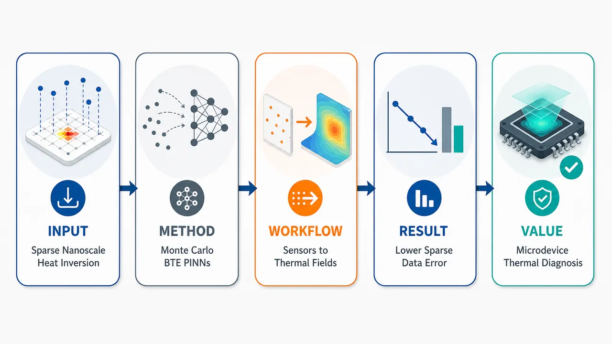
研究问题微纳尺度导热中 Fourier 定律失效，实验又常只有少量内部温度/热流传感器数据，边界条件或弛豫时间 τ 未知；核心问题是如何在扩散、过渡、弹道输运区间未知的情况下，从稀疏观测反推出全域热场和热物性参数。创新方法将 Monte Carlo PINNs 扩展到声子 Boltzmann 输运方程逆问题：神经网络预测角分辨声子能量密度，BTE 残差约束输运—散射物理；Aha 点是“时空点 + 角方向”两步随机 Monte Carlo 采样，替代预设角向网格，使未知 τ、未知 Knudsen 区间下仍能统一求解。均匀 τ 作为可训练标量，空间变 τ 由带指数输出的辅助子网络表示以保证正值。工作流程输入稀疏传感器温度/热流数据、已知或部分缺失的边界/初始条件、几何区域；每轮训练随机采样时空点和声子传播角方向，构造 BTE 物理残差；主网络输出声子能量密度，经 Monte Carlo 角向积分得到温度与热流；损失函数联合传感器数据误差、BTE 残差、可用边界/初始条件；若 τ 未知则与网络权重共同优化；最终输出全域温度场、热流场以及均匀或空间变弛豫时间。关键结果在 quasi-2D 稀疏重构中，10 个传感器、τ=0.01 时，DNN 误差为 0.3208±0.0587，MC-PINNs 降至 0.0832±0.0123；τ=10.0 时，DNN 为 0.3564±0.0936，MC-PINNs 为 0.0681±0.0131。FinFET 3D 器件中，τ=10.0 时误差从 0.948% 降至 0.380%，τ=100.0 时从 0.807% 降至 0.309%，约提升 2–3 倍。角向采样数 Bs≥32 后误差基本饱和，说明随机角向覆盖可有效替代固定细角网格。应用价值提供一种网格无关、物理一致、适合稀疏传感器数据的微纳尺度逆热分析工具，可用于芯片与 FinFET 等微电子器件热管理、纳米结构热场诊断、未知热物性参数识别和非 Fourier 导热条件下的实验数据反演，尤其适合边界难测、传感器数量有限、输运机制不确定的场景。第一部分：核心概览（Overview）
MC-PINNs 被扩展到声子 Boltzmann 输运方程（phonon BTE）支配的微纳尺度逆热传导问题，突破了既有 PINNs 多集中于 Fourier 宏观导热、BTE-PINNs 多限于正问题的局面。核心贡献在于：通过时空—角空间两步 Monte Carlo 采样避免预设角向网格，在未知输运区间下统一处理扩散、过渡与弹道输运；同时面向两类逆问题设计架构：稀疏测温下重构热场、联合识别热场与弛豫时间 τ。数值结果覆盖 quasi-1D、quasi-2D、3D 与 FinFET 器件，显示 MC-PINNs 在稀疏数据条件下显著优于纯 DNN，并可较准确识别均匀 τ 与主导性非均匀 τ 热响应。
---
第二部分：结构化快速回顾
《Monte Carlo physics-informed neural networks for inverse multiscale heat conduction problems via the phonon Boltzmann transport equation》（None，）
背景
微纳尺度导热中，当系统特征长度或时间接近声子平均自由程或弛豫时间，Fourier 定律失效，必须使用声子 BTE刻画非扩散、非局域与弹道效应。实际测量常存在边界条件、初始条件或热物性参数缺失，只能获得有限内部温度或热流观测，形成病态逆问题。
方法
采用 MC-PINNs 框架，以神经网络近似角分辨声子能量密度 (e''(t,x,s))，通过 BTE 残差、边界/初始条件与观测数据项联合训练。关键机制是物理空间与角空间的两步 Monte Carlo 采样，无需固定空间或角向网格。未知均匀 τ 被设为可训练标量；未知空间变 τ 由辅助子网络输出，并通过指数激活保证正值。
结果
quasi-2D 重构中，MC-PINNs 在 (Nₛₑₙ=10) 时相较 DNN 大幅降低误差，例如 (τ=0.01) 下 DNN 为 (0.3208±0.0587)，MC-PINNs 为 (0.0832±0.0123)。FinFET 3D 案例中，(τ=10.0) 时 DNN 温度误差为 0.948%，MC-PINNs 为 0.380%；(τ=100.0) 时 DNN 为 0.807%，MC-PINNs 为 0.309%。
讨论
物理残差在观测稀疏区域发挥正则化作用，沿 BTE 特征方向传播信息，降低对传感器位置的敏感性。角向采样数 (Bₛge 32) 后误差趋于饱和，说明随机角向覆盖可以在逆重构中有效替代固定细角网格。
局限
空间变 τ 的恢复更偏向捕捉主导热响应，而非严格逐点精确恢复；近扩散极限 (τ=0.01) 的角分布近各向同性，对角向积分精度要求更高。数值验证主要基于由正问题模拟生成的“传感器”数据，真实实验噪声、模型误差与材料多谱声子效应尚未充分展开。
结论
MC-PINNs 构成了一个网格无关、物理一致、适合稀疏观测的微纳尺度逆热分析框架，可在未知边界或未知弛豫时间条件下重构多尺度热场，并优于纯数据驱动神经网络。
---
第三部分：逐章节冷凝解析（Section-by-Section Condensing）
Abstract
- Inverse multiscale heat conduction is framed as sparse-data inference beyond Fourier law
微纳尺度导热逆问题的核心困难来自有限测量与Fourier 定律失效的叠加：热场与热物性参数无法直接由宏观扩散方程恢复，必须进入 phonon BTE 层面。摘要明确给出问题定位：*"Inferring thermal fields and thermophysical properties from limited measurements is a fundamental challenge in micro- and nanoscale heat conduction, where the classical Fourier law breaks down and the phonon Boltzmann transport equation (BTE) must be employed to capture non-diffusive transport effects."*
- Forward MC-PINNs are extended to inverse BTE problems
研究基础是 2025 年 JCP 论文中的正问题 MC-PINNs，当前扩展到逆多尺度热传导。关键承接关系为：*"we extend the Monte Carlo physics-informed neural networks (MC-PINNs), originally developed for forward phonon BTE problems [ J. Comput. Phys. 542, 114364, 2025 ], to solve inverse multiscale heat conduction problems."*
- Two inverse problem classes define the methodological scope
两类逆问题分别对应未知边界条件下的热场重构与未知弛豫时间下的联合识别。前者假定 τ 已知但边界未知；后者需同时恢复 τ 与热场。摘要中的分类为：*"(i) reconstructing the full thermal field from sparse interior temperature measurements when boundary conditions are unknown, and (ii) simultaneously inferring the unknown relaxation time, which characterizes the transport regime, together with the thermal field."*
- Mesh-free Monte Carlo sampling removes the need for prior transport-regime knowledge
Monte Carlo 网格无关采样继承自正问题框架，可覆盖扩散、过渡、弹道区间，尤其适合 τ 未知的逆问题。摘要强调：*"The mesh-free Monte Carlo sampling strategy, inherited from the forward formulation, enables a unified treatment across diffusive, transitional, and ballistic transport regimes without requiring a priori knowledge of the relaxation time."*
- Benchmark scope includes quasi-1D, quasi-2D, 3D, and realistic FinFET geometry
验证问题横跨多维度、多 Knudsen 数与实际微电子器件结构。摘要给出覆盖范围：*"The proposed method is evaluated on quasi-one-dimensional, quasi-two-dimensional, and three-dimensional benchmark problems covering a wide range of Knudsen numbers, as well as on a realistic 3D fin field-effect transistor (FinFET) structure."*
- MC-PINNs outperform purely data-driven DNNs in sparse-data regimes
性能优势集中在稀疏观测条件，且可精确推断空间均匀 τ。摘要给出结论：*"Results demonstrate that MC-PINNs consistently outperform purely data-driven deep neural networks, particularly in the sparse-data regime, and can accurately infer spatially uniform relaxation times."*
- Spatially varying τ recovery captures dominant thermal response rather than guaranteed exact parameter field
对空间变 τ，表述更谨慎：恢复分布能捕捉主导热响应，用恢复参数重新求解可较好再现宏观场。原始表述为：*"For spatially varying relaxation times, the inferred distributions capture the dominant thermal response, and numerical simulations using the recovered parameters reproduce the macroscopic fields with good accuracy."*
---
1 Introduction
- Micro- and nanoscale heat conduction is application-critical
微纳尺度导热控制直接关联微电子热管理、热成像缺陷检测、纳米材料设计。引言开场给出应用范围：*"Understanding and controlling heat conduction at micro- and nanoscales is essential for a wide range of applications, including thermal management of microelectronic devices, defect detection via thermography, and design of nanoscale materials."*
- Fourier law fails near carrier mean free path or relaxation time
当长度或时间尺度接近能量载流子平均自由程或弛豫时间，经典 Fourier 扩散近似不再成立。关键机制为：*"its validity breaks down when the characteristic length or time scale approaches the mean free path or relaxation time of energy carriers."*
- Phonon BTE is required under cryogenic, nanoscale, or ultrafast heating conditions
在低温、纳米结构、超快激光加热等条件下，非扩散与弹道效应增强，BTE 提供更基本描述。对应原文为：*"Under such conditions, encountered at cryogenic temperatures, in nanoscale structures, or under ultrafast laser heating, non-diffusive and ballistic transport effects become significant, and the phonon Boltzmann transport equation (BTE) provides a more fundamental description of the heat conduction process."*
- Conventional BTE solvers require complete prior information
离散纵标法与 Monte Carlo 模拟通常需要完整热物性、边界条件、初始条件。限制表述为：*"Conventional numerical methods for solving the phonon BTE, such as the discrete ordinates method and Monte Carlo simulations, generally require complete knowledge of the thermophysical properties as well as precise boundary and initial conditions."*
- Practical experiments often lack boundary or material information but provide partial internal measurements
复杂几何、界面效应与实验限制导致信息缺失；先进传感与成像可提供部分内部温度。两条事实相连：*"such information is incomplete or unavailable due to complex geometries, interfacial effects, or experimental limitations"*；同时 *"partial temperature measurements inside the domain can often be acquired through advanced sensing and imaging techniques."*
- Classical sparse-field reconstruction methods are limited by smoothness and locality assumptions
插值、样例内学习、邻域嵌入等依赖空间平滑或局部相关，难以解析 BTE 特征的尖锐梯度与非局域输运。核心批评为：*"typically rely on assumptions of spatial smoothness or local correlations, which limits their ability to resolve sharp thermal gradients or capture nonlocal transport effects characteristic of the BTE."*
- Purely data-driven deep learning needs large high-resolution datasets and may violate physics
CNN、GAN 等虽可做超分辨重构，但热测量中大规模高分辨训练集稀缺，且缺少显式物理约束。关键表述为：*"purely data-driven models typically require large, high-resolution training datasets that are rarely available in practical thermal measurements, and the absence of explicit physical constraints may lead to predictions that violate the underlying transport physics."*
- PINNs embed governing equations and suit sparse inverse inference
PINNs 通过自动微分将方程残差写入训练目标，可在稀疏数据下获得物理一致解。原始表述为：*"Physics-informed neural networks (PINNs) offer an attractive alternative by embedding governing equations directly into the training objective through automatic differentiation."* 其优势为：*"This enables the inference of physically consistent solutions from sparse data without requiring large training sets."*
- Existing PINN thermal inverse studies mostly remain Fourier-level
多数 PINNs 热问题仍处理 Fourier 宏观导热，BTE 支配的多尺度逆问题基本未被充分探索。关键判断为：*"most existing PINN-based thermal studies have focused on macroscopic heat conduction governed by Fourier’s law, and multiscale problems that require the phonon BTE remain largely unexplored in the inverse setting."*
- Previous BTE-PINNs are forward-only and angular-grid dependent
Li 等的 BTE-PINNs 覆盖扩散到弹道正问题，但依赖预设固角离散，弹道和近弹道区需要大量角向配点，难以高维扩展。限制为：*"their formulation relies on a priori discretization of the solid angular space, which requires a large number of angular collocation points to resolve the ballistic and near-ballistic regimes, limiting scalability to high-dimensional problems."*
- Unknown thermophysical properties make prior angular discretization impossible
逆问题中 τ 未知，输运区间未知，因此无法预先决定合适角网格。关键逻辑为：*"when thermophysical properties are unknown, as is typically the case in inverse problems, an appropriate angular discretization cannot be prescribed in advance, because the transport regime is not known a priori."*
- MC-PINNs use two-step Monte Carlo sampling in physical and angular spaces
Lin 等提出的正问题 MC-PINNs 在每步训练中随机抽取物理空间与角空间配点，避免固定网格。方法描述为：*"The method employs a two-step Monte Carlo sampling strategy, randomly drawing collocation points in both physical and angular spaces at each training iteration."*
- MC-PINNs are naturally suited to inverse BTE because they are grid-free and regime-agnostic
网格无关方法可在未知 τ 下探索计算域、降低成本并统一输运区间。优势总结为：*"This mesh-free approach removes the need for predefined spatial or angular grids, enables efficient exploration of the computational domain across all transport regimes, and reduces computational cost compared with grid-based PINN formulations."*
- Two ill-posed inverse settings guide the architecture design
第一类：τ 已知、边界/初始条件不完整、由稀疏内部温度重构全域热场；第二类：边界与初始条件已知、τ 未知，分为空间均匀未知 τ 与空间变函数 (τ(x))。问题定义为：*"Two representative classes of inverse problems are investigated"*，包括 *"Thermal field reconstruction with known relaxation time"* 与 *"Simultaneous inference of the thermal field and unknown relaxation time."*
- Validation includes realistic 3D FinFET device geometry
评价覆盖 quasi-1D、quasi-2D、3D 与真实 FinFET。原文为：*"The framework’s effectiveness is systematically evaluated on quasi-one-dimensional (quasi-1D), quasi-two-dimensional (quasi-2D), and three-dimensional (3D) test cases spanning diffusive to ballistic transport regimes, including a realistic 3D FinFET structure representative of state-of-the-art microelectronic devices."*
---
2 Methodology
- Methodology is organized around BTE formulation, inverse problem definition, and MC-PINNs construction
方法部分先给出灰模型 BTE 与两类逆问题，再介绍 MC-PINNs 正问题形式及其逆问题扩展。章节目标与范围由引言末尾交代：*"Section 2 introduces the phonon BTE, formulates the two classes of inverse problems, and presents the MC-PINNs for solving them."*
---
2.1 The phonon Boltzmann transport equation and inverse problem formulation
- Gray-model approximation simplifies phonon physics
灰模型近似忽略色散和极化，假设所有声子具有相同群速度，降低 BTE 复杂度。原文为：*"Under this approximation, phonon dispersion and polarization are neglected, and all phonons are assumed to share the same group speed."*
- Dimensionless gray phonon BTE governs angular energy density
控制方程为
[
partialₜ e''+vḑotnabla e''=frac1τ(eeq-e'')+dotS.
]
其中 (e'') 为单位固角声子能量密度，(v=v_gs)。原文直接给出：*"The dimensionless gray phonon BTE reads"* 并定义 *"where (eprⁱmeprⁱme) denotes the phonon energy density per unit solid angle, and (bmv=v_gbms) is the group velocity."*
- Angular direction is parameterized by polar and azimuthal angles
单位方向向量为
[
s=(o̧sθ,sinθo̧sφ,sinθsinφ),
]
其中 (θin[0,π])，(φin[0,2π))。原文为：*"Here, (θin[0,π]) and (φin[0,2π)) are the polar and azimuthal angles, respectively."*
- Equilibrium energy density is proportional to temperature
平衡声子能量密度为
[
eeq(t,x,s)=fracC_VT4π.
]
原文为：*"The equilibrium phonon energy density (eeq) is given by (eeq(t,bmx,bms)=fracCVT4π)."*
- Normalization fixes (C_V=1) and (v_g=1)
体积热容和群速度均被无量纲化为 1，简化 Kn 与 τ 的关系。原文为：*"the volumetric heat capacity and group velocity are normalized by their respective reference values, yielding dimensionless values (C_V=1) and (v_g=1)."*
- Macroscopic temperature and heat flux are angular moments of (e'')
温度和热流由角向积分获得：
[
T=fracint e''dØmegaC_V,quad q=int se''dØmega.
]
原文为：*"The macroscopic temperature (T) and heat flux vector (bmq) are obtained by taking angular moments of (eprⁱmeprⁱme)."*
- Thermalization boundary condition absorbs incoming phonons and emits equilibrium phonons
热化边界条件对入射声子吸收、对出射声子按壁温平衡发射；Dirichlet 型条件为
[
e''(t,x_w,s)=fracC_VT_w4π,quad sḑotn>0.
]
原文为：*"phonons incident on a boundary are absorbed, while emitted phonons are assumed to be in equilibrium with the wall temperature, leading to the Dirichlet condition."*
- Initial equilibrium condition sets initial angular energy density
初始热平衡温度 (T₀) 对应
[
e''(t₀,x,s)=fracC_VT₀4π.
]
原文为：*"The initial condition for a system initially at thermal equilibrium with temperature (T₀) is..."*
- Knudsen number defines transport regime
[
Kn=łambda/L₀,quad łambda=v_gτ.
]
扩散极限 (Knłl1) 下 BTE 退化为 Fourier 定律；(Kn>10) 进入弹道区。原文为：*"The transport regime is characterized by the Knudsen number (Kn=łambda/L₀)"*，并指出 *"In the diffusive limit ((Knłl1)), the BTE reduces to Fourier’s law"* 以及 *"ultimately the ballistic regime ((Kn>10))."*
- Relaxation time τ acts as a proxy for Kn
因 (L₀) 与 (v_g) 在各算例中给定，τ 直接表征输运区间。原文为：*"Since (L₀) and (v_g) are prescribed in each test case, the relaxation time (τ) serves as a proxy for (Kn), with different values of (τ) corresponding to distinct transport regimes."*
- Inverse problems differ from forward BTE by incomplete governing or auxiliary information
正问题需完整热物性、边界、初值；逆问题存在方程系数或辅助条件缺失。原文为：*"in contrast to the forward setting... where all thermophysical properties, boundary conditions, and initial conditions are fully specified, inverse problems are characterized by incomplete information about the governing equation or its auxiliary conditions."*
- Problem 1: known τ but missing boundary or initial conditions
第一类问题中，τ 已知，边界/初始条件缺失，目标是由内部传感器温度重构全域热场。原文为：*"The relaxation time (τ) is known, but the boundary and/or initial conditions are missing. Partial temperature measurements from sensors distributed within the domain are available, and the objective is to reconstruct the full thermal field."*
- Problem 2: known boundary and initial conditions but unknown τ
第二类问题中，边界与初始条件已知，但 τ 未知；由温度和/或热流稀疏测量联合识别热场与 τ。原文为：*"The boundary and initial conditions are prescribed, but the relaxation time (τ), which determines the transport regime, is unknown."*
- Uniform and spatially varying τ define two parameter-identification subcases
子问题分别为：(τ) 空间均匀但未知，以及 (τ(x)) 空间变且未知。原文为：*"Two sub-cases are distinguished: (a) (τ) is spatially uniform but unknown; and (b) (τ) is an unknown spatially varying function (τ(bmx))."*
- Ill-posedness sources differ structurally between the two problem classes
第一类是边界缺失导致无法直接正向求解；第二类是方程未知系数需与解场共同识别。原文为：*"In Problem (1), the governing equation is known but the missing boundary conditions prevent a direct forward solution. In Problem (2), the boundary conditions are available but an unknown coefficient in the governing equation must be inferred from sparse observations together with the solution field."*
---
2.2 MC-PINNs for inverse multiscale heat conduction
- Forward MC-PINNs provide the foundation for inverse extension
逆问题框架建立在 2025 年正问题 MC-PINNs 上。原文为：*"We extend the MC-PINNs framework developed in Ref. Lin et al. [2025] to the inverse problems formulated above."*
---
2.2.1 Forward MC-PINNs formulation
- Neural network approximates angular phonon energy density
正问题中，深度网络
[
eNN(t,x,s;boldsymbolθ)
]
输入时间、空间、角向坐标，输出声子能量密度。原文为：*"the solution to the phonon BTE is approximated by a deep neural network (eNN(t,bmx,bms;bmθ))... which takes the temporal, spatial, and angular coordinates as inputs and predicts the phonon energy density."*
- Forward loss combines equation, boundary, and initial constraints
损失函数为
[
Lfwd=ømegaEqLEq+ømegaBCLBC+ømegaICLIC.
]
原文为：*"The network is trained by minimizing a composite loss function that enforces the governing equation together with the prescribed boundary and initial conditions."*
- PDE residual encodes BTE physics
残差为
[
R=partialₜ eNN+vḑotnabla eNN-frac1τ(eeq-eNN)-dotS.
]
这使网络输出必须满足输运、散射与热源项。原文给出：*"with the PDE residual (R=partialₜeNN+bmvḑotnabla eNN-frac1τ(eeq-eNN)-dotS)."*
- Steady-state problems omit the initial-condition loss
稳态问题中无时间初值约束。原文为：*"For steady-state problems, the initial condition term (LIC) is omitted."*
- Two-step Monte Carlo sampling forms Cartesian-product collocation points
每次训练先采样 (Bₜ,ₓ) 个时空点，再采样 (Bₛ) 个角向点，训练点由两者笛卡尔积构造。原文为：*"In the first step, (Bₜ,bₘₓ) points are randomly drawn in the temporal-spatial domain; in the second step, (Bbₘₛ) points are independently drawn in the solid angular domain. The training points are then formed as the Cartesian product of these two sets."*
- Collocation points are regenerated every training step
角空间在优化过程中随机覆盖，无需固定角网格。原文为：*"Since the collocation points are regenerated at each training step, the angular space is explored stochastically over the course of optimization, ensuring sufficient directional coverage without requiring a fixed angular grid."*
- Sampling strategy mitigates dimensionality and supports complex geometries
方法避免预定义离散、适应复杂几何、缓解维数灾难，并统一处理不同输运区间。原文为：*"This sampling strategy eliminates the need for predefined discretizations, naturally handles complex geometries, mitigates the curse of dimensionality, and also achieves a unified, mesh-free treatment across all transport regimes."*
---
2.2.2 Extension to inverse problems
- Data-fidelity loss incorporates sensor measurements
逆问题损失新增观测项
[
LΦ=frac1Nₛₑₙsumₘ₌₁Nₛₑₙ|Φₛₑₙ,ₘ-Φₚᵣₑd,ₘ|²,
]
总损失为
[
L=ømegaΦLΦ+ømegaEqLEq+ømegaBCLBC+ømegaICLIC.
]
原文为：*"the forward MC-PINNs framework is augmented with a data-fidelity term (LΦ) that incorporates available measurements."*
- Observables include temperature and/or heat flux
(Φ) 表示宏观可观测量，包括温度 (T) 和/或热流 (q)。原文为：*"where (Φ) denotes the observable macroscopic quantities (temperature (T) and/or heat flux (bmq))."*
- Predicted macroscopic quantities are computed by Monte Carlo angular quadrature
网络输出 (eNN) 通过角向矩得到 (T,q)，角积分由采样角点 Monte Carlo 求积。原文为：*"The predicted macroscopic quantities are computed from the network output (eNN) via the moment integrals in Eq. (3), with the angular integrals evaluated by Monte Carlo quadrature using the sampled angular points."*
- Unavailable physical information is excluded from the loss
例如未知边界条件时去掉 (LBC)，未知初值时相应项也可去掉。原文为：*"any term for which the corresponding information is unavailable is simply dropped."*
- Unit loss weights are used unless otherwise stated
默认 (ømegaΦ=ømegaEq=ømegaBC=ømegaIC=1)，经验上精度可接受。原文为：*"Unless otherwise noted, unit loss weights... are used throughout, as they are found to yield satisfactory accuracy empirically."*
- Unknown-boundary reconstruction omits boundary loss and uses known τ in residual
问题 1 中，主网络仍预测 (eNN)，由于边界不可用，(LBC) 被去除；损失由 PDE 残差、初始条件与传感器数据组成。原文为：*"Since boundary conditions are unavailable, (LBC) is omitted, and the loss function consists of the PDE residual, the initial condition... and the data-fidelity term evaluated at the sensor locations."*
- Uniform unknown τ is optimized as a trainable parameter
问题 2a 中，τ 不是网络输入场，而是与网络权重联合训练的标量参数。原文为：*"the unknown relaxation time (τ) is treated as a trainable parameter and optimized jointly with the network weights."*
- Spatially varying unknown τ is represented by an auxiliary sub-network
问题 2b 中，辅助网络输入 ((t,x))，输出 (τ)，再嵌入主网络 BTE 残差散射项。原文为：*"An auxiliary sub-network is introduced to approximate the spatially varying relaxation time (τ(t,bmx))."*
- Exponential output activation enforces positive τ
弛豫时间必须为正，因而在辅助子网络输出层施加指数激活。原文为：*"with an exponential activation function applied at the output layer to enforce positivity."*
- Main and auxiliary networks are trained jointly
空间变 τ 被动态嵌入散射项，两套网络同时优化。原文为：*"The inferred (τ) is dynamically embedded into the scattering term of the main network’s PDE residual, and both networks are trained jointly."*
- Grid-free MC sampling is especially valuable when τ is unknown
未知 τ 意味着无法根据 Kn 预设角离散；MC-PINNs 仍能覆盖角空间。关键原文为：*"Since (τ) is either unknown or its value cannot be used to determine an appropriate angular discretization a priori, the grid-free nature of MC-PINNs ensures that the angular space is adequately explored regardless of the transport regime."*
- Advantage over grid-based PINNs and deterministic solvers lies in regime-agnostic angular treatment
网格型 PINNs 或确定性数值方法通常需根据预期 Kn 选择角网格；MC-PINNs 不需要。原文为：*"This unified treatment across diffusive, transitional, and ballistic conditions is an advantage over grid-based PINNs or conventional deterministic numerical methods, which generally require the angular discretization to be chosen according to the expected Knudsen number."*
---
3 Results and Discussion
- Evaluation covers both inverse problem classes
结果部分系统评估前述两类逆问题。原文为：*"This section presents a comprehensive evaluation of the proposed MC-PINNs framework on the two classes of inverse problems introduced in Sec. 2."*
- Reference solutions are generated by complete forward BTE solvers
所有训练传感器数据来自完整边界/初值条件下的前向 BTE 数值解。原文为：*"reference solutions are obtained by solving the corresponding forward phonon BTE problems under complete boundary/initial conditions using the numerical methods of Refs. Zhang et al. [2023, 2019, 2025]."*
- Sensor measurements are synthetic samples from reference solutions
训练观测并非真实实验数据，而是从参考解指定位置采样。原文为：*"Sensor measurements used for training are mimicked by sampling from these reference solutions at specified locations."*
- Relative (L₂) error quantifies prediction accuracy
误差定义为
[
EΦ=frac|Φᵣₑf-Φₚᵣₑd|₂|Φᵣₑf|₂,quad Φ=T,q,or τ.
]
原文为：*"The prediction accuracy is quantified by the relative (L₂) error."*
- Pure DNNs serve as data-driven baselines
对比对象为不嵌入物理残差的 DNN。误差定义段说明：*"(Φₚᵣₑd) denotes the prediction (from either MC-PINNs or a purely data-driven deep neural network, DNN, used for comparison)."*
---
3.1 Thermal field reconstruction with known relaxation time
- Problem setting uses known τ and missing boundary conditions
第一组实验中，τ 已知、边界未知，任务是由稀疏内部温度恢复全域热场。原文为：*"the relaxation time (τ) is known but the boundary conditions are unavailable, and the task is to reconstruct the full thermal field from sparse interior temperature measurements."*
- Two configurations test canonical and device-scale reconstruction
验证包括 quasi-2D 方腔稳态导热与 3D bulk FinFET。原文为：*"Two representative configurations are studied: quasi-2D steady-state heat conduction in a square domain, and 3D heat conduction in a bulk FinFET structure."*
- DNN comparison isolates the effect of physics constraints
MC-PINNs 与同样传感器数据训练的纯 DNN 对比，用于评估 BTE 物理约束的增益。原文为：*"MC-PINNs are compared with purely data-driven DNNs trained on the same sensor measurements, to assess the effect of embedding physical constraints."*
---
3.1.1 Quasi-2D heat conduction in a square domain
- Square-domain benchmark spans near-diffusive to ballistic regimes
方形区域边长 (L=1)，弛豫时间取 (τ=0.01,0.1,1.0,10.0)，覆盖近扩散到弹道。原文为：*"a square domain of side length (L=1). Four relaxation times, i.e., (τ=0.01, 0.1, 1.0, and 10.0), are examined, spanning transport regimes from near-diffusive to ballistic."*
- Physics-informed sampling uses (Bₓ=100), (Bₛ=100)
每步训练随机采样 100 个空间点与 100 个角向点构造物理损失。原文为：*"For each case, (Bbₘₓ=100) spatial points and (Bbₘₛ=100) angular points are randomly sampled to construct the training points used in the physics-informed loss at each training step."*
- Initial reconstruction comparison uses (Nₛₑₙ=20) sensors
MC-PINNs 与 DNN 均使用 20 个随机传感器测量。原文为：*"both MC-PINNs and DNNs are trained using (Nₛₑₙ=20) sensor measurements randomly sampled from the reference solutions."*
- MC-PINNs recover temperature fields across all τ values more accurately than DNNs
轮廓图和 (y=0.5) 中心线剖面均显示 MC-PINNs 可恢复全域温度；DNN 在边界附近与观测稀疏区域误差明显。原文为：*"MC-PINNs accurately recover the temperature distributions across the full range of relaxation times, whereas the DNN reconstructions exhibit noticeable errors near the boundaries and in regions with sparse observational coverage."*
- DNNs show unphysical deviations in poorly observed regions
中心线剖面对比揭示 DNN 在传感器覆盖不足位置偏离物理趋势。原文为：*"MC-PINNs faithfully reproduce the expected heat conduction behavior, while DNNs produce unphysical deviations in poorly observed regions."*
- Sensor-density study uses (Nₛₑₙ=10,20,40,80) and five independent runs
为评估数据稀疏性与传感器位置敏感性，每种配置进行 5 次独立随机传感器实验。原文为：*"we evaluate the reconstruction error across varying numbers of sensor points ((Nₛₑₙ=10,20,40,) and (80)) and relaxation times. For each configuration, five independent runs are performed with randomly regenerated sensor locations."*
- MC-PINNs are much better in the sparsest case (τ=0.01,Nₛₑₙ=10)
表 1 显示，(τ=0.01)、10 个传感器时，DNN 误差 (0.3208±0.0587)，MC-PINNs 为 (0.0832±0.0123)。该结果对应原表：*"DNNs (0.3208±0.0587)"* 与 *"MC-PINNs (0.0832±0.0123)."*
- MC-PINNs reduce error substantially at (τ=0.1)
(τ=0.1) 下，(Nₛₑₙ=10) 时 DNN 为 (0.1539±0.0331)，MC-PINNs 为 (0.0457±0.0095)；(Nₛₑₙ=20) 时 DNN 为 (0.0749±0.0148)，MC-PINNs 为 (0.0279±0.0037)。表格数据为：*"0.1539 ± 0.0331"*、*"0.0457 ± 0.0095"*、*"0.0749 ± 0.0148"*、*"0.0279 ± 0.0037."*
- MC-PINNs remain better in transitional (τ=1.0)
(τ=1.0) 下，(Nₛₑₙ=10) 时 DNN (0.1592±0.0353)，MC-PINNs (0.0431±0.0028)；(Nₛₑₙ=80) 时 DNN (0.0366±0.0043)，MC-PINNs (0.0212±0.0007)。对应原表数据为：*"0.1592 ± 0.0353"*、*"0.0431 ± 0.0028"*、*"0.0366 ± 0.0043"*、*"0.0212 ± 0.0007."*
- MC-PINNs also improve ballistic-like (τ=10.0) reconstruction
(τ=10.0) 下，(Nₛₑₙ=10) 时 DNN (0.3564±0.0936)，MC-PINNs (0.0681±0.0131)；(Nₛₑₙ=20) 时 DNN (0.0954±0.0194)，MC-PINNs (0.0571±0.0138)。表中原值为：*"0.3564 ± 0.0936"*、*"0.0681 ± 0.0131"*、*"0.0954 ± 0.0194"*、*"0.0571 ± 0.0138."*
- DNN error bars are wider and indicate stronger sensor-placement dependence
DNN 标准差明显更大，说明稀疏或不均匀传感器布局会导致不稳定误差；MC-PINNs 更稳健。原文为：*"the error bars of DNNs are substantially wider, indicating a strong dependence on the specific placement of sensors."* 与 *"the narrow error bars of MC-PINNs indicate robust performance and reduced sensitivity to sensor placement."*
- Physics constraints regularize unobserved regions
MC-PINNs 优势来源于 BTE 残差在未观测区域施加物理约束。原文为：*"This robustness is a direct consequence of the physical constraints that regularize the solution in unobserved regions."*
- Angular sampling study varies (Bₛ=8,16,32,64,128,256)
固定 (Bₓ=100)、(Nₛₑₙ=20)，考察角向采样数对误差的影响。原文为：*"with (Bbₘₛ) varied as (8,16,32,64,128,) and (256). The number of spatial points is fixed at (Bbₘₓ=100), and (Nₛₑₙ=20) sensor points are used."*
- Angular sampling improvement saturates at (Bₛge32)
对所有 τ，误差随角点增加通常下降；(Bₛge32) 后收益趋于饱和。原文为：*"the testing error from MC-PINNs generally decreases with increasing (Bbₘₛ) for all values of (τ). The improvement saturates once (Bbₘₛ≥32)."*
- For (τ=0.1,1.0,10.0), (Bₛge32) gives below-5% errors
过渡与弹道相关区间中，相对 (L₂) 误差低于 5%。原文为：*"For (τ=0.1,1.0,) and (10.0), the relative (L₂) errors fall below (5%) with (Bbₘₛ≥32)."*
- Near-diffusive (τ=0.01) requires finer angular resolution
近扩散区角分布近各向同性，对角积分精度要求更高，因此误差略高。原文为：*"The case (τ=0.01) (near-diffusive) shows slightly higher errors, which is expected since the diffusive regime is characterized by near-isotropic angular distributions that require somewhat finer angular resolution."*
---
3.1.2 Spatially varying relaxation time
- Spatially heterogeneous τ tests robustness under heterogeneous thermophysical parameters
quasi-2D 空间变 τ 案例用于评估 MC-PINNs 在非均匀方程系数下的热场重构稳定性。原文为：*"we next consider a quasi-2D case in which the relaxation time varies spatially, to evaluate the robustness of MC-PINNs for a governing equation with heterogeneous thermophysical parameters."*
- τ varies sharply in x-direction via a hyperbolic-tangent profile
弛豫时间设为
[
τ(x,y)=fracτₘₐₓ+τₘᵢₙ2
-fracτₘₐₓ-τₘᵢₙ2
tanhłeft(fracx-x_c2di̊ght),
]
参数为 (τₘₐₓ=1.0)、(τₘᵢₙ=0.1)、(x_c=L/2)、(d=0.01)，在中心附近急剧变化。原文为：*"with (τₘₐₓ=1.0), (τₘᵢₙ=0.1), (x_c=L/2), and (d=0.01), corresponding to a sharp transition near the domain center."*
- τ range lies in transitional regime and strongly affects thermal field
([0.1,1.0]) 的 τ 范围属于过渡输运区，温度场对空间变 τ 敏感。原文为：*"The prescribed range of (τ) lies in the transitional regime, where the thermal field is highly sensitive to spatial variations in the relaxation time."*
- Computational setup uses (Bₓ=200), (Bₛ=100), (Nₛₑₙ=20)
空间点数较均匀 τ 案例翻倍，以处理非均匀系数。原文为：*"In the computations, (Bbₘₓ=200) spatial points and (Bbₘₛ=100) angular points are used, with (Nₛₑₙ=20) sensor measurements for both methods."*
- Sensor-density robustness again uses (Nₛₑₙ=10,20,40,80) and five runs
传感器数量与重复实验设计沿用前一节。原文为：*"The effect of sensor density is also evaluated with (Nₛₑₙ=10,20,40,) and (80), using five independent runs per configuration."*
- Sharp τ transition creates a pronounced gradient change near (x=0.5)
(τ) 在中心附近急剧变化，导致温度梯度明显改变。原文为：*"The sharp variation in (τ) near (x=0.5) induces a pronounced change in the temperature gradient."*
- MC-PINNs capture local gradient feature whereas DNNs oversmooth
MC-PINNs 能解析中心附近局部热响应；DNN 过度平滑，无法反映非均匀 BTE 物理。原文为：*"MC-PINNs accurately capture this local feature, whereas the purely data-driven DNNs produce an overly smooth solution that fails to resolve the underlying physics."*
- MC-PINNs achieve lower errors and smaller variance across sensor configurations
误差比较显示 MC-PINNs 在所有传感器数量下均更准确且方差更低。原文为：*"across all tested sensor configurations, MC-PINNs achieve lower reconstruction errors with significantly smaller variance."*
---
3.1.3 3D heat conduction in FinFET structures
- FinFET benchmark tests realistic 3D device-scale capability
3D bulk FinFET 稳态导热用于验证方法在真实器件结构中的可扩展性。原文为：*"To assess the capability of MC-PINNs for realistic device-scale problems, we consider 3D steady-state heat conduction in a bulk FinFET structure."*
- Geometry is nondimensionalized using nanometer reference length
所有几何尺度以纳米为参考长度无量纲化。原文为：*"All geometric dimensions are nondimensionalized using the nanometer as the reference length scale."*
- Symmetry reduces the computational domain to one quarter
结构由四个 bulk FinFET 构成，热源对称布置于 fin 区；利用几何对称只计算全结构四分之一。原文为：*"The structure... comprises four bulk FinFETs with symmetrically arranged heat sources embedded in the fin regions. Exploiting geometric symmetry, only one quarter of the full structure is used as the computational domain."*
- Boundary conditions combine fixed-temperature bottom and adiabatic diffuse reflection elsewhere
底面固定 (T_w=1)，其余表面绝热且漫反射。原文为：*"The bottom surface is held at a fixed temperature (T_w=1), while all other surfaces are treated as adiabatic and diffusely reflecting boundaries."*
- Heat source is localized in a rectangular fin subregion
体热源为
[
dotS=0.005
]
当 (xin[10,18])、(yin[50,82])、(zin[28,38])，否则为 0。原文为：*"(dotS=begincases0.005,&if xin[10,18],,yin[50,82],,zin[28,38],0,&otherwise.endcases)"*
- Two relaxation times probe near-diffusive to transitional device transport
取 (τ=10.0) 与 (τ=100.0)，特征长度 (L_c=82)，处于近扩散至过渡区。原文为：*"Two cases with different relaxation times, (τ=10.0) and (τ=100.0), are considered, with the corresponding Knudsen numbers lying in the near-diffusive to transitional regimes (using (L_c=82))."*
- Training uses 200 random in situ temperature sensors
每个案例假设器件内部随机布置 (Nₛₑₙ=200) 个温度传感器。原文为：*"we assume (Nₛₑₙ=200) sensors are randomly placed in the device to provide in situ measurements of the temperature."*
- MC-PINNs use (Bₓ=500), (Bₛ=100)
3D 器件每步随机采样 500 个空间点和 100 个角向点。原文为：*"For the MC-PINN computations, (Bbₘₓ=500) spatial points and (Bbₘₛ=100) angular points are randomly sampled at each iteration."*
- Visualization uses slices at (z=29) and (x=14.5)
3D 温度重构通过 (x-y) 平面 (z=29) 与 (y-z) 平面 (x=14.5) 切片展示。原文为：*"The reconstructed 3D thermal field is visualized through temperature slices in the (x-y) plane at (z=29) and in the (y-z) plane at (x=14.5)."*
- MC-PINNs reduce FinFET errors by approximately 2–3×
表 2 中，(τ=10.0)：DNN 温度误差 0.948%，MC-PINNs 0.380%；(τ=100.0)：DNN 0.807%，MC-PINNs 0.309%。原文结论为：*"MC-PINNs consistently achieve closer agreement with the reference solutions than DNNs for both values of (τ), with relative (L₂) errors approximately 2-3 times smaller."*
- Both methods capture global structure, but DNN deviates near the isothermal boundary
DNN 与 MC-PINNs 均能反映 fin 区高温和向底部等温面的温降；DNN 在 (y-z) 平面底部附近等温线偏离参考解。原文为：*"both MC-PINNs and DNNs capture the overall thermal structure"*，但 *"the DNN reconstructions exhibit visible discrepancies in the (y-z) plane... particularly in the lower portion of the domain near the isothermal boundary."*
- MC-PINNs contours follow reference isotherms even far from sensors
物理残差使 MC-PINNs 在无传感器区域仍保持一致性。原文为：*"the MC-PINNs contours closely follow the reference isotherms throughout the domain, including in regions far from sensor locations."*
- BTE residual propagates information along characteristic directions
BTE 物理项不仅局部平滑，还沿输运方向约束解场。原文为：*"the embedded BTE residual in MC-PINNs propagates information along characteristic directions and regularizes the solution in unobserved regions."*
- The (τ=100.0) case is easier to reconstruct than (τ=10.0)
两种方法在 (τ=100.0) 下误差更低。原文为：*"both methods achieve lower relative errors for (τ=100.0) than for (τ=10.0)."*
- Knudsen numbers are explicitly computed as 0.12 and 1.22
用 (L_c=82)、(v_g=1)、(Kn=v_gτ/L_c)，(τ=10.0) 得 (Knapprox0.12)，(τ=100.0) 得 (Knapprox1.22)。原文为：*"the corresponding Knudsen numbers are (Knapprox0.12) for (τ=10.0) and (Knapprox1.22) for (τ=100.0)."*
- Near-diffusive case has sharper localized gradients near heat sources
(τ=10.0)、(Knapprox0.12) 时散射频繁，导热近似 Fourier 局部行为，热源附近梯度更尖锐。原文为：*"For (τ=10.0) ((Knapprox0.12), near-diffusive), phonon scattering is frequent and heat conduction is predominantly local, following an approximately Fourier-like behavior."*
- Transitional case distributes heat more broadly and is more reconstructable
(τ=100.0)、(łambda=100) 接近器件尺寸，非局域输运使热能更广泛分布，温度梯度不那么局域化，稀疏测量下更易恢复。原文为：*"For (τ=100.0) ((Knapprox1.22), transitional), the phonon mean free path ((łambda=100)) is comparable to the device dimensions, and non-local transport effects become significant."* 以及 *"The resulting macroscopic temperature field exhibits less localized gradients and is therefore easier to reconstruct from sparse measurements."*
---
第四部分：深度理解与语言支持（Understanding & Nuance）
1. 术语解析
- Inverse multiscale heat conduction problems（逆多尺度热传导问题）
“inverse” 强调从有限观测反推未知量，而不是给定全部条件求解温度场；“multiscale” 指输运同时可能包含扩散、过渡、弹道机制，不能用单一 Fourier 扩散尺度描述。语境中对应两类任务：未知边界下的热场重构、未知 τ 下的参数识别。
- Phonon Boltzmann transport equation, BTE（声子 Boltzmann 输运方程）
BTE 不是只求宏观温度，而是求角分辨的声子能量密度 (e''(t,x,s))。温度和热流只是它的角向矩。微妙之处在于：温度场可近似平滑，但底层 (e'') 在弹道区高度方向相关，因而角空间采样是核心难点。
- Relaxation time τ（弛豫时间）
τ 表示声子分布向局部平衡 (eeq) 回归的时间尺度。在灰模型且 (v_g=1) 时，平均自由程 (łambda=v_gτ=τ)，因此 τ 直接控制 Knudsen 数。τ 小对应频繁散射、近扩散；τ 大对应长程飞行、非局域/弹道效应更强。
- Mesh-free Monte Carlo sampling（网格无关 Monte Carlo 采样）
“mesh-free” 不等于没有采样点，而是不预先构造固定空间网格或角向网格；每步训练随机生成配点。“Monte Carlo” 的意义是通过随机抽样近似高维积分与残差约束，尤其用于固角空间。
- Data-fidelity term（数据保真项）
(LΦ) 强制预测的温度/热流与传感器观测一致。它不是物理方程约束，而是观测约束；与 PDE 残差共同缓解逆问题病态性。若没有该项，未知边界或未知 τ 难以唯一确定。
2. 疑难查证
- 为什么未知 τ 会让固定角向离散变困难？
BTE 解的角向结构强烈依赖 Kn。扩散区中，多次散射使角分布接近各向同性；弹道区中，声子沿特征方向长距离传播，角分布可能具有强方向性。传统角向离散需要提前决定方向数和方向分布，但 τ 未知时 Kn 未知，无法判断需要粗角网格还是细角网格。MC-PINNs 每次训练随机抽取角方向，长期优化中覆盖整个角空间，因此不需要根据未知输运区间预设角网格。
- 为什么 BTE 残差能在无传感器区域“传播信息”？
BTE 包含 (vḑotnabla e'') 项，本质上沿方向 (s) 传输声子能量。某个传感器处的温度约束会通过网络参数影响全域 (e'')，而 PDE 残差要求这些影响沿物理特征方向满足输运—散射平衡。纯 DNN 只能做统计插值；MC-PINNs 同时做物理外推。
- 为什么 (τ=100.0) 的 FinFET 案例反而比 (τ=10.0) 更容易重构？
直觉上 Kn 更大似乎更难，但温度重构难度还取决于宏观场形态。(τ=10.0)、(Knapprox0.12) 时热更局域，热源附近存在较尖锐梯度，稀疏传感器难以捕捉局部细节。(τ=100.0)、(Knapprox1.22) 时声子传播距离更长，热能分布更宽，温度场更平滑、更全局化，因此从 200 个传感器恢复宏观温度反而更容易。
- 空间变 τ 的识别为何比均匀 τ 更弱？
均匀 τ 只有一个标量自由度，传感器数据和 BTE 残差能较强约束它。空间变 (τ(x)) 是函数识别问题，自由度远高于标量识别；不同 τ 分布可能产生相近宏观温度场，存在不可辨识性。因此“捕捉主导热响应”比“逐点精确恢复 τ”更现实。
---
第五部分：创新评估与关联（Synthesis & Novelty）
1. 创新性判断
- 从 forward BTE-PINNs 推进到 inverse BTE-PINNs
过去 2–5 年内，PINNs 在热传导逆问题中多处理 Fourier 方程；BTE-PINNs 研究主要集中正问题。该工作把 MC-PINNs 系统扩展到声子 BTE 逆问题，覆盖未知边界、未知均匀 τ、未知空间变 τ 三类典型不完备信息场景。
- 解决“未知输运区间下无法预设角离散”的关键障碍
传统 BTE-PINNs 依赖预设角向配点，弹道区需要更密角离散；逆问题中 τ 未知，Kn 未知，角网格无法先验选择。两步 Monte Carlo 采样使训练过程自动探索角空间，避免“先知道 τ 才能设计求解器”的循环依赖。
- 将物理约束与稀疏传感器数据结合用于 BTE 级热场重构
纯 DNN 在稀疏测量时容易局部插值失真；MC-PINNs 用 BTE 残差对无观测区域正则化。quasi-2D 案例中，(Nₛₑₙ=10) 时误差可从 DNN 的 0.3208 降至 MC-PINNs 的 0.0832；FinFET 中误差降低约 2–3 倍，体现出实用价值。
- 同时覆盖理想基准与真实器件几何
验证不局限于低维方腔，还扩展到 3D bulk FinFET，包含复杂边界、局部热源与微电子热管理场景。这增强了方法相对普通 PINNs 基准测试的工程相关性。
- 参数识别架构具有可扩展性
均匀 τ 用可训练标量表示，空间变 τ 用辅助网络表示并通过指数激活保证正值。该设计可自然推广到其他正性热物性参数，如空间变热导率、界面热阻或有效平均自由程场。
- 科学创新点的边界
创新不在于提出全新的 PINN 损失范式，也不在于首次使用 BTE 或 Monte Carlo；核心新颖性在于把MC 角空间采样、BTE 物理残差、稀疏观测逆问题、未知 τ 参数识别整合为一个可在未知输运区间运行的统一框架。当前证据主要基于数值合成观测，向真实实验数据、噪声鲁棒性、多谱声子模型和更复杂材料界面推广仍是后续关键方向。
-
02
📊 含图深析
📄 摘要：面向高精度 X 射线谱学中的金属磁量热计 MMC，探索机器学习处理复杂探测器响应和可扩展流水线。方法用于脉冲分类、伪迹剔除、脉冲形状分析与特征提取，以提高大规模 MMC 数据处理性能并降低人工规则依赖。
💡 亮点：机器学习被用于 MMC 脉冲分类、伪迹剔除和形状特征提取，解决高精度 X 射线谱探测器的扩展处理瓶颈。该工作体现 ML 在低温量热探测数据管线中的实用价值。
📖 展开分析 + 配图
研究问题未来 MMC 阵列将从当前 64 像素扩展到数千像素，传统脉冲处理依赖逐像素手工校准、阈值切割、FIR 滤波器调参和伪迹修正，像一条拥堵的人工流水线；核心问题是如何在缺少真实标签、存在噪声伪迹和像素差异的情况下，把 MMC 的脉冲分类、伪迹剔除、脉冲形状分析和特征提取变成可自动扩展的处理系统。创新方法Aha 点是把机器学习设计成 MMC 传统处理链的“可扩展增强层”：一条路线用 PCA+UMAP 将高维脉冲轨迹压成二维地图，再用 HDBSCAN 自动发现真实脉冲簇和伪迹簇，生成伪标签后训练 Random Forest 快速分类；另一条路线用仿真脉冲训练 CVAE 学习可解释潜空间，再用 MLP 从潜空间回归脉冲幅度和触发时间，并通过少量真实数据微调实现仿真到真实的域适配。工作流程输入为原始 MMC 脉冲轨迹；首先经预过滤去除明显异常，再进入两条处理支路：伪迹剔除支路为 PCA 降维 → UMAP 二维嵌入 → HDBSCAN 聚类 → 最大簇标为真实脉冲、其他簇标为伪迹 → 多随机种子多数投票 → Random Forest 学习并在线分类；特征提取支路为物理仿真生成带标签脉冲 → CVAE 编码器压缩到低维潜空间并重构脉冲 → 潜空间 PCA 检查物理结构 → MLP 预测幅度与触发时间 → 用少量真实脉冲微调 CVAE → 输出清洁事件、能量相关特征和最终能谱。关键结果无监督聚类能在降维地图中形成清晰区域，最大密集簇对应真实光子脉冲，其余簇对应伪迹，多数投票和预过滤提升标签稳定性；CVAE 潜空间前三个主成分呈现明确物理含义，分别关联脉冲幅度、触发时间不确定性和上升时间变化，且不明显编码随机噪声；真实脉冲的潜空间分布完全落在仿真分布内部；在 Am-241 与 Co-57 校准数据上，机器学习提取的能谱峰位和能量分辨率与传统手工优化 FIR 滤波结果吻合。应用价值该研究证明机器学习可把 MMC 信号处理从“专家逐像素调参”转变为“自动标签发现、快速分类、仿真训练、少量真实数据适配”的可扩展流程，适合未来千像素低温探测器阵列；实际价值包括减少人工校准成本、提升伪迹剔除一致性、支持在线监测与实时反馈，并为高精度 X 射线谱学中的大规模 MMC 读出建立自动化技术路线。第一部分：核心概览 (Overview)
围绕 Metallic Magnetic Calorimeters（MMCs） 的规模化信号处理瓶颈，提出将 无监督标签自动发现、监督分类、仿真到真实域适配、CVAE 潜空间回归 嵌入传统脉冲处理链。核心贡献不在刷新单通道能量分辨率，而在证明机器学习可把人工调参密集的 脉冲分类、伪迹剔除、脉冲形状分析、特征提取 转化为可扩展流程，面向未来 thousands of pixels 的 MMC 阵列。该工作处于方法论示范阶段，为高精度 X 射线谱学中的 MMC 自动化、在线监测和大规模阵列读出提供技术路线。
---
第二部分：结构化快速回顾
《Machine Learning Approaches for Improved Scalability of Metallic Magnetic Calorimeters》（None，）
背景
MMCs 兼具宽能段覆盖、高量子效率、高能量分辨率和优良线性度，适合高精度 X 射线谱学；但其信号处理依赖复杂校准、像素级手工优化和伪迹修正。当前 64 像素 maXs-30 / maXs-100 已具挑战，未来 thousands of pixels 阵列使传统流程难以扩展。
方法
提出两类机器学习嵌入方案：
- Reduce-Cluster-Classify：PCA + UMAP 降维，HDBSCAN 聚类，自动生成真实脉冲/伪迹标签，再训练 Random Forest 分类器。
- CVAE + MLP 潜空间回归：用仿真脉冲无监督训练 CVAE，再用仿真标签训练 MLP 预测幅度和触发时间，并通过真实数据微调实现 domain adaptation。
结果
无监督聚类可将最大簇识别为真实脉冲，其余簇识别为伪迹；多数投票和预过滤可提升鲁棒性。CVAE 潜空间前三个主成分对应 pulse amplitude、trigger time uncertainty、rise time variations，对噪声水平无明显依赖。真实脉冲潜空间分布被仿真分布完全覆盖，ML 提取能谱与传统 FIR 滤波结果在峰位和分辨率上吻合。
讨论
机器学习优势集中在 自动适应、减少手工调参、处理非线性效应、适合在线推理。模型不是替代传统校准/滤波，而是作为增强模块。可解释性通过潜空间结构、物理一致性和与 FIR 方法对比获得支撑。
局限
缺少大规模定量性能表；未给出分类准确率、F1、假阳性率、能量分辨率具体数值；真实数据展示限于单个探测器通道；对真实实验分布漂移、跨像素泛化、长期增益漂移仍需验证。
结论
机器学习可为 MMC 信号处理提供可扩展、鲁棒且物理可解释的方案。未来重点包括更逼真的仿真数据、GAN 缩小仿真-真实差距、LSTM 增益漂移修正、Bayesian optimization 自动调节 SQUID 硬件参数。
---
第三部分：逐章节冷凝解析 (Section-by-Section Condensing)
Zusammenfassung
- ML targets MMC scalability bottlenecks
MMCs 被定位为高精度 X 射线谱学的重要工具，但探测器响应复杂、处理管线难以规模化。摘要直接指出核心问题是 *"the complexity of the detector response and the need for scalable processing pipelines pose significant challenges for their widespread adoption"*。机器学习被用于提升 pulse classification、artifact rejection、pulse shape analysis、feature extraction，核心目标是增强 MMC 的实际可部署性。
- Unsupervised and supervised learning are combined
方案不是单纯监督学习，而是利用 unsupervised learning 自动发现标签，再用 supervised learning 完成分类与回归。关键表述为 *"leveraging unsupervised learning techniques for label auto-discovery and supervised learning for classification and regression tasks"*。这直接回应 MMC 数据缺乏人工可靠标签的问题。
- Performance claim is comparative rather than numerically demonstrated
结论层面的性能表达是“可比”，不是“显著优于”。摘要称 ML 方法 *"can achieve comparable performance to traditional methods while offering greater adaptability and efficiency"*。未给出准确率、能量分辨率、处理速度、统计显著性或样本量，因此该贡献更偏 pipeline scalability demonstration，而非严格性能基准刷新。
---
I Introduction
- MMCs address precision demands in atomic and fundamental physics
高精度实验，尤其是 bound-state quantum electrodynamics 等基础物理问题，对 X 射线能谱精度提出极高要求。开篇指出 *"The investigation of elementary physical processes, like the bound-state quantum electromechanics in atomic and fundamental physics, places highest demands on the precision"*。此处 “electromechanics” 很可能是 “electrodynamics” 语境下的表述异常，但科学背景明确指向强场 QED 和原子物理精密谱学。
- Calorimetric detection converts photon energy into temperature rise
Calorimeters 的基本机制是单光子吸收导致传感器温度按能量比例变化：*"absorbing the energy of an incident single photon giving rise to a proportional change in sensor temperature"*。温度变化通过材料性质变化读取，例如 Ag:Er paramagnetic sensor 的磁化变化，并结合 SQUID magnetometers：*"the changing magnetization of a paramagnetic Ag:Er sensor in conjunction with highly sensitive SQUIDs"*。
- MMCs combine energy-dispersive and wavelength-dispersive detector advantages
MMC 同时具有半导体探测器的宽谱覆盖与晶体谱仪的高分辨能力。能段范围给出为 1 keV 到 100 keV：*"typically in the range of 1 keV / to 100 keV"*；能量分辨本领可达 E/ΔE ≈ 6000：*"an unparalleled energy resolution of up to E / Δ E ≈ 6000"*。这说明 MMC 的定位是宽能段、高分辨、能量色散式 X 射线探测器。
- Spectral linearity and timing capability support precision experiments
MMC 具有优良的谱线线性度，非线性可由第一性原理理解：*"MMCs exhibit excellent spectral linearity with non-linearities well understood form first principle"*。同时由于 fast rise time，可用于符合测量：*"Due to their fast rise time ... they can also be used in coincidence measurement-schemes"*。这使其不仅适用于静态能谱，还适用于时间相关实验。
- Cryogenic operation and weak thermal signals create engineering challenges
典型热容约 1 pJ/K：*"At typical thermal capacities of around 1 pJ / K"*；对应温度变化约 100 mK/keV：*"the expected temperature change in the sensor only amounts to ≈ 100 mK / keV"*。需要 dilution cryostat 达到 below 20 mK，并需要 SQUID 读出与放大链：*"Dedicated hardware – like a dilution cryostat to reach temperatures below 20 mK, the SQUID read-out and amplification stages"*。
- High sensitivity increases susceptibility to noise and artifacts
高灵敏度使传感器容易受声学振动、外部电磁场影响：*"increased susceptibility to external sources of noise, e.g., acoustic vibrations or external electromagnetic fields"*。增益漂移等伪迹促使分析从传统模拟链转向数字脉冲处理：*"necessitate the shift from traditional analogous signal analysis to a digital pulse processing chain"*。
- Traditional processing requires specialized calibration and filters
既有流程包含 pulse classification、pulse shape analysis、artifact correction，例如连续校准、moving window deconvolution、optimal filter。相关表述为 *"continuous calibration schemes"*、*"moving window deconvolution for highest stability in noise experiment environments"*、*"optimal filter designed to yield highest energy resolutions"*。这些方法性能强，但依赖条件、模型和人工调参。
- Pixelated MMC arrays intensify scaling problems
为降低热容，MMC 倾向减小传感器面积；为保持立体角覆盖，需要像素化阵列。maXs 系列单芯片集成多探测器，图 1 展示 maXs-100 detector chip with 64 pixels：*"Picture of a maXs-100 detector chip with 64 pixels"*。当前 64 pixels 的 maXs-30 和 maXs-100 已经难以优化：*"For 64 pixels of the currently used maXs-30 and maXs-100 detectors this is already challenging"*。
- Future thousand-pixel arrays make manual optimization infeasible
未来芯片计划达到 thousands of pixels，传统手工设置和优化几乎不可用：*"in the future chips with thousands of pixels are planned ... rendering the current manual setup and optimization chain virtually impossible to apply"*。这是整篇工作的主要动机：机器学习服务于 scalability，而非单纯追求单通道极限性能。
- Fixed heuristics fail on edge cases
传统管线依赖固定启发式规则，面对复杂阵列中可能出现的边缘情况不够稳健：*"traditional processing pipelines rely on fixed heuristics that might not be sufficient for handling every edge case"*。因此需要更自动、更精确、更可扩展的新方法：*"new methods are required to make the process more efficient, precise and scalable"*。
---
II Machine Learning in the Context of MMCs
- ML is defined as data-driven modeling rather than rule-based programming
Machine Learning 被明确区分于传统规则编程：*"ML is a mostly data-driven modeling approach rather than rule-based programming"*。在 MMC 信号分析中，目标是学习从原始探测器轨迹到物理量的映射：*"discovers functional relationships that map raw detector traces to the physically meaningful quantities they encode"*。
- Neural networks map high-dimensional traces to relevant features
Neural Networks 被表述为灵活函数逼近器，可将高维测量数据非线性映射到特征集合：*"NN thereby act as flexible function approximators that non-linearly map the high-dimensional space of measured data to a set of relevant features"*。这适合 MMC 脉冲，因为原始 trace 高维、噪声复杂、响应非线性。
- Supervised and unsupervised learning serve different stages
Supervised learning 利用已知标签做参数估计：*"utilize the existence of known labels to translate a set of given inputs"*；unsupervised learning 在无标签情况下发现结构：*"discovering structures without predefined labels"*。MMC 的关键难点是没有真实物理标签，因此无监督方法承担前置标签发现或表征学习角色。
- ML must be physically motivated, not blindly applied
机器学习应用需有明确物理动机：*"its application must be guided by a clear physical motivation"*。传统方法的限制来自无标签数据、探测器响应复杂且受环境影响、需要规模化处理：*"intrinsic limitations arising from the lack of labeled data, the complexity of the detector response and its environmental dependence, and the need for scalable processing"*。
- Pixelated detector arrays benefit from reduced hand tuning
对高度像素化阵列，ML 的优势是减少人工参数依赖：*"Particularly for highly pixelated detector arrays these methods could prove advantageous as they are less reliant on hand-tuned parameters"*。这直接对应未来千像素 MMC 阵列的工程需求。
- ML can compensate imperfect physics models and nonlinear effects
ML 架构可学习对不完美物理模型的修正，并捕获难以解析建模的非线性效应和相关性：*"learn corrections to imperfect physics models and capture non-linear effects and correlations that are difficult to model or describe analytically"*。这不是否定物理模型，而是补全模型误差。
- Inference speed enables large-scale and online use
由于 PyTorch、Scikit-Learn 等框架高度优化，训练后推理极快：*"once trained, the inference is extremely fast"*。因此适合大规模阵列甚至在线监测：*"suitable for large-scale detector arrays, even in online monitoring scenarios"*。
- ML complements rather than replaces traditional pipelines
机器学习的角色被限定为增强传统校准和滤波，而不是完全替代：*"ML methods ideally are meant to complement – not replace – the traditional calibration and filtering pipelines"*。这有助于降低黑箱风险，并保持与现有实验流程兼容。
- Heterogeneity and drift are central practical challenges
MMC 数据存在像素差异、时间漂移、参数突变：*"high heterogeneity due to pixel-to-pixel variations, and drifts or sudden jumps in the measurement parameters over time"*。因此架构必须对波动鲁棒：*"robust and have an intrinsic tolerance to these fluctuations"*。
- Interpretability and overfitting require targeted safeguards
ML 中间状态往往抽象，需要针对性验证和设计才能具备物理解释：*"Intermediate states and features of ML methods are often abstract and need targeted validation and careful design to be interpretable in physically meaningful terms"*。神经网络可能过拟合或利用伪相关：*"NNs tend to run into over-fitting or exploit spurious correlations"*，甚至学习实验设置伪迹而非物理：*"learn setup-specific artifacts instead of physics"*。
- Lack of labeled ground truth is the largest obstacle
最大挑战是没有标注真值：*"the lack of a labeled ground truth poses the largest challenge"*。真实测量中不存在可直接读取的“true values”：*"No 'true' values are available for physical quantities in measured data"*。这使直接监督学习不可行：*"This renders the direct application of supervised learning schemes impossible"*。
- Self-supervision, clustering, simulation, and transfer learning form the strategy
应对策略包括从原始脉冲学习表征、用 auto-encoder 自监督训练、用 clustering 自动发现特征、再进入监督学习阶段：*"learn representations of the data via self-supervised training like auto-encoders or to derive features via auto-discovery methods like clustering"*。仿真与迁移学习用于弥合真实数据标签缺口：*"use transfer learning methodology in conjunction with simulated data to bridge the gap"*。
---
III Application of Machine Learning Methods
III.1 Example 1: Pulse Classifier and Artifact Rejection
- Artifact rejection is an early and essential pipeline task
MMC 高灵敏度导致某些 recorded traces 被采集系统触发，但并非真实光子吸收事件：*"recorded traces occasionally contain artifacts that trigger the data acquisition, but do not correspond to real photon absorption events"*。这些伪迹会严重降低测量性能，因为后续脉冲形状分析无法正确处理：*"can severely degrade the measurement performance of the detector as they cannot be properly processed"*。
- Traditional threshold and shape cuts are insufficient
传统方法依赖阈值和形状切割：*"Traditional methods rely on simple thresholding and shape-based cuts"*。这些规则无法捕获数据全部复杂性：*"not able to capture the full complexity of the data"*，且需要大量人工调参，难以扩展到大像素数：*"require extensive manual tuning and are not easily scalable to large pixel counts"*。
- Reduce-Cluster-Classify solves missing labels through auto-discovery
分类器通常需要标签，但 MMC 无可靠人工标签。方案利用真实脉冲和伪迹的可识别模式，通过无监督方法发现标签：*"real pulses and artifacts follow recognizable patterns that can be discovered via unsupervised learning methods"*。随后使用这些标签训练监督分类器：*"generate our own labels in a self-supervised manner and subsequently train a supervised classifier"*。
---
III.1.1 Dimensionality Reduction
- High-dimensional sparse traces require projection before clustering
原始脉冲类似计算机视觉数据，高维且稀疏：*"our data is also highly dimensional and sparse"*。直接寻找模式困难，因此先降维到低维空间：*"project the data into a lower-dimensional space where structural patterns emerge more clearly"*。
- PCA captures global linear structure before nonlinear embedding
第一阶段使用 PCA 降至数百维：*"PCA ... is used to reduce the data to a few hundred dimensions"*。PCA 找到数据变化最大方向并投影：*"identifies the directions (axes) along which the data varies the most"*。适合捕捉线性相关和全局特征：*"effective at capturing linear correlations in the data and extracting global features"*。
- UMAP maps the reduced representation to two dimensions
第二阶段使用 UMAP 降至二维：*"UMAP ... is applied for a final reduction to two dimensions"*。UMAP 假设数据位于弯曲流形上，并保留局部与全局结构：*"preserves both local and global structure by assuming the data lies on a curved manifold"*。其非线性特性适合捕获局部脉冲形态特征：*"well-suited for capturing local features in the data"*。
---
III.1.2 Clustering
- HDBSCAN identifies dense pulse-pattern groups and noise
降维后使用 HDBSCAN 聚类：*"hierarchical density-based clustering algorithm HDBSCAN"*。密集区域形成簇，稀疏区域标为噪声：*"closely packed together in dense regions are identified as clusters, while sparse regions are marked as noise"*。
- HDBSCAN is preferred for stability and soft assignments
HDBSCAN 相比 DBSCAN 超参数敏感性更低：*"chosen over other clustering algorithms like DBSCAN ... due to its reduced sensitivity to hyper-parameters"*，且聚类更稳定：*"ability to produce more stable clustering results"*。软聚类允许每个点拥有簇归属概率：*"each data point is assigned a probability of belonging to each cluster rather than a hard assignment"*，可通过排除阈值过滤不确定样本：*"An exclusion threshold can be assigned later to filter out uncertain assignments"*。
- FCluster prevents excessive cluster fragmentation
使用 SciPy 的 FCluster 剪切层次聚类树，可预设距离或簇数得到平面标签组：*"cut the hierarchical clustering tree (dendrogram) at a chosen distance or number of clusters to form flat, labeled groups"*。这允许限制最大簇数并避免大簇碎片化：*"predefine a maximum cluster count and prevent fragmentation of larger clusters"*。
- Largest cluster is treated as real pulses
最大簇被识别为真实脉冲，其余簇为伪迹：*"the largest cluster is identified as the group of real pulses, while all other clusters are considered artifacts"*。该假设基于真实脉冲比伪迹更常见：*"based on the expectation that real pulses occur more frequently than artifacts in the data"*。图 4 展示 PCA+UMAP 投影与 HDBSCAN 聚类，其中 *"The largest cluster corresponds to real pulses, while all other clusters represent artifacts"*。
- Repeated random seeds and majority voting improve robustness
标签自动发现可用不同随机种子重复运行，对同一 trace 获得多个标签：*"repeating the label auto-discovery process several times with different initial randomization-seeds"*。随后多数投票降低离群点影响：*"A majority vote across all found labels can then be utilized to reduce the influence of outliers"*。
- Pre-filters can be merged with discovered labels
自动标签可与简单 leading-edge triggers 和 threshold cuts 合并：*"merged with pre-filter results, like simple leading edge triggers and threshold cuts"*。这是一种混合策略，用 ML 提升复杂模式识别，用传统启发式保留高置信先验。
- Evaluation is qualitative and stability-based, not fully quantitative in reported text
标签自动发现性能通过随机抽样 trace 的视觉检查评估：*"evaluated qualitatively by visual inspection of randomly selected traces from each cluster"*。稳定性通过不同随机种子标签一致性评估：*"measuring the consistency of labels across multiple runs with different random seeds"*。可用 silhouette score、NMI、ARI 量化：*"silhouette score and the NMI ... or ARI ... can be used"*。不过正文未报告具体数值。
---
III.1.3 Classification
- Random Forest is selected after label discovery
从小数据子集生成标签后，训练专用分类器直接从原始 trace 预测伪迹：*"After labels are generated from a small subset of the full dataset, a dedicated classifier model can be trained"*。选用 Random Forest Classifier：*"For the purpose of this work, the Random Forest Classifier ... is chosen"*。
- Random Forest improves robustness through ensemble voting
随机森林由多棵决策树组成，每棵树使用随机数据和特征子集训练：*"Each decision tree is trained on a random subset of the data and features"*。推理时各树投票决定分类：*"the final classification is determined by majority voting across all trees"*。该机制降低过拟合并提升泛化：*"helps to reduce over-fitting and improve generalization to unseen data"*。
- Efficiency-accuracy trade-off motivated the classifier choice
与 SDG 和 Rocket 等分类器相比，随机森林在效率与准确性之间表现最佳：*"Compared to other classifier architectures like SDG or Rocket it showed the best trade-off between efficiency and accuracy"*。不过未给出具体 accuracy、F1 或运行时间数值。
- Raw traces are used as features, auto-discovered labels as targets
模型输入为原始轨迹，目标为自动发现标签：*"The raw traces are used as input features, while the labels generated from the auto-discovery step serve as target outputs"*。超参数通过交叉验证优化：*"hyper-parameters optimized via cross-validation to maximize classification accuracy"*。
- False positive control is important for template generation
对生成 optimal filter 模板脉冲，低假阳性率尤其重要：*"Particularly for the generation of template pulses ... a low false positive rate is necessary"*。随机森林正类阈值可调整到目标假阳性率：*"positive label threshold of the random forest classifier can be adjusted to yield a target false positive rate"*。这体现分类器不仅追求整体准确率，还服务于下游物理分析质量。
---
III.2 Example 2: Pulse Shape Analysis and Feature Extraction
- Feature extraction is the main pulse-processing task
脉冲处理主任务是从原始脉冲提取 pulse amplitude 和 exact trigger time：*"extract relevant features from the raw detector pulses, like the pulse amplitude and exact trigger time"*。这些特征直接决定能量估计和时间对齐。
- Traditional FIR filters require exact pulse and noise knowledge
传统方法使用 FIR filters，如 optimal filter 和 MWD：*"Traditionally, this is achieved using FIR filters like the optimal filter ... or MWD"*。其原理依赖对脉冲形状和噪声特征的精确认知：*"relies on the exact knowledge of the pulse shape and noise characteristics"*。因此必须为每个像素和测量条件手工优化：*"hand-optimized for each pixel and measurement condition"*。
- Large pixel counts make FIR hand optimization impractical
随着像素数增加，逐像素 FIR 优化越来越不可行：*"becomes increasingly impractical for large pixel counts"*。此外，FIR 对变化条件和复杂真实脉冲形状适应性有限：*"limited adaptability to changing conditions and complex pulse shapes"*。
---
III.2.1 Domain Adaptation
- Neural networks learn raw-pulse-to-feature mappings directly
NNs 可直接学习原始脉冲到目标特征的映射：*"learn the mapping from raw pulses to relevant features directly from the data"*。这种方法可自动适应不同脉冲形状和噪声条件：*"automatic adaptation to different pulse shapes and noise characteristics"*。
- Simulation-to-real adaptation solves missing labels
缺乏真实标签限制监督学习，因此先用仿真数据监督训练，再用迁移学习适配真实数据：*"leverage simulated data to train the model in a supervised manner and subsequently apply transfer learning techniques to adapt the model to real detector data"*。这被称为 simulation-to-real domain adaptation：*"This so called simulation-to-real domain adaptation approach"*。
- Physics-based simulation is plausible because pulse shape is understood
该策略依赖 MMC 脉冲形状从第一性原理上可理解并可准确仿真：*"the general pulse shape is well understood from first principles and can be accurately simulated"*。仿真数据还可覆盖比少数真实传感器更广的参数空间：*"train on well defined and labeled training data with a wide variety of possible parameters instead of a few sensors"*。
---
III.2.2 Unsupervised Reconstruction and Latent Space Regression
- CVAE learns compact pulse representations through reconstruction
第一步用无监督重构学习脉冲形状紧凑表示，兼具降维作用：*"learn a compact representation of the pulse shapes via unsupervised reconstruction - effectively also acting as a dimensional reduction step"*。采用 CVAE 架构：*"using a CVAE architecture"*。
- Encoder-decoder architecture compresses and reconstructs pulses
CVAE 包含 encoder 和 decoder：*"consists of an encoder and a decoder network"*。encoder 将输入脉冲压缩到低维潜空间，decoder 从潜空间重构原始形状：*"compress the input pulse into a lower-dimensional latent space representation and then reconstruct it back to the original shape"*。encoder 使用多个卷积层提取特征：*"uses several convolutional layers to extract relevant features"*。
- CVAE improves robustness through probabilistic latent distributions
与常规 auto-encoder 不同，CVAE 学习潜空间参数分布并采样随机输出：*"learns parameter distributions in the latent space and samples randomized output values"*。这增强泛化和抗噪能力：*"allowing for better generalization and robustness to noise"*。
- Latent space is intentionally not over-compressed
潜空间维度被设置得比严格需要更多：*"We allow more dimensions in the latent space than strictly necessary"*。这样给网络保留扩展相关特征的自由，避免重要信息丢失：*"prevent over-compression and loss of important information"*。
- Latent PCA reveals physical structure
图 6 对 CVAE 潜空间嵌入做 PCA n = 3：*"PCA ( n = 3 ) analysis of the CVAE latent space embedding"*。前三个主成分明显依赖不同仿真参数，尤其 pulse amplitude、trigger time uncertainty、rise time variations：*"A clear dependence on pulse amplitude, trigger time uncertainty and rise time variations can be observed"*。
- Pulse amplitude dominates one principal component
一个主成分明显对应脉冲幅度，因为幅度对整体脉冲形状影响最大：*"A clear dependence of one principal component on the pulse amplitude can be observed, as this parameter has the largest influence on the overall pulse shape"*。这证明潜空间不是任意黑箱坐标，而携带可解释物理信息。
- Trigger-time uncertainty and rise-time variations occupy other components
其他主成分主要由触发时间不确定性和上升时间变化占据：*"The other principle components are mostly occupied by the uncertainty of the trigger time and rise time variations"*。这些参数若处理不当会严重损害 FIR 滤波表现：*"usually lead to severe deterioration of the FIR filter performance if not properly accounted for"*。
- Noise level is not encoded as a dominant latent variable
潜空间对噪声水平无明显依赖：*"no dependence on the noise level can be observed"*。解释是 encoder 有效去噪：*"the encoder is very effective at de-noising the input signal"*，因为噪声多数非相关，不贡献整体脉冲结构：*"the noise is mostly uncorrelated and does not contribute to the overall structure"*。
- MLP performs latent space regression from embeddings to features
第二阶段训练 MLP 从潜空间表示到相关特征的映射：*"a simple MLP ... can then be trained on the simulated data to learn the mapping from the latent space representation to the relevant features"*。该技术称为 latent space regression：*"feature reconstruction from laten space embedding is known as latent space regression"*。
- Training uses reconstruction loss, regularization, and MSE
CVAE 训练损失由重构损失和正则项组成，使潜空间服从预设分布，通常是多元高斯：*"combination of reconstruction loss and a regularization term that encourages the latent space to follow a predefined distribution, typically a multivariate Gaussian"*。MLP 使用预测值与真实特征之间的 mean squared error loss：*"trained using mean squared error loss between the predicted and true feature values"*。超参数通过交叉验证优化：*"Hyper-parameters for both models are optimized via cross-validation"*。
---
III.2.3 Transfer to Real-World Data
- Direct simulation-trained models may underperform on real data
仿真与真实数据分布不同，直接应用可能表现次优：*"due to differences between the simulated and real data distributions, a direct application might lead to suboptimal performance"*。这正是 domain gap 问题。
- Fine-tuning adapts CVAE while preserving MLP mapping
微调使用少量真实数据，冻结 MLP 权重，只更新 CVAE 权重：*"freezing the weights of the MLP and only updating the weights of the CVAE during training"*。这样 encoder 可适应真实数据特征，同时保留潜空间到特征的映射：*"adapt to the specific characteristics of the real data while preserving the learned mapping from latent space to features"*。
- Fine-tuning is conservative to avoid overfitting
微调采用小学习率和有限 epoch：*"using a small learning rate and a limited number of epochs to prevent overfitting"*。真实数据先由分类器预过滤，避免伪迹进入训练：*"real detector data is pre-filtered by the classifier to avoid training on artifacts"*。
- Real pulses reconstruct better than simulated pulses even before fine-tuning
CVAE 对真实数据的重构 MSE 甚至优于仿真数据：*"able to reconstruct real pulses with higher accuracy than simulated ones even before fine-tuning"*。这说明 CVAE 学到的脉冲表示可泛化到真实数据：*"learned a robust representation of the pulse shapes that generalizes well to real data"*。
- Real latent distribution lies inside simulated distribution
图 7 比较仿真蓝点和真实红点的 PCA n = 3 潜空间分布。真实脉冲占据更小区域，并完全包含于仿真分布内：*"the real pulses occupy a much smaller region in the latent space that is completely contained within the simulated pulse distribution"*。这说明仿真覆盖了真实脉冲的相关变化：*"the simulation is able to cover all relevant variations of the real detector pulses"*。
- ML spectra agree with FIR spectra on calibration data
用单个探测器通道、Am-241 和 Co-57 校准源的所有事件比较 ML 特征提取和传统 FIR 滤波：*"For a single detector channel, all events of a calibration measurement using Am-241 and Co-57 sources are processed using both methods"*。图 8 显示两者峰位和能量分辨率一致：*"good agreement between the two approaches, with the ML-based method achieving comparable energy resolution and peak positions"*。
- No gain-drift correction was applied in the displayed spectra
图 8 注明没有增益漂移修正，校准仅用粗略线性拟合用于可视化：*"No gain-drift correction has been applied and calibration has been performed using rough linear fits for visualization purposes only"*。因此图谱比较证明方法可行，但不能视为最终高精度性能评估。
- Simulation-only training plus small real fine-tuning is the key result
ML 模型主要只用仿真数据训练，并用少量真实数据微调，却达到与手工优化 FIR 接近的结果：*"ML models were trained solely on simulated data and only fine-tuned on a small subset of real data while the FIR-filter had to be hand-optimized"*。这支持其面向大规模阵列的可扩展优势。
- Online processing is a promising application
ML 方法的计算效率和灵活性适合实验实时监测与反馈：*"promising for the implementation of online processing schemes for real-time monitoring and feedback during the experiment"*。这对未来高像素 MMC 阵列尤为关键。
---
IV Conclusion and Outlook
- Task-specific justification is required for ML integration
ML 应用必须选择真正合理的任务，而非泛化滥用：*"care has to be taken to find applications where ML actually makes sense from the standpoint of task-specific justification"*。两类示例任务分别对应传统流程痛点：伪迹分类与脉冲特征提取。
- Chosen architectures are interpretable, efficient, and established
所选架构具有潜空间可解释性、计算效率和理论基础：*"interpretable in terms of latent space structure, computationally efficient, well-established and theoretically grounded"*。这强化了方法可信度。
- ML is positioned as an enhancement tool, not a black box replacement
方法定位明确：*"ML as a tool to enhance the existing processing pipeline not as an unexplained black box"*。验证来自仿真交叉验证、物理一致性检查和传统方法基准比较：*"cross-validation on simulated data, consistency checks with known physical behavior, and performance benchmarking against traditional methods"*。
- Better simulation data is a main future direction
特征提取可通过升级仿真数据源提升：*"enhancement of the feature extraction stage could be achieved by further upgrading the simulation data source"*。更多真实数据可帮助模型捕捉真实探测器信号复杂性：*"Incorporating more real-world data into the training process"*。
- GANs may reduce simulation-to-real discrepancy
可用 GAN 使仿真数据更接近真实数据：*"using a GAN ... to make simulated data closer to real world data"*。这针对 domain adaptation 的核心瓶颈：仿真分布与真实分布间的偏差。
- LSTM may support gain-drift correction
增益漂移修正可用时间序列模型探索，特别是 LSTM：*"time series analysis via LSTM ... networks could be investigated to model and correct for temporal drifts and discontinuities"*。这对应 MMC 长时间测量中常见的响应漂移问题。
- Bayesian optimization may automate SQUID hardware tuning
SQUID 读出和放大链硬件优化可通过专用 Bayesian optimization 框架实现：*"hardware optimization of the read-out and amplification SQUIDs could be targeted by a bespoke Bayesian optimization framework"*。目标是基于实时信号反馈自动调参：*"automatic tuning of the hardware parameters to achieve optimal performance based on real-time feedback"*。
---
V Author Declarations
V.1 Conflict of Interest
- No disclosed conflicts
利益冲突声明简洁明确：*"The authors have no conflicts to disclose"*。未报告商业利益、专利冲突或资助方干预。
V.2 Author Contributions
- M.O. Herdrich led most technical and writing components
M.O. Herdrich 负责概念、方法、软件、验证、正式分析、调查、数据整理、可视化和写作：*"Conceptualization, Methodology, Software, Validation, Formal analysis, Investigation, Data curation, Visualization, Writing – original draft, Writing – review and editing"*。
- T. Mattis contributed conceptual and methodological validation
T. Mattis 参与概念、方法、验证和审稿修改：*"Conceptualization, Methodology, Validation, Writing – review and editing"*。
- G. Weber, D.A. Schnauß-Müller, and J.H. Walch provided data and evaluation support
三位成员均承担方法评估的数据支持：*"Support and data provision for the evaluation of the presented methods"*。
- Th. Stöhlker provided supervision and project-level support
Th. Stöhlker 负责概念、监督、经费获取、项目管理和修改：*"Conceptualization, Supervision, Funding acquisition, Project administration, Writing – review and editing"*。
V.3 Acknowledgments
- Experimental data came from HI-Jena and GSI collaborations
实验数据由 HI-Jena 和 GSI 同事提供：*"providing experimental data used for demonstration and evaluation purposes"*。这说明展示与评估基于真实实验数据，而非纯仿真。
- MMC system development involved Heidelberg collaboration
对 Heidelberg Kirchhoff Institute for Physics 的 C. Enss 团队表示感谢：*"their collaboration in developing the MMC detector system"*。这反映 maXs/MMC 技术平台的长期合作基础。
- Open access funding came from GSI
发表由 GSI 开放获取基金支持：*"funded by the Open Access Publishing Fund of GSI Helmholtzzentrum fuer Schwerionenforschung"*。
V.4 Availability of data
- Data are available upon reasonable request
数据可向通讯作者合理请求获取：*"available from the corresponding author upon reasonable request"*。没有公开仓库链接，也未提供代码开放声明，这限制了完全复现性。
---
第四部分：深度理解与语言支持 (Understanding & Nuance)
1. 术语解析
- Scalability
学术含义不是简单“速度快”，而是系统在像素数、数据量、参数复杂度增长时仍能维持可操作性和性能。此处核心语境是从 64 pixels 扩展到 thousands of pixels 时，人工调参、像素级校准和传统启发式规则不可持续。
- Artifact rejection
不只是“去噪”。Noise 通常是随机扰动，可能叠加在真实脉冲上；artifact 是被采集系统触发但并非光子吸收事件的异常轨迹。伪迹剔除的目标是把非物理事件排除在能谱重建之前，否则后续滤波会输出错误能量。
- Label auto-discovery
指在没有人工标签或真实标签时，通过聚类等无监督方法自动构造伪标签。这里不是证明标签绝对正确，而是利用真实脉冲和伪迹在降维空间中的结构差异，获得足够可靠的训练目标。
- Latent space regression
Latent space 是 CVAE encoder 压缩后的低维表示；regression 是从该表示预测连续物理量，如幅度、触发时间。关键不是直接从原始 trace 回归，而是先学习一个去噪、紧凑、物理可解释的表示，再在该表示上做监督预测。
- Simulation-to-real domain adaptation
Domain 指数据分布。仿真脉冲和真实脉冲来自不同分布，即存在 domain gap。策略是先用有标签仿真数据训练，再用少量真实数据微调 encoder，使真实数据嵌入到已学会物理映射的潜空间中。
2. 疑难查证
- 为什么真实数据没有“真值”？
在 MMC 实验中，单个真实脉冲的真实能量、精确触发时间、传感器响应参数无法直接观测。传统 FIR 输出也只是经过模型和滤波假设得到的估计值，不能作为绝对 ground truth。因此，直接监督学习会陷入悖论：需要模型预测的量，恰恰没有可靠标签。解决路径是：用物理仿真生成已知标签，再用真实数据调整表征层。
- 为什么先 CVAE 再 MLP，而不是端到端网络？
端到端网络可能更直接，但更容易学习伪相关，且难解释。CVAE 先通过重构学习脉冲形状结构，把噪声和无关扰动弱化；PCA 检查显示潜空间主成分对应幅度、触发时间不确定性和上升时间变化，增强物理可解释性。MLP 只在潜空间上回归，降低了输入维度和过拟合风险。
- 为什么最大簇可视为真实脉冲？
在正常校准或测量数据中，真实光子事件通常远多于伪迹事件。因此降维聚类后最大密集簇大概率对应真实脉冲。这个假设在伪迹率极高或触发条件异常时可能失效，所以需要视觉检查、多随机种子一致性、silhouette/NMI/ARI 等稳定性评估，以及传统预过滤共同约束。
- 为什么“噪声水平不进入潜空间”是好现象？
如果潜空间主成分强烈随噪声水平变化，说明 encoder 把随机噪声当成主要结构编码，后续 MLP 可能对噪声分布过拟合。无噪声依赖表示 CVAE 抓住的是脉冲的系统性形态变化，而非随机扰动，有利于跨数据集泛化。
---
第五部分：创新评估与关联 (Synthesis & Novelty)
1. 创新性判断
- 从“提高单次滤波性能”转向“构建可扩展 MMC 信号处理生态”
过去 MMC 工作多集中于探测器硬件、SQUID 读出、optimal filter、MWD、连续校准和具体高精度谱学实验。该研究的新颖性在于把机器学习作为 scalability layer 嵌入完整脉冲处理链，直接面向从几十像素到千像素阵列的自动化瓶颈。
- 无标签条件下的 Reduce-Cluster-Classify 伪迹剔除路线
MMC 真实数据缺少可靠标签，人工标注大规模 trace 不现实。通过 PCA → UMAP → HDBSCAN → majority vote → Random Forest 构造自动标签，再训练可快速推理的分类器，解决了“无标签但需要监督分类”的工程矛盾。
- 仿真到真实的 CVAE 潜空间回归用于 MMC 特征提取
使用物理仿真生成有标签训练数据，再通过 CVAE 学习可解释潜空间，并用 MLP 回归幅度和触发时间。关键创新点是将 domain adaptation 和 latent space regression 组合到 MMC pulse shape analysis，而不是依赖逐像素手工 FIR 优化。
- 物理可解释性被内置到 ML 验证流程
潜空间 PCA 显示主成分对应 amplitude、trigger-time uncertainty、rise-time variations，且不编码噪声水平；真实脉冲分布嵌入仿真分布；能谱与 FIR 对比一致。这些设计降低了“黑箱模型”在高精度物理测量中的接受障碍。
- 解决前人未充分解决的问题
传统 MMC 管线可在少量像素上达到高性能，但对千像素阵列存在三类未解决问题：
- 逐像素手工优化不可扩展；
- 伪迹形态复杂且缺少人工标签；
- 真实物理量没有直接 ground truth，监督学习难以启动。
该研究分别用自动标签发现、快速分类器、物理仿真加迁移学习应对这些瓶颈。
- 当前创新仍属概念验证而非最终性能定标
新颖性强在框架与可行性，而非完整统计基准。缺少样本量、准确率、F1、假阳性率、能量分辨率数值、跨像素泛化测试和长期漂移验证。后续若能在多芯片、多实验、真实在线数据流中展示稳定性能，才可从方法示范提升为 MMC 阵列标准处理方案。
-
03
📄 摘要：ConSolv 是溶剂条件化隐式溶剂机器学习势，通过注意力式溶剂嵌入块显式引入溶剂对溶质相互作用的影响。模型针对现有隐式 MLP 多局限于水相的问题，扩展到非水溶剂场景，服务有机合成、电池等需要多溶剂环境的分子模拟。
💡 亮点：ConSolv 将溶剂身份编码进机器学习隐式溶剂势，使同一模型可描述水相与非水相对溶质相互作用的调制。对电解液和有机反应模拟，条件化势能面比固定水模型更贴近实际化学环境。
📖 展开分析 + 配图
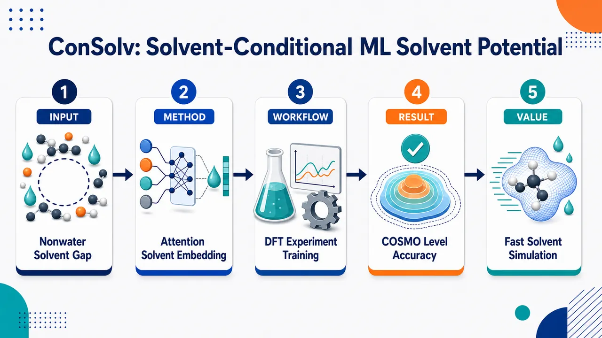
研究问题如何在不显式模拟大量溶剂分子的情况下，让一个机器学习势同时理解并预测多种非水有机溶剂对溶质构象、相互作用和溶剂化自由能的影响；核心挑战是突破既有隐式溶剂 MLP 主要局限于水环境的问题，并避免为每种溶剂单独训练模型。创新方法ConSolv 提出“溶剂条件化隐式机器学习势”：以 MACE 等变图神经网络为骨架，将 15 个 RDKit 溶剂物化描述符作为条件输入，通过多头交叉注意力让溶质原子选择性关注溶剂特征，并用溶剂因子调制原子间径向边特征；Aha 点是溶剂不再只是标签或输出校正，而是在消息传递前直接改变原子级相互作用表示。工作流程输入溶质分子构型与指定溶剂描述符；先用 SPICE 气相 DFT 能量和力训练真空 MLP，获得可靠分子内势能面；再加入溶剂嵌入模块，利用 Solv@TUM 实验溶剂化自由能进行 top-down 训练；通过 MD 轨迹、可微重加权和 BAR 更新计算自由能差，反向优化溶剂条件势；最终输出给定溶剂中的隐式溶剂势能、力和溶剂化自由能预测。关键结果气相模型达到 1.8 meV/atom 能量误差和 46 meV/Å 力误差；在 923 个 Solv@TUM 测试点上 RMSE 为 0.64 kcal/mol、MAE 为 0.50 kcal/mol、R² 为 0.97，超过 92% 预测落入 1 kcal/mol 化学精度；在 Zhang 基准上 RMSE 为 0.82 kcal/mol，显著优于 GAFF 的 1.18 kcal/mol，并接近 COSMO-RS 的 0.71 kcal/mol；描述符注意力方案在区分同一溶质跨溶剂变化上表现更可靠，per-solute R² 达 0.85。应用价值为有机合成、电化学、电池电解液、药物溶解度和构象采样提供单模型、多有机溶剂、低成本且可解释的隐式溶剂模拟工具；相比显式溶剂模拟减少大量溶剂自由度，相比 COSMO-RS 避免每个分子都做 DFT 级计算，相比 GAFF 更能处理复杂极性与溶剂依赖相互作用。第一部分：核心概览 (Overview)
ConSolv 将隐式溶剂机器学习势从主要限于水环境推进到66 种常见有机溶剂，通过注意力驱动的溶剂嵌入模块把溶剂描述符直接耦合进溶质原子与边特征。模型联合使用 SPICE 气相 DFT 能量/力数据与 Solv@TUM 实验溶剂化自由能训练，在 Solv@TUM、CombiSolv、Zhang 等基准上达到或接近 COSMO-RS，并显著优于 GAFF，建立了可迁移、可解释、非水溶剂条件化隐式 MLP 框架。
---
第二部分：结构化快速回顾
《ConSolv: Solvent-Conditional Machine Learning Implicit Solvent Potential》（None，）
背景
溶剂会调控静电屏蔽、构象分布、反应平衡、过渡态稳定性。传统显式溶剂模拟在精度与效率之间存在矛盾：DFT 精确但昂贵，经典力场高效但泛化与极化描述有限。已有隐式溶剂 MLP 多集中于水环境，非水有机溶剂空间尚未充分覆盖。
方法
ConSolv 以 MACE 等变消息传递图神经网络为基础，引入由 15 个 RDKit 溶剂描述符构成的溶剂条件输入。节点特征通过多头交叉注意力调制，边径向特征通过 MLP 生成的溶剂因子调制。训练分两阶段：先用过滤后的 SPICE DFT 数据训练气相 MLP，再用 Solv@TUM 实验溶剂化自由能进行 top-down 自由能匹配。
结果
气相模型在测试集达到 1.8 meV/atom 能量误差和 46 meV/Å 力误差。最终 ConSolv 在 923 个 Solv@TUM 测试点上 RMSE 0.64 kcal/mol、MAE 0.50 kcal/mol、整体 R² 0.97；在 Zhang 等基准上 RMSE 0.82 kcal/mol，优于 GAFF 的 1.18 kcal/mol，接近 COSMO-RS 的 0.71 kcal/mol。
讨论
描述符型输入嵌入比纯可训练溶剂嵌入更能区分不同溶剂环境。虽然可训练 attention 嵌入在 RMSE/MAE 上略优，但 per-solute R² 仅 0.70，低于 ConSolv 的 0.85，显示其对溶剂差异的解析能力不足。
局限
模型对训练分布外气体分子、碘分子、大分子、高极化或构象受限分子存在误差风险。训练数据主要覆盖少于 11 个重原子的有机/药物样分子，且某些溶剂如 undecane 训练样本仅 24 个。
结论
ConSolv 提供了一个单模型、多有机溶剂、可解释、实验自由能驱动的隐式溶剂 MLP 框架，在非水溶剂建模中实现了精度、效率与可迁移性的平衡。
---
第三部分：逐章节冷凝解析 (Section-by-Section Condensing)
Abstract
- Solvent-conditional implicit MLP expands beyond water
ConSolv 的核心目标是突破已有隐式溶剂 MLP 对水环境的依赖，进入非水有机溶剂空间。摘要明确指出既有模型局限于水：*"existing models have largely focused on aqueous environments, overlooking the diverse and important roles of non-aqueous solvents in areas such as organic synthesis and battery technology."* 该问题在有机合成、电池技术等场景中关键，因为溶剂不仅是背景介质，而是影响分子相互作用的条件变量。
- Attention-based solvent embedding directly conditions solute interactions
ConSolv 的架构创新是把溶剂效应显式注入溶质势能模型：*"a solvent-conditional MLP architecture that explicitly incorporates solvent effects on solute interactions through an attention-based solvent-embedding block."* 这里的 attention-based solvent-embedding block 不只是给模型附加溶剂标签，而是让溶剂描述符参与调制原子节点和边特征，从而改变有效溶质相互作用。
- Single model transferable across 66 organic solvents
训练策略的关键是联合实验与 ab initio 数据，在一个统一模型中覆盖多溶剂空间：*"By combining experimental solvation free energy data with ab initio data, we train a single implicit solvent MLP that is transferable across 66 common organic solvents."* 这一点区别于“一种溶剂一个模型”的传统路线，允许跨溶剂信息共享。
- Performance exceeds classical explicit solvent and selected ab initio implicit methods
摘要层面给出的性能定位是 ConSolv 在多个自由能基准上超过经典显式方法，并能泛化到未见溶剂：*"ConSolv outperforms classical explicit solvent methods and selected ab initio implicit solvent approaches across multiple solvation free energy benchmarks, and demonstrates generalization to unseen solvents."* 这使其不仅是速度优化工具，也具有基准预测精度竞争力。
- Beyond free energy: NMR validation and explainability
ConSolv 不局限于溶剂化自由能，还能解释与实验 NMR 相关的构象行为：*"Beyond solvation free energies, the model shows close agreement with experimental nuclear magnetic resonance (NMR) data for γ-fluorohydrin molecules in chloroform."* 同时，attention 机制支持可解释 AI 分析：*"its attention-based design supports explainable artificial intelligence (AI) analysis that can help elucidate complex, solvent-dependent molecular interactions."*
---
Introduction
- Solvents actively reshape molecular processes
溶剂不是惰性介质，而是通过多种机制改变分子行为。引言开宗明义指出：*"Solvents play an active and often decisive role in molecular processes."* 具体机制包括：*"They modulate intermolecular interactions, screen electrostatic forces, stabilize or destabilize intermediates and transition states, and shift reaction equilibria."* 这覆盖了分子间作用、静电屏蔽、中间体/过渡态稳定性、反应平衡移动四类核心溶剂效应。
- Application domains require solvent-aware MD
溶剂效应直接关联药理、有机合成、电化学等领域：*"These effects are central to a wide range of applications, including pharmacology, organic synthesis, and electrochemistry."* 具体物理化学对象包括药物溶解度、反应速率、电解质稳定性、溶质构象动力学，对应原文：*"the solvent environment influences drug solubility, reaction rates, electrolyte stability, and the conformational dynamics of solute molecules."*
- DFT and classical force fields impose an accuracy-efficiency trade-off
DFT 精确但成本过高：*"Quantum-mechanical approaches such as density functional theory (DFT) can provide high accuracy, but their computational cost is often prohibitive."* GAFF 等经典力场可扩展到更大时空尺度，但受限于固定函数形式和近似参数化：*"Classical force fields such as GAFF, by contrast, enable explicit-solvent simulations over larger spatial and temporal scales, but rely on fixed functional forms and approximate parameterizations that may limit their accuracy and transferability."*
- Graph neural network MLPs reduce the trade-off
机器学习势尤其是 GNN 势能模型可以从数据中学习多体相互作用：*"By learning flexible many-body interaction potentials directly from data, MLPs can approach ab initio accuracy at a fraction of the computational cost."* 这一点构成 ConSolv 的底层技术基础。
- Explicit-solvent MLPs remain computationally expensive
即使 MLP 可线性扩展，显式溶剂体系仍昂贵：*"explicit-solvent MLP simulations remain computationally demanding."* 原因在于 MLP 比经典力场慢多个数量级：*"they remain orders of magnitude slower than classical force fields."* 因此难以达到采样溶剂驱动构象动力学、反应路径与稀有事件所需的长时间尺度。
- Implicit-solvent MLPs can accelerate simulations by two to three orders of magnitude
隐式溶剂 MLP 通过去掉显式溶剂自由度，把溶剂效应编码进有效溶质相互作用：*"By removing explicit solvent degrees of freedom and encoding solvent effects directly into the effective solute interactions."* 其潜在加速非常大：*"they can provide speedups of two to three orders of magnitude, particularly when solvent molecules constitute the majority of the system."*
- Traditional implicit models lack flexible molecular ensemble fidelity
传统隐式溶剂模型与 ML 隐式模型的差异在于表达能力。引言指出：*"ML-based implicit-solvent models can, in principle, reproduce explicit-solvent conformational ensembles of complex molecular and macromolecular systems with high fidelity, provided that sufficient training data and adequate model expressivity are available."* 关键条件是训练数据充足与模型表达性足够。
- Transferable implicit solvent MLPs require architectural and data solutions
两个核心问题被明确提出：*"developing transferable implicit solvent MLPs requires addressing two intertwined questions: how the solvent effects should be incorporated into the architecture, and which data should be used to parametrize the model."* ConSolv 的创新对应这两点：架构上用 solvent-conditional attention embedding，数据上结合 DFT 与实验自由能。
- Physics-based ML implicit models remain bounded by traditional solute models
一类方法仅用 ML 学习 solvent-solute contribution，分子内相互作用仍由传统方法处理。GNNIS 示例使用 GNN 预测广义 Born 半径和表面张力系数：*"the GNNIS model uses a GNN to predict environment-dependent Generalized Born radii and solvent-dependent surface-tension coefficients for 39 organic solvents."* 但共同限制是：*"their accuracy is bounded by the fidelity of the traditional method used to model the solute."*
- Fully MLP-based intramolecular solvent-modified models were limited to water
另一类方法让 MLP 直接建模分子内相互作用并受溶剂调制，灵活性最高：*"This approach offers the greatest flexibility and, in principle, can achieve the highest accuracy."* 但已有工作主要局限于水：*"existing models of this type have so far focused exclusively on aqueous environments."* 非水溶剂空间因此成为明显空白：*"leaving the chemically diverse and technologically important space of non-aqueous solvents largely unexplored."*
- Training on explicit solvent simulations creates coarse-graining bias and cost
用显式溶剂模拟训练隐式模型需要对溶剂自由度粗粒化。困难在于粗粒化模型必须使用目标模型自身采样构型，否则有统计偏差：*"coarse-grained models must be trained on configurations generated by the target model itself, since configurations sampled under a different potential introduce a statistical bias unless the configurational ensemble is reweighted."* ab initio 显式溶剂数据成本过高，因此已有方法常用经典力场，限制上限：*"previous approaches relied on classical force fields as data sources, which inherently limits the attainable accuracy."*
- Training on implicit solvent data inherits underlying model approximations
另一选择是用隐式溶剂数据训练，避免粗粒化，但继承底层隐式模型误差：*"This avoids coarse-graining but transfers the approximations of the underlying implicit solvent model to the MLP."* COSMO-RS 和 SCCS 可作为量子隐式参考，但大规模非水隐式数据集不足：*"large-scale implicit-solvent datasets comparable in size and chemical diversity to SPICE or OMol25 are not yet available."*
- Training on experimental observables provides a top-down path
实验观测量训练可绕开昂贵量子溶剂计算，但需要可微连接：*"This top-down strategy circumvents the need for expensive quantum-mechanical solvent calculations, but requires differentiable links between model parameters and experimental quantities."* DiffTRe 和 ReSolv 提供了技术路线；ReSolv 将气相 DFT 与实验水合自由能结合：*"The recent ReSolv model extended DiffTRe to parameterize an implicit water MLP by combining DFT data for gas-phase molecules with experimental hydration free energies."*
- ReSolv achieved water performance but lacked non-aqueous extension
ReSolv 的水体系隐式 MLP 已经优于经典显式溶剂模型并比显式溶剂 MLP 快四个数量级：*"This approach achieved hydration-free-energy predictions more accurate than those of classical explicit-solvent models while providing speedups of four orders of magnitude relative to explicit-solvent MLPs."* 但问题仍是：*"the extensions to non-aqueous solvents are still missing."*
- ConSolv unifies multiple non-aqueous solvents in one architecture
ConSolv 的定位是单一统一模型，而非多模型集合：*"Instead of developing a separate model for each solvent, ConSolv models multiple non-aqueous solvents within a single, unified architecture, enabling information transfer between solvents."* 其溶剂条件模块用于让溶质相互作用随溶剂变化：*"modulating solute interactions in a solvent-dependent manner while maintaining the flexibility of a fully data-driven MLP."*
- Training combines SPICE DFT and Solv@TUM experimental free energies
参数化继承 ReSolv 思路，数据由气相 DFT 与实验自由能组成：*"we integrate DFT data for molecules in vacuum with experimental solvation free energy data from Solv@TUM, allowing for simultaneous training across 66 non-aqueous solvents."* 这一组合避免了大规模 ab initio 溶剂计算，同时保留气相势能面的 ab initio 约束。
---
Methods
Message Passing Graph Neural Network Potential
- MACE equivariant MPGNN serves as the baseline
ConSolv 建立在 MACE 等变消息传递图神经网络上。方法部分指出：*"Any MPGNN architectures could be extended to include solvent conditioning. Here, we use the MACE model, a popular equivariant MPGNN, as a baseline architecture."* 这说明 solvent conditioning 是通用思想，不限于 MACE，但实现选用 MACE。
- Molecular systems are represented as atomistic graphs
MPGNN 将原子作为节点，距离小于 cutoff 的原子对作为边：*"MPGNNs operate on a graph, in which each atom defines a node and an edge is drawn between atoms i and j when their separation rij is smaller than a predefined cutoff radius rcutoff."* 这定义了每个原子的局域环境。
- Node features encode atom type through trainable periodic-table embeddings
初始节点特征是可训练原子嵌入：*"The node features hi ∈ RNchaⁿⁿel are initialized with an atom embedding block as trainable vectors that encode atom types Zi into Nchannel channels."* 该嵌入基于元素在周期表中的位置：*"obtained via index embedding based on the atom’s position in the periodic table."*
- Radial features use Bessel basis and smooth cutoff
边径向特征由原子间距离生成，并在 cutoff 处平滑归零：*"each rij is expanded in a Bessel radial basis and multiplied by a smooth polynomial cutoff envelope before being passed to a small multilayer perceptron."* 这保证相互作用截断连续、数值稳定。
- Angular information is encoded by spherical harmonics
方向信息通过球谐函数编码：*"The angular embedding Yij(r̂ij) encodes directional information via spherical harmonics."* 这是 MACE 等变性的关键之一，使表示能正确响应旋转。
- Message passing aggregates local chemical environments
每层消息传递中，原子 i 从邻居 j 聚合消息，公式为
mᵢ(t)=Σⱼ∈N(i) φₘ(t)(hᵢ(t),hⱼ(t),eᵢⱼ,Yᵢⱼ)。原文说明：*"The interaction block iteratively updates node features via message passing, aggregating information from neighboring nodes and edges."* 置换不变性由邻居池化保证：*"The permutation-invariance is ensured by the pooling operation over neighboring atoms."*
- Equivariance is enforced through tensor products
模型需满足旋转等变性，保证空间旋转不会破坏物理一致性：*"tensor products are used to ensure the resulting representations transform equivariantly under rotation."* 这对力场预测尤其关键，因为力是能量对坐标的导数。
- Energy is read out as per-atom contributions
经过 T 层消息传递后，readout 聚合节点特征得到每原子能量：*"After T message passing iterations, a readout function aggregates the node features to predict per-atom energy contribution."* 总能量由原子能量求和，力通过解析导数得到：*"The forces on the atoms are calculated by taking analytical derivatives of the total potential energy with respect to the positions of the atoms."*
---
ConSolv architecture
- Each solvent is represented by a descriptor vector
第 k 个溶剂编码为 Sₖ ∈ RN_d：*"we encode the k-th solvent with a feature vector Sk ∈ RNd, where subscript k = 1,…,Ns runs over solvent type."* 这里 Ns 是溶剂类型数量，最终用于 66 种有机溶剂。
- Solvent descriptors are chosen from physicochemical relevance
描述符选择基于 Ferraz-Caetano 等关于溶剂化 Gibbs 自由能驱动因素的发现：*"accurate prediction of solvation Gibbs free energy is primarily driven by the solvent’s and solute’s polar surface area, polarizability, and electronic charge distribution."* 因此选择了能捕捉极性表面积、极化率、电荷分布的描述符。
- Fifteen RDKit 2D/3D descriptors are used
ConSolv 使用 N_d = 15 个标准 RDKit 描述符：*"we employed Nd = 15 standard RDKit-generated 2D and 3D descriptors, including Van der Waals Surface Area descriptors, molecular refractivity, and atomic partial charges."* 这些描述符覆盖分子体积、极化性、电荷等物理化学属性。
- Solvent features modulate both node and radial edge embeddings
溶剂描述符不是简单拼接到输出，而是在 MPGNN embedding block 阶段影响节点和边：*"We use precomputed solvent features to modulate the MPGNN embedding block such that the node and radial features depend not only on atom type Zi and radial distance rij but also on the solvent descriptor Sk."* 这种早期调制允许溶剂影响后续消息传递。
- Node modulation uses multi-head cross-attention
节点特征调制采用多头交叉注意力：*"The node feature modulation is implemented using a multi-head cross-attention mechanism."* 注意力定义为
Attention(Q,K,V)=softmax(QKᵀ/√d)V，其中 query 来自原子嵌入，key/value 来自溶剂嵌入。
- Atoms selectively attend to relevant solvent features
每个溶剂描述符向量先投影到 p 维空间，形成 Fₖ ∈ RN_d×p。原子嵌入作为 query，溶剂矩阵作为 key 和 value：*"The atom embedding hi serves as the query. In contrast, the solvent embedding matrix Fk serves as both the key and value, allowing each atom to attend selectively to the most relevant solvent features."* 这使不同原子类型可关注不同溶剂属性。
- Multiple attention heads capture diverse solvent-solute interactions
模型使用 H 个并行 attention heads：*"To capture diverse solvent-solute interactions simultaneously, H parallel attention heads are used."* 节点更新为原始原子嵌入加上 attention-weighted solvent embedding，即
h̃ᵢ = hᵢ + Concat(head₁,…,head_H)Wᴼ。
- Edge features are solvent-modulated through multiplicative radial factors
边特征调制由 MLP g(Sₖ) 产生每个 Bessel 径向基分量的因子：*"For the edge features eij, a multi-layer perceptron g(·) is employed to transform the solvent descriptors Sk to produce a modulation factor for each component of the Bessel radial basis embedding."* 公式为
ẽᵢⱼ = eᵢⱼ + g(Sₖ) ⊙ eᵢⱼ，其中 ⊙ 为逐元素乘法。
- Spherical harmonics remain unchanged
溶剂只调制节点和径向边特征，不改变方向角嵌入：*"The spherical harmonic edge attributes Y(r̂ij) remain unchanged."* 这意味着溶剂调制影响距离尺度和化学嵌入，而不直接破坏几何方向等变结构。
---
Two Stage Training using ReSolv
- Training follows a bottom-up plus top-down ReSolv strategy
ConSolv 使用 ReSolv 两阶段训练：*"ReSolv consists of two stages: a bottom-up and top-down training."* 第一阶段用 DFT 能量/力训练气相模型；第二阶段用实验溶剂化自由能训练溶剂条件模型。
- Stage 1 performs DFT energy and force matching
第一阶段从随机参数开始，用损失函数 L₁ 匹配 DFT 能量与力：*"we start from a randomly initialized parameter set and perform a standard training against a DFT dataset using the energy and force matching loss function."* 损失中包含能量项权重 w_U 和力项权重 w_F，并对每个构型的 3Nₗ,a 个力分量求均方误差。
- Vacuum MLP reaches near-ab initio accuracy
第一阶段得到气相势能模型 Uᵥₐc = U(C; θᵥₐc)：*"After training, we obtain an MLP model that takes a configurational and chemical state C as input and predicts the potential energy Uvac = U(C; θvac) for molecules in vacuum with near-ab initio accuracy."*
- Stage 2 augments the architecture with solvent embedding
第二阶段引入溶剂嵌入块，使模型成为 Uₛₒₗᵥ = U(C,S;θₛₒₗᵥ₎：*"In the second stage, the architecture is augmented with a solvent-embedding block. The resulting MLP model is solvent-type-dependent."* 参数集合扩展为 θₛₒₗᵥ₌θ,θₛₑ。
- Solvent embedding parameters are initialized as small Gaussian perturbations
气相参数作为初值，溶剂嵌入参数随机初始化：*"θ parameters are initially set to the values of the vacuum model, while the parameters of the solvent embedding block θse are initialized randomly using a Gaussian distribution with zero mean and a standard deviation of 0.1."* 这种小扰动便于从真空轨迹估计自由能差：*"This initialization introduces a small perturbation to the vacuum model and enables accurate free energy calculations from trajectories sampled from the vacuum state."*
- Top-down loss matches calculated and experimental solvation free energies
第二阶段优化目标是使计算自由能差 ΔG 接近实验 ΔGₑₓₚ：*"all parameters of the model θsolv are optimized using a loss function that minimizes the difference between the calculated free energy difference ΔG ... and the experimental solvation free energy ΔGexp."* 损失函数为 L₂ = (1/N_bs)Σ(ΔG−ΔGₑₓₚ₎²。
- Free energy is computed through differentiable reweighting rather than direct MLP output
ΔG 不是模型直接输出，而来自 MD：*"ΔG is not a direct output of an MLP but is instead computed via MD simulations."* 为了可训练，利用自由能状态函数性质构造训练路径：*"we can use the fact that free energy is a state function and construct a free energy path along the training procedure."*
- Reference trajectories enable differentiable parameter updates
当前参数相对参考参数的自由能差用指数重加权估计：
ΔGₜᵢₗdₑθ→θ_ₛₒₗᵥ=−β⁻¹ ln[N⁻¹Σ exp−β(Uₛₒₗᵥ₍Cₙ,S;θₛₒₗᵥ₎−Uₛₒₗᵥ₍Cₙ,S;tildeθ))]。原文强调：*"This provides a differentiable relation between ΔG and θsolv, enabling gradient-based optimization."*
- Trajectory reuse and BAR reduce computational cost
训练过程中通过有效样本量标准复用参考轨迹：*"To reduce the cost of trajectory generation, reference trajectories are reused across training steps via an effective sample size criterion."* 标准不满足时重新生成轨迹，并用 BAR 更新累积自由能：*"When the criterion is no longer satisfied, a new trajectory is generated, and the accumulated free energy difference is updated using the Bennett Acceptance Ratio (BAR) method."*
---
Datasets and Further Details
- Stage 1 uses filtered SPICE DFT data
第一阶段使用过滤版 SPICE：*"We use a filtered version of the DFT-generated SPICE dataset for the first stage."* SPICE 覆盖药物样分子和肽：*"SPICE contains over 10⁵ distinct molecular systems covering drug-like molecules and peptides, and over 2 × 10⁶ conformations."*
- Filtered SPICE covers ten elements and 85% of original data
带电和 ill-posed 分子被排除，保留元素集合 H, C, N, O, F, P, S, Cl, Br, I：*"Charged and ill-posed molecules are excluded, resulting in a dataset covering 10 chemical elements H, C, N, O, F, P, S, Cl, Br, I, corresponding to 85% of the original dataset size."* 数据随机划分为 95% 训练、5% 测试：*"The selected data is randomly split into train (95%) and test (5%) portions."*
- Vacuum MLP achieves strong SPICE test accuracy
气相模型测试误差为 1.8 meV/atom 和 46 meV/Å：*"the resulting MLP for molecules in vacuum achieves test-set accuracies of 1.8 meV/atom and 46 meV/Å for energies and forces, respectively."* 能量误差低于化学精度阈值 1 kcal/mol = 43.4 meV：*"The accuracy is below the chemical accuracy threshold of 1 kcal/mol (43.4 meV)."*
- Comparison to MACE-OFF23(S) shows state-of-the-art scale
MACE-OFF23(S) 在匹配测试集上达到 1.0–2.0 meV/atom 和 16–40 meV/Å：*"MACE-OFF23(S) achieves errors of 1.0–2.0 meV/atom and 16–40 meV/Å on a matching test set."* ConSolv 气相模型能量误差处于同量级，力误差略高，可能与参数量有关：*"Slightly lower force errors ... could be due to a larger number of trainable parameters."*
- Stage 2 starts from Solv@TUM with 5952 experimental values
第二阶段使用 Solv@TUM：*"For the second stage, we use the Solv@TUM database, containing 5952 experimental solvation free energy values for neutral molecules across 146 non-aqueous solvents."* 为与 SPICE 元素空间一致，排除含外部元素的分子，得到 5592 个独特溶质-溶剂对：*"yielding 5592 unique solute-solvent pairs."*
- Sixty-six solvents with sufficient data are selected
为避免过拟合，仅保留超过 30 个溶质数据点的溶剂：*"We select a subset of 66 solvents with more than 30 solute data points to avoid overfitting, resulting in 4577 data points."* 这构成 ConSolv 的多溶剂训练基础。
- Positive-free-energy gas outliers are removed
初始全数据训练发现正溶剂化自由能分子存在系统离群：*"We observe systematic outliers for molecules with positive solvation free energies."* 离群分子为小气体：*"These outliers correspond to small gas molecules: deuterium, nitrogen monoxide, carbon monoxide, oxygen, carbon tetrafluoride, and nitrogen."* 原因包括 SPICE 不覆盖气体外推和气体溶剂化实验困难：*"the SPICE dataset contains drug-like organic molecules and peptides"*；*"the experimental solvation free energies of soluble gases are difficult to measure accurately."*
- Unstable vacuum simulations are also excluded
对于真空模型模拟不稳定的分子也被移除，其判据是轨迹生成中出现超过 5.0 Å cutoff 的孤立原子：*"molecules for which the vacuum model yields unstable simulations, identified by the presence of isolated atoms beyond the cutoff distance of 5.0 Å during trajectory generation, are also excluded."*
- Final split contains 3596 training and 923 test points
所有过滤后，每个溶剂内溶质按 80%/20% 随机划分：*"solute molecules within each solvent are randomly split into 80% for training and 20% for testing, resulting in 3596 training and 923 test data points."*
- MD protocol uses OpenBabel initialization and 250 ps trajectories
训练与测试 MD 从 SMILES 生成的构型开始：*"initiated with solute configurations generated by OpenBabel from the Simplified Molecular Input Line Entry System (SMILES) strings in the Solv@TUM database."* 每个分子先 25 ps 平衡，再 225 ps 生产：*"We perform a 25 ps initial equilibrium followed by a 225 ps production run for each molecule."*
- Simulation settings are NVT Langevin at 298.15 K
积分器和热浴参数为：*"We use the velocity Verlet algorithm with a 1 fs time step."*；*"Simulations are performed in the constant-number, constant-volume, constant-temperature (NVT) ensemble with a Langevin thermostat at 298.15 K and a friction coefficient of 50 ps−1."* 训练和测试使用相同协议：*"The same protocol is used for training and testing."*
- Implementation uses Jax MD and chemtrain
MD 在 Jax MD 中完成：*"All MD simulations are conducted using Jax MD."* MLP 训练用 chemtrain：*"The MLP training was performed using chemtrain software."*
---
Results
ConSolv outperforms explicit solvent force fields in predicting Solvation Free Energies
- Three benchmark datasets enable comparison with SCCS, COSMO-RS, and GAFF
性能评估使用 Solv@TUM 测试集、CombiSolv、Zhang 等基准：*"we use three datasets: the Solv@TUM test set, CombiSolv, and Zhang et al. benchmark."* 比较对象包括 SCCS、COSMO-RS、GAFF：*"traditional models, including DFT-based implicit solvent models SCCS and COSMO-RS as well as the explicit solvent classical force field GAFF."*
- Experimental uncertainty provides a 0.2 kcal/mol noise floor
各数据集实验不确定性约 0.2 kcal/mol：*"Across all datasets, the estimated experimental uncertainties are around 0.2 kcal/mol, providing a reference noise floor for interpreting the reported errors."* 因此 ConSolv 的 0.5–0.8 kcal/mol MAE 虽高于实验噪声，但处于溶剂化自由能预测的强性能区间。
- Solv@TUM test performance is RMSE 0.64 and MAE 0.50 kcal/mol
在 923 个 Solv@TUM 测试点上，ConSolv 达到 RMSE 0.64 kcal/mol、MAE 0.50 kcal/mol、整体 R² 0.97。表 1 给出：*"Solv@TUM ConSolv 0.64 0.50 0.97."* 相比 SCCS 的 RMSE 0.84 kcal/mol，ConSolv 更优：*"it significantly outperforms SCCS, trained on the same dataset."*
- More than 92% of Solv@TUM predictions fall within chemical accuracy
在 Solv@TUM 测试集，超过 92% 的预测误差小于 1 kcal/mol：*"ConSolv reliably predicts solvation free energies with over 92% of ColSolv’s predictions being within 1 kcal/mol of experimental values."* 这里 1 kcal/mol 作为化学精度区域。
- Training-set performance indicates good fit without dominating overfit
在 3596 个训练点上，MAE 0.31 kcal/mol、RMSE 0.45 kcal/mol、R² 0.97：*"On the Solv@TUM training test (3596 points), the MAE is 0.31 kcal/mol, the RMSE is 0.45 kcal/mol, and the R² is 0.97."* 测试 RMSE 0.64 与训练 RMSE 0.45 的差距显示存在泛化误差，但没有灾难性过拟合。
- Iodine-containing outliers reveal element-scarcity failure
两个误差超过 4 kcal/mol 的离群点是碘分子在氯苯和 2,2,4-三甲基戊烷中：*"We identified two outliers with errors above 4 kcal/mol ... namely the iodine molecule in chlorobenzene and in 2,2,4-trimethylpentane solvents."* 原因是 SPICE 中含碘分子表示不足：*"These errors stem from the low representation of iodine-containing molecules in the SPICE training set."* 排除碘分子后，这两个溶剂 RMSE 均低于 1 kcal/mol：*"Excluding the iodine molecule from the test set reduces the RMSE for both solvents below 1 kcal/mol."*
- Undecane remains difficult because of sparse training data
除碘离群点外，唯一 RMSE 超过 1 kcal/mol 的溶剂是 undecane，其训练样本仅 24 个：*"the only remaining solvent above 1 kcal/mol being undecane, which has limited representation during training with only 24 data points."* 这直接体现 ML 模型对数据覆盖度的依赖。
- Error distributions are robust across solvent functional groups and polarity classes
按溶剂官能团划分时，误差没有显著分化：*"Partitioning the accuracy metrics by solvent’s functional group reveals no meaningful error divergence despite unequal data availability."* 按极性分类也保持稳定：*"The predictive performance remains consistent across solvent polarity classifications, with a uniform error distribution across polar protic, polar aprotic, and non-polar environments."*
- Larger solutes show gradually increasing MAE
按溶质分子大小划分时，重原子数越多 MAE 越高：*"categorization by solute’s molecular size reveals a gradual increase in MAE with the number of heavy atoms."* 解释是大分子复杂度更高且训练数据更稀缺：*"reflecting the higher complexity of larger molecules and their relative scarcity in the training data."*
- External CombiSolv filtered benchmark contains 471 data points
为测试超出 Solv@TUM 训练分布的外推能力，保留不在训练集中的溶质-溶剂对：*"we retain solute–solvent pairs with both experimental and COSMO-RS reference values that are absent from the Solv@TUM training set."* 再排除超过 11 个重原子、气体和含碘分子，得到 471 个数据点：*"The final filtered test set contains 471 data points."*
- CombiSolv performance is below COSMO-RS but within chemical accuracy by MAE
在 CombiSolvSolv@TUM training subset 上，ConSolv RMSE 1.14 kcal/mol、MAE 0.80 kcal/mol、R² 0.87；COSMO-RS RMSE 0.71、MAE 0.40、R² 0.95。表中列出：*"CombiSolv ... ConSolv 1.14 0.80 0.87; COSMO-RS 0.71 0.40 0.95."* COSMO-RS 更准但需要每个分子 DFT 级计算：*"COSMO-RS achieves superior accuracy owing to its quantum mechanical treatment of the solute, which requires a DFT-level calculation per molecule and is therefore computationally demanding."*
- ConSolv slightly overestimates CombiSolv solvation free energies
外部基准上总体趋势可捕捉，但存在系统偏差：*"ConSolv also captures the overall trend in solvation free energies for this external CombiSolv benchmark subset ... although the error distribution indicates a slight systematic overestimation of solvation free energies."*
- Less restrictive CombiSolv set shows larger errors for larger solutes
放宽过滤至最多 19 个重原子、661 个点时，ConSolv MAE 1.05 kcal/mol、RMSE 1.43 kcal/mol：*"On this set, ConSolv achieves an MAE of 1.05 kcal/mol and an RMSE of 1.43 kcal/mol."* 误差变大源于训练主要覆盖少于 11 个重原子的分子：*"ConSolv is primarily trained on molecules with fewer than 11 heavy atoms."*
- Zhang benchmark shows ConSolv substantially outperforms GAFF
Zhang 等基准共 228 个数据点，其中 50 个溶质-溶剂对不在 ConSolv 训练集中，但溶剂属于 66 种参数化溶剂：*"This benchmark contains 228 data points, of which 50 solute-solvent pairs are not included in the ConSolv training dataset."* 在该基准上，ConSolv RMSE 0.82 kcal/mol、MAE 0.68 kcal/mol、R² 0.93；GAFF RMSE 1.18、MAE 0.87、R² 0.85；COSMO-RS RMSE 0.71、MAE 0.50、R² 0.92。
- GAFF fails for nitro groups because of static partial charges
GAFF 对硝基甲烷、硝基苯等含硝基分子误差明显：*"For GAFF, molecules containing nitro functional groups, including nitromethane and nitrobenzene, show pronounced deviations."* 机制是静态部分电荷无法充分描述极性与极化效应：*"arising from the limitations of assigning static partial charges to highly polar constituents, which cannot adequately encode complex electrostatic interactions and polarization effects."*
- ConSolv errors concentrate in high-polarizability or constrained molecules
ConSolv 最大误差出现在高极化率或内部几何高度受限的分子，如 diethyl sulfide 和 thiophene：*"For ConSolv, the largest predictive errors occur for molecules with high polarizability or highly constrained internal geometries, such as diethyl sulfide and thiophene."* 这些情况可能需要更丰富的构象和电子响应数据。
- ConSolv error increases when solute-specific training data are scarce
按溶质分析时，ConSolv 的 RMSE 随该溶质可用训练数据减少而升高：*"the RMSE for ConSolv increases with decreasing amount of available training data per solute."* 这反映典型 ML 数据限制：*"reflecting the typical data limitations of machine learning models."*
- ConSolv approaches COSMO-RS despite avoiding per-solute quantum calculations
虽然 COSMO-RS 对每个溶质进行量子力学描述，ConSolv 仍达到相近总体精度：*"ConSolv reaches an overall accuracy close to that of COSMO-RS, and for several solutes it yields lower predictive errors."* 这一点的重要性在于：*"COSMO-RS evaluates each solute using a quantum-mechanical description, whereas ConSolv maintains comparable performance after learning from sparse solute-specific training data."*
---
Importance of the solvent embedding semantics
- Solvent-dependent MLP design has three architectural axes
构建溶剂条件 MLP 需要决定三件事：嵌入阶段、嵌入方法、调制机制。原文明确：*"Designing a solvent-dependent MLP framework requires decisions on three key elements: the stage at which the embedding is applied, the embedding method, and the mechanism for modulating graph features."*
- Embedding stage: input-based versus output-based
input-based 方法在消息传递前调制节点和边，output-based 方法只在 readout 后调制原子能量：*"input-based approaches modulate node and edge features before message passing, while the output-based approach applies modulation only to the final per-atom potential energy after the readout layer."* 这一区别决定溶剂能否影响局域环境编码。
- Embedding method: descriptor-based versus trainable
descriptor-based 使用固定物理化学描述符，trainable 方法为每个溶剂学习独立向量：*"descriptor-based methods use fixed, predetermined physicochemical solvent descriptors, whereas trainable methods learn a distinct embedding vector for each solvent directly from data."* 前者有物理语义，后者自由度更大但容易过拟合。
- Modulation mechanism: attention versus concatenation
ConSolv 比较了 attention 与 concatenation 两种调制方式。原文概括：*"The modulation mechanism dictates how the solvent representation is combined with solute graph features, and we examine both attention and concatenation mechanisms."* ConSolv 的最终设计是 input-based descriptor attention：*"ConSolv employs the input-based descriptor approach with attention modulation."*
- Five variants are compared on the Solv@TUM test set
五种架构包括 ConSolv、input descriptor concatenation、input trainable attention、input trainable concatenation、output descriptor attention：*"The four alternative combinations evaluated are: input-based descriptor with concatenation, input-based trainable with attention, input-based trainable with concatenation, and output-based descriptor with attention."*
- Trainable attention has lowest RMSE/MAE but weak per-solute solvent discrimination
表 2 显示 input trainable attention 的 RMSE 0.60、MAE 0.44，优于 ConSolv 的 RMSE 0.64、MAE 0.50，但其 per-solute R² 仅 0.70，低于 ConSolv 的 0.85。原文指出：*"The input-based trainable embedding with attention achieves the lowest Root Mean Squared Error (RMSE) and Mean Absolute Error (MAE)."* 但普通指标不足以评价多溶剂模型：*"these commonly used metrics do not fully capture the performance of a multi-solvent model, where distinguishing between different solvent environments is essential."*
- Per-solute R² captures solvent-specific differentiation
为衡量同一溶质在不同溶剂中的变化解析能力，计算 per-solute R²：*"we also compute the average Pearson correlation coefficient for each solute molecule (per-solute R²)."* ConSolv 的 descriptor setup 在该指标上更强：*"The input-based descriptor setup yields a significantly higher per-solute R² while maintaining strong RMSE and MAE performance, demonstrating superior differentiation across solvent environments."*
- ConSolv is selected for physical modulation and interpretability
虽然 descriptor concatenation 的 RMSE 0.62、MAE 0.48、per-solute R² 0.86略优于 ConSolv，但 ConSolv 因 attention 的物理语义和可解释性被选为最终架构：*"we select the ConSolv design as the optimal architecture due to its physically meaningful modulation of interatomic interactions and interpretability via the attention mechanism."*
- Output descriptor attention performs poorly in per-solute R²
output descriptor attention 的 RMSE 0.82、MAE 0.60、per-solute R² 0.32、overall R² 0.92，显著弱于 input-based 方案。表 2 列出：*"Output Descriptors Attention 0.82 0.60 0.32 0.92."* 说明溶剂信息若进入太晚，无法有效改变分子局域相互作用表示。
- 1-hexanol case reveals descriptor embeddings resolve solvent-specific variation
对 1-hexanol 在 6 种介电常数不同溶剂中的预测显示，descriptor-based 模型能跟随实验趋势：*"For 1-hexanol solute molecule evaluated across six solvents, the descriptor-based models closely reproduce experimental trends."* 纯可训练嵌入和输出嵌入几乎预测相同自由能：*"both input-based trainable embedding models and the output-based model predict nearly identical solvation free energies across all solvents."*
- Trainable and output embeddings fail to distinguish solvent environments
这种近乎相同的预测说明模型没有真正解析溶剂差异：*"This demonstrates a clear inability to distinguish between different solvent environments."* 失败原因有两个：trainable embeddings 容易过拟合且对未见溶质泛化差；output-based 嵌入太晚进入网络：*"trainable embeddings rely solely on learned representations, making them prone to overfitting and poor generalization to unseen solutes, while output-based solvent embeddings are incorporated too late in the MPGNN to influence the message-passing encoding of local atomic environments."*
---
第四部分：深度理解与语言支持 (Understanding & Nuance)
1. 术语解析
- Solvent-conditional
Solvent-conditional 不是简单“考虑溶剂”，而是指模型输出显式依赖溶剂变量 S，即 U(C,S;θ)。同一溶质构型 C 在不同溶剂描述符下会产生不同势能面。语义重点是“条件化”：溶剂作为控制变量改变模型内部表征和预测。
- Implicit solvent potential
Implicit solvent potential 指不显式模拟溶剂分子，而将溶剂的平均效应编码进溶质的有效势能函数。这里的隐式势不是传统连续介质模型，而是由 MLP 学到的溶剂条件化势能面，可通过实验溶剂化自由能约束。
- Top-down training
Top-down training 指从宏观或实验观测量反推模型参数。这里不是直接拟合每个构型的量子能量，而是让 MD 采样得到的自由能差匹配实验 ΔGₑₓₚ。微妙之处在于训练信号是整体热力学量，不是逐构型监督标签。
- Per-solute R²
Per-solute R² 是针对同一个溶质跨不同溶剂预测趋势的相关性指标。整体 R² 高可能只说明模型抓住了不同分子之间的自由能尺度差异；per-solute R² 高才说明模型能区分同一分子在不同溶剂中的相对溶剂化能力。
- Attention-based solvent embedding
Attention-based solvent embedding 指原子嵌入作为 query，溶剂描述符嵌入作为 key/value，不同原子可对不同溶剂属性赋予不同权重。其含义比“拼接溶剂向量”更强，因为 attention 权重可用于解释哪些溶剂特征影响哪些原子环境。
2. 疑难查证
- 为什么实验自由能可以训练势能模型？
溶剂化自由能 ΔG 是两个势能面之间的配分函数差异。若有真空势能 Uᵥₐc(C) 和隐式溶剂势能 Uₛₒₗᵥ₍C,S)，则自由能差可通过对构型轨迹的 Boltzmann 加权平均计算。训练时并不要求 MLP 直接输出 ΔG，而是通过 MD 轨迹和重加权公式把 θₛₒₗᵥ 与 ΔG 建立可微关系。梯度下降因此可以调整势能面，使其热力学积分结果接近实验值。
- 为什么 input-based 嵌入优于 output-based 嵌入？
消息传递层负责形成原子局域环境表示。如果溶剂信息在消息传递前进入，溶剂会改变原子如何“理解”邻居、距离和局域化学环境；如果只在最终 per-atom energy 后进入，模型已经完成了无溶剂的局域编码，只能对输出做后处理，无法改变相互作用表征。因此 output-based descriptor attention 的 per-solute R² 低至 0.32。
- 为什么 trainable solvent embeddings 的 RMSE/MAE 低但 per-solute R² 差？
可训练溶剂向量能记忆训练集中每个溶剂的平均偏移，因此整体误差可能低。但它缺少明确物理语义，容易学到“溶剂常数校正”，而不是溶剂与溶质官能团之间的条件相互作用。对同一溶质跨多个溶剂的细微排序时，预测可能趋同，导致 per-solute R² 降低。
- 为什么气体分子成为离群点？
训练用 SPICE 主要覆盖药物样有机分子和肽，小气体如 N₂、O₂、CO、NO 与该化学空间差异大。气相 MLP 在这些小分子的势能面上可能外推失败；同时可溶气体的实验溶剂化自由能测量也更困难。因此正溶剂化自由能气体分子出现系统误差并不意外。
---
第五部分：创新评估与关联 (Synthesis & Novelty)
1. 创新性判断
- 从水环境扩展到多非水有机溶剂
过去 2–5 年的隐式溶剂 MLP 代表性路线包括 ReSolv 等，主要聚焦水合自由能和水环境隐式势。ConSolv 的关键新颖性在于把同类 top-down 实验自由能训练扩展到 66 种非水有机溶剂，直接覆盖有机合成、电化学、电池、电解液等更广泛场景。
- 单一统一模型替代一溶剂一模型
传统做法容易为每种溶剂单独参数化，难以跨溶剂迁移。ConSolv 将溶剂作为条件输入，允许一个模型在多个溶剂之间共享信息。对于样本较少的溶剂，这种跨溶剂迁移尤其重要。
- 注意力机制把溶剂语义嵌入原子级相互作用
ConSolv 不是简单附加 solvent ID，也不是仅在输出层做校正，而是在 message passing 前调制节点和径向边特征，使溶剂影响局域原子环境编码。attention 还提供了可解释性入口，可分析不同原子对哪些溶剂描述符敏感。
- 结合 DFT 气相势能与实验溶剂化自由能
该策略避开了大规模 ab initio 显式溶剂或隐式溶剂数据集缺失的问题。气相 DFT 保证基本分子内势能面质量，实验自由能提供溶剂热力学约束。相比从经典力场显式溶剂轨迹蒸馏，精度上限不被 GAFF 等传统力场锁死。
- 用 per-solute R² 识别多溶剂模型的真实能力
多溶剂预测中，整体 RMSE/MAE 可能掩盖模型无法区分溶剂的缺陷。ConSolv 的架构比较引入 per-solute R²，强调同一溶质跨溶剂趋势预测。这是评估 solvent-conditional 模型的重要方法学贡献。
- 性能定位具有实际竞争力
在 Zhang 等基准上，ConSolv 明显优于 GAFF，并接近 COSMO-RS；在 CombiSolv 外部基准上虽弱于 COSMO-RS，但不需要每个分子的 DFT 级量子计算。其创新价值不只是最高精度，而是以单一 MLP 实现较高精度、较低计算成本、多溶剂迁移、可解释结构的综合平衡。
-
04
📊 含图深析
📄 摘要：利用机器学习势考察电子结构收敛设置如何影响液态水和冰的结构、动力学性质。比较常用、计算上务实的 revPBE0-D3 设置与高度收敛设置，并在经典和路径积分分子动力学中评估参考方法真实表现。核心问题是更严格收敛是否必然带来更准确的水模型。
💡 亮点：作者用机器学习势放大采样，系统测试 ab initio 水对电子结构收敛设置的敏感性。结果指向“更收敛未必更准确”的风险，提醒水和冰的 DFT 基准需同时检验物理性质而非只看数值收敛。
📖 展开分析 + 配图
研究问题从头算水模拟中，常用 revPBE0-D3/TZV2P/GTH 设置与实验水结构、扩散等性质的良好符合，究竟来自泛函本身的物理准确性，还是来自基组、赝势、SCF 收敛、GPW 网格等数值误差的偶然抵消？创新方法用机器学习势能作为“电子结构参考质量显微镜”：在相同水结构数据上重新标注不同电子结构设置，训练 4 个 committee 神经网络势，系统比较 revPBE0-D3 常用设置、高收敛全电子设置、B97X-rV 高收敛设置与 MP2 triple-ζ 设置；关键 Aha 点是用长时间 MLP-MD 暴露直接 AIMD 难以看清的数值收敛误差与误差抵消。工作流程输入多相水结构数据集：液态水、冰 Ih、冰 VIII、水 slab，共 964 个构型；分别用 revPBE0-D3/TZV2P/GTH、revPBE0-D3/def2-QZVP/AE、B97X-rV/def2-QZVP/AE、MP2/cc-TZ/GTH 计算能量和力；训练每组含 8 个 Behler–Parrinello 网络的 C-NNP；验证测试集力误差与委员会分歧；运行经典 MD 与 PIMD；输出 O–O RDF、压力–密度曲线、扩散系数、氢键寿命和净力噪声诊断。关键结果更高收敛并未让 revPBE0-D3 更接近实验：revPBE0-D3/def2-QZVP/AE 的 O–O RDF 第一峰变平，远程结构几乎消失，说明原 revPBE0-D3/TZV2P/GTH 的漂亮实验符合部分来自不完整基组、赝势和网格误差抵消。B97X-rV/def2-QZVP/AE 在相同高收敛设置下更好复现实验结构。MP2/cc-TZ/GTH 严重过结构化，第一配位壳峰过高且距离过短，显示 triple-ζ 基组不足。GPW egg-box effect 使基线数据平均净力达 2.14 meV/Å/atom，而 GAPW/全电子设置降至约 0.08 meV/Å/atom。应用价值该研究提醒水模拟不能只看与实验是否相符，必须区分泛函方法误差和数值设置误差；MLP 可用于低成本、长时间地审查 ab initio 参考势能面的质量，为水、冰和水溶液模型建立更可靠的电子结构基准，避免把“误差抵消得到的好结果”误判为真实物理准确。第一部分：核心概览（Overview）
机器学习势能被用于重新评估从头算水模拟中长期沿用的电子结构“实用设置”是否真正反映泛函本身的物理准确性。核心发现是：常用 revPBE0-D3/TZV2P/GTH 对实验水结构与动力学的优良符合，部分来自基组、赝势、SCF 与 GPW 网格误差的偶然抵消；当改用更接近收敛极限的 def2-QZVP/all-electron/GAPW 设置后，实验符合度反而下降。相同高收敛设置下，B97X-rV 表现更好；常用 MP2/cc-TZ/GTH 明显过结构化，指向基组不充分。该研究将 MLP 从“加速采样工具”推进为系统诊断电子结构参考质量的显微镜。
---
第二部分：结构化快速回顾
《More converged, less accurate? Reassessing standard choices for ab initio water using machine learning potentials》（None，）
背景
液态水的径向分布函数、密度、扩散系数、氢键动力学仍是第一性原理模拟的核心挑战。过去大量工作聚焦于泛函选择、色散修正、核量子效应，但对基组、赝势、平面波截断、SCF 收敛、GPW/GAPW 表示等底层设置关注不足。
方法
构建 4 个 committee neural network potentials（C-NNPs），分别拟合：
- revPBE0-D3/TZV2P/GTH
- revPBE0-D3/def2-QZVP/AE
- B97X-rV/def2-QZVP/AE
- MP2/cc-TZ/GTH
训练集含 964 个水相关结构，来源包括液态水、冰 Ih、冰 VIII、水 slab，覆盖经典 MD 与 PIMD。每个 C-NNP 含 8 个 Behler–Parrinello 神经网络。随后进行经典 MD 与路径积分 MD，分析 RDF、压力–密度曲线、扩散、氢键寿命等。
结果
常用 revPBE0-D3/TZV2P/GTH 的实验符合度在更高收敛设置下不再保持；revPBE0-D3/def2-QZVP/AE 的 O–O RDF 第一峰变平，远程结构近乎消失。B97X-rV/def2-QZVP/AE 对实验结构特征的复现更好。MP2/cc-TZ/GTH 显著过结构化，第一配位壳峰过高且距离过短。
讨论
实验符合不能直接归因于泛函本身，必须区分方法误差与数值设置误差。GPW 下的 egg-box effect 给训练数据引入位置相关噪声，导致非零净力；GAPW 与更高截断显著降低该问题。
局限
MP2 无法在接近完全基组极限和全电子条件下处理大块体水结构，训练集也因内存限制排除了 216 分子 slab。扩散有限尺寸修正使用实验黏度，而非各模型自身黏度。
结论
高质量 MLP 使水模型评估可以摆脱直接 AIMD 的成本限制，要求以充分收敛的电子结构参考计算重新审视水模拟中的标准选择。经验上“表现好”的设置可能并非物理上更准确，而是数值误差与方法误差的偶然抵消。
---
第三部分：逐章节冷凝解析（Section-by-Section Condensing）
Abstract
Machine learning potentials expose hidden sensitivity to electronic-structure convergence
机器学习势能被用来检测电子结构计算收敛设置对水与冰模拟性质的影响，覆盖结构性质与动力学性质。核心问题不是单纯比较泛函，而是判断常用从头算设置是否真正给出该电子结构方法的本征表现。原文直接指出研究目标：*"we use machine learning potentials to investigate how the convergence settings of electronic structure calculations impact the predicted structural and dynamical properties of simulated water and ice."*
Popular revPBE0-D3 agreement with experiment weakens under tighter convergence
常用且计算上务实的 revPBE0-D3 设置与高收敛设置相比，其广泛报道的实验符合度下降。这意味着过往优良结果可能并非完全来自 revPBE0-D3 泛函 + D3 色散的真实物理质量，而可能包含数值误差抵消。关键证据为：*"When we compare a popular, computationally pragmatic revPBE0-D3 setup against a highly converged one, our results reveal that its widely reported experimental agreement degrades."*
B97X-rV benefits from highly converged settings
在相同高收敛设置下，B97X-rV 与实验结果的符合度提高，显示该泛函在更严格数值条件下可能比 revPBE0-D3 更适合作为水模拟参考。原文表述为：*"Applying the same highly converged settings to the B97X-rV functional, we find an improved agreement with experimental results."*
MP2 triple-zeta setup performs poorly for liquid water
常用于液态水的 MP2 triple-ζ basis set 表现差，反映其基组收敛不足。该点非常重要，因为 MP2 理论层级更高，但常用设置并不能保证宏观水性质更准确。原文证据为：*"MP2 with a triple-ζ basis set commonly used for liquid water shows poor performance, which is indicative of insufficient convergence."*
Fully converged references are necessary for judging fundamental accuracy
评估电子结构方法的“基本准确性”时，必须使用充分收敛的参考计算。否则，MLP 只是在高效传播有偏参考势能面。原文结论为：*"These findings underscore the need for fully converged reference calculations when evaluating the fundamental accuracy of electronic structure methods and developing reliable models for aqueous systems."*
---
I Introduction
Water remains a stringent benchmark for molecular simulation
水虽然分子结构简单，却因氢键网络、复杂动力学、异常密度行为、溶剂功能成为分子模拟中最具挑战性的体系之一。水的研究强度被置于材料模拟核心位置，原文强调：*"Arguably, there is no other material that has been studied more intensely than water."* 其重要性还来自生物与化学过程中的溶剂角色：*"Its role as a solvent for many processes, including biological ones, underscores the importance of finding efficient and reliable ways to simulate the properties of water as accurately as possible."*
Target observables include RDF, density, and diffusion across phases
水模型优劣通常通过径向分布函数 RDF、密度、扩散系数等实验可比宏观/微观量检验。原文明确列出：*"Accurately modeling experimental properties such as the radial distribution function (RDF), the density, or the diffusion coefficient across the phase diagram is a field of active research."* 这些性质跨越结构、热力学与动力学三个层面，任何一个层面的偏差都可能暴露势能面问题。
DFT has been the main first-principles tool for liquid water
密度泛函理论 DFT 是第一性原理水模拟中的主力方法，不同理论层级已被广泛测试。原文为：*"Density functional theory (DFT) has been the main tool in the quest for accurate liquid water properties from first principles and different levels of theory have been extensively tested."* 但 DFT 的准确性依赖泛函、色散、基组、赝势与数值收敛条件。
Machine learning potentials enable long MD at ab initio accuracy
机器学习势能 MLPs 可以以低成本复现高层级 ab initio potential energy surface（PES），从而支持长时间尺度 MD。原文指出：*"machine learning potentials (MLPs) have increasingly gained popularity, driven by their ability to accurately reproduce the potential energy surface (PES) of high-level ab initio electronic structure methods at a substantially lower computational cost."* 这使得过去难以直接进行的长程采样成为可能。
MLPs make systematic screening of water electronic-structure methods feasible
MLP 不只是加速工具，还能系统筛选不同 DFT 泛函与波函数方法，计算宏观可观测量。原文说明：*"they are perfect for driving long molecular dynamics (MD) simulations and, therefore, have been trained to many different electronic structure methods to find the ideal setup for water."* 该研究利用这一优势，把 MLP 用于诊断数值收敛设置本身。
Dispersion interactions are essential but implemented differently
大多数 DFT 交换–相关泛函不直接包含长程色散，需要通过 D3 色散修正、非局域相关项或相关波函数方法补足。原文给出三类路径：*"While long-range dispersion interactions are not directly included in most DFT exchange–correlation functionals, they can be added approximately through dispersion correction methods."*；*"Some functionals include dispersion interactions directly through a non-local correlation term in the functional itself."*；*"correlated methods, such as second order Møller–Plesset perturbation theory (MP2), random phase approximation (RPA), or coupled cluster methods, naturally capture long-range electron correlations, including dispersion interactions."*
Nuclear quantum effects increase sensitivity to the underlying PES
核量子效应 NQEs 通过路径积分引入，对水的结构、振动和扩散均有影响；更关键的是，分子内与分子间 NQE 竞争会放大 PES 细节差异。原文指出：*"NQEs influence many aspects of aqueous systems, such as structure, vibrational properties, or diffusion."* 以及：*"Competing NQEs on intermolecular and intramolecular interactions make the resulting properties particularly sensitive to the details of the underlying PES."*
revPBE0-D3/TZV2P/GTH became popular because of excellent empirical performance
revPBE0 是含 25% Hartree–Fock exact exchange 的混合泛函，常与 TZV2P basis set、GTH pseudopotentials、Grimme D3 correction 结合。该设置被广泛采用，因为它对水的结构、扩散和振动谱表现很好。原文具体说明：*"One of the most popular exchange–correlation functionals for water simulations is the hybrid functional revPBE0, which is a revPBE generalized gradient approximation (GGA) functional where 25% of the exchange energy was replaced by the exact Hartree–Fock (HF) exchange energy."* 以及：*"When evaluated in the TZV2P basis set using pseudopotentials and combined with Grimme's D3 correction, it reproduces many important experimental findings of water, such as structural properties, the diffusion coefficient, and vibrational spectra, very well."*
B97X-V/rV is a strong alternative for non-covalent water interactions
B97X–V 是基于 Becke-97 GGA 的range-separated hybrid functional，结合 VV10 non-local correlation，在非共价相互作用基准中表现可靠。原文指出：*"Another promising candidate for simulations of aqueous systems is B97X–V, a range-separated hybrid functional based on the Becke-97 GGA functional and the VV10 non-local correlation functional."* 其优点为：*"B97X–V has been proven to be very reliable across a wide range of benchmarks and shows good agreement with ``gold-standard'' methods on non-covalent interactions of water molecules."*
MP2 is physically appealing but computationally constrained
MP2 用二阶微扰处理电子相关，理论上自然包含色散，但计算成本随电子数 O(N⁵) 增长，限制了块体水应用。原文说明：*"It uses the exact HF exchange, corrected by second order perturbation theory to account for electron correlation effects."*；*"Because the computational cost scales as O(N5) with the number of electrons N, the use of MP2 in bulk systems remains limited."* 因此，实际水模拟常用片段方法或较小基组。
Underlying numerical settings have been underexamined
过去基准研究主要关注泛函、色散、NQE，但对电子结构代码、基组、色散阻尼函数、ADMM 近似、赝势等底层设置考虑不足。原文明确批评：*"most of the attention has been focused on the electronic structure method, dispersion interactions, and NQEs. At the same time, some of the underlying settings of the calculation have not been given sufficient consideration."*
Prior work already hinted that settings alter RDF, density, and diffusion
多项研究显示，底层设置会显著改变水性质。原文列举：*"some studies reported relevant differences in RDFs, densities, and diffusion through changes in the electronic structure code, the basis set, or changes in the specifics of the dispersion correction."* 具体例子包括：Galib 等发现 revPBE0-D3 不同基组导致 RDF 差异；Del Ben 等发现 ADMM 使 PBE0-D3 水“密度略低、结构更强”；Montero de Hijes 等发现 D3 阻尼函数显著影响温度–密度曲线。
MLPs remove the old cost–accuracy compromise for reference calculations
直接 AIMD 需要在成本和准确性之间折中；但训练 MLP 的参考数据可以更昂贵、更精确，因为采样成本由 MLP 承担。原文强调：*"The advent of MLPs opens the door to routine MD simulations based on high-accuracy methods evaluated with precision, as MLPs' computational efficiency finally allows us to ignore the fine balance between cost and accuracy and fully commit to obtaining the true PES associated with a certain electronic structure method."*
Research question: is revPBE0-D3’s success intrinsic or error cancellation?
研究目标是判断常用 revPBE0-D3/TZV2P/GTH 的实验符合是否源自泛函优越性，还是来自偶然误差抵消。原文问题设置非常直接：*"we interrogate whether the impressive agreement of revPBE0–D3 with experiment is due to the excellent performance of the functional or whether some fortuitous cancellation of errors plays a critical role."*
---
II Computational Details
Electronic-structure calculations use CP2K Quickstep
所有训练集与测试集电子结构计算使用 CP2K 的 Quickstep 框架。原文为：*"The electronic structure calculations for training and test sets are executed using the open-source package CP2K utilizing the Quickstep framework."* 这意味着 GPW/GAPW、GTH 赝势、ADMM、RI-GPW 等 CP2K 特定实现细节会直接影响参考数据质量。
Four main electronic-structure setups include dispersion
共使用 4 个主要设置，每个设置都以某种方式包含色散相互作用。原文说明：*"In total, four different main setups are used for the calculations, with each of them including dispersion interactions in some form."* 四者分别代表：常用实用 DFT 设置、高收敛 revPBE0-D3、高收敛 B97X-rV、常用 MP2 triple-ζ 设置。
Baseline revPBE0-D3/TZV2P/GTH reproduces previous work exactly
基线方法为 revPBE0 hybrid functional + Grimme DFT-D3 zero damping + GPW + GTH-PBE pseudopotentials + TZV2P + cpFIT3 ADMM。具体数值为 400 Ry plane-wave cutoff，SCF threshold = 5 × 10⁻⁷。原文完整描述：*"As our baseline method, we use the revPBE0 hybrid density functional combined with Grimme's DFT-D3 dispersion correction with zero damping, a setup identical to our previous work."* 以及：*"The GPW plane-wave cutoff is 400 Ry and the SCF convergence threshold is set to 5 × 10−7. We will refer to these settings as revPBE0–D3/TZV2P/GTH."*
High-convergence revPBE0-D3/def2-QZVP/AE removes pseudopotentials and tightens basis/cutoff/SCF
高收敛 revPBE0-D3 设置改用 all-electron GAPW，主基组 def2-QZVP，ADMM 辅助基组 def2-TZVP，平面波截断 800 Ry，SCF 阈值 5 × 10⁻⁹。原文指出：*"we remove the pseudopotentials and perform an all-electron calculation using the Gaussian and augmented plane waves (GAPW) method instead of GPW."*；*"we increase the plane-wave cutoff to 800 Ry and tighten the SCF convergence threshold by two orders of magnitude to 5 × 10−9."*
Intermediate revPBE0-D3/def2-QZVP/GTH isolates basis and potential effects
为分离基组效应与全电子/赝势效应，另建 revPBE0-D3/def2-QZVP/GTH：除使用 GTH 赝势外，与 AE 高收敛设置一致。原文解释：*"To better analyze the separate roles that the potential and basis set play, we also create a revPBE0–D3/def2–QZVP/GTH setup that is identical to revPBE0–D3/def2–QZVP/AE, but uses the GTH pseudopotentials instead of all-electron potentials."*
B97X-rV/def2-QZVP/AE combines tight settings with non-local dispersion
B97X-rV/def2-QZVP/AE 保留高收敛设置，但将泛函换成 B97X-rV range-separated hybrid，色散通过 revised VV10 non-local correlation functional 引入，参数 b = 6.0，C = 0.01。原文为：*"we keep these improved convergence settings, but replace the revPBE0-D3 functional with the B97X–rV range-separated hybrid functional."*；*"with parameters b=6.0 and C=0.01."*
MP2/cc-TZ/GTH uses RI-GPW because converged all-electron MP2 is prohibitive
MP2 设置使用 RI-GPW + HF-optimized GTH pseudopotentials + cc-TZ basis + auxiliary triple-ζ RI basis。通用平面波截断为 800 Ry，MP2 积分截断为 300 Ry，SCF 阈值为 10⁻⁶。原文指出限制：*"running all-electron calculations of bulk structures close to the basis set limit for MP2 would be prohibitively expensive for our geometries, even for single-point calculations."* 设置细节为：*"We set the general plane-wave cutoff to 800 Ry and the cutoff for calculating MP2-integrals to 300 Ry. The SCF convergence criterion is set to 10−6."*
Computational cost differs by orders of magnitude
64 个水分子的单点计算成本显示不同设置的资源差异极大：
- revPBE0-D3/TZV2P/GTH：2 AMD EPYC 7301 16-core CPUs 节点上 4 min，18 GB
- revPBE0-D3/def2-QZVP/AE：同硬件 14 min，35 GB
- B97X-rV/def2-QZVP/AE：同硬件 34 min，123 GB
- MP2/cc-TZ/GTH：16 节点，每节点 2 AMD EPYC 7H12 64-core CPUs，28 min，3.2 TB
原文证据为：*"A single-point calculation with the original revPBE0–D3/TZV2P/GTH method ... took 4 minutes and required 18 GB of memory."*；*"roughly 14 minutes for revPBE0–D3/def2–QZVP/AE and 34 minutes for B97X–rV/def2–QZVP/AE and required 35 GB and 123 GB of memory, respectively."*；*"The MP2/cc–TZ/GTH calculations were run on 16 nodes ... took circa 28 minutes with a memory requirement of 3.2 TB."*
Training data contain 964 aqueous structures selected by query by committee
训练集总计 964 个结构，由 query by committee（QbC） 从 MD 轨迹中选择；在原有 814 个 NVT 水结构基础上增加 150 个 NpT 结构以改善密度预测。原文为：*"The training data comprises a total of 964 structures from different aqueous systems, which were selected from MD trajectories using the query by committee (QbC) process."*；*"We extended the 814-structure canonical ensemble (NVT) water dataset ... with 150 additional structures sampled from MD simulations in the isobaric–isothermal ensemble (NpT) to improve the density prediction of the model."*
Training structures cover multiple aqueous phases and simulation regimes
数据集包含：
- 液态水 bulk：64 molecules
- ice Ih：96 molecules
- ice VIII：64 molecules
- water slab：216 molecules
- 来源包括经典 MD 与 PIMD
- 覆盖不同温度与密度
原文说明：*"The data set now contains bulk structures of liquid water (64 molecules), ice Ih (96 molecules), ice VIII (64 molecules), as well as a water slab (216 molecules), taken from classical and path integral MD (PIMD) simulations at different temperatures and densities."*
MP2 training set excludes the 216-molecule slab due to memory limits
MP2 训练集因内存限制无法计算 216 分子 slab，只包含液态水与块体冰结构。原文为：*"the memory requirements of a 216-molecule slab surpass our available resources, so the MP2 training set is limited to liquid water and bulk ice structures."*
Each C-NNP contains eight Behler–Parrinello networks
每个 committee neural network potential 由 8 个 Behler–Parrinello deep neural networks 组成，每个成员使用不同 90% 训练子集并用不同权重初始化。最终 PES 预测取委员会平均。原文为：*"The C-NNPs consists of 8 separate Behler–Parrinello deep neural networks."*；*"Each committee member is trained on a different 90% subset of the total training data set and initialized with different weights."*；*"The mean over all committee members forms the eventual PES prediction."*
NNPs are trained on energies and forces for 1000 epochs
网络同时拟合能量和力，优化器为 multi-stream adaptive extended Kalman filter，训练 1000 epochs。原文指出：*"The NNPs are trained on both energies and forces using a multi-stream adaptive extended Kalman filter."*；*"The NNPs are trained for 1000 epochs, substantially longer than in previous work."* 训练时间更长但未观察到过拟合：*"our tests have shown no signs of overtraining even for such a high number of epochs but instead a slight improvement of predictions on an independent test set."*
Input descriptors are ACSFs with 32 pairwise and 25 angular functions
输入特征为 atom-centered symmetry functions（ACSF），包括 32 个 pairwise functions，其中 H/O 原子组合每类 8 个；另有 25 个 angular symmetry functions。特征预处理为去均值并缩放到范围 1。原文为：*"As input features, we use atom-centered symmetry functions (ACSF) with 32 pairwise functions ... and 25 angular symmetry functions."*；*"Before training, each feature is pre-processed by subtracting its mean across the whole data set and scaling the values to cover a range of 1."*
MD simulations use 512 liquid water molecules and path integrals with 32 replicas
液态水模拟箱含 512 molecules，NVT 立方盒边长 24.84 Å，对应环境条件实验密度。冰 Ih 系统含 96 molecules，盒尺寸 13.489 × 15.576 × 14.641 Å。液态水温度 300 K，冰 Ih 温度 250 K。原文为：*"The simulation boxes for liquid water contain 512 molecules, with a 24.84 Å cubic box in NVT calculations, corresponding to the experimental density of liquid water at ambient conditions."*；*"The temperatures are set to 300 K and 250 K for liquid water and ice Ih, respectively."*
Production trajectories are long enough for structural and dynamical observables
NVT 液态水生产轨迹：
- 经典 MD：1 ns，时间步长 0.5 fs
- PIMD：250 ps，时间步长 0.25 fs
NpT 每个压力点：100 ps。原文为：*"The production NVT trajectories of bulk liquid water have a length of 1 ns with a 0.5 fs time step for classical MD, and a length of 250 ps with a 0.25 fs time step for PIMD."*；*"The NpT simulations have a length of 100 ps at each pressure."*
Thermostats and barostats are explicitly specified
经典 MD 使用 velocity rescaling thermostat，时间常数 τ = 1 ps。PIMD 使用 TRPMD，32 replicas，PILE-G thermostat，τ = 1 ps，λPILE = 0.5。NpT 压力为经典 1, 1000, 2000, 3000, 4000, 5000 atm；PIMD 为 1, 2000, 5000 atm。原文证据为：*"For the path integral simulations, we perform thermostatted ring polymer molecular dynamics (TRPMD) with 32 replicas."*；*"The NpT simulations are run ... at pressures of 1, 1000, 2000, 3000, 4000, and 5000 atm for classical simulations and 1, 2000 and 5000 atm for PIMD."*
Diffusion coefficient uses Einstein relation with finite-size correction
扩散系数通过均方位移的 Einstein 关系计算，并加入周期盒有限尺寸修正。修正项使用 ξ = 2.83729 和实验水黏度 η = 0.8925 mPa s at 300 K。原文为：*"To correct for finite-size effects in a periodic cell, we add the correction term."*；*"We use the experimental value η = 0.8925 mPa s for water at 300 K for all our models."* 该修正只是估计，因为真实修正应使用各模型自身黏度：*"This is only an estimate of the true correction factor, which would use the shear viscosity of each model."*
Hydrogen bond lifetime uses Luzar-style geometric criteria
氢键存在函数基于 O–O 距离与角度判断，截断为 r₀ = 3.5 Å 和 θ₀ = 30°。原文为：*"We use the cutoffs r0=3.5 Å and θ0=30° for the distance and angle, respectively."* PIMD 中对 P 个 replicas 做 RPMD 平均，因此 hₙ(t) 可取 0 到 1 间分数值。氢键寿命由存在自相关函数积分得到：*"Finally, we integrate C(τ) over τ to obtain a time that characterizes the lifetime of the hydrogen bond."*
---
III Results
Results begin by validating the four C-NNPs before computing observables
结果分析先验证 4 个 C-NNP 是否可靠复现各自参考方法的 PES，再从轨迹中计算可观测量。原文为：*"We will start by inspecting the four C-NNPs and validating that all of them reliably reproduce the PES of their reference method."* 随后比较模型之间以及与实验参考的差异：*"By comparing them with each other and with experimental reference data, we will elucidate the role that pseudopotentials, basis sets, and exchange–correlation functionals play in the simulation of water."*
---
III Results — Model validation
Independent test sets are used as the validation gold standard
机器学习模型验证采用独立测试集。原文指出：*"Comparing the predictions of a model to a reference dataset independent from the training dataset is considered the gold standard for validating machine learning models."* 该测试集源自 Schran 等用于 revPBE0-D3/TZV2P/GTH C-NNP 的测试框架，并因高收敛设置与 MP2 成本作出修改。
Test sets include liquid water, ice Ih, slab, and NpT configurations
测试集包括：
- NVT 液态水经典 MD：500 structures
- NVT 液态水 PIMD：500 structures
- NVT ice Ih 经典 MD：500 structures
- NVT ice Ih PIMD：500 structures
- 液态水 slab 经典 MD：200 structures
- 液态水 slab PIMD：200 structures
- NpT：在 1, 1000, 2000, 3500, 5000 atm 各取 100 structures，共 500 structures
原文为：*"The test set consists of 500 structures sampled from each classical MD and PIMD simulations in the NVT ensemble of bulk liquid water and ice Ih, as well as 200 structures from each classical and path integral MD of a slab of liquid water."*；*"we sampled 100 structures each from NpT simulations at 1, 1000, 2000, 3500, and 5000 atm to obtain a total of 500 structures."*
MP2 test set is reduced because of computational cost
MP2 测试集缩减为经典与量子 NVT/NpT 液态水轨迹各 100 structures，温度 300 K，并排除冰结构。原因是冰结构通常误差最低，不预期出现负向异常值。原文为：*"For the MP2 test set, it was necessary to reduce the number of structures to 100 each from classical and quantum simulations of NVT and NpT trajectories at 300 K."*；*"no ice structures are included in the MP2 test set, as these have been shown to score the best out of all systems for every model."*
All models achieve sufficiently low force RMSEs
4 个模型在测试集上的力 RMSE 足以可靠再现对应 ab initio 参考方法的静态与动力学性质。原文总结为：*"The errors for all models across all test sets are low enough to reliably reproduce the static and dynamic properties of the ab initio reference methods."* 误差趋势符合物理直觉：冰误差低于液态水，slab 误差较高。原文为：*"the errors for ice are lower than for liquid water due to the narrower exploration of the configuration space."*；*"the errors for the slab test sets are higher because the molecules at the liquid–vapor interface are more challenging for the model."*
Recalculated high-convergence datasets show lower apparent errors partly because baseline data contain noise
高收敛数据训练出的模型误差反而低于原始 revPBE0-D3/TZV2P/GTH 模型，但这不主要代表模型更强，而是原始 GPW 数据含有 egg-box effect 噪声。原文为：*"Surprisingly, the errors of the models trained on the recalculated data are even lower than for the original model."*；*"This, however, is not primarily a result of more accurate predictions, but of inaccuracies in the revPBE0–D3/TZV2P/GTH test sets."*
Egg-box effect creates aleatoric uncertainty because ACSFs cannot encode absolute positions
egg-box effect 是 GPW 计算中的主要误差源，依赖原子绝对位置；而 ACSF 只依赖相对原子位置，因此 NNP 无法学习这种网格伪影，只能平滑掉噪声。原文解释为：*"Due to the so-called ``egg box effect'', which is a major source of error in the GPW calculations of revPBE0–D3/TZV2P/GTH, but suppressed in the GAPW and MP2 calculations, all revPBE0–D3/TZV2P/GTH datasets suffer from a small amount of additional noise."*；*"the ACSFs depend only on relative atomic positions."*；*"the egg box effect adds aleatoric uncertainty to the training data."*
Baseline revPBE0-D3/TZV2P/GTH has substantial non-zero net forces
参考结构的非零净力揭示数值设置误差。Kuryla 等建议 >1 meV/Å/atom 为问题结构阈值；基线数据平均净力为 2.14 meV/Å/atom，明显超阈值。高收敛 revPBE0-D3/AE 与 B97X-rV/AE 均为 0.08 meV/Å/atom，MP2/cc-TZ/GTH 为 0.002 meV/Å/atom。原文证据为：*"They defined a net force above 1 meV/Å/atom as the threshold for problematic structures."*；*"We found substantial net forces for our revPBE0–D3/TZV2P/GTH dataset — an average of 2.14 meV/Å/atom over all its structures."*；*"For the remaining datasets, the net forces were significantly lower — 0.08 meV/Å/atom for both revPBE0–D3/def2–QZVP/AE and B97X–rV/def2–QZVP/AE and 0.002 meV/Å/atom for MP2/cc–TZ/GTH."*
Switching from GPW to GAPW strongly reduces CP2K net-force artifacts
使用相同 revPBE0-D3/TZV2P/GTH 设置但改为 GAPW 且平面波截断升至 800 Ry 后，“LW NpT”测试集净力降至 0.07 meV/Å/atom，接近其他 GAPW 方法。原文为：*"We recalculated the ``LW NpT'' set with the revPBE0–D3/TZV2P/GTH settings, but using the GAPW method and a higher plane wave cutoff of 800 Ry and obtained net forces of 0.07 meV/Å/atom."* 结论为：*"switching from the GPW to the GAPW method helps reduce the remaining net forces considerably."*
Committee disagreement distributions support reliable MD predictions
在 MD 轨迹中，4 个 C-NNP 的力分歧分布相似，说明采样区域内预测可靠。PIMD 中存在少量 >500 meV Å⁻¹ 的高力分歧结构，但比例可忽略。原文为：*"They are very similar for all four C-NNPs, indicating reliable predictions."*；*"For path integral simulations, we find a number of structures with noticeably high (>500 meV Å−1) force disagreements."*；*"these cases represent a negligible fraction of the total data and therefore do not negatively impact the final results."*
Reusing geometries and recalculating labels is validated as an efficient transfer strategy
将原训练集几何结构用新电子结构方法重新计算能量和力，是获得新参考方法 C-NNP 的可行策略。原文结论为：*"These committee disagreements in combination with the low test set errors prove that recalculating energies and forces for the geometries of the original training set is a viable strategy to obtain a reliable C-NNP for a different reference method."* 若新方法出现测试误差或 MD 分歧升高，可继续 QbC 主动学习补充结构：*"one could simply continue the QbC-based active learning that created the original training set to include additional structures required to make the new PES well-determined by the data."*
---
III Results — MD Simulations
MD analyses use NVT liquid water except pressure–density calculations
除压力–密度曲线外，分析均基于 NVT bulk liquid water。图示颜色编码固定：revPBE0-D3/TZV2P/GTH 蓝色，revPBE0-D3/def2-QZVP/AE 绿色，B97X-rV/def2-QZVP/AE 黄色，MP2/cc-TZ/GTH 红色；经典 MD 用实线/实柱，PIMD 用虚线/虚柱。原文为：*"With the exception of the pressure–density analysis, we always use NVT simulations of bulk liquid water and keep a consistent color scheme for all plots."*
O–O RDF is the first structural diagnostic
液态水结构首先通过 oxygen–oxygen radial distribution function（O–O RDF） 分析。原文为：*"We start the investigation of structural properties of liquid water by examining the oxygen–oxygen (O–O) radial distribution function (RDF)."* RDF 直接反映局域配位、氢键网络强度与中程结构。
Classical revPBE0-D3/TZV2P/GTH closely matches experimental O–O RDF
既有研究显示经典 revPBE0-D3/TZV2P/GTH 与 Skinner 等实验 RDF 符合良好；加入 NQEs 后进一步改善，表现为第一配位壳起始位置略缩短、第一极小值加深。原文为：*"classical revPBE0–D3/TZV2P/GTH matches the experimental results closely."*；*"Adding NQEs improves the result even further by slightly shortening the onset of the first coordination shell and by deepening the the first minimum."*
Highly converged revPBE0-D3/def2-QZVP/AE reveals loss of experimental agreement
高收敛 revPBE0-D3/def2-QZVP/AE 显示，原先近乎完美的实验匹配部分来自原始计算设置未完全收敛。其 RDF 第一水合壳峰更平，后续 RDF 基本趋平，与实验差异显著。原文关键判断为：*"the fully converged revPBE0–D3/def2–QZVP/AE setup shows that this immaculate match to the experimental benchmark is in part enabled by the incomplete convergence of the original computational setup."* 具体结构变化为：*"The converged RDF features a flatter peak at the first hydration shell and a mostly flat RDF beyond that."*
Basis-set change dominates the revPBE0-D3 RDF difference
RDF 变化主要来自基组改变，全电子势贡献很小。原文为：*"the main difference in the RDF stems from the change in basis set, whereas the all-electron potential contributes only negligibly."* 同时 ADMM 辅助基组也变得更丰富，因此不能只把变化归因于主基组：*"in addition to this highly converged primary basis set, we also switch to a considerably richer ADMM auxiliary basis set."*
Small ADMM bases can artificially increase O–O structure
Del Ben 等在 PBE0 中发现，小 ADMM auxiliary basis set 可增强 O–O RDF 结构。当前结果与这一机制一致：原始 cpFIT3 辅助基组可能参与了结构增强误差。原文为：*"Del Ben et al. suggests in a study using PBE0 that a small ADMM basis set can lead to an increased structure in the O–O RDF."*
NQEs only partially improve high-converged revPBE0-D3 RDF
在高收敛 revPBE0-D3 中加入 NQEs 后 RDF 略有改善，但与实验仍显著偏离。原文为：*"NQEs slightly improve the results, but the difference from the experimental findings is still substantial."* 这说明误差不只是经典核近似造成，而是 PES 本身在高收敛设置下发生了实质改变。
B97X-rV/def2-QZVP/AE gives better experimental structure than high-converged revPBE0-D3
在高收敛设置下，B97X-rV/def2-QZVP/AE 对实验 RDF 关键特征复现更好，但仍存在明显误差。原文为：*"B97X–rV/def2–QZVP/AE reproduces the key features of the experimental results moderately better, though a considerable error remains."* 这表明 B97X-rV 在严格数值设置下比 revPBE0-D3 更有潜力，但并非完全解决水结构问题。
Larger basis sets loosen water structure
Yao 等用 B97X-rV/TZV2P/GTH 曾报道 O–O RDF 过结构化；当前 def2-QZVP/AE 结果较少结构化，支持“大基组使水结构变松”的趋势。原文为：*"A study by Yao et al. used B97X–rV with the TZV2P basis set and GTH pseudopotentials and reported an overstructured O–O RDF."*；*"This confirms the trend of a larger basis set loosening the water structure we observed for revPBE0–D3."*
MP2/cc-TZ/GTH is a severe outlier with overstructured water
MP2/cc-TZ/GTH 的 O–O RDF 严重过结构化：第一配位壳峰过高且距离过短，后续峰过高、谷过深。原文为：*"MP2/cc–TZ/GTH is a strong outlier."*；*"Overall, the RDF is severely over-structured, with the peak of the first coordination shell being way too high and at a too short distance."*；*"Subsequent peaks are too high and valleys are too deep."*
MP2 overstructuring is consistent with previous AIMD and MLP results
该 MP2 表现与早期 AIMD 及近期相同 MP2 设置的 MLP 模拟一致。过结构化被归因于小基组导致结合能过高。原文为：*"These findings for MP2 agree well with the original ab initio MD findings ... and the more recent MLP simulations using the same setup."*；*"They attributed this behavior to an overestimation of binding energies due to the small basis set."*
High-quality fragment MP2 basis sets yield better RDFs
使用片段 MP2 与高质量基组的研究获得更好 RDF，说明问题可能不是 MP2 理论本身，而是 cc-TZ/GTH bulk setup 的基组收敛不足。原文为：*"Other studies using a fragment-based MP2 approach in combination with a high-quality basis set obtained a better fitting RDF."*
Hybrid DFT cc-TZ evidence further highlights basis-set impact
Dào 等用 cc-TZ basis + revPBE0-D3 也发现 RDF 过结构化，虽然不能直接外推到 MP2，但强化了基组对水结构性质的强影响。原文为：*"Dào et al. used the cc-TZ basis in combination with revPBE0–D3 and found that it leads to an overstructuring of the RDF."*；*"it further emphasizes how the basis set impacts the structural properties."*
---
第四部分：深度理解与语言支持（Understanding & Nuance）
1. 术语解析
Fortuitous cancellation of errors
学术含义：不同误差源方向相反，数值上相互抵消，导致结果看似接近实验，但物理机制并不正确。
语境中指 revPBE0-D3/TZV2P/GTH 可能因为基组不充分、GPW 网格误差、ADMM 近似、赝势等与泛函误差抵消，从而得到漂亮 RDF 或动力学性质。
微妙差别：这不是“结果错误”，而是“正确结果可能来自错误原因”。原文为：*"some fortuitous cancellation of errors plays a critical role."*
Convergence settings
学术含义：电子结构计算中控制数值精度的设置，包括基组大小、赝势/全电子、平面波截断、SCF 阈值、辅助基组、积分截断等。
语境中并非简单“算得更久”，而是决定 PES 是否接近该理论方法本身的极限。原文为：*"how the convergence settings of electronic structure calculations impact the predicted structural and dynamical properties."*
Potential energy surface（PES）
学术含义：给定原子核坐标时体系的电子能量函数，是 MD 中力与运动的来源。
语境中 MLP 拟合的不是实验性质，而是某个电子结构方法定义的 PES。若参考 PES 因数值设置带有伪影，MLP 会忠实传播这些偏差。原文为：*"accurately reproduce the potential energy surface (PES) of high-level ab initio electronic structure methods."*
Aleatoric uncertainty
学术含义：数据本身不可约的噪声，不是模型容量不足或训练不足造成。
语境中特指 egg-box effect 引入的绝对位置相关误差；由于 ACSF 不含绝对坐标，NNP 无法学习该噪声。原文为：*"the egg box effect adds aleatoric uncertainty to the training data."*
Overstructured RDF
学术含义：RDF 峰过高、谷过深、局域有序性过强，通常表示液体过于“冰样”或氢键网络过强。
语境中 MP2/cc-TZ/GTH 过结构化非常严重，第一配位壳峰“过高且距离过短”。原文为：*"the RDF is severely over-structured."*
---
2. 疑难查证
为什么“更收敛”反而“更不准”？
“更收敛”只表示更接近某个电子结构方法在数值上的真实 PES，不保证更接近实验。
可以把误差分成两类：
- 方法误差：泛函本身近似不完美，如 revPBE0-D3 对交换、相关、色散和氢键强度的描述存在系统偏差。
- 数值误差：基组不完整、赝势近似、平面波截断不足、SCF 未完全收敛、ADMM 辅助基组不足、GPW 网格伪影等。
如果方法误差使水结构偏松，而数值误差使水结构偏紧，两者抵消后 RDF 可能非常接近实验。提高收敛性后，数值误差消失，方法误差暴露出来，实验符合度下降。这正是标题 “More converged, less accurate?” 的含义。
为什么 egg-box effect 会影响 MLP 训练？
GPW 方法把部分量表示在空间网格上。原子相对于网格的位置变化时，即使相对几何几乎相同，能量和力也会出现小的周期性伪波动，像鸡蛋盒表面一样起伏。
Behler–Parrinello NNP 的 ACSF 描述符只看原子间相对距离和角度，不知道整个分子在盒子网格上的绝对平移位置。因此，同一相对构型可能对应不同参考力，模型无法学习，只能拟合平均趋势。这会增加测试 RMSE，并产生非零净力。GAPW 抑制该效应后，净力从 2.14 meV/Å/atom 降到约 0.07–0.08 meV/Å/atom。
为什么 MP2 理论更高，水 RDF 却更差？
MP2 本身能自然包含电子相关和色散，但 MP2 对基组完备性高度敏感。小基组会产生明显的基组不完备误差，尤其影响氢键与色散结合能。
当前 MP2/cc-TZ/GTH 使用 triple-ζ 基组，实际对 bulk water 不足，导致结合能过强、水分子排列过有序，表现为 RDF 第一峰过高、位置过短、后续峰谷振幅过大。问题不必然来自 MP2 理论，而可能来自“MP2 + 可承受基组”组合。
---
第五部分：创新评估与关联（Synthesis & Novelty）
1. 创新性判断
从“比较泛函”转向“审判参考计算设置”
过去 2–5 年大量 MLP 水研究集中在更高层级电子结构方法、更大体系、更长时间尺度、核量子效应和相图性质。该研究的新意在于把焦点转向一个更基础但常被忽略的问题：训练 MLP 的 ab initio 参考标签是否数值上足够收敛。这直接挑战了“某个 MLP 水模型与实验符合好，所以其电子结构方法准确”的常见推理。
用同一几何训练集重标注，隔离电子结构设置差异
4 个 C-NNP 基于相同或高度相似的水结构集合，只改变电子结构标签。这种设计能更清楚地区分：
- 泛函差异
- 基组差异
- 赝势 vs 全电子差异
- GPW vs GAPW 数值伪影
- MP2 triple-ζ 不充分收敛
这种控制变量方式比直接比较不同文献模型更严谨。
直接量化 CP2K GPW 数据的非零净力问题
研究给出明确数值：revPBE0-D3/TZV2P/GTH 平均净力 2.14 meV/Å/atom，显著超过 1 meV/Å/atom 问题阈值；而 GAPW/AE 设置降至 0.08 meV/Å/atom，MP2 为 0.002 meV/Å/atom。这将过去较抽象的“数值噪声”具体化为可诊断指标。
证明 revPBE0-D3/TZV2P/GTH 的成功可能依赖误差抵消
常用 revPBE0-D3 设置曾是第一性原理水模拟中的标杆之一。该研究显示，在更接近收敛极限后，其 RDF 实验符合变差，说明标准设置的成功不能简单归因于泛函准确性。这是对领域内一个高度依赖的经验基准的实质性再评估。
重新定位 B97X-rV 与 MP2 在水模拟中的可信度
高收敛 B97X-rV/def2-QZVP/AE 对实验 RDF 关键特征更好，显示其作为水 MLP 参考方法的潜力。相反，常用 MP2/cc-TZ/GTH 即使理论层级更高，也因基组不足表现很差。该结论对“更高层级波函数方法必然更可靠”的直觉构成修正。
解决了前人未充分解决的问题
前人通常已经知道基组、色散阻尼、ADMM、赝势会影响水性质，但缺少一种可系统、长时间、接近宏观可观测量地比较不同收敛设置的框架。该研究利用 MLP 解决了直接 AIMD 成本过高的问题，使“高收敛电子结构设置 → 长时间 MD → RDF/密度/扩散/氢键动力学”的完整链条成为可执行基准。
-
05
📊 含图深析
📄 摘要：提出 SimPhysNet，用物理约束神经网络和自监督学习在少量标注图像下预测激光焊接全熔透状态。问题聚焦焊缝缺陷控制中对熔透/未熔透分类的需求，目标是克服纯监督分类对大量标注图像的依赖，在激光焊接过程监控中保持高分类准确率。
💡 亮点：SimPhysNet 将焊接物理约束引入自监督图像学习，用少量标签判断激光焊透状态。该策略体现了 PINN/自监督在材料制造在线质量控制中的应用路径。
📖 展开分析 + 配图
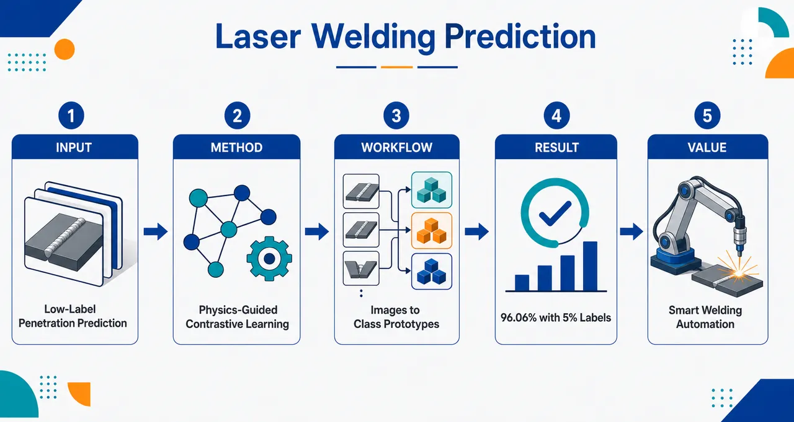
研究问题激光焊接中，全熔透状态决定焊缝是否形成无缺陷接头；但传统视觉分类模型依赖大量高质量标注图像，工业现场获取熔深标签成本高、周期长。核心问题是：如何在只有极少标注焊接图像的情况下，仍能准确识别熔池/小孔图像对应的熔深状态。创新方法提出 SimPhysNet：把物理信息神经网络 PINN 嵌入对比自监督学习，让模型不只比较图像外观相似性，而是被焊接物理先验引导，关注熔池与小孔这些决定熔深的关键物理结构；再用原型网络以少量标注样本建立类别中心，实现低标注、高精度熔深分类。Aha 点是“物理规律像指南针一样嵌入自监督表征学习”，避免模型学到反光、噪声等伪相关视觉特征。工作流程输入大量未标注激光焊接过程图像和少量标注图像；先对图像构造多种增强视图，进入对比自监督框架；PINN 将焊接物理先验注入训练过程，引导网络提取熔池形态、小孔结构等物理有意义特征；完成表征学习后，使用约 200 张标注图像，通过原型网络计算各熔深类别的特征原型；新图像输入后，与类别原型比较距离，输出熔深/全熔透状态分类结果。关键结果SimPhysNet 仅使用 200 张标注图像，约占完整标注数据集的 5%，实现 96.06% 的分类准确率；其少标注性能被报告为可媲美使用完整标注数据集训练的传统监督学习算法，体现出显著的标注效率提升。应用价值该研究可减少激光焊接质量检测对大规模人工标注和破坏性检测的依赖，使工厂能够利用大量未标注过程图像建立可靠的熔深识别模型；有助于在线焊接质量监测、缺陷预警、工艺参数调节和激光焊接智能自动化部署。第一部分：核心概览
SimPhysNet 将 physics-informed neural networks（PINN） 嵌入 contrastive self-supervised learning，用于激光焊接熔深/全熔透状态预测，在仅使用 200 张标注图像（约 5% 标注数据） 时达到 96.06% 分类准确率。其核心地位在于缓解工业焊接视觉检测对大规模高质量标注数据的依赖，把物理先验、未标注图像表征学习、少样本原型分类结合为统一框架，为智能化焊接质量监测提供高数据效率方案。
---
第二部分：结构化快速回顾
《A welding penetration prediction model for laser welding process based on self-supervised learning using physics-informed neural networks》（None，）
背景
激光焊接的全熔透状态直接关系到无缺陷焊接接头质量，熔深状态预测是焊接质量控制的关键。传统监督学习方法在工业场景中受限于对大量高质量标注图像的依赖。
方法
提出 SimPhysNet，采用自监督学习范式，将物理先验嵌入对比学习框架。通过 PINN 引导模型从大量未标注数据中提取熔池与小孔的物理相关特征，并结合 3 类图像增强任务提升泛化能力。随后使用基于 prototypical networks 的少样本学习策略，用少量标注图像构建类别原型完成分类。
结果
仅使用 200 张标注图像，约占总标注数据集 5%，实现 96.06% 分类准确率，性能可与使用完整标注数据集的传统监督学习算法相当。
讨论
核心价值在于以未标注数据 + 物理约束 + 少量标注样本替代传统大规模人工标注流程，使激光焊接熔深识别更适合工业部署。
局限
可用材料未提供完整实验设置、数据来源、类别定义、对照模型、消融实验、统计显著性、误差分析、跨工况泛化测试等细节，因此无法评估模型在复杂工业条件下的稳健性边界。
结论
SimPhysNet 提供了一种高精度、低标注成本的激光焊接熔深状态预测方案，有望推动激光焊接过程的智能自动化。
---
第三部分：逐章节冷凝解析
可用材料仅包含题名、摘要与 arXiv 元数据，未包含完整 PDF 正文章节。严格依据已提供内容，能够可靠解析的原始章节标题只有 Abstract 及元数据信息。无法凭空补全 Introduction、Methods、Experiments、Results、Discussion、Conclusion 等章节内容，也无法伪造样本量、网络结构参数、训练超参数、P 值、消融实验或图表结果。
---
Abstract
Full-penetration is a core quality determinant
激光焊接全熔透被定义为实现无缺陷焊接接头的基础条件之一。摘要明确强调，全熔透并非单纯的几何指标，而是与焊接缺陷控制直接相关的质量状态；熔深状态预测因此成为质量保证的前置任务。原文表述为：*"The laser welding full-penetration is of critical importance, as it constitutes one of the fundamental factors in achieving defect-free welded joints."* 这一句确立了研究问题的工业质量背景：预测目标是penetration state，最终服务于weld quality。
Accurate penetration-state prediction is positioned as essential
研究任务被界定为熔深状态准确预测，其必要性来自焊接质量保障需求，而非单纯计算机视觉分类任务。摘要中的关键证据是：*"Accurate prediction of the penetration state is therefore essential for ensuring weld quality."* 这里的 penetration state 指焊接是否达到目标熔透状态，可能涉及未熔透、适当熔透、过熔透等状态分类；但已给材料未提供具体类别数量与类别定义。
SimPhysNet targets high accuracy with limited labelled images
核心算法命名为 SimPhysNet，目标是在标注图像数量有限的条件下保持高分类精度。原文直接给出：*"this paper introduces SimPhysNet, a novel algorithm that achieves high classification accuracy in laser welding penetration prediction using only a limited number of labelled images."* 其技术定位不是提高满标注监督学习上限，而是提升低标注条件下的数据效率。
The central bottleneck is supervised learning’s dependence on labelled data
传统监督分类算法在工业应用中的主要障碍被归结为对大量、高质量标注数据的依赖。摘要证据为：*"This approach effectively overcomes the limitations of supervised learning classification algorithms, which are hindered in industrial applications by their dependence on extensive, high-quality labelled data."* 这一点明确了创新对象：不是单纯改进 CNN/Transformer 分类器，而是解决工业焊接场景中标注成本高、标注质量难保证、可迁移性不足的问题。
The core paradigm is physics-informed contrastive self-supervised learning
SimPhysNet 的核心机制是将物理先验嵌入对比学习框架的自监督学习范式。摘要原文为：*"The core of SimPhysNet is a unique self-supervised learning paradigm that embeds physical priors into a contrastive learning framework."* 这里的 contrastive learning framework 通常意味着通过构造正负样本或增强视图，使模型学习图像表征；physical priors 的引入意味着表征学习不只依赖像素相似性，还受到焊接物理规律或熔池/小孔物理特征约束。
PINN guides feature extraction from unlabelled data
模型使用 physics-informed neural network（PINN） 从大量未标注数据中提取具有物理意义的特征。摘要证据为：*"By incorporating a physics-informed neural network (PINN), the model is guided to extract physically meaningful features of the molten pool and keyhole from a large set of unlabelled data."* 这里的两个关键对象是 molten pool 与 keyhole：前者对应焊接过程中熔化金属区域，后者对应高能激光作用下形成的深窄蒸汽腔，两者都与熔深形成机制密切相关。可用材料未说明 PINN 约束的具体方程、边界条件或损失函数。
Three image augmentation tasks are used to improve generalization
除 PINN 物理引导外，SimPhysNet 还使用 3 个图像增强任务增强泛化能力。摘要表述为：*"while three image augmentation tasks further enhance its generalization capabilities."* 该信息说明框架包含多任务或多增强视角设计，但未给出三类增强的名称、参数范围、增强强度、是否包含旋转/裁剪/颜色扰动/遮挡/噪声等细节。
Few-shot classification is implemented through prototypical networks
自监督表征学习之后，分类阶段采用基于 prototypical networks 的少样本学习策略。摘要证据为：*"Subsequently, a few-shot learning strategy, based on prototypical networks, enables robust classification by constructing class representations from a minimal set of labelled images."* prototypical networks 的核心思想是为每个类别计算一个原型向量，测试样本根据与类别原型的距离进行分类。这种方法适合标注样本很少的场景，因为分类器不需要从大量样本中学习复杂决策边界。
The key quantitative result is 96.06% accuracy with 200 labelled images
最重要的实验结果是：仅用 200 张标注图像，约占总标注数据集 5%，达到 96.06% 分类准确率。摘要中的硬核数据为：*"Experimental results demonstrate that SimPhysNet achieves a classification accuracy of 96.06% using only 200 labelled images (approximately 5% of the total labelled dataset)"*。由“200 labeled images ≈ 5%”可推算总标注数据规模约为 4000 张，但完整数据集构成、训练/测试划分、类别平衡情况未在已给材料中出现。
Performance is claimed comparable to fully supervised baselines
SimPhysNet 在少量标注下的表现被描述为可媲美使用完整标注数据集的传统监督学习方法。摘要证据为：*"which is comparable to the performance of conventional supervised learning algorithms that utilize the entire labelled dataset."* 这一点构成主要贡献：5% 标注数据 ≈ 100% 标注数据监督模型性能。但可用材料未提供对照算法名称，例如 ResNet、VGG、EfficientNet、ViT 或其他焊接视觉模型，也未给出基线准确率、置信区间或统计检验。
The industrial implication is intelligent automation of laser welding
研究目标最终指向激光焊接智能自动化。摘要结尾为：*"This work presents a new, efficient, and highly accurate method, providing the way for the intelligent automation of laser welding."* 这里的 efficient 主要体现在标注效率而非一定是推理速度；highly accurate 对应 96.06% 分类准确率；intelligent automation 指向在线质量监测、过程控制或自动工艺调节，但可用材料未说明是否实现实时推理或闭环控制。
---
Metadata
Publication status and subject classification
该成果以 arXiv 预印本形式发布，编号为 arXiv:2606.26059，分类为 Computer Science > Computer Vision and Pattern Recognition，同时关联 Artificial Intelligence。元数据中写明：*"arXiv:2606.26059 (cs)"*、*"Subjects: Computer Vision and Pattern Recognition (cs.CV) ; Artificial Intelligence (cs.AI)"*。这表明研究被定位在计算机视觉与人工智能方法学框架内，而应用场景是激光焊接制造。
Submission date and version
提交时间为 2026 年 6 月 24 日 17:33:41 UTC，版本为 v1。元数据证据为：*"[v1] Wed, 24 Jun 2026 17:33:41 UTC"*。因此现有信息对应首个公开版本，未显示后续修订版。
Author team and related DOI
作者包括 Sen Li、Xiaoying Liu、Xiaojian Xu、Chendong Shao、Yaqi Wang、Ling Lan、Xinhua Tang、Haichao Cui。页面列出相关 DOI：*"Related DOI : https://doi.org/10.1016/j.jmapro.2026.01.035"*。该 DOI 指向 Journal of Manufacturing Processes 相关资源的可能性较高，但仅凭元数据无法确认其是否为正式期刊版本、扩展版本或相关研究。
---
第四部分：深度理解与语言支持
1. 术语解析
#### Full-penetration
Full-penetration 在焊接语境中指焊缝熔深贯穿被焊材料厚度，形成完整连接。它不同于一般的 penetration depth：后者是连续几何量，表示熔深大小；前者更偏向质量状态或工艺达标状态。摘要中的 *"The laser welding full-penetration is of critical importance"* 强调的是质量判据，而非单纯数值回归。
#### Penetration state
Penetration state 指熔透状态类别，可用于分类任务。它通常比 welding penetration 更离散化，可能对应未熔透、适当熔透、过熔透等状态。摘要中的 *"Accurate prediction of the penetration state"* 表明任务是状态识别，而不一定是熔深数值预测；但题名中的 prediction model 容易让人误解为回归模型。
#### Physics-informed neural network, PINN
PINN 通常指在神经网络训练中加入物理方程、守恒关系、边界条件或物理约束的模型。这里的 PINN 并非只用于求解 PDE，而是作为物理先验引导表征学习，帮助模型提取 molten pool 与 keyhole 的物理相关特征。摘要中的 *"guided to extract physically meaningful features"* 是关键：目标不是纯粹拟合标签，而是让特征空间更符合焊接物理机制。
#### Contrastive learning framework
Contrastive learning 是自监督学习的重要范式，核心是拉近同一样本不同增强视图的表示、推远不同样本的表示。摘要中的 *"embeds physical priors into a contrastive learning framework"* 说明其新意在于对比学习不只依赖数据增强构造语义一致性，还纳入焊接物理先验，避免模型学习到与熔深无关的视觉噪声。
#### Prototypical networks
Prototypical networks 是少样本分类方法，通过少量支持样本计算类别中心，即 prototype，再根据查询样本与各类别原型的距离进行分类。摘要中的 *"constructing class representations from a minimal set of labelled images"* 对应这一机制。它适合工业场景，因为新增类别或新工况可能只需要少量标注样本即可构建分类依据。
---
2. 疑难查证
#### 为什么 PINN 可以帮助自监督视觉模型？
普通自监督视觉模型容易学习到“视觉上显著但物理上无关”的特征，例如光斑亮度、背景纹理、传感器噪声或局部反光。激光焊接熔深状态却主要由熔池形态、小孔稳定性、能量输入、热传导和金属汽化行为决定。PINN 的作用可以理解为给表征学习加了一层“物理筛选器”：模型不只是问“哪些图像看起来相似”，还要问“哪些图像在焊接物理机制上相似”。
因此，物理先验 + 对比学习的组合能减少伪相关特征，提高跨样本、跨工况泛化能力。摘要中的 *"physically meaningful features of the molten pool and keyhole"* 正是这个逻辑。
#### 为什么少样本原型网络适合焊接熔深分类？
焊接场景中，标注熔深状态通常需要经验判断、截面检测或破坏性检测，成本高且周期长。传统监督分类器需要大量标注样本训练决策边界，而原型网络只需少量样本计算类别中心。若前一阶段的自监督/PINN 表征已经足够好，同类样本会自然聚集，不同类样本会自然分离；分类阶段只需要少量标签即可确定“每一类在哪里”。
因此，SimPhysNet 的关键不是只靠 200 张图像训练完整分类器，而是先用大量未标注图像学到物理表征，再用 200 张标注图像完成类别锚定。
#### “96.06% using only 200 labelled images” 应如何理解？
该结果表示标注效率极高：200 张标注图像约占完整标注集 5%，推算完整标注集约 4000 张。真正重要的对比不是“96.06% 是否绝对最高”，而是“用 5% 标注量接近 100% 标注量监督模型”。这意味着工业部署中的人工标注成本可能下降约一个数量级。
但该数字仍需完整实验信息支撑，包括测试集是否独立、类别是否均衡、是否跨焊接参数测试、是否存在数据泄漏、是否多随机种子重复、是否报告标准差等。当前材料未提供这些细节。
---
第五部分：创新评估与关联
1. 创新性判断
#### 从全监督焊接视觉分类转向低标注自监督学习
过去 2–5 年焊接熔深识别常见路线包括 CNN、ResNet、注意力网络、时序视觉模型、多传感器融合模型等，大多依赖较完整的标注数据集。SimPhysNet 的新颖性在于将问题重心从“设计更强分类器”转向“如何在标注极少时仍获得可靠熔深状态识别”。摘要中的关键证据是 *"using only 200 labelled images (approximately 5% of the total labelled dataset)"*。
#### 将物理先验嵌入对比学习，而非只做数据驱动表征学习
普通对比学习依赖图像增强构造正样本，可能破坏焊接图像中的物理语义，或学习到与熔深无关的表观特征。SimPhysNet 的新颖性在于使用 PINN 约束表征，使模型关注 molten pool 和 keyhole 这类与熔透机制强相关的对象。摘要中的 *"embeds physical priors into a contrastive learning framework"* 是主要方法创新。
#### 自监督预训练与少样本原型分类形成完整低标注管线
单独使用自监督学习只能得到特征，单独使用少样本学习又依赖特征质量。SimPhysNet 将二者连接：先用大量未标注图像学习物理有意义特征，再用 prototypical networks 从少量标注样本构建类别表示。摘要中的 *"a few-shot learning strategy, based on prototypical networks"* 表明分类阶段也围绕低标注目标设计。
#### 解决前人未充分解决的工业落地瓶颈
工业焊接视觉检测的主要痛点不是没有深度学习模型，而是高质量标签难获得、不同工况泛化困难、纯数据驱动模型可解释性不足。SimPhysNet 同时针对三点：
- 未标注数据利用：减少人工标注需求；
- 物理约束表征：提升特征可靠性与可解释性；
- 少样本分类：支持有限标签下的工业部署。
其最明确的贡献是：在仅 5% 标注数据下达到 96.06% accuracy，并宣称可比完整标注监督模型。
#### 仍需完整论文验证的创新边界
现有材料无法判断以下关键问题：
- PINN 中使用的具体物理方程是否真正反映激光深熔焊机理；
- 三个图像增强任务是否具有焊接物理合理性；
- 与 SimCLR、MoCo、BYOL、DINO、MAE 等通用自监督方法相比提升多少；
- 与纯原型网络、纯 PINN、纯监督 CNN 的消融差异；
- 是否跨材料、厚度、功率、速度、保护气体条件泛化；
- 是否满足在线检测的实时性要求。
因此，基于摘要可确认其概念组合与低标注性能主张具有新颖性；完整学术强度仍依赖正文中的实验设计、消融实验和跨工况验证。
-
06
📊 含图深析
📄 摘要：提出 Mg 基体系的 DFTB+MACE 模型，用多体 MACE 势替代常规 DFTB 成对排斥势。MACE 训练目标为 DFT 能量、力与去除成对排斥项后的 DFTB 结果之差。模型用于 MgO-CO2 吸附体系结构弛豫，面向比纯 DFTB 更准确、比 DFT 更高效的镁化合物模拟。
💡 亮点：DFTB+MACE 将电子结构紧束缚项与多体机器学习修正结合，直接学习 DFT 与 DFTB 的能量/力残差。对 MgO-CO2 等镁基体系，这类混合模型有望提升反应吸附与氧化物界面模拟的可扩展性。
📖 展开分析 + 配图
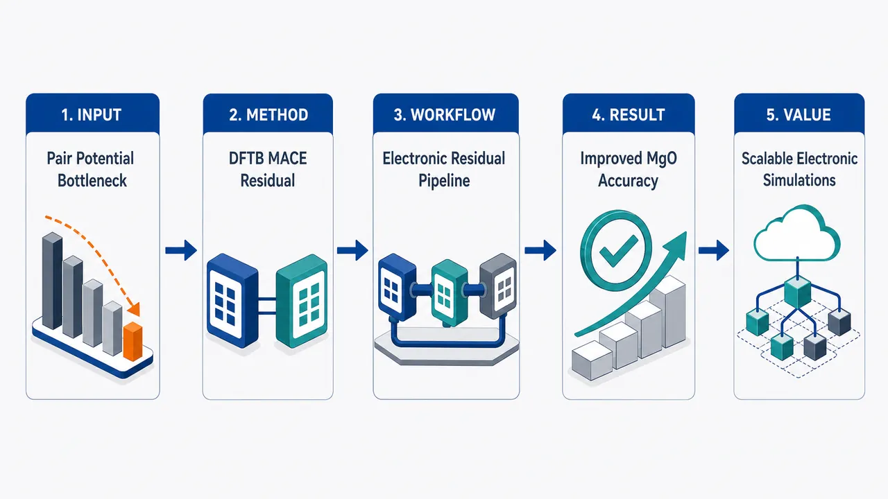
研究问题传统 DFTB 用“距离依赖的二体排斥势”补偿 DFT 与 DFTB 电子能差，像一把只看键长的尺子，无法区分体相、表面、不同配位、CO₂/H₂O 吸附等复杂 Mg 化学环境；核心问题是：如何在保留 DFTB 显式电子结构与电荷重排能力的同时，让排斥修正具备多体环境感知，从而接近 DFT 精度并适用于大体系长时间模拟。创新方法提出 DFTB+MACE：把自洽 DFTB 的电子项作为物理骨架，用 E(3) 等变的 MACE 多体机器学习势替代传统 pair potential。Aha 点是 MACE 不直接学习 DFT 总能量，而是学习“DFT − DFTB 电子项”的残差：能量、力、应力都做差分训练，让 DFTB 负责电子结构与电荷转移，MACE 负责补上环境依赖的多体排斥/交换关联残余。工作流程输入 Mg、C、O、H 等原子结构与 DFT 参考能量/力/应力；先用 DFTB 计算不含传统 pair potential 的电子能 E(1)+E(2)、电子力和应力；再构造残差标签 E(0)=E_DFT−E_DFTBₑₗₑc、F(0)=F_DFT−F_DFTBₑₗₑc、σ(0)=σ_DFT−σ_DFTBₑₗₑc；用 15,396 个结构训练 MACE 多体修正势并扫描 419 组超参数；预测时将 DFTB 电子项与 MACE 修正相加，输出总能量、力、应力，并可继续获得电子结构。关键结果DFTB+MACE 在低复杂度模型中明显受益于 DFTB 物理先验：简单模型力 MAE 为 275.9 meV/Å，优于受限纯 MACE 的 338.5 meV/Å；中等模型两者接近，82.0 vs 83.0 meV/Å；复杂模型纯 MACE 略优，51.9 vs 66.7 meV/Å，显示 DFTB 电子项误差开始成为上限。应用测试中，DFTB+MACE 显著改善 MgO 晶格常数、结合能曲线、声子谱和表面能，尤其比传统 DFTB 更好处理体相/表面环境差异。应用价值该框架像“带电子结构眼睛的机器学习势”，可在较低计算成本下模拟 MgO、Mg(OH)₂、CO₂/H₂O 吸附、水簇动力学和声子性质等含镁材料过程；相比普通 ML 势，它保留电子结构、电荷重排和电荷转移信息，适合研究大尺度、长时间、涉及表面反应和材料电荷行为的体系。第一部分：核心概览 (Overview)
DFTB+MACE 将 自洽 DFTB 的显式电子结构 与 MACE 多体机器学习势结合，用 MACE 替代传统 pairwise repulsive potential，并以 DFT 与 DFTB 电子项之差训练修正能量、力和应力。该框架面向 MgO、Mg(OH)₂、CO₂/H₂O 吸附与水簇动力学等含镁体系，在保留电荷重排与电子结构信息的同时显著提升 DFTB 精度，尤其适合需要长时间尺度、较大体系和电荷转移描述的材料模拟。
---
第二部分：结构化快速回顾
《A Combined Tight Binding with Machine Learning Potential Model for Magnesium Compounds》（None，）
背景
传统 DFTB 通过二体排斥势补偿 DFT 与 DFTB 电子能之间的差异，但 pair potential 缺乏环境依赖性，难以同时描述不同配位、体相、表面和吸附构型。MLIPs 尤其是 E(3)-equivariant MACE 可表达多体环境，适合作为 DFTB 排斥项的替代。
方法
总能量拆分为 DFTB electronic energy 与 MACE many-body correction。MACE 不直接拟合总 DFT 能量，而拟合
E⁽⁰⁾ = E^DFT − (E⁽¹⁾ + E⁽²⁾)、对应力和应力也做同样差分。训练集含 15,396 个结构，训练/验证划分为 13,861/1,535，元素覆盖 Mg、C、O、H 等，模型超参数扫描 419 组。
结果
简单 DFTB+MACE 模型的力 MAE 为 275.9 meV/Å，优于受限 MACE_R 的 338.5 meV/Å；中等模型分别为 82.0 vs 83.0 meV/Å；复杂模型为 66.7 vs 51.9 meV/Å。DFTB+MACE 明显改善 MgO 晶格常数、结合能曲线、声子谱、表面能，并保留 DFTB 的电子结构能力。
讨论
DFTB+MACE 在较小模型下已能利用 DFTB 电子项提供的物理先验，降低纯 MACE 对高阶不可约表示和复杂网络的依赖。复杂模型下，DFTB 电子项本身的基组误差、价带宽度误差和能带间隙误差开始限制整体精度。
局限
训练数据未充分覆盖全部势能面，尤其缺少 非平衡晶格常数、高温 MD 构型、周期性表面、部分吸附中间区域。因此，表面和吸附能仍可能出现明显偏差，部分区域属于外推。
结论
DFTB+MACE 为含镁化合物提供一种兼具 近 DFT 精度、较低计算成本、显式电子结构、电荷转移描述能力 的模拟框架，适用于复杂材料过程的长尺度原子模拟。
---
第三部分：逐章节冷凝解析
Abstract
Hybrid DFTB–MACE framework replaces pair repulsion with many-body learning
核心贡献是构建 DFTB+MACE，即将 density functional tight binding (DFTB) 与 MACE machine learning interatomic potential 结合，传统 DFTB 中的 pairwise repulsive potential 被 many-body MACE potential 取代。摘要明确给出模型定义：*"We present a model for magnesium-based systems that combines density functional tight binding (DFTB) with MACE, a machine learning interatomic potential (DFTB+MACE)."* 关键替换策略为：*"the conventional repulsive potential, pair potential, is replaced by a many-body MACE potential."*
Learning target is the DFT–DFTB residual rather than raw DFT energy alone
MACE 组件不是单独拟合 DFT 总势能面，而是拟合 DFT energies and forces 与不含 pair potential 的 DFTB values 之间的差值。训练目标具有明确的 Δ-learning 特征：*"The MACE component of the model is trained on the difference between density functional theory (DFT) energies and forces and the corresponding DFTB values, but neglecting the pair potential contribution."* 该设计使 DFTB 提供电子结构基底，MACE 负责补足传统排斥项缺失的多体环境依赖。
Validation spans adsorption, molecular dynamics, and phonons
应用测试覆盖多类材料任务：MgO–CO₂ adsorption systems 的结构弛豫、water clusters 的分子动力学、稳定 fcc-MgO 与亚稳 bcc-MgO 的声子谱。摘要中的任务清单为：*"Using this model we performed structural relaxation of ḩ MgO-ḩ CO2 adsorption systems, molecular dynamics calculations of water clusters and phonon spectrum calculations of stable fcc-ḩ MgO and metastable bcc-ḩ MgO structures."*
Accuracy improves over conventional DFTB with moderate extra cost
与传统含二体 pair potential 的 DFTB 相比，DFTB+MACE 在多种情况下显著提升精度，计算代价只中等增加：*"We demonstrate that the DFTB+MACE model achieves improved accuracy relative to DFTB with a pair potential, in many cases with only a moderate increase in computational cost."* 该结果强调了 accuracy–cost tradeoff 的实用价值。
Electronic structures remain accessible unlike most ML potentials
纯 MLIP 通常只给能量和力，缺乏显式电子结构；DFTB+MACE 保留了 DFTB 的量子电子描述能力。摘要直接指出：*"In addition, it can provide electronic structures that most of the machine learning potentials cannot."* 因此，该框架不仅是势能面拟合工具，也适用于 charge redistribution 和 charge-transfer 问题。
Training-set coverage remains the central limitation
训练集原本为 MACE 发展，未必覆盖模拟过程中遇到的全部势能面区域。局限被明确表述为：*"The training dataset, originally developed for MACE, may not fully represent all regions of the potential surface we may encounter during simulations."* 改进方向是扩大势能面覆盖：*"Expanding the dataset for a wider potential surface is expected to further enhance predictive accuracy of DFTB+MACE model."*
Target scientific niche is long-scale simulation with explicit electronics
最终定位是突破第一性原理方法长度和时间尺度限制，同时保留电子结构：*"the resulting DFTB+MACE framework enables simulations at length and time scales beyond the reach of first-principles methods while retaining an explicit description of electronic structures."* 该能力尤其适合 charge-transfer in materials：*"making it particularly attractive for studying charge-transfer in materials."*
---
1 Introduction
DFTB offers quantum electronic information at lower cost than DFT
DFTB 是从 DFT 推导出的近似量子方法，可提供近似电子结构，同时计算效率远高于 DFT。核心背景为：*"Density functional tight binding (DFTB) is an approximate method derived from density functional theory (DFT)."* 其计算优势为：*"It can provide approximate electronic structures as it is a quantum method, while calculations are significantly more computationally efficient than DFT."* 因此适用于 large length-scales and time-scales 的静态和动力学模拟。
Previous Mg DFTB parameterization was useful but limited
此前已发展面向 magnesium-based compounds 的 DFTB 参数集，并引入 electron localisation function (ELF) 研究 CO₂/H₂O adsorption on MgO and Mg(OH)₂ surfaces。相关基础为：*"we developed a DFTB parameter set for magnesium-based compounds and introduced the electron localisation function (ELF) and used it to study the adsorption of ḩ CO2 and ḩ H2O on ḩ MgO and ḩ Mg(OH)2 surfaces."* 但该模型仍有局限：*"Whilst our DFTB model was able to provide a satisfactory description of structural and electronic properties, it still exhibits limitations."*
Conventional DFTB repulsive potentials are pairwise spline corrections
传统 DFTB 参数化通常从孤立原子加 confinement potential 生成原子轨道，DFT 与 DFTB 电子能差被吸收到 repulsive potential 中，且常用 cubic spline interpolation 的二体函数表示：*"atomic orbitals are typically generated from isolated single atom calculations with an additional confinement potential."* 以及：*"The difference between the DFT reference energies and the DFTB electronic energy is incorporated into a repulsive potential, which is usually represented as a pairwise function represented by a cubic spline interpolation."*
Pair potentials suffer oscillation, rigidity, overfitting, and poor transferability
传统二体排斥势存在四类明确问题：函数振荡、形式过刚、过拟合、迁移性有限。原文列举为：*"this approach has several limitations: (i) oscillations may arise in the fitted function, (ii) the form of the function is often too rigid, (iii) overfitting may occur, and (iv) the limited transferability restricts its applicability to only a subset of structures."* 这些问题直接限制 DFTB 在复杂配位环境中的泛化能力。
Curvature-constrained splines reveal pair potentials cannot be universal
Kandy 等通过 curvature constrained splines 拟合曲率而非函数值本身，指出二体势无法“一势适配所有环境”。关键证据为：*"They tried to fit the curvature rather than the value of function itself."* 结论是：*"a pair potential cannot be 'one-fits-all' because it cannot simultaneously describe different coordination environments."* 这说明传统排斥项缺失 many-body terms：*"the repulsive term is missing many-body terms."*
MLIPs provide a route to many-body potential-energy surfaces
Machine learning interatomic potentials (MLIPs) 已快速发展，通常包含 descriptor 与 machine learning algorithm 两部分：*"MLIPs typically consist of two parts: a descriptor and a machine learning algorithm."* 描述符可从简单原子位置信息到复杂环境基组：*"The descriptor can range from simple atomic position information to a complex basis set to describe the atomic environment."* 算法包括 Gaussian approximation potentials、feedforward neural networks、E(3)-equivariant graph neural networks。
Prior ML–DFTB integrations focused on molecules or limited material classes
已有研究用 MLIP 描述 DFTB 的排斥项或 DFT–DFTB 误差。Martin 等用 SchNET 改善有机分子结构：*"Martin et al. introduced SchNET neural networks to DFTB to improve the geometry structure of organic molecules."* Goldman 等用 ChiMES 作为多体排斥势，应用于 silicon polymorphs、TiH₂、H/C/N/O organic molecules：*"introduced a MLIP called ChiMES as the many-body repulsive potential and applied it to silicon polymorphs, ḩ TiH2 and the organic molecules that only contains ḩ H, ḩ C, ḩ N and ḩ O."*
ChiMES is systematically improvable but parameter growth is costly
ChiMES 的优势是系统可改进，但参数数目随元素数和多项式阶数迅速增长，导致训练复杂、收敛困难。原文为：*"ChiMES provides a systematically improvable framework, but with the number of parameters growing rapidly with the number of elements and polynomial order, leading to increased complexity of models and difficulty in reaching convergence during training without regularisation or active learning strategies."*
Recent e3nn–DFTB studies found MACE best but did not address condensed periodic materials
近期 e3nn 被引入 DFTB 框架，比较 SpookyNet、Allegro、MACE 于大有机分子，发现 MACE 最优：*"The authors considered three different e3nn methods including SpookyNet, Allegro and MACE for large organic molecules: they found that MACE performs the best."* 但关键空白是周期体系和凝聚态材料：*"However, their research does not cover periodic systems and has not been applied to condensed matter."*
Main target is periodic Mg-based materials with electronic charge redistribution
DFTB+MACE 的目标是周期材料，将 self-consistent DFTB 的显式电子描述与 equivariant ML potential 的灵活性结合：*"we develop a DFTB+MACE framework for periodic materials by combining the explicit electronic description of self-consistent DFTB with the flexibility of equivariant machine learning potentials."* 代表体系为 MgO and Mg(OH)₂ based systems，精度目标是接近 DFT：*"The resulting model achieves near-DFT accuracy for energies and forces at a computational cost suitable for large-scale atomistic simulations."*
---
2 Theory and Computational Method
2.1 DFTB theory
DFTB total energy is a Taylor expansion around a reference density
DFTB 能量从 DFT 总能对参考密度 n⁽⁰⁾(r) 的泰勒展开得到，实际密度为 n(r)=n⁽⁰⁾(r)+q(r)。理论起点为：*"The total energy of DFTB can be derived from a Taylor expansion of the DFT total energy around a chosen reference density."* 密度涨落定义为：*"The difference between the actual density n(r) and the reference density is the density fluctuation term q(r)."* 参考密度通常是各孤立原子电荷密度之和且各向同性：*"The reference density is normally the sum of single atomic charge density and is isotropic."*
Second-order DFTB energy separates into E⁽⁰⁾, E⁽¹⁾, and E⁽²⁾
能量展开到二阶：E^DFTB = E⁽⁰⁾ + E⁽¹⁾ + E⁽²⁾ + ...。公式 (1) 明确列出 reference energy、linear density response、second-order density fluctuation 三项。关键表述为：*"Therefore, the DFTB energy expanded to the second order term around the reference density is..."* 这种拆分为后续用 MACE 替代 E⁽⁰⁾ 提供了数学接口。
Molecular orbitals use an LCAO ansatz
DFTB 以 linear combination of atomic orbitals (LCAO) 展开分子轨道：*"The theory is based on the ansatz of a linear combination of atomic orbitals φα ᵢ (LCAO) for the molecular orbitals ψₙ."* 展开式为 ψₙ = Σα ᵢ cα ᵢ,ₙ φα ᵢ，其中 cα ᵢ,ₙ 是第 n 个分子轨道在原子 α 的 i 轨道上的系数。
E⁽⁰⁾ contains atomic energies, electrostatic pair interactions, and many-body exchange-correlation
公式 (2) 将 E⁽⁰⁾ 写作孤立原子项、原子间静电吸引/排斥、以及多体交换关联项：*"E⁽⁰⁾ contains isolated atomic contributions, electrostatic attraction and repulsion between atoms and a many-body exchange-correlation term."* 具体为 Σα Eα^atom + 1/2 Σα≠β Vαβ(Rαβ) + E_XC^MB[n⁽⁰⁾]。
E⁽¹⁾ plus E⁽²⁾ defines the electronic energy
E⁽¹⁾ + E⁽²⁾ 被定义为 electronic energy：*"The combination E⁽¹⁾⁺E⁽²⁾ we call the electronic energy."* E⁽¹⁾ 包含 band energy 与 atomic term：*"E⁽¹⁾ contains the band energy and an atomic term."* E⁽²⁾ 对应扰动原子间静电相互作用：*"E⁽²⁾ corresponds to electrostatic interactions between perturbed atoms."*
Traditional DFTB neglects many-body exchange-correlation in E⁽⁰⁾
常规 DFTB 通常忽略 E⁽⁰⁾ 中的多体交换关联贡献，使 E⁽⁰⁾ 成为短程二体 pair potential：*"Normally, the many-body contribution from exchange and correlation in E⁽⁰⁾ is neglected, letting E⁽⁰⁾ be short range and pairwise, and so is often referred to as the pair potential term."* 这正是 DFTB 排斥势环境不敏感的根源。
Pair approximation cannot distinguish equal bond lengths in different chemical environments
二体 E⁽⁰⁾ 只依赖原子对距离，不能区分不同化学环境下相同键长的能量差异。示例为乙烷压缩 C–C 键、乙烯拉伸 C–C 键至相同长度：*"consider compressing the carbon-carbon bond in ethane, and stretching the carbon-carbon bond in ethene, to make them the same length."* 传统二体项会给相同 C–C contribution：*"The E⁽⁰⁾ for the carbon-carbon part for these two systems would be the same, which need not be the case in more accurate calculations."* 大体系中误差会累积：*"For a large system, the errors may accumulate."*
MACE relaxes the pair-potential approximation for E⁽⁰⁾
核心理论操作是放松 E⁽⁰⁾ 的 pair potential approximation，改用 many-body representation (MACE)：*"In this paper, the pair potential approximation for E⁽⁰⁾ is relaxed, and we use a many-body representation (MACE) instead."* 由于总能分解为独立贡献 E⁽⁰⁾、E⁽¹⁾、E⁽²⁾，MACE 学习的正是 E⁽⁰⁾、F⁽⁰⁾、σ⁽⁰⁾。
MACE target is DFT minus DFTB electronic terms
训练标签由公式 (5)–(7) 给出：
E⁽⁰⁾ = E^DFT − (E⁽¹⁾ + E⁽²⁾)，
F⁽⁰⁾ = F^DFT − (F⁽¹⁾ + F⁽²⁾)，
σ⁽⁰⁾ = σ^DFT − (σ⁽¹⁾ + σ⁽²⁾)。
原文说明为：*"the contribution to the total energy, E⁽⁰⁾, forces F⁽⁰⁾ and stresses σ⁽⁰⁾ carried by the MACE potential are then given by..."*，并强调 E⁽¹⁾、E⁽²⁾ 等由 DFTB 模型计算：*"are computed using the DFTB model."*
---
2.2 MACE
Total energy is decomposed into atomic energy contributions
MACE 将体系能量写成原子能量之和：*"For a system with N atoms, the energy of this system can be represented as a sum of individual atomic energies."* 公式 (8) 为 E = Σα Eα。每个原子能量依赖局域原子环境：*"The energy of atom i depends on its local atomic environment."*
MACE combines ACE descriptors with E(3)-equivariant message passing
MACE 的结构核心是 ACE descriptor + E(3)-equivariant message passing neural network：*"MACE combines the ACE descriptor with an E(3)-equivariant message passing neural network (E(3)-MPNN)."* E(3)-equivariance 保证模型对旋转、平移和反演具有正确变换性质：*"The use of an E(3)-equivariant neural network (E3NN) enforces E(3)-equivariance with respect to rotations, translations and inversions."*
Atomic features are O(3) irreducible representations
原子特征表示为 O(3) group irreps，并根据角动量阶数变换：*"Atomic features are represented as irreducible representations (irreps) of the O(3) group and transformed according to their angular momentum order."* 这使模型能自然编码标量、向量和更高阶张量特征。
MACE has embedding, interaction, and product stages
MACE 的三阶段为 embedding、interaction、product：*"There are three main stages in MACE, which are embedding, interaction and product."* 嵌入阶段初始化节点特征 hα ₖ ₗ₁ ₘ₁，其中 k 是 channel index，l₁ 是 angular momentum index，m₁ 是 magnetic quantum number index。
num_channels and max_L control node-feature size
节点特征规模由 num_channels 和 max_L 控制：*"The size of the node features are controlled by the hyperparameters num_channels and max_L."* 其中 num_channels 是每种 irrep type 的通道数，max_L 是节点特征最高 irrep 阶数：*"the number of channels for each irrep type and the highest order of irrpes in the node features."*
Initial node features use atomic number only
初始节点特征仅使用原子序数，因此一开始只有标量通道 hα ₖ₀₀：*"In the first step, the atomic number is used as the feature for each node, so there is only hα ₖ₀₀ in the node feature at the start."* 这意味着方向信息主要通过后续角向嵌入和消息传递生成。
Angular embedding uses spherical harmonics controlled by maxₑₗₗ
角向嵌入生成 spherical harmonic functions Yₗ₂ₘ₂(hat rαβ)：*"There is also an angular embedding to generate spherical harmonic functions."* 最大球谐阶数由 maxₑₗₗ 控制：*"The maximum order of the spherical harmonic term is controlled by hyperparameter maxₑₗₗ."*
Radial embedding builds distance-dependent basis functions
径向嵌入形成基函数集合，如 Bessel functions 和 Chebyshev polynomials：*"There is another embedding called radial embedding to form a series of basis sets."* 邻居影响随距离增大而衰减：*"The influence of neighbours will decay as their separations becomes larger."* 这些径向输出作为后续径向函数的基底。
Interaction stage couples node features and spherical harmonics through tensor products
交互阶段将中间特征与球谐通过 equivariant tensor product 耦合，生成输出 irrep 阶数 l₃：*"The intermediate feature are coupled with spherical harmonics by equivariant tensor product."* 径向函数由 multi-layer perceptron (MLP) 生成：*"The radial functions are generated by a multi-layer perceptron (MLP)."*
Clebsch–Gordan coefficients enforce angular-momentum coupling
一粒子基 φ⁽t⁾β ₖ ₗ₃ ₘ₃ 通过 Clebsch-Gordan coefficients 进行角动量耦合。公式 (10) 中使用 Cl₃m₃ₗ₁ₘ₁ₗ₂ₘ₂，原文解释为：*"where C are Clebsch-Gordan coefficients."* 这保证高阶特征组合满足群论选择规则。
Product stage controls body order through correlation
product 阶段通过 equivariant tensor products 进一步耦合 atom base，correlation 超参数控制最大多体阶数：*"Through setting the hyperparameter correlation, which controls the maximum body order of the interaction."* 当 correlation 为 ν 时，可包含到 ν+1-body interaction：*"until ... (ν+1)-body interaction can be obtained."*
Messages update features by combining cluster basis and previous features
cluster basis 线性组合形成 message，再与上一层特征线性组合更新节点特征。定义为：*"The 'message' is defined as a linear combination of cluster basis, and the features can be updated as a linear combination of the message and previous features."* 公式 (13)–(14) 给出 m⁽t⁾ 和 h⁽t⁺¹⁾ 的更新。
MACE captures many-body correlations in the first layer unlike traditional E3NN
传统 E3NN 通过多层交互逐渐构造高阶多体相关；MACE 描述符可在第一层捕获多体相互作用：*"In the traditional E3NN method, higher-order many-body correlations are built progressively through multiple interaction layers. In contrast, the descriptor in MACE enables the model to capture many-body interactions in the first layer."* 这解释了 MACE 在复杂局域环境中效率较高的原因。
Energy is obtained from rotationally invariant scalar features and forces by differentiation
由于能量旋转不变，最后由标量特征 hα ₖ₀₀ 经 MLP 得到：*"Because the energy is rotational invariant, in the last layer the energy can be obtained by E = MLP(hα ₖ₀₀⁽t⁾)."* 力通过能量直接微分获得，而非独立 MLP 输出：*"The forces are generated by direct differentiation of the energy rather than being generated from a multilayer perceptron to ensure consistency."*
Five key hyperparameters define the model complexity
五个被系统考察的超参数为 k、T、ν、Lₘₐₓ、lₘₐₓ。表 1 对应关系为：k = num_channels，T = numᵢₙₜₑᵣₐctions，ν = correlation，Lₘₐₓ = max_L，lₘₐₓ = maxₑₗₗ。原文说明：*"five hyperparameters mentioned in theory are summarised in table 1."*
---
2.3 Calculation Details
DFTB parameters were generated with PLATO using PBE and Gaussian pseudopotentials
DFTB 轨道、hopping/overlap 表和 Hubbard 参数由 PLATO 生成：*"The PLATO package was used to generate atomic orbitals, the hopping and overlap integral tables and the Hubbard parameters."* 电子交换关联采用 PBE functional：*"The Perdew-Burke-Ernzerhof (PBE) functional was used to describe the electronic exchange and correlation behaviour."* 电子-核相互作用采用 separable dual-space Gaussian pseudo-potentials。
Atomic orbital radii were set to twice covalent radii
原子轨道半径 r₀ 设为元素共价半径的两倍：*"The radii of the atomic orbitals (r0) were set to twice an element’s covalent radius."* 这一选择影响 DFTB 基组空间范围和 hopping/overlap 精度。
Dataset combines MPtrj, MatPES, and self-generated MgO/Mg(OH)₂ structures
训练数据来自三部分：
- MPtrj 中只含 Mg、C、O、H 的 xyz snapshots；
- MatPES 中只含 H、C、N、O、F、Mg、Al、Si、P、S、Cl、Cu、Br 的 snapshots；
- 自生成 MgO/Mg(OH)₂ 结构。
原文为：*"The datasets include the xyz snapshots that only contain ḩ Mg, ḩ C, ḩ O and ḩ H from the MPtrj dataset..."*，以及：*"the xyz snapshots that only contain ḩ H, ḩ C, ḩ N, ḩ O, ḩ F, ḩ Mg, ḩ Al, ḩ Si, ḩ P, ḩ S, ḩ Cl, ḩ Cu and ḩ Br from the MatPES dataset."*
Self-generated structures include distorted MgO supercells and adsorption clusters
自生成结构包括带随机位移的 fcc-MgO 与 bcc-MgO 超胞，以及 CO₂/H₂O adsorbed on MgO and Mg(OH)₂ clusters。原文为：*"The self-generated xyz structures include fcc-ḩ MgO and bcc-ḩ MgO supercells with random displacements applied to the atoms, as well as ḩ CO2 and ḩ H2O adsorbed on ḩ MgO and ḩ Mg(OH)2 clusters."*
Total dataset size is 15,396 structures
总结构数为 15,396：*"There are 15,396 structures in total."* DFT 参考能量和力由 Quantum ESPRESSO 用 PBE functional 和 PAW pseudopotentials 重新计算：*"the forces and energies were recalculated by Quantum ESPRESSO using the PBE functional and projector augmented-wave (PAW) pseudopotentials."*
MACE version 0.3.13 was used for training
训练采用 MACE version 0.3.13：*"MACE version 0.3.13 was adopted for MACE model training."* 研究五个超参数：*"Five different hyperparameters were studied."*
Hyperparameter search spans k=8–64, T=1–4, ν=1–5, L=0–1, l=1–5
具体范围为：
- k：8 到 64，步长 8；
- T：1 到 4；
- ν：1 到 5；
- L：0 到 1；
- l：1 到 5。
原文为：*"The parameter k was set to values from 8 to 64 with an interval of 8, the parameter T was set to values from 1 to 4, the parameter ν was set to values from 1 to 5, the parameter L was set to values between 0 and 1 and the parameter l was set to values from 1 to 5."*
Dataset split uses 13,861 training and 1,535 validation configurations
所有超参数组合使用同一 random seed 划分训练和验证集：*"The same random seed was used to split the dataset into 13861 configurations as a training set and 1535 configurations as a validation set."* 验证集用于评估迁移性和防止过拟合：*"The role of validation is to evaluate the transferability of this model and prevent the model from overfitting."*
No explicit separate test set was used
没有显式划分独立 test set；体相、表面、吸附、静态和动力学算例被用作测试：*"The dataset was not explicitly divided into a separate test set. Instead, the calculation cases, including bulk, surface, adsorption static and dynamical calculations, were used as test set to evaluate the model performance."* 这意味着泛化评估依赖应用场景而非标准 hold-out test。
Training used Quadro RTX6000 with 32-bit floating point arithmetic
训练硬件为 Quardro RTX6000 GPU，使用 32-bit floating point arithmetic：*"The training was run on a Quardro RTX6000 GPU performed with 32-bit floating point arithmetic."*
MD, phonons, and static calculations were run without GPU acceleration
生成模型用于 static relaxation、molecular dynamics、phonon spectrum calculations。MD 条件为 300 K、NVT ensemble、temperature rescaling thermostat：*"All molecular dynamics simulations were carried out at 300 K with the NVT ensemble and a temperature rescaling thermostat."* 所有模拟运行于 Intel Core i5-12500 without GPU acceleration：*"All simulations were carried out using an Intel Core i5-12500 without GPU acceleration."*
Phonons used finite differences with ±0.01 Å displacements and no NAC
声子谱采用有限差分法；超胞晶格常数大于 10 Å 以减小周期镜像相互作用，三方向位移 ±0.01 Å：*"A supercell with lattice constant larger than 10 Å was created to minimize the interactions between periodic images. A displacement of ± 0.01 Å is applied in three Cartesian directions."* 未加入 non-analytical correction (NAC)：*"the non-analytical correction (NAC) was not added."*
---
3 Results and Discussion
3.1 Accuracy and complexity analysis
MACE_R and DFTB+MACE have different learning targets
纯受限 MACE 模型 MACE_R 训练于 DFT 总能和力；DFTB+MACE 的 MACE correction 训练于 DFT 总能/力与 DFTB 电子能/力的差值。原文为：*"The MACE model was trained on DFT total energies and forces, while the MACE correction in the DFTB+MACE model was trained on the difference between the DFT total energies and forces and the DFTB electronic energies and forces."* 为区别标准 MACE，此处称为 restricted MACE model (MACE_R)：*"we refer to this model as the restricted MACE model (denoted as MACE_R)."*
Final DFTB+MACE prediction equals DFTB electronic term plus MACE correction
最终预测构造为 DFTB electronic term + MACE correction，并直接与 DFT 参考比较：*"In the final evaluation the DFTB+MACE predictions are constructed as the sum of the DFTB electronic term and the MACE correction, and are compared directly with the DFT reference."* 精度指标为 mean absolute error (MAE)：*"We evaluate model accuracy using the mean absolute error (MAE)."*
Hyperparameter exploration tested 419 settings
模型复杂度系统扫描 419 个超参数设置：*"We tested 419 different hyperparameter settings."* 完整细节位于 Supporting Information：*"detailed information for each hyperparameter setting can be found in the Supporting Information."*
Representative complexity levels are simple, moderate, and complex
为简化五维超参数分析，定义三类代表模型：
- simple：T=1, k=8, Lₘₐₓ₌₀, ν=1, lₘₐₓ₌₁
- moderate：T=2, k=32, Lₘₐₓ₌₁, ν=2, lₘₐₓ₌₂
- complex：T=4, k=64, Lₘₐₓ₌₁, ν=3, lₘₐₓ₌₃
原文完整给出：*"simple (T=1, k=8, Lmax=0, ν=1, lmax=1), moderate(T=2, k=32, Lmax=1, ν=2, lmax=2), and complex (T=4, k=64, Lmax=1, ν=3, lmax=3) models."*
Simple DFTB+MACE beats simple MACE_R on force MAE
简单模型下，DFTB+MACE 的力 MAE 为 275.9 meV/Å，优于 MACE_R 的 338.5 meV/Å：*"a simple MACE contribution achieves better performance (MAE_F = 275.9 meV/Å) than a MACE_R model (MAE_F = 338.5 meV/Å)."* 相关图也显示 DFTB+MACE 更可靠：*"the correlation plot also shows the model is more reliable."*
Isotropic reference density explains why low-order l can work for the repulsive term
解释机制是 DFTB 的原子参考密度各向同性，l=0 足以描述体系排斥项的主要部分：*"One reason is that atomic reference density is isotropic, which implies that l = 0 is sufficient to describe the repulsive term of the system."* 高阶 l 主要修正 DFTB 近似误差：*"Higher order l terms contribute mainly to correct errors arising from the approximations in DFTB."*
Higher-order irreps compensate exchange-correlation, electronic-term, and neglected higher-order DFTB errors
高阶项修正的误差包括 E⁽⁰⁾ exchange and correlation、E⁽¹⁾ and E⁽²⁾ errors、以及被忽略的更高阶项：*"including the exchange and correlation term in E⁽⁰⁾, the errors in E⁽¹⁾ and E⁽²⁾ and the neglected higher order terms."* 这说明 DFTB+MACE 的低复杂度优势来自物理分解，而不是纯网络容量。
Moderate DFTB+MACE and MACE_R are nearly identical in force MAE
中等模型下，DFTB+MACE 与 MACE_R 力 MAE 分别为 82.0 meV/Å 与 83.0 meV/Å：*"For a moderate model ... the MAE_F for the DFTB+MACE model can reach 82.0 meV/Å ... while the values of MAE_F for a MACE_R model are 83.0 meV/Å."* 这表明中等网络容量足以使纯 MACE_R 接近差分框架性能。
Complex MACE_R slightly outperforms DFTB+MACE
复杂模型下，DFTB+MACE 力 MAE 为 66.7 meV/Å，MACE_R 为 51.9 meV/Å：*"For ... a complex model, the MAE_F for the DFTB+MACE model can reach ... 66.7 meV/Å respectively, while the values of MAE_F for a MACE_R model are ... 51.9."* 因此复杂超参数下 MACE_R 可相当甚至略优：*"for more complex hyperparameter settings, the MACE_R model performs comparably well or even slightly better than the DFTB+MACE model."*
DFTB electronic-term errors become limiting at high model complexity
复杂模型中，DFTB 电子项误差开始显性限制 DFTB+MACE：*"When a more complex set of hyperparameters is used, the error in the DFTB electronic term begins to be apparent."* 既有 DFTB 参数存在价带宽度偏小和 lower valence band 间隙偏大问题：*"the DFTB width of the valence band is smaller than that of the DFT reference, and the gap between valence band and lower valence band is larger than DFT reference."*
Further DFTB parameter improvements could improve DFTB+MACE
潜在改进包括 crystal field corrections、three-centre integral corrections、basis set expansion：*"The DFTB+MACE model accuracy may be further improved by introducing crystal field and three-centre integral corrections to generate a high quality parameter set, as well as expanding the basis set."*
Increasing l and body order sharply raises computational cost
计算代价随 l 增大快速且非线性增长：*"The computational cost increases rapidly and non-linearly with increasing l."* 多体阶数 ν 从二体到三体显著改善精度，但继续增加收益有限：*"both models show a clear improvement in accuracy on going from two-body to three body terms, while further increases in body order lead to only marginal improvements."* 代价则显著增加：*"increasing the body order leads to a significant increase in computational cost."*
Increasing MPNN layers and channels reduces MAE approximately exponentially
MAE 随 MPNN layers (T) 和 channels (k) 增大近似指数下降：*"The MAE decreases approximately exponentially with increasing number of MPNN layers (T) and the number of channels (k)."* 理论上计算代价应随二者线性增加：*"In principle, the computational cost is expected to increase linearly with both hyperparameters."* 小通道下增长不明显，可能与 GPU 利用率、带宽限制和框架实现有关：*"which may relate to GPU utilization, bandwidth limitation, package framework and so on."*
---
3.2 Static Calculations
Moderate model was used to test transferability on MgO static properties
为进一步评估精度和迁移性，使用 moderate model 研究 MgO 静态性质，包括 cohesive energy vs lattice constant、phonon spectrum、surface energy、adsorption problems：*"To further assess the accuracy and transferability of our models, the static properties of ḩ MgO, including cohesive energy as a function of lattice constant, phonon spectrum, surface energy and adsorption problems, were studied by the moderate model."*
DFTB+MACE improves MgO lattice constant and binding-energy curve over DFTB
fcc 与 bcc MgO 的结合能曲线显示，相比 DFTB，DFTB+MACE 对晶格常数和结合能曲线形状均明显改善：*"It can be seen that there is a large improvement in both the lattice constant and the shape of the binding energy curve compared with DFTB."* 图 3 用三阶 Birch–Murnaghan 状态方程拟合：*"The curve is fitted by a third-order Birch-Murnaghan Equation of State."*
Accuracy is reliable only where training configurations cover relevant regions
模型曲线在训练集覆盖的原子构型区域与 DFT 一致较好，覆盖外区域不确定性增加：*"the model curves agree well with the DFT data where the training dataset covers the relevant atomic configurations, the behavior outside this data range is less certain."* 训练覆盖细节可由 GitHub 和 SI 图 1–4 查证：*"The details of the atomic configurations in the dataset can be found by following the github link and from figures 1-4 in the Support Information."*
For fcc-MgO, DFTB+MACE gives better overall trend than MACE_R
fcc-MgO 中，DFTB+MACE 整体趋势优于 MACE_R，但平衡点附近相似：*"For fcc-ḩ MgO, the overall trend from the DFTB+MACE model is better than for the MACE_R model. However, around the equilibrium point they are quite similar."* 可能原因是训练集未覆盖非平衡晶格常数：*"the training data set does not cover configurations with non-equilibrium lattice constants."*
Small lattice constants expose compensation difficulty from tight-binding electronic energy
晶格常数变小时，tight-binding 电子能贡献更负，MACE correction 更难补偿：*"there is a more negative contribution from the electronic energy from tight binding model when the lattice constant becomes smaller, which becomes increasingly difficult for the MACE part to compensate."* bcc-MgO 也出现相同问题：*"The same issues are apparent for bcc-ḩ MgO."*
MACE_R also extrapolates poorly at small uncovered lattice parameters
MACE_R 在训练未覆盖的小晶格常数区域能量上升过快：*"The MACE_R model exhibits a similar behaviour: in regions with a small lattice parameter not covered by the training data the energy rises too rapidly."* DFTB+MACE 因电子项存在，使梯度更接近 PBE-DFT：*"For the DFTB+MACE model, the appearance of the electronic part makes the gradient similar to that of the PBE-DFT reference."*
High-temperature MD requires training data across a range of lattice constants
仅加入平衡晶格随机扰动仍不能完全解决外推问题：*"Even after adding configurations generated by random perturbations to the equilibrium lattice, this issue was not fully resolved."* 虽然远离平衡晶格常数对低温模拟不重要，但对高温 MD 关键：*"Although lattice constants far from the equilibrium value are not particularly important for simulations at relatively low temperatures, they become essential for high-temperature MD simulations."* 因此需要覆盖多晶格常数训练集：*"the training dataset that includes configurations with a range of lattice constants is necessary for high temperature MD simulations."*
Phonon spectra test full second derivatives rather than isotropic equation of state
结合能–晶格常数曲线只测试各向同性压缩/膨胀，而声子谱涉及能量对原子位移的完整二阶导数：*"this only considers isotropic compression and expansion, and now we further analyse the dynamical stability by looking at the phonon spectrum, which is related to the full set of second-order derivatives of the energies with respect to atomic displacement."*
MACE substantially improves DFTB phonon spectra
引入 MACE 后，相比 DFTB-only，声子谱显著改善：*"Introducing MACE model to DFTB again leads to significant improvement in the phonon spectrum compared with DFTB only."* 图 4 和图 5 分别比较 fcc-MgO 与 bcc-MgO 的 PBE-DFT、DFTB+MACE、MACE_R、DFTB 声子谱和 phonon PDoS。
For fcc-MgO, DFTB+MACE improves acoustic phonons over MACE_R
fcc-MgO 中，DFTB+MACE 对声学声子优于 MACE_R，证据来自声子带宽和 PDoS 快速增加位置：*"For fcc-ḩ MgO, the DFTB+MACE model performs better than MACE_R for the acoustic phonons, as can be seen by comparing the band width of the phonon spectrum and the position where the phonon PDoS increases rapidly."* 这与 bulk modulus 的改进方向一致：*"This improvement behaves in the same way as for the bulk modulus."*
High-frequency fcc-MgO phonons remain imperfect
在高频区，DFTB+MACE 与 DFT 参考和 MACE_R 仍有差异，尤其沿 L-U-W-L-K 路径：*"In the higher frequency region, DFTB+MACE still differs from the DFT reference and MACE_R, especially along the L-U-W-L-K path."* 说明多体修正未完全消除电子项或训练覆盖导致的高频力常数误差。
DFTB-only overbinds Mg–O and overestimates optical frequencies
DFTB-only 在整个声子谱中局限明显。声学支梯度远高于 PBE-DFT，暗示 Mg–O over-binding：*"The gradient of the acoustic branch is much higher than for PBE-DFT, indicating that there may be over-binding between ḩ Mg and ḩ O."* 光学频率也过高，说明键刚度过大：*"The optical frequencies are also much higher than found by PBE-DFT, indicating that the bond stiffness is much higher than the PBE-DFT reference."*
For bcc-MgO, DFTB predicts Γ stability but remains too stiff
bcc-MgO 中，DFTB 可以正确预测 Γ 点稳定，但过刚性导致 optical branch frequency 高于 PBE-DFT：*"Even though it can correctly predict that the Γ point is stable, the over-stiffness problem causes the optical branch frequency to be higher than the PBE-DFT reference."* 同时 Mg 对 imaginary phonon PDoS 有贡献：*"ḩ Mg contributes to the imaginary part of the phonon PDoS."*
DFTB+MACE captures both Mg and O contributions to imaginary modes in bcc-MgO
尽管 DFTB+MACE 与 PBE-DFT 仍有差距，但能表现 Mg 和 O 对虚频部分的贡献，并达到与 MACE_R 类似水平：*"Although there is still a gap between the DFTB+MACE model and the PBE-DFT reference, it still shows the contributions of both ḩ Mg and ḩ O to the imaginary part and performs at a similar level as MACE_R."*
Small DFTB+MACE remains usable while small MACE_R may fail catastrophically
小模型下 DFTB+MACE 仍较可接受；若 MACE_R 失去高阶 irreps 信息，预测可能灾难性失败：*"if we choose a small model, the DFTB+MACE model will still perform at a relatively acceptable level. In contrast, if the MACE_R model loses the information with high irreps order, the resulting predictions can be catastrophic."* 这再次显示 DFTB 电子项提供了有用物理先验。
Surface and adsorption tests probe environment-independent pair-potential failure
MgO 的 (100) 和 (110) 表面以及 CO₂ adsorption 被进一步研究。传统 DFTB 难以准确描述 surface energy，因为造表面后电子项更不稳定，同时 pair potential 数量因配位降低而减少：*"In traditional DFTB it is challenging to describe the surface energy accurately."* 以及：*"when the surface is created, the electronic term is less stable or less negative than the bulk. However, the reduced coordination number caused by the surface also leads to a decrease in the number of pair potential contributions to the E⁽⁰⁾ term."*
Bulk-fit pair potentials can incorrectly stabilize surface atoms
DFTB 参数化存在 bulk/surface 不一致：*"the parameterisation faces an inconsistency: it may be adjusted to reproduce bulk energies, but it may then incorrectly stabilize surface atoms."* 这反映环境无关二体势的根本限制：*"This reflects a fundamental limitation of environment-independent pair potentials in capturing both bulk and surface energies in the DFTB model."*
Surface tests include PBE-DFT, DFTB+MACE, MACE_R, DFTB, and MACE-MP-0a
表 2 比较了 MgO (100)/(110) surface energies、CO₂ 吸附能、CO₂ 中 C–O 键长、MgO 中键长、CO₂ 键角，并加入 MACE foundation model (MACE-MP-0a)：*"Here a MACE foundation model (MACE-MP-0a) result is also shown for comparison."* 但提供文本未包含表 2 的具体数值。
Training set contains no periodic surface structures
训练集中没有周期性表面体系，表面信息全部来自 MgO clusters，且 CO₂–MgO(110) 吸附结构未纳入训练：*"there is no periodic system with a surface in the training set: all surface information is from ḩ MgO clusters, and the ḩ CO2-ḩ MgO(110) adsorption structure is not included in training set."* 因而表面和吸附预测包含明显迁移测试性质。
MACE resolves DFTB surface-energy inconsistency but residual bias remains
加入 MACE 成功缓解 DFTB 的 surface-energy 不一致，表面能比 DFTB 准确得多：*"introducing MACE successfully resolves the apparent inconsistency and the surface energy is much more accurate compared with DFTB."* DFTB+MACE 对 (100) 表面预测高于 PBE-DFT，对 (110) 表面低于 PBE-DFT：*"The predicted value from the DFTB+MACE model for the (100) surface is larger than the PBE-DFT reference while for the (110) surface it is smaller."*
MACE_R underestimates both MgO surface energies
MACE_R 预测的两个表面能均小于 PBE-DFT：*"Both surface energies predicted by the MACE_R model are smaller than PBE-DFT reference."* DFTB+MACE 与 PBE-DFT 差异不能简单归因于非周期训练集导致的平均化，因为 MACE_R 未出现相同趋势：*"The reason for the difference between DFTB+MACE and PBE-dFT is not that the non-periodic training set leads to an averaging effect in the learned model, because this does not happen in the MACE_R model."*
Surface-energy deviations likely reflect incomplete chemical-environment coverage
更可能原因是 MgO clusters 未覆盖所有化学环境，中间区域势能面依靠估计：*"The reason may be similar to what happened in bulk ḩ MgO, where ḩ MgO clusters do not cover all the chemical environments so the potential energy surface in the intermediate region is estimated."* 尽管如此结果仍可接受：*"However, the result is still acceptable."* MgO(110) 表面能偶然更接近实验值 1.04 J m⁻²：*"the surface energy of the (110) surface happens to be closer to the experimental value 1.04 Jm-2 ... though this is accidental."*
Adsorption geometries are broadly correct but adsorption energies are problematic
CO₂ 吸附中，各方法都能给出相对正确结构：*"For adsorption problem, all methods can predict a relatively correct structure compared with the PBE-DFT reference."* 但 MACE_R 给出两个正吸附能，DFTB+MACE 吸附能比 PBE-DFT 约负 1 eV：*"Unexpectedly, the MACE_R model gave two positive predictions for adsorption energies, and the predictions of the DFTB+MACE model are about 1 eV more negative than the PBE-DFT reference."*
Adsorption errors demonstrate insufficient training coverage and need for fine-tuning
吸附能误差清楚体现训练数据覆盖不足导致的中间势能面估计问题：*"This clearly demonstrates the effect of estimating the potential energy surface in the intermediate region resulting from insufficient training data coverage."* 特定计算需要 fine-tuning：*"the model needs to be fine-tuned for certain calculation."*
MACE foundation model is not universally reliable for MgO adsorption
标准 MACE foundation model 对 MgO(100) 表面较准确，但对 MgO(110) 表面能较差，并预测极端排斥吸附能和过长 C–O 键长。提供文本截断处给出的证据为：*"even though the standard MACE model provides high accuracy results for the ḩ MgO’s (100) surface calculation, it is less accurate when predicting the ḩ MgO’s (110) surface energy, and predicts an extremely repulsive adsorption energy and long ḩ C-ḩ O bond length."* 后续解释文本被截断，无法提取完整原文结论。
---
第四部分：深度理解与语言支持
1. 术语解析
Repulsive potential / pair potential
在 DFTB 中，repulsive potential 不是简单“排斥力势”，而是一个经验补偿项，用来吸收 DFT reference energy 与 DFTB electronic energy 之间未被显式电子项描述的差异。传统形式是距离依赖的二体函数，因此也称 pair potential。微妙点在于：它不只代表物理上的核–核排斥，还混合了交换关联、多体环境、基组误差等残余贡献。
Many-body potential
Many-body potential 指能量不只由两两原子距离决定，而依赖中心原子周围多个邻居的联合几何环境，包括角度、配位数、局域对称性和高阶相关。对于 MgO 表面、吸附和不同晶相，Mg–O 距离相同并不意味着能量贡献相同；这正是 many-body representation 的必要性。
E(3)-equivariance
E(3) 是三维欧氏群，包括平移、旋转和反演。Equivariance 与 invariance 不同：标量能量应在旋转后不变，但向量力应随体系一起旋转。MACE 通过 irreps、spherical harmonics、Clebsch–Gordan coupling 保证网络输出满足物理对称性，避免用数据“学会”本应内置的几何规则。
Irreducible representations (irreps)
Irreps 是群表示中不可再分解的基本构件。在 MACE 中，不同 l 对应不同角动量阶数：l=0 是标量，l=1 类似向量，l=2 及以上是高阶张量特征。高阶 irreps 能表达更复杂的方向依赖环境，但计算成本显著升高。
Transferability
Transferability 不是普通意义的“准确率”，而是模型从训练构型迁移到未见化学环境、结构类型、温度范围或边界条件的能力。此处最关键的 transferability 测试包括：训练无周期表面，却预测 MgO 周期表面；训练缺少 CO₂–MgO(110)，却预测该吸附结构。
---
2. 疑难查证
为什么 DFTB+MACE 不直接训练 DFT 总能，而训练 DFT–DFTB 残差？
DFTB 已经给出一部分量子力学信息，尤其是 band energy、电荷涨落、电子结构、charge redistribution。如果 MACE 直接拟合 DFT 总能，就变成纯 MLIP，不能提供电子结构。DFTB+MACE 的逻辑是：
- DFTB electronic term 负责可解释的量子电子部分；
- MACE 负责传统 pair potential 无法表达的多体残差；
- 总能量仍可写作 DFTB 电子项 + ML 多体补偿项。
这种分解相当于给机器学习模型加入物理先验：低复杂度 MACE 不必从零学习全部化学键合，只需学习 DFTB 没处理好的部分。因此简单模型下 DFTB+MACE 可优于 MACE_R。
为什么复杂 MACE_R 反而可能超过 DFTB+MACE？
当网络容量足够大时，纯 MACE_R 可以直接逼近 DFT 势能面，避免继承 DFTB 电子项的系统误差。DFTB+MACE 虽有物理先验，但总能中固定包含 DFTB 电子项；若 DFTB 电子项存在错误，例如价带宽度偏小、能带间隙偏大、基组不完备，则 MACE correction 必须学习“抵消”这些错误。网络越复杂，残差中不可物理分离的 DFTB 误差越明显，DFTB+MACE 的上限就可能被 DFTB 基底限制。
为什么训练集覆盖对高温 MD 特别重要？
低温下体系主要在平衡构型附近振动，势能面只需在局部准确。高温下，晶格膨胀、局部压缩、大位移、非常规配位和短距离排斥频繁出现。如果训练集只含平衡晶格加小随机扰动，模型在小晶格常数或高能构型处只能外推。外推错误可能导致非物理吸引、过强排斥、能量漂移，甚至 MD 崩溃。因此高温 MD 必须包含一系列体积、温度和局域畸变构型。
为什么表面能对 pair potential 特别困难？
体相 MgO 中 Mg 和 O 配位完整，pair potential 可通过拟合 bulk energy 得到看似合理的结果。切出表面后，配位数降低，pair potential 项数量减少；同时电子项因断键和表面重排变得不稳定。若 pair potential 只依赖两体距离，它无法判断某个 Mg–O 键位于体相、表面、台阶还是吸附界面。于是参数可能在体相正确，却在表面错误地稳定低配位原子。多体 MACE 能通过邻居环境识别配位变化，因此更适合表面能。
---
第五部分：创新评估与关联
1. 创新性判断
从分子 ML–DFTB 扩展到周期凝聚态材料
近年已有 SchNET–DFTB、ChiMES–DFTB 和 e3nn–DFTB 研究，但大量集中于有机分子、硅多晶型、TiH₂ 或有限元素体系。关键空白是 periodic systems 与 condensed matter。该工作将 self-consistent DFTB + MACE 明确用于 周期 MgO、bcc/fcc 晶相、声子谱、表面能和吸附，使 ML–DFTB 从分子几何优化推进到材料模拟场景。
用 MACE 多体项替代 DFTB E⁽⁰⁾，而非简单加一个黑箱势
创新不只是“DFTB 加机器学习”，而是把 DFTB 能量分解中最薄弱的 E⁽⁰⁾ pair potential approximation 替换为 many-body MACE representation。训练标签严格定义为 DFT − DFTB electronic term，使 ML 模型承担传统排斥项的物理角色。这比直接用 MLIP 拟合总能更能保留 DFTB 的电子结构意义。
在低模型复杂度下体现物理先验优势
结果显示简单模型下 DFTB+MACE 力 MAE 275.9 meV/Å，优于 MACE_R 338.5 meV/Å。这说明 DFTB 电子项确实提供了有效物理信息，使 MACE correction 不必从零学习全部势能面。对于算力受限或元素体系扩展时，这种低复杂度优势具有实用意义。
同时保留电子结构和接近 DFT 的力场精度
多数 MLIP 可高效预测能量和力，但不能自然输出电荷重排、能带、轨道相关信息。DFTB+MACE 保留 self-consistent DFTB electronic structure，因此适合 charge-transfer、surface adsorption、reactive materials processes。这一点是相对纯 MACE、Allegro、NequIP 等势函数的核心差异。
揭示 ML 修正 DFTB 的上限来自 DFTB 电子项质量
复杂模型下 MACE_R 力 MAE 51.9 meV/Å 优于 DFTB+MACE 66.7 meV/Å，说明混合模型不是无条件优于纯 MLIP。DFTB 电子项若存在系统误差，MACE correction 的补偿能力会受限。由此提出改进路径：crystal field corrections、three-centre integrals、expanded basis sets。这为后续 ML–DFTB 框架优化提供了明确方向。
训练覆盖问题被具体定位到势能面中间区域
MgO 表面和 CO₂ 吸附结果显示，即使体相与声子表现良好，缺少周期表面和特定吸附构型仍会导致吸附能偏差约 1 eV 或 MACE_R 给出正吸附能。创新点不只在成功案例，也在系统暴露数据覆盖的边界：MgO clusters 可提供部分表面信息，但不足以完整代表周期表面与吸附中间态。这对未来主动学习和 fine-tuning 数据设计具有直接指导价值。
-
07
📊 含图深析
📄 摘要：给出时域 Maxwell 方程的 PINN 表述，将方程、初始条件、边界条件和测量数据并入优化，并引入分裂场完美匹配层 PML。目标是在计算电磁学中以无网格神经网络替代或补充传统时域求解器，处理开放边界吸收条件下的电磁波传播。
💡 亮点：该 PINN 直接嵌入分裂场 PML，使时域 Maxwell 方程学习可处理开放域吸收边界。对纳米光子学和电磁材料反演，关键在于把边界条件误差纳入可训练物理约束。
📖 展开分析 + 配图
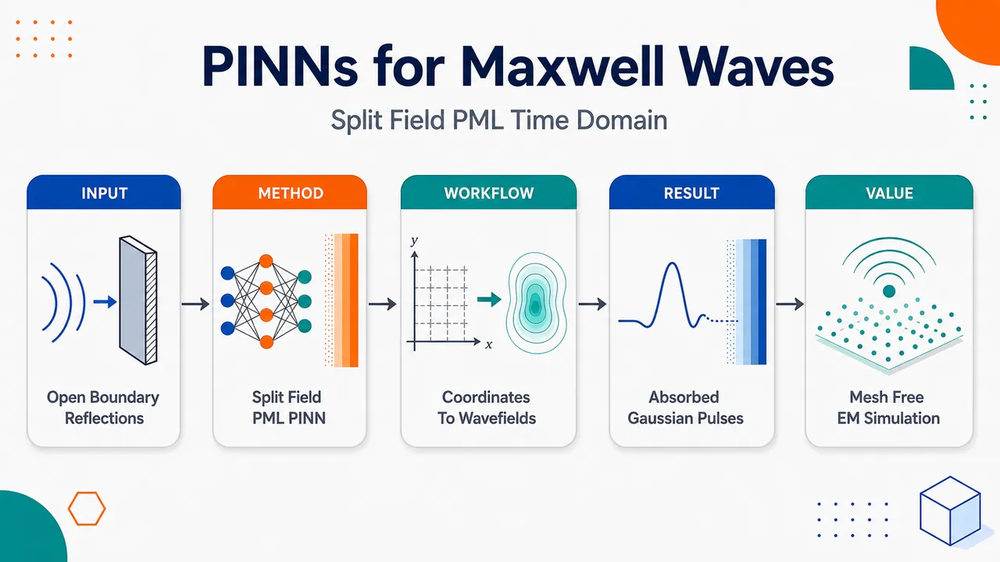
研究问题开放域时域电磁仿真中，PINN 如何像 FDTD/FEM 一样有效吸收入射到人工边界的电磁波，避免出射高斯脉冲在计算域边缘产生非物理反射；核心难点是把 Maxwell 物理域与 PML 吸收层同时纳入神经网络损失，而不引入复杂的卷积历史项、区域切换方程和额外变量。创新方法将分裂场完美匹配层嵌入时域 Maxwell 方程 PINN：在二维 TMz 模式中把电场分解为 E_z=E_zx+E_zy，网络输入为时空坐标 (x,y,t)，输出 E_zx、E_zy、Hₓ、H_y；物理域通过令阻尼系数 σ=0 表示，PML 域通过 σ>0 表示，因此同一套 PDE 残差覆盖物理区域和吸收层区域。Aha 点是：PML 不再作为特殊边界条件，而变成带渐变阻尼的扩展介质区域，使 PINN 损失函数保持统一、无网格、无卷积项。工作流程输入计算域、时间范围、介质参数、PML 厚度与多项式阻尼剖面；在物理域和 PML 域采样配点、初始点、边界点和激励测量点；全连接神经网络接收 (x,y,t)，预测分裂电场和磁场；用自动微分计算 Maxwell-PML 方程残差，并与初始条件、边界条件、测量数据共同组成总损失；先用 Adam 预训练，再用 L-BFGS 精修；最终输出连续时空电磁场分布，展示高斯脉冲传播、介质界面反射透射以及在 PML 中逐渐衰减消失。关键结果在 1D 真空传播中，PINN 在 t=0.8 的电磁场截面与解析解吻合；在 1D 非均匀介质中，成功捕捉 x=0.5 介电常数从 1 到 4 的界面导致的部分反射，并在 t=1.2 与解析解一致；在 1D PML 中，σₘₐₓ₌₄₀、m=3 时，出射波进入 x>0.6 的吸收层后明显耗散，t=0.8 结果与 FDTD 匹配；在 2D 方形区域中，中心高斯脉冲向外扩散，四周 PML 在 t=0.4 和 t=0.56 有效吸收波前，且在 x=0.5、t=0.2 截面与高分辨率 FDTD 参考解接近。应用价值为 PINN 求解开放域电磁波传播、散射和辐射问题提供可视化清晰、公式统一的吸收边界方案；适合需要连续时空场查询、少网格依赖、可融合测量数据的电磁仿真场景。该方法补足了 Maxwell-PINN 中 PML 处理不足的环节，有潜力服务天线辐射、雷达散射、波导开放端、瞬态脉冲传播等问题，但当前仍主要是 1D/2D 简单介质下的可行性验证。第一部分：核心概览 (Overview)
该研究把分裂场完美匹配层（split-field PML）嵌入时域 Maxwell 方程 PINN框架，使物理区域与吸收层区域共享统一控制方程与损失构造，避免卷积型 PML 的额外复杂性。通过 1D 真空、1D 非均匀介质、1D PML、2D 真空 PML 高斯脉冲算例，PINN 解与解析解或 FDTD 参考解吻合良好。其领域地位在于补足了 PINN 电磁时域开域问题中 PML 处理不足的环节，属于可行性验证型、方法集成型贡献。
---
第二部分：结构化快速回顾
《Physics-Informed Neural Networks for the Time-Domain Maxwell Equations with Split-Field Perfectly Matched Layers》（None，）
背景
PINNs通过把 PDE、初始条件、边界条件和测量数据写入损失函数，为时域电磁仿真提供无网格替代方案。开放域电磁问题需要吸收边界，PML是 FDTD/FEM 中成熟技术，但在 PINN 中尚未充分探索。
方法
采用二维 TM(_z) 分裂场 PML 方程，将 (E_z) 分解为 (Ezₓ+Ezy)，网络输入为 ((x,y,t))，输出为 ((Ezₓ,Ezy,Hₓ,H_y))。总损失包含 PDE 残差、初始条件、边界条件和测量数据项，默认权重 (łambda=1)。训练采用 Adam 预训练 + L-BFGS 精修，框架为 DeepXDE。
结果
1D 真空与非均匀介质算例中，PINN 与解析解在 (t=0.8)、(t=1.2) 对比良好；1D PML 算例中，(σₘₐₓ=40,m=3)，PINN 与 FDTD 在 (t=0.8) 匹配；2D PML 算例中，(Nₚ₌₁₀₀₀₀₀)，PINN 与 FDTD 在 (x=0.5,t=0.2) 处一致，并在 (t=0.4,0.56) 显示有效吸收。
讨论
分裂场 PML 的核心优势是物理域与 PML 域使用同一组方程，降低 PINN 的输入输出设计和损失函数复杂度。阻抗匹配条件 (σ/ǎrepsilonᵣ₌σ^*/μᵣ) 用于降低 PML 界面反射。
局限
验证集中于高斯脉冲、1D/2D、简单介质与规则几何；缺少误差范数、反射系数、训练耗时、收敛曲线、消融实验和复杂散射体测试。高维问题仍需未来工作。
结论
分裂场 PML 与 PINN 结合可用于开放域时域电磁波传播仿真，当前结果证明了可行性；后续方向是时间离散 PINNs以处理更高维问题。
---
第三部分：逐章节冷凝解析 (Section-by-Section Condensing)
Abstract
- PINN reformulates Maxwell simulation as constrained optimization
PINNs把 Maxwell 方程、初始条件、边界条件和测量数据直接纳入学习过程，将 PDE 求解转化为约束优化问题；这一点由摘要中的 *"incorporate Maxwell’s equations, initial conditions, boundary conditions, and measurement data directly into the learning process"* 与 *"transforming the solution of partial differential equations into a constrained optimization problem"* 明确界定。该定位强调 PINN 不是纯数据拟合，而是用物理残差约束神经网络。
- Split-field PML is the central methodological contribution
核心方法是面向时域 Maxwell 方程构造包含分裂场 PML的 PINN 公式，直接对应 *"This paper presents a PINN formulation for the time-domain Maxwell’s equations incorporating split-field perfectly matched layers (PMLs)."* 贡献点不是提出新型网络结构，而是把经典 PML 吸收层以分裂场形式并入 PINN 的 PDE 残差。
- Unified equations simplify physical and PML regions
分裂场 PML 的优势在于物理域和 PML 域可使用同一套控制方程，摘要表述为 *"the same governing equations can be applied in both the physical and PML regions, simplifying the PINN formulation and loss construction."* 对 PINN 而言，这降低了区域切换、输出变量变更和损失函数拼接的复杂度。
- Validation relies on 1D and 2D Gaussian pulse problems
验证对象包括一维和二维高斯脉冲 PML 问题，摘要中明确为 *"validated using one-dimensional and two-dimensional Gaussian pulse problems with PML."* 参考基准包含解析解和 FDTD：*"good agreement with analytical and finite-difference time-domain (FDTD) reference solutions."* 因此证据性质是数值可行性验证，而非大规模工程基准。
---
1 Introduction
- PINNs are positioned as mesh-free and data-efficient PDE solvers
PINNs区别于纯数据驱动模型，其核心机制是把 PDE、初始条件、边界条件写入训练过程；原文为 *"Unlike purely data-driven models, physics-informed neural networks (PINNs), originally proposed by M. Raissi [1], encode the underlying PDEs, initial conditions, and boundary conditions into the learning process."* 由此获得 *"mesh-free and data-efficient solution strategies"* 的潜力。这里的“无网格”意味着网络以连续坐标作为输入，不需要像 FDTD/FEM 那样预先生成离散网格。
- PINNs have become broadly relevant across computational physics
研究背景跨越流体、声学与电磁学，原文列举为 *"solving forward and inverse problems in computational physics, including fluid dynamics, acoustics and electromagnetics."* 这说明电磁 PINN 是更大 PINN-PDE 潮流中的一个分支，而非孤立方向。
- Recent PINN advances target boundary enforcement and optimization difficulty
引言把已有 PINN 改进归为若干方向：严格边界条件、随机权重分解、优化算法、因果增强策略；原文为 *"Significant progress has been made using PINNs, including strict boundary condition enforcement, random weight factorization [8], effective optimization algorithms [9,10,11], and causality-enhanced strategies [12,13]."* 这些引用表明训练稳定性、边界处理和时间演化方程收敛是 PINN 的关键瓶颈。
- Time-domain Maxwell equations are foundational for wave physics
时域 Maxwell 方程控制电磁场演化，是传播、散射、辐射建模的基础；原文为 *"The time-domain Maxwell’s equations govern the evolution of electric and magnetic fields and form the foundation for modeling wave propagation, scattering, and radiation phenomena."* 这一背景决定了开放域边界处理的必要性。
- Traditional solvers are powerful but mesh-dependent
FDTD和FEM已取得成功，但依赖显式网格并需细致处理复杂几何；原文为 *"Numerical methods such as the finite-difference time-domain (FDTD) method [2] and finite element method (FEM) [3] have achieved great success; however, they often require explicit meshing and careful treatment of complex geometries."* PINN 的动机之一是用连续神经表示减少网格依赖。
- PINNs approximate fields directly and enforce Maxwell constraints through loss
电磁 PINN 用神经网络近似场分量，并将 Maxwell 方程、初始条件、边界条件作为损失约束；原文为 *"approximating the electromagnetic fields with a neural network and enforcing Maxwell’s equations, initial conditions, and boundary conditions as constraints in the loss function."* 这形成了与 FDTD 显式时间推进不同的全域优化视角。
- Open-domain simulations require absorbing artificial boundaries
开放域电磁仿真必须截断计算域，同时减少虚假反射；原文为 *"artificial absorbing boundaries are required to truncate the computational domain while minimizing spurious reflections."* 若没有吸收边界，出射波会从人工边界反射回计算域，污染物理解。
- PML remains a leading absorbing boundary technique
PML被定位为最有效的吸收边界之一，原文为 *"The perfectly matched layer (PML) [4,5] remains one of the most effective absorbing boundary techniques."* 分裂场 PML 通过分解场分量并引入阻尼项实现吸收：*"achieves reflectionless absorption by decomposing field components and introducing auxiliary damping terms within the PML region."*
- PML is mature in FDTD/FEM but underexplored in PINNs
PML 已广泛用于 FDTD 和 FEM，原因是鲁棒且实现简单：*"PML has been widely adopted in FDTD and FEM due to its robustness and simplicity of implementation."* 关键缺口是 *"the incorporation of PML into PINNs has not been widely explored."* 该缺口直接定义了研究问题。
- Unified PINN loss embeds both physical Maxwell equations and split-field PML equations
方法目标是把物理域 Maxwell 方程和吸收层分裂场 PML 方程统一嵌入损失泛函；原文为 *"embeds both the Maxwell equations in the physical domain and the split-field PML equations in the absorbing region into a unified loss functional."* 所有电磁场作为网络输出：*"By treating all the electromagnetic fields as network outputs."* 目标是形成 *"physically consistent, mesh-free solver for open-domain electromagnetic wave propagation."*
---
2 PINNs for Time-Domain Maxwell’s Equations
- Section focus is the mathematical and learning formulation
该部分建立时域 Maxwell-PML 方程与PINN 损失函数之间的对应关系。章节标题 *"PINNs for Time-Domain Maxwell’s Equations"* 指向两个核心：一是分裂场 PML 控制方程，二是用神经网络输出场分量并最小化残差。
---
2.1 Time-Domain Split-Field PML Equations
- 2D TM(_z) mode has three nonzero physical components
二维 TM(_z) 模式只保留 (E_z,Hₓ,H_y) 三个非零分量；原文为 *"the electromagnetic fields have only three nonzero components: the out-of-plane electric field (E_z) and the in-plane magnetic fields (Hₓ) and (H_y)."* 这使二维 Maxwell 方程从六分量系统降为三分量物理场系统。
- Electric field splitting creates (Ezₓ) and (Ezy)
分裂场 PML 将 (E_z) 分解为 (Ezₓ+Ezy)，原文为 *"By implementing (E_z=Ezₓ+Ezy), the time-domain split-field PML equations reduce to..."* 该分裂允许 x、y 方向阻尼分别进入相应方程，形成方向选择性吸收。
- The 2D split-field PML system contains four residual equations
2D TM(_z) 分裂场系统包含四个 PDE：
[
ǎrepsilonᵣfracpartial Ezₓpartial t+σₓEzₓ=fracpartial H_ypartial x,
]
[
ǎrepsilonᵣfracpartial Ezypartial t+σ_yEzy=-fracpartial Hₓpartial y,
]
[
μᵣfracpartial Hₓpartial t+σ_y^*Hₓ₌₋fracpartial E_zpartial y,
]
[
μᵣfracpartial H_ypartial t+σₓ^*H_y=fracpartial E_zpartial x.
]
变量含义由原文定义：*"where (ǎrepsilonᵣ), (μᵣ), (σ) and (σ^*) denote the relative electric permittivity, relative magnetic permeability, electric conductivity, and magnetic loss of the medium, respectively."*
- Nondimensionalization is used to accelerate convergence
方程经过无量纲化，目的明确为加速 PINN 收敛；原文为 *"The above equations are nondimensional and are used in the PINN formulation to accelerate convergence."* 参考尺度包括 (L₀)、(T₀₌L₀/c)、(E₀)、(H₀₌E₀/Z₀)、(c=1/sqrtμ₀ǎrepsilon₀)、(Z₀₌sqrtμ₀/ǎrepsilon₀)、(σ₀₌₁/(L₀Z₀₎)、(σ₀^*=Z₀/L₀)。表 1 标题为 *"Reference physical scales for nondimensional time-domain Maxwell’s equations."*
- Lossless Maxwell equations arise by setting all conductivities to zero
当 (σₓ₌σ_y=0) 且 (σₓ^*=σ_y^*=0)，分裂场 PML 方程退化为无耗介质中的 Maxwell 方程；原文为 *"If (σₓ₌σ_y=0) and (σₓ^*=σ_y^*=0), the above equations reduce to Maxwell’s equations in a lossless medium (e.g., vacuum)."* 这意味着物理域只是 PML 方程的零阻尼特例。
- Uniform equations across all regions are desirable for PINNs
物理域与 PML 域统一为同一组方程，是 PINN 公式的关键简化；原文为 *"As a result, all computational domains, including the PML region, can be represented using a uniform set of equations. This is a desirable property for PINNs."* 输入输出维度也保持一致：*"The input and output dimensions remain the same across the physical and PML regions."*
- Split-field PML avoids convolutional terms present in other PML forms
分裂场形式避免处理其他 PML 公式中的卷积项，原文为 *"thereby avoiding the additional complexity of handling convolutional terms required in other PML formulations [5]."* 对 PINN 尤其重要，因为卷积历史项会引入时间记忆、额外辅助变量或积分残差，显著增加自动微分和损失构造复杂度。
- PML impedance matching condition suppresses interface reflections
为保证物理域与 PML 的阻抗匹配，电损耗和磁损耗满足
[
fracσǎrepsilonᵣ=fracσ^*μᵣ.
]
原文目标是 *"To ensure impedance matching between the physical domain and the PML region and to minimize spurious reflections at the PML interface."* 该条件使入射波在界面处理论上不因介质阻抗突变产生反射，而是在 PML 内逐渐衰减。
- Polynomial grading controls PML damping profile
PML 电导率采用多项式渐变：
[
σₓ₌σₘₐₓłeft(fracΔ xdi̊ght)^m.
]
原文定义为 *"where (Δ x) denotes the distance from the PML interface, (d) is the PML thickness, and (m) is the grading order."* 渐变阻尼避免在 PML 入口处突然增大 (σ)，从而降低界面数值反射。
- 1D TEM reduction uses two equations
一维 (x) 方向、(z) 极化 TEM 模式只需 (E_z,H_y)，原文为 *"For 1D, (x)-directed, (z)-polarized TEM mode, the above equation reduces to..."* 对应方程为：
[
ǎrepsilonᵣfracpartial E_zpartial t+σₓE_z=fracpartial H_ypartial x,
]
[
μᵣfracpartial H_ypartial t+σₓ^*H_y=fracpartial E_zpartial x.
]
这一降维形式用于 3.1 中所有一维高斯脉冲实验。
---
2.2 Loss Functions
- Network input and output match the 2D split-field formulation
PINN 输入为 ((x,y,t))，输出为 ((Ezₓ,Ezy,Hₓ,H_y))；原文为 *"The PINNs take ((x,y,t)) as input and employ a fully connected neural network to predict the electromagnetic field components ((Ezₓ,Ezy,Hₓ,H_y))."* 输出 (E_z) 可由 (Ezₓ+Ezy) 合成。
- Total loss combines physics, initial, boundary, and measurement terms
总损失为
[
L=łambda₁Lₚₕyₛᵢcₛ+łambda₂Lᵢₙᵢₜᵢₐₗ+łambda₃Lbₒᵤₙdₐᵣy+łambda₄Lₘₑₐₛᵤᵣₑ.
]
原文明确：*"The loss function (L) consists of several terms: the physics-informed loss term (Lₚₕyₛᵢcₛ), terms that evaluate the error between the values predicted by the network and the prescribed initial and boundary data, (Lᵢₙᵢₜᵢₐₗ) and (Lbₒᵤₙdₐᵣy), and a term for other measured data, (Lₘₑₐₛᵤᵣₑ)."* 默认权重为 *"Unless otherwise specified, (łambda=1) for all terms."*
- Physics loss averages squared PDE residuals over collocation points
物理损失在 (Nₚ) 个配点上计算 PDE 残差均方：
[
Lₚₕyₛᵢcₛ=frac1Nₚsumᵢ₌₁Nₚ|boldsymbolR(boldsymbolxₚⁱ,tₚⁱ;θ)|².
]
原文为 *"The physics-informed term enforces the residuals of the governing PDEs at a set of collocation points..."* 残差向量维度依方程而变：*" (boldsymbolR) has 4 and 2 components for (1) and (4), respectively."*
- Initial condition loss penalizes deviation at (t=0)
初始条件损失为
[
Lᵢₙᵢₜᵢₐₗ=frac1N₀sumᵢ₌₁N₀|boldsymbolu(boldsymbolx₀ⁱ,0;θ)-boldsymbolu₀₍boldsymbolx₀ⁱ⁾|².
]
原文解释为 *"The initial condition term penalizes deviations from the prescribed initial values."* 其中 (boldsymbolu) 为预测场，(boldsymbolu₀) 为给定初值：*"where (boldsymbolu) denotes the predicted field values and (boldsymbolu₀) denotes the prescribed initial values."*
- Boundary loss enforces prescribed boundary data over space-time boundary points
边界损失为
[
Lbₒᵤₙdₐᵣy=frac1N_bsumᵢ₌₁N_b|boldsymbolu(boldsymbolx_bⁱ,t_bⁱ;θ)-boldsymbolu_b(boldsymbolx_bⁱ,t_bⁱ⁾|².
]
原文为 *"The boundary term enforces the network predictions at boundary points."* 该项可用于 Dirichlet 激励、边界吸收外侧条件或其他已知边界数据。
- Measurement loss enables data assimilation
若存在观测或测量场值，可加入
[
Lₘₑₐₛᵤᵣₑ=frac1Nₘsumᵢ₌₁Nₘ|boldsymbolu(boldsymbolxₘⁱ,tₘⁱ;θ)-boldsymboluₘⁱ|².
]
原文为 *"If available, measurements at points ... can be incorporated"*，其中 *"(boldsymboluₘⁱ) denotes the observed or measured field values."* 在一维高斯脉冲中，左边界激励被作为时间依赖测量数据处理。
- Sampling and activation defaults are LHS and tanh
默认数据采样采用拉丁超立方采样（LHS），激活函数为 tanh；原文为 *"Unless otherwise specified, Latin hypercube sampling (LHS) is adopted for data generation, and the hyperbolic tangent ((tanh)) function is used as the network activation."* 2D 案例是例外，采用 Sobol 序列和 sine 激活。
- Training uses Adam followed by L-BFGS
优化采用两阶段：Adam 随机梯度预训练，再用 L-BFGS 精修；原文为 *"the Adam optimizer [17] is first employed for stochastic gradient-based pretraining, followed by the limited-memory Broyden–Fletcher–Goldfarb–Shanno (L-BFGS) algorithm [18] to further refine the solution and enhance convergence."* 这符合 PINN 常见实践：Adam 改善初始搜索，L-BFGS 在全批量残差上提高最终精度。
- Implementation uses DeepXDE
代码实现基于 DeepXDE，原文为 *"All implementations are carried out using the DeepXDE framework [19]."* 该框架支持自动微分、PDE 残差构造和 PINN 训练流程。
---
3 Numerical Examples
- Numerical validation is organized around Gaussian pulse propagation
数值算例用于验证 PINN-PML 公式在时域波传播中的表现，包括 1D 高斯脉冲和 2D 高斯脉冲。章节标题 *"Numerical Examples"* 下包含 *"1D Gaussian Pulse"* 与 *"2D Gaussian Pulse in Vacuum"* 两类测试，参考解包括解析解和 FDTD。
---
3.1 1D Gaussian Pulse
- 1D problem follows the reduced two-equation TEM system
一维问题由式 (4) 控制，原文为 *"The 1D problem is governed by (4)."* 场分量为 (E_z,H_y)，传播方向为 (x)。
- Gaussian boundary excitation has (t₀₌₀.5) and (σ=0.05)
左边界施加时间衰减高斯电场 Dirichlet 条件：
[
E_z(t)=e⁻frac⁽t⁻t₀₎²²σ²,
]
原文为 *"The time-decaying Gaussian electric pulse is imposed as a Dirichlet boundary condition at the left boundary (z=0)"*，参数为 *"Here, (t₀₌₀.5) and (σ=0.05)."* 文中边界写作 (z=0)，但一维域变量使用 (x)，存在轻微符号不一致。
- First 1D case: vacuum propagation without PML
第一组测试是真空高斯脉冲传播，域为 ([0,1]×[0,1])，原文为 *"The domain ((x,t)) is ([0,1]×[0,1])."* 时间窗确保脉冲不到达 (x=1.0)：*"The simulation time window is chosen such that the propagating pulse does not reach the boundary (x=1.0); therefore, PML is not required."*
- First 1D case uses (Nₚ₌₁₀₀₀₀,N₀₌₅₀₀,N_b=500,Nₘ₌₂₀₀)
真空一维 PINN 配置为 (Nₚ₌₁₀₀₀₀)、(N₀₌₅₀₀)、(N_b=500)，原文为 *"For the PINN simulations, (Nₚ₌₁₀₀₀₀), (N₀₌₅₀₀), and (N_b=500)."* 激励数据作为测量项：*"The excitation term induced by the Gaussian pulse is treated as measured time-dependent data with (Nₘ₌₂₀₀)."* 测量点在 (x=0) 处按均匀时间间隔采样：*"sampled at uniformly distributed time intervals at (x=0)."*
- First 1D case uses four hidden layers with 40 neurons each
网络结构为 4 个隐藏层、每层 40 个神经元；原文为 *"The network consists of four hidden layers, each containing 40 neurons."* 与后续更复杂案例相比，该网络规模较小。
- First 1D case matches analytical solution at (t=0.8)
结果在 (t=0.8) 与解析解直接比较，原文为 *"The numerical results at (t=0.8) from PINNs are directly compared with the analytical solution in Fig. 1(b), showing that PINNs are able to provide satisfactory results."* 图 1(a) 显示 (E_z,H_y) 的时空分布，图 1(b) 显示截面对比。
- Second 1D case: heterogeneous medium with dielectric interface at (x=0.5)
第二组测试为非均匀介质，域为 ([0,1]×[0,1.3])，原文为 *"The domain is ((x,t)in[0,1]×[0,1.3])."* 介质界面位于 (x=0.5)，相对介电常数从 1 变为 4：*"A dielectric interface is located at (x=0.5), with the relative permittivity changing from (ǎrepsilonᵣ₌₁) to (ǎrepsilonᵣ₌₄)."*
- Second 1D case excludes PML through time-windowing
非均匀介质案例同样通过时间窗避免脉冲到达外边界，原文为 *"the simulation is time-windowed such that the pulse does not reach the outer boundary; therefore, eliminating the need for PML."* 该设计把误差来源集中在介质界面透反射与 PINN 拟合能力上。
- Second 1D case uses (Nₚ₌₂₀₀₀₀,N₀₌₅₀₀,N_b=500,Nₘ₌₃₂₅)
非均匀介质 PINN 配置为 *"Here, (Nₚ₌₂₀₀₀₀), (N₀₌₅₀₀), (N_b=500), and (Nₘ₌₃₂₅)."* 物理配点从 10000 增至 20000，测量点从 200 增至 325，反映介质不连续问题更难。
- Second 1D case uses four hidden layers with 60 neurons each
网络结构为 *"four hidden layers, each containing 60 neurons."* 相比真空案例每层 40 神经元，容量提高以处理界面反射与透射。
- Second 1D case captures partial reflection at dielectric interface
由于介质界面，电磁波发生部分反射；原文为 *"Due to the dielectric interface, the electromagnetic wave is partially reflected."* 图 2(a) 中白线表示 (x=0.5) 界面，图注为 *"The white line represent the interface at (x=0.5)."*
- Second 1D case matches analytical solution at (t=1.2)
PINN 在 (t=1.2) 与解析解比较，原文为 *"The numerical results at (t=1.2) from PINNs are directly compared with the analytical solution in Fig. 2(b), showing that PINNs are able to provide satisfactory results."* 未给出 (L₂) 误差或反射/透射系数量化误差。
- Third 1D case: PML begins at (x=0.6)
第三组测试引入 PML，域为 ([0,1]×[0,1.5])，原文为 *"The domain is ((x,t)in[0,1]×[0,1.5])."* 物理域为 (x<0.6) 真空，(x>0.6) 为 PML，且 (ǎrepsilonᵣ₌₁.0)：*"For (x<0.6), the medium is vacuum with (ǎrepsilonᵣ₌₁.0); for (x>0.6), the region is modeled as PML with (ǎrepsilonᵣ₌₁.0)."*
- Third 1D case uses (Nₚ₌₁₅₀₀₀,N₀₌₁₀₀₀,N_b=1000,Nₘ₌₁₅₀)
PML 一维案例 PINN 配置为 *"Here, (Nₚ₌₁₅₀₀₀), (N₀₌₁₀₀₀), (N_b=1000) and (Nₘ₌₁₅₀)."* 相比前两例，初始和边界采样点增至 1000，测量点减少到 150。
- Third 1D case uses four hidden layers with 60 neurons each and PML (σₘₐₓ=40,m=3)
网络结构与第二例相同：*"The network consists of four hidden layers, each containing 60 neurons."* PML 阻尼参数为 *"The PML parameters are (σₘₐₓ=40) and (m=3)."* 三次多项式渐变提供较平滑的吸收剖面。
- Third 1D case shows expected dissipation in PML and agreement with FDTD
PML 区域中场逐渐耗散，原文为 *"The fields are dissipated through the PML region as expected."* (t=0.8) 时 (E_z) 与 FDTD 参考解匹配：*"The (E_z) distribution from PINNs matches well with the reference solution at (t=0.8)."* 该案例是分裂场 PML-PINN 的一维核心验证。
---
3.2 2D Gaussian Pulse in Vacuum
- 2D test uses vacuum Gaussian pulse in a square domain
最终测试为二维真空高斯脉冲传播，空间域为 ([0,1]×[0,1])，时间域为 ([0,0.8])；原文为 *"The computational space–time domain is ((x,y)in[0.0,1.0]×[0.0,1.0]) with (tin[0,0.8])."*
- PML surrounds the central physical region with interfaces at 0.2 and 0.8
PML 界面放置在四条线：(x=0.2,x=0.8,y=0.2,y=0.8)，原文为 *"The PML interfaces are placed at (x=0.2), (x=0.8), (y=0.2), and (y=0.8)."* 这意味着中心 ([0.2,0.8]×[0.2,0.8]) 为主要物理区域，外侧为吸收层。
- 2D PML uses (σₘₐₓ=10,m=3)
二维 PML 参数为 *"The PML parameters are (σₘₐₓ=10) and (m=3)."* 与一维 PML 的 (σₘₐₓ=40) 相比，二维案例采用较小最大阻尼。
- Initial electric field is a centered Gaussian and magnetic field is zero
初始条件为中心在 ((0.5,0.5)) 的高斯电场：
[
E_z(x,y,0)=e⁻⁴⁰⁽⁽x⁻⁰.⁵⁾^²⁺⁽y⁻⁰.⁵⁾^²⁾,
]
[
Hₓ₍ₓ,y,0)=0,quad H_y(x,y,0)=0.
]
原文为 *"The initial condition consists of a Gaussian electric field pulse with zero initial magnetic field."* 该设置产生向外传播的环形波前。
- FDTD reference uses very fine grid spacing (Δ x=Δ y=0.00125)
参考解来自 FDTD，网格间距为 (Δ x=Δ y=0.00125)，原文为 *"An FDTD solution with grid spacing (Δ x=Δ y=0.00125) is used as the reference solution."* 在单位方域尺度下，这相当于每方向约 800 个网格间隔，参考解空间分辨率较高。
- 2D PINN uses (Nₚ₌₁₀₀₀₀₀,N₀₌₁₀₀₀,N_b=1000)
二维案例配点数显著增加，原文为 *"Here, (Nₚ₌₁₀₀₀₀₀), (N₀₌₁₀₀₀), and (N_b=1000)."* 相比一维最多 (Nₚ₌₂₀₀₀₀)，二维物理残差点增加到 100000，反映高维时空域训练需求。
- 2D network uses four hidden layers with 80 neurons each
网络结构为 *"four hidden layers, each containing 80 neurons."* 这是全部实验中最大网络结构：一维真空为 4×40，一维非均匀和一维 PML 为 4×60，二维为 4×80。
- 2D case uses Sobol sampling and sine activation instead of LHS/tanh
二维案例使用 Sobol 序列和 sine 激活，原文为 *"Sobol sequences are adopted for data generation and the sine function is used as the network activation."* 这是对 2.2 默认设置的明确修改，可能用于改善高维域覆盖与波动函数表达能力。
- PINN and FDTD agree at (x=0.5,t=0.2)
在 (x=0.5,t=0.2) 截面处，PINN 与 FDTD 接近，原文为 *"At (x=0.5) and (t=0.2), the PINNs solution closely matches the FDTD results."* 图 4(a) 显示 (t=0.2) 的 (E_z) 场，图 4(b) 显示截面对比。
- Boundary discrepancy arises from different FDTD reference setup
边界附近小差异来自 FDTD 参考解并未使用 PML，而是在足够大域上运行；原文为 *"The small discrepancy near the boundary arises because the FDTD simulation was performed on a sufficiently large domain to obtain an accurate reference solution, without employing a PML."* 因此差异不是直接说明 PINN-PML 失效，而是参考问题边界设置不完全一致。
- PML absorbs outward-propagating pulse at later times
(t=0.4) 与 (t=0.56) 的 (E_z) 场显示向外传播脉冲被 PML 吸收；原文为 *"The (E_z) fields at (t=0.4) and (t=0.56) are presented in Fig. 5. The outward-propagating pulse is effectively absorbed by the PML region."* 这是二维开放域能力的主要视觉证据。
---
4 Conclusions and Future Work
- Split-field PML has been demonstrated within PINNs
结论聚焦于分裂场 PML 与 PINN 的结合，原文为 *"This paper explored split-field PML in the context of PINNs."* 这表明贡献性质是探索性集成与可行性展示。
- Reference-solution agreement supports feasibility for practical EM problems
结果与参考解吻合良好，原文为 *"The results show good agreement with reference solutions, demonstrating the potential of PINNs combined with PML for practical electromagnetic problems."* 其中参考解包括解析解和 FDTD，场景包括真空、介质界面和 PML 吸收。
- Future direction is temporally discretized PINNs for higher dimensions
后续工作将转向时间离散 PINN 以解决更高维问题，原文为 *"Future work will focus on temporally discretized PINNs for solving higher-dimensional problems."* 这一表述暗示连续时空 PINN 在高维时域 Maxwell 问题中可能面临训练成本和收敛困难。
---
References
- Reference base combines PINN foundations, classical EM solvers, PML, and recent training advances
参考文献覆盖 Raissi 等 PINN 基础论文、Yee FDTD、Jin FEM、Berenger PML、Gedney 各向异性 PML，以及 Maxwell-PINN 近年工作。基础 PINN 引用为 *"Physics-informed neural networks: A deep learning framework for solving forward and inverse problems involving nonlinear partial differential equations"*；经典 FDTD 引用为 *"Numerical solution of initial boundary value problems involving Maxwell’s equations in isotropic media"*；PML 源头引用为 *"A perfectly matched layer for the absorption of electromagnetic waves."*
- Recent related work situates the contribution in Maxwell-PINN literature
电磁 PINN 相关引用包括 2021 年 Maxwell deep learning method、2024 年 Maxwell PINN 实现、2024 年非连续介质电磁 PINN、2025 年非稳态 Maxwell PINN 收敛评估。尤其文献 [16] 题名 *"PINNs for solving unsteady Maxwell’s equations: Convergence issues and comparative assessment with compact schemes"* 表明 Maxwell PINN 收敛困难仍是活跃问题。
---
第四部分：深度理解与语言支持 (Understanding & Nuance)
1. 术语解析
- Physics-informed neural networks (PINNs)
语境中指把物理方程残差作为训练损失的一类神经网络，不只是用数据拟合输入输出。关键表达是 *"encode the underlying PDEs, initial conditions, and boundary conditions into the learning process."* “Physics-informed”强调训练被物理规律约束；并不保证自动满足物理定律，仍取决于损失权重、采样、优化和网络表达能力。
- Split-field PML
指把场分量拆成方向相关部分，例如 (E_z=Ezₓ+Ezy)，并分别加入 (σₓ,σ_y) 阻尼。其细微含义是“split-field”不是物理上存在两个电场，而是数学辅助变量，用于实现方向选择性吸收。原文关键句为 *"achieves reflectionless absorption by decomposing field components and introducing auxiliary damping terms within the PML region."*
- Spurious reflections
指人工边界或 PML 接口产生的非物理反射。语境中目标是 *"minimizing spurious reflections."* “Spurious”强调这些反射不是由真实介质不连续或散射体导致，而是由数值截断、阻抗不匹配或离散误差导致。
- Collocation points
PINN 中用于强制 PDE 残差接近零的采样点，不一定是传统网格点。原文为 *"at a set of collocation points."* 它们分布在时空域内部，网络通过自动微分在这些点计算导数和残差。
- Nondimensional
指使用参考尺度把物理量变成无单位量。语境中无量纲化目的为 *"to accelerate convergence."* 细微点在于无量纲化不改变原方程物理结构，但能改善不同变量量级差异，降低优化病态性。
2. 疑难查证：复杂概念解释
- 为什么分裂场 PML 适合 PINN？
PINN 需要在采样点计算 PDE 残差。如果物理域和 PML 域使用完全不同的方程、不同变量或带时间卷积项，损失函数会变得复杂，自动微分图也更难维护。分裂场 PML 的优势是：在物理域令 (σ=0)，在 PML 域令 (σ>0)，同一组方程即可覆盖两类区域。也就是说，PML 不再是一个“特殊边界条件”，而是一个“带阻尼的扩展介质区域”。
- 阻抗匹配条件 (σ/ǎrepsilonᵣ₌σ^*/μᵣ) 的意义
电磁波在介质界面是否反射，关键取决于波阻抗是否突变。PML 既加入电损耗 (σ)，也加入磁损耗 (σ^*)。若二者比例不匹配，电场和磁场衰减不协调，PML 入口会像一个新介质界面，产生反射。条件 (σ/ǎrepsilonᵣ₌σ^*/μᵣ) 让 PML 在入口处对传播波保持等效阻抗匹配，使波尽量无反射进入 PML，然后在内部逐渐耗散。
- 为什么二维案例改用 sine 激活？
Maxwell 波动解具有强振荡特征，tanh 激活虽然平滑，但在表示高频或周期结构时可能需要更多神经元。sine 激活天然适合表示波动和振荡模式。二维时空问题维度更高、波前结构更复杂，因此使用 Sobol 序列提升采样均匀性，用 sine 激活提升波动表达能力，是合理的工程选择；但该研究未给出 tanh 与 sine 的消融比较。
- 为什么“无网格”不等于“不采样”？
PINN 不需要传统 FDTD/FEM 网格来推进场值，但仍需要在时空域内采样配点、初始点、边界点和测量点。区别在于：FDTD 的网格承载离散方程和时间推进，PINN 的采样点承载损失评估；网络本身表示连续函数，可在任意坐标查询场值。
---
第五部分：创新评估与关联 (Synthesis & Novelty)
1. 创新性判断
- 相对近期 Maxwell-PINN 工作的新颖性在于 PML 开域处理
过去 2–5 年内，Maxwell-PINN 工作多集中在直接求解时域 Maxwell 方程、处理非连续介质、比较收敛性能或改进训练稳定性。该研究的突出点是把分裂场 PML系统化写入 PINN 残差，使 PINN 能处理开放域时域传播，而不仅是有限封闭域或依赖简单边界条件的问题。
- 解决了 PINN 中 PML 方程与物理方程难统一的问题
传统 PML 尤其卷积型或各向异性形式可能需要额外历史变量、卷积项或区域特定方程。该方法利用分裂场形式，让物理域成为 (σ=0) 的特例，PML 域成为 (σ>0) 的同方程阻尼区域。创新点体现在损失构造简化：同一个 PDE 残差模板覆盖全域，只需根据位置设置 (σₓ,σ_y,σₓ^*,σ_y^*)。
- 提供了从 1D 到 2D 的可行性链条
验证路径具有递进性：1D 真空解析解验证基础传播；1D 非均匀介质验证界面反射；1D PML 验证吸收层；2D PML 验证高维开放域传播。尽管没有系统误差表和复杂工程算例，这条链条足以说明方法不是单一场景拟合。
- 创新强度属于“方法集成与公式适配”，不是网络算法突破
网络结构采用全连接网络，优化采用 Adam + L-BFGS，框架采用 DeepXDE；这些都属于 PINN 常规配置。新颖性主要来自把 split-field PML 以统一无量纲 PDE 残差形式并入 PINN，而非提出新优化器、新网络架构或新采样理论。
- 未完全解决的问题仍明显
缺少反射系数、相对 (L₂) 误差、训练时间、内存成本、收敛曲线、不同 PML 厚度和 (σₘₐₓ) 的参数敏感性分析。二维参考 FDTD 使用大域无 PML，与 PINN-PML 边界设置不同，导致边界附近差异解释依赖定性说明。高维复杂问题仍被放入未来工作，说明当前贡献主要是概念验证。
-
08
📄 摘要：提出交错磁半导体作为栅定义量子点自旋量子比特平台，无需外磁场即可运行。交错磁体的有限动量自旋极化提供零场量子比分裂，并可通过电静力栅调控量子点椭圆率实现连续可调、单比特可寻址频率。该分裂按构造对电场涨落一阶不敏感。
💡 亮点：交错磁半导体量子点可用栅极椭圆率全电调节零场自旋劈裂，同时抑制一阶电噪声退相干。它把交错磁动量依赖自旋极化转化为可扩展自旋量子比特资源。
📖 展开分析 + 配图
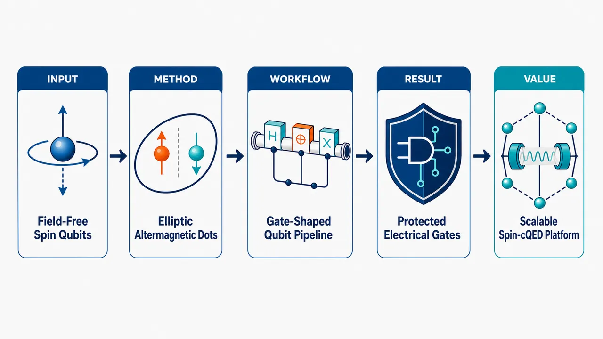
研究问题传统半导体自旋量子比特依赖外磁场、微磁体或核自旋梯度来产生能级劈裂和操控，容易带来杂散场、串扰、超导谐振腔不兼容和电荷噪声退相干；核心问题是如何在门定义量子点中实现零外磁场、可频率寻址、全电控且抗退相干的自旋量子比特。创新方法利用替代磁体半导体的“零净磁化但动量相关自旋劈裂”特性，把材料内禀有限动量自旋极化转化为量子点内的零场量子比特劈裂；Aha 点是用电门调节量子点椭圆率来连续改变自旋劈裂和量子比特频率，同时该劈裂结构天然对一阶电场噪声不敏感，量化轴涨落只形成横向耦合而不产生纯退相干。工作流程输入为替代磁体半导体中的门定义量子点；电门塑造量子点形状和椭圆率，使轨道波函数采样动量空间自旋极化；由有效量子点模型和微观晶格模型推导量子比特哈密顿量；静态电门设定每个量子比特频率，交流电场通过电偶极自旋共振驱动单比特门；相邻量子点通过可调交换与频率寻址实现 fSim 双比特门；自旋相关电偶极矩与超导谐振腔色散耦合完成非破坏读出，并可扩展到全电控 singlet-triplet 编码。关键结果理论上实现无外磁场的自旋量子比特能级劈裂，且劈裂可由量子点椭圆率连续电调，实现单个量子比特频率寻址；电场涨落对劈裂的一阶影响被消除，低频电荷噪声难以直接造成相位漂移；量化轴噪声只导致横向弛豫而非纯退相干；同一平台支持 EDSR 单比特控制、可调交换 fSim 双比特门、超导谐振腔色散读出和无需微磁体/核梯度的 singlet-triplet 量子比特。应用价值为大规模半导体量子计算提供一种低杂散场、低串扰、超导电路兼容的自旋量子比特路线；全电控架构有利于芯片级布线、频率复用和阵列扩展；去除外磁场与微磁体需求，可降低器件复杂度并改善与 circuit-QED 读出、长程耦合和低温控制电子学的集成潜力。第一部分：核心概览
该研究提出反铁磁替代磁体半导体 altermagnetic semiconductors作为门定义量子点自旋量子比特平台，实现零外磁场、全电控、频率可寻址、退相干受保护的自旋量子比特。核心创新在于利用有限动量自旋极化产生可由量子点椭圆率连续调节的内禀自旋劈裂，同时使该劈裂对一阶电场噪声不敏感。平台兼容超导谐振腔、支持电偶极自旋共振、可调交换、fSim 双量子比特门及全电控 singlet-triplet 量子比特，定位为传统半导体自旋量子比特的低噪声、可扩展替代路线。
---
第二部分：结构化快速回顾
《All-electrical dephasing-protected spin qubits in altermagnets》（None，）
背景
传统半导体自旋量子比特通常依赖外磁场、微磁体或核自旋极化梯度实现能级劈裂、单比特操控和 singlet-triplet 控制，带来串扰、杂散场、超导电路不兼容、退相干等问题。替代磁体 altermagnets具有零净磁化但保留动量相关自旋劈裂，为零场自旋量子比特提供新物理机制。
方法
从有效量子点模型出发，并以微观晶格模型支撑，推导反铁磁替代磁体量子点中的自旋量子比特哈密顿量，分析电场噪声耦合、量子点椭圆率调谐、EDSR 单比特控制、交换耦合双比特门、circuit-QED 读出以及 singlet-triplet 编码。
结果
量子比特劈裂可在零磁场下由量子点椭圆率连续调节；劈裂对电场涨落具有一阶不敏感性；量化轴涨落只产生横向耦合，导致弛豫而非纯退相干；平台支持电偶极自旋共振、fSim 双比特门、色散式非破坏读出和全电控 singlet-triplet 量子比特。
讨论
零净磁化消除杂散场，与超导谐振腔兼容；自旋相关电偶极矩可实现高保真非破坏读出；个体量子比特频率可通过静电门调节，利于扩展阵列中的频率寻址。
局限
可见材料实现、器件制备、噪声谱、退相干时间、门保真度、具体候选半导体替代磁体、实验可行性窗口等信息未在提供内容中展开。当前可据摘要确认的是理论方案与模型推导，未见实验样本量、统计显著性或实测保真度。
结论
反铁磁替代磁体量子点可形成一种全电控、零场运行、退相干保护、超导读出兼容的自旋量子比特架构，并自然支持完整量子门集与 singlet-triplet 编码。
---
第三部分：逐章节冷凝解析
可获得的原始内容仅包含 arXiv 页面元数据与摘要；未提供 PDF 正文、章节标题、公式、图注、附录或参考文献。以下严格基于可见原始标题与摘要，不虚构章节、实验数值、模型参数或统计结果。
---
Abstract
#### Altermagnetic semiconductors are proposed as a zero-field spin-qubit platform
替代磁体半导体被定位为一种可扩展的自旋量子比特材料平台，目标是在门定义量子点 gate-defined quantum dots中实现全电控 all-electrical controllable且无需外磁场的自旋量子比特。关键原文为 *"We introduce altermagnetic semiconductors as a materials platform for scalable, all-electrical controllable spin qubits that operate without magnetic fields in gate-defined quantum dots."*
该表述同时包含四个设计目标：可扩展性、全电控、零磁场运行、门定义量子点实现。与传统 GaAs、Si/SiGe、Ge/SiGe 自旋量子比特相比，零场运行减少了对外部 Zeeman 劈裂和片上微磁体的依赖。
#### Finite-momentum spin polarization generates field-free qubit splitting
核心物理资源是替代磁体的内禀有限动量自旋极化 intrinsic finite-momentum spin polarization。这种动量依赖的自旋结构可在无外磁场情况下为量子比特提供能级劈裂。证据句为 *"The altermagnet intrinsic finite-momentum spin polarization provides a field-free qubit splitting..."*
这里的 field-free qubit splitting 指量子比特的两个自旋态之间存在能量差，但该能量差不是由外加磁场产生，而是由材料本身的自旋-动量结构与量子点轨道约束共同产生。
#### Dot ellipticity provides continuous electrostatic frequency tunability
量子比特频率可通过量子点形状，尤其是椭圆率 dot ellipticity，用静电门连续调节。摘要中的直接证据为 *"...fully and continuously tunable through the dot ellipticity with electrostatic gates, delivering individually addressable qubit frequencies."*
该机制的重要性在于，量子比特阵列中每个量子点可通过局域门电压设置不同椭圆率，从而实现个体频率寻址 individually addressable qubit frequencies，避免完全依赖局域磁场梯度或材料 g 因子差异。
#### Spin splitting is first-order insensitive to electric-field fluctuations
退相干保护的第一层来源是替代磁体自旋劈裂对电场涨落的一阶不敏感性。原文为 *"the altermagnetic spin splitting is first-order insensitive to electric field fluctuations by construction..."*
这里的 by construction 表示这种抗噪声性质不是后期补偿得到，而是由哈密顿量结构、量子点几何调谐方式或对称性设计自然产生。该性质类似量子比特中的“甜点 sweet spot”：频率对控制参数的一阶导数为零，低频电荷噪声不容易转化为相位噪声。
#### Quantization-axis noise produces transverse coupling rather than pure dephasing
退相干保护的第二层来源是量化轴涨落 quantization-axis fluctuations只产生横向耦合。摘要直接表述为 *"...quantization-axis fluctuations produce only transverse coupling, yielding relaxation without pure dephasing..."*
在两能级系统中，沿量子比特能量轴的噪声通常导致纯退相干 pure dephasing，即相位随机化但无能量交换；横向噪声则主要导致弛豫 relaxation，即能级间跃迁。该方案强调噪声通道从低频相位噪声转向受能量守恒和噪声谱密度限制的弛豫通道，因此可能延长相干性。
#### The protection mechanism is distinct from conventional spin-qubit protection
退相干保护被明确描述为区别于传统自旋量子比特的机制。原文为 *"...a distinct dephasing-protection yielding an advantage over conventional spin qubits."*
传统半导体自旋量子比特的相干性通常依赖同位素纯化、磁场稳定、工作点优化、动态解耦或微磁体工程。这里的保护来自替代磁体动量自旋结构与量子点几何耦合，属于材料内禀机制与器件几何控制的结合。
#### Zero net magnetization removes stray fields
替代磁体平台具有零净磁化 net-zero magnetization，可消除传统铁磁元件或微磁体引入的杂散磁场。摘要证据为 *"The net-zero magnetization eliminates stray-fields..."*
这对大规模阵列尤其重要，因为杂散场会导致邻近量子比特频率漂移、串扰、校准复杂化，并可能破坏超导元件。
#### Compatibility with superconducting resonators enables circuit-QED readout
零净磁化同时使平台兼容超导谐振腔 superconducting resonators，从而允许采用 circuit-QED 架构。原文为 *"...renders the platform compatible with superconducting resonators thus enabling high-fidelity, non-demolition circuit-QED readout..."*
超导谐振腔对磁场敏感，传统需要大磁场的自旋量子比特与超导腔耦合存在天然张力。零场运行与零净磁化降低这种冲突，为高保真 high-fidelity、非破坏 non-demolition读出创造条件。
#### Spin-dependent electric dipole enables dispersive readout
读出机制依赖自旋相关电偶极矩 spin-dependent electric dipole与谐振腔的色散耦合。摘要原文为 *"...by dispersive coupling of the qubit spin-dependent electric dipole couples to a resonator."*
色散读出意味着量子比特与谐振腔不发生真实能量交换，而是量子比特状态改变谐振腔频率或相位响应。自旋本身难以直接电耦合，但若自旋态携带不同电偶极矩，就可被微波腔电场有效探测。
#### Effective quantum-dot theory is supported by a microscopic lattice model
理论构建采用两层方法：有效量子点描述 effective quantum-dot description与微观晶格模型 microscopic lattice-model。原文为 *"Starting from an effective quantum-dot description, supported by a microscopic lattice-model, we derive the qubit Hamiltonian..."*
这说明方案不是纯现象学设想，而是试图从较底层晶格物理连接到量子点有效哈密顿量。摘要未给出具体晶格类型、跃迁参数、交换参数、对称群或能带表达式。
#### The qubit Hamiltonian naturally supports a complete gate set
推导得到的量子比特哈密顿量被声明为自然支持完整门集。证据为 *"...we derive the qubit Hamiltonian and establish that it naturally supports a complete gate set..."*
完整门集 complete gate set 通常意味着任意单比特旋转加至少一种纠缠双比特门，从而具备通用量子计算能力。这里的关键是所有控制均可通过电门实现，而非微波磁场或局部磁体。
#### Electric-dipole spin resonance controls single qubits
单比特控制依赖电偶极自旋共振 electric-dipole spin resonance, EDSR。原文为 *"electric-dipole spin resonance controls single qubits..."*
EDSR 的本质是用交流电场驱动电子轨道运动，再通过自旋-轨道耦合、磁场梯度或此处的替代磁体自旋结构转化为自旋翻转。该方案的特殊之处在于无需外磁场或微磁体即可产生有效自旋驱动。
#### Tunable exchange and frequency addressing implement fSim two-qubit gates
双比特门依赖可调交换 tunable exchange与逐比特频率寻址 per-qubit frequency addressing，可直接实现 fSim family。摘要原文为 *"...while tunable exchange combined with per-qubit frequency addressing directly implements the fermionic simulation (fSim) family of two-qubit gates."*
fSim 门族在超导量子计算和费米子模拟中重要，通常包含 iSWAP-like 交换项与受控相位项。这里的意义在于半导体自旋量子比特可原生实现适合量子模拟的双比特门，而不只是传统 CNOT 或 CZ 的分解路线。
#### The same platform supports fully electrical singlet-triplet qubits
同一材料与器件平台还可实现singlet-triplet qubit，并且交换与劈裂差均为全电控。原文为 *"Crucially, within the same platform it is possible to implement a singlet-triplet qubit with fully electrical control over both exchange and splitting differences..."*
singlet-triplet 量子比特通常编码在双量子点两电子自旋态中，需要控制交换耦合 J 和两点间有效 Zeeman 差 ΔB。传统 ΔB 来源包括核自旋梯度或微磁体梯度；该方案用替代磁体内禀劈裂差替代这些外部资源。
#### Micromagnets and nuclear polarization gradients become unnecessary
该平台明确移除对微磁体 micromagnets与核极化梯度 nuclear polarization gradients的需求。摘要直接证据为 *"...removing the need for micromagnets or nuclear polarization gradients..."*
这解决了 singlet-triplet 量子比特中的一个经典瓶颈：微磁体增加制备复杂度和杂散场，核极化梯度难以稳定且受材料同位素影响。全电控劈裂差可提高可重复性与可扩展性。
#### Baseband operation becomes possible
singlet-triplet 架构还可支持基带操作 baseband operation。原文为 *"...while enabling baseband operation."*
基带操作通常指控制信号不需要高频微波载波，而可使用较低频或脉冲门电压完成旋转与交换控制。这对低温电子学集成、功耗降低、布线简化和大规模控制系统有利。
#### The final claim is an all-electrical route with enhanced protection
摘要结论为该平台建立了一条具有增强保护的全电控自旋量子比特路线。直接引文为 *"Our results establish altermagnetic quantum dots as a novel, all-electrical route to spin qubits with enhanced protection."*
核心主张可压缩为三点：altermagnetic quantum dots 是新型物理平台；all-electrical route 是控制与读出优势；enhanced protection 是相干性优势。
---
Bibliographic and arXiv metadata
#### The work is an arXiv preprint in mesoscopic and nanoscale physics
该研究的学科分类为凝聚态物理中的介观与纳米尺度物理 Mesoscale and Nanoscale Physics。元数据给出 *"Subjects: Mesoscale and Nanoscale Physics (cond-mat.mes-hall)"*。
这表明目标读者主要包括半导体量子点、自旋量子比特、纳米器件、量子输运和凝聚态量子信息方向研究者。
#### The manuscript is a theory-oriented preprint with figures and appendices
可见元数据显示篇幅为 13 页、6 图并含附录。原始描述为 *"Comments: 13 pages, 6 figures + appendices"*。
结合摘要中的 *"derive the qubit Hamiltonian"*、*"effective quantum-dot description"*、*"microscopic lattice-model"* 等表述，可判断核心贡献以理论建模和器件方案推导为主，而非实验测量。
#### No experimental sample size or statistical significance is available
提供内容中没有实验样本量、器件数量、误差条、P 值、置信区间、实测 T1/T2、门保真度或谐振腔耦合强度等信息。可确认的数值型元数据仅包括 *"13 pages, 6 figures + appendices"* 和提交日期 *"Submitted on 24 Jun 2026"*。
因此，所有性能优势目前只能按理论架构主张理解，不能等同于实验验证。
---
第四部分：深度理解与语言支持
1. 术语解析
#### Altermagnetic semiconductors
Altermagnetic semiconductors 可译为“替代磁体半导体”或“交替磁性半导体”。它们区别于普通铁磁体和传统反铁磁体：
- 像反铁磁体一样具有零净磁化；
- 又像铁磁体一样可出现明显的自旋劈裂能带；
- 自旋极化往往依赖晶体动量方向，形成 finite-momentum spin polarization。
在该语境中，该材料不是用来产生宏观磁场，而是用来在量子点内部产生可控的零场自旋劈裂。
#### Field-free qubit splitting
Field-free qubit splitting 指量子比特两个基态之间的能量差不由外加磁场产生。传统自旋量子比特常依赖 Zeeman splitting：
[
E_Z = gμ_B B
]
这里的劈裂来自替代磁体材料的内禀动量自旋结构与量子点轨道波函数的结合。因此“field-free”不是“没有能级劈裂”，而是“没有外部磁场也有能级劈裂”。
#### First-order insensitive
First-order insensitive 是量子控制中非常重要的抗噪声表达。若量子比特频率 (ømega_q) 依赖某控制参数 (V)，电荷噪声导致 (V → V+δ V)，展开为：
[
ømega_q(V+δ V)=ømega_q(V)+fracpartial ømega_qpartial Vδ V+frac12fracpartial² ømega_qpartial V²δ V²⁺ḑots
]
first-order insensitive 意味着：
[
fracpartial ømega_qpartial V=0
]
低频电噪声不会在线性阶直接转化为频率噪声，因此纯退相干可被压低。
#### Transverse coupling
Transverse coupling 指噪声或驱动项垂直于量子比特能量本征轴。若量子比特哈密顿量写成：
[
H₀₌frachbarømega_q2σ_z
]
纵向噪声类似：
[
δ H_z = δømega(t)σ_z
]
主要造成相位随机化，即 pure dephasing。
横向噪声类似：
[
δ Hₓ = δₓ₍ₜ₎σₓ
]
主要诱导 (|0ånglełeftrightarrow |1ångle) 跃迁，即 relaxation。该摘要强调量化轴涨落只形成横向耦合，因此避免了纯退相干通道。
#### fSim family of two-qubit gates
fSim 是 fermionic simulation gate 的简称，常用于模拟费米子体系，也适合表达 iSWAP 与受控相位的组合。典型形式可写作：
[
fSim(θ,φ)=
beginpmatrix
1&0&0&0
0&o̧sθ&-isinθ&0
0&-isinθ&o̧sθ&0
0&0&0&e⁻ⁱφ
endpmatrix
]
其中 (θ) 表示交换型激发转移强度，(φ) 表示条件相位。该研究强调可调交换和频率寻址可自然产生此类门。
---
2. 疑难查证
#### 为什么零净磁化还能产生自旋劈裂？
普通直觉容易把“自旋劈裂”与“铁磁磁化”绑定起来：有磁化才有 Zeeman-like 劈裂，没有净磁化就不该有自旋劈裂。替代磁体打破了这个直觉。
关键在于：
- 净磁化是整个晶体所有磁矩求和后的宏观量；
- 动量空间自旋劈裂是不同 (k) 态之间的能量与自旋结构；
- 两者不必等价。
替代磁体中，晶格对称性允许某些动量方向上的自旋上、下能带分裂，但整个布里渊区积分后总磁化仍为零。可粗略理解为：
[
sumₖ s(k) = 0
]
但局部动量点上：
[
s(k) ≠ 0
]
量子点波函数在动量空间有有限分布，因此能“采样”这种动量依赖自旋结构，形成有效自旋劈裂。
#### 为什么量子点椭圆率能调节量子比特频率？
圆形量子点在 (x) 与 (y) 方向的轨道约束对称，动量分布也近似对称。椭圆量子点中，两个方向约束频率不同：
[
ømegaₓ ≠ ømega_y
]
动量涨落尺度随约束长度变化：
[
łangle kₓ²ångle sim 1/lₓ²,quad łangle k_y²ångle sim 1/l_y²
]
若替代磁体自旋劈裂含有类似 (kₓ²⁻k_y²) 的各向异性结构，则椭圆率直接改变有效自旋劈裂：
[
ΔAMpropto łangle kₓ²⁻k_y²ångle
]
因此，通过门电压改变量子点形状，就能连续调节 (ΔAM)，也就是量子比特频率。
#### 为什么“一阶电场不敏感”仍允许“全电控”？
这看似矛盾：如果对电场涨落不敏感，为什么还能用电场控制？
区别在于：
- 噪声通常是小幅、随机、低频的 (δ E(t))；
- 控制是有设计方向、频率、幅度和时序的电门调制。
退相干保护针对的是工作点附近的随机扰动：
[
fracpartial ømega_qpartial E=0
]
但仍可通过改变量子点椭圆率、施加交流电场驱动轨道运动、调节交换耦合等方式实现控制。也就是说，静态频率对局域噪声的一阶导数可为零，同时受控的大尺度参数变化和共振驱动仍有效。
#### 为什么横向噪声比纵向噪声更有利？
低频电荷噪声通常在 (ømegaapprox 0) 附近强，例如 (1/f) 噪声。纵向噪声直接改变量子比特频率，不需要提供能量，因此低频噪声会高效造成相位扩散。
横向噪声要让量子比特从 (|0ångle) 跃迁到 (|1ångle)，必须在量子比特频率 (ømega_q) 附近有噪声谱：
[
1/T₁ propto Sₚₑᵣₚ₍ømega_q)
]
若 (ømega_q) 较高，而环境在该频率噪声较弱，弛豫就慢。于是“只有横向耦合”通常比“存在纵向低频耦合”更有利于相干保护。
---
第五部分：创新评估与关联
1. 创新性判断
#### 从“外加磁场产生自旋劈裂”转向“材料内禀动量自旋结构产生自旋劈裂”
过去 2–5 年半导体自旋量子比特的重要趋势包括：
- Si/SiGe 与 Ge/SiGe 中提高门保真度；
- 利用微磁体实现 EDSR；
- 通过自旋-轨道耦合实现全电控；
- 发展与超导谐振腔耦合的长程读出和耦合；
- 优化甜点以降低电荷噪声敏感性。
该方案的新颖性在于把核心资源换成替代磁体内禀有限动量自旋极化，不再需要外磁场或微磁体来产生基本量子比特劈裂。摘要中的关键证据为 *"operate without magnetic fields"* 与 *"field-free qubit splitting"*。
#### 把“几何形状”变成频率寻址旋钮
传统自旋量子比特频率寻址常依赖：
- 局部 g 因子差异；
- 磁场梯度；
- Stark shift；
- 微磁体工程；
- 交换耦合调谐。
这里提出通过量子点椭圆率连续调节劈裂，形成新的频率寻址机制。直接证据为 *"fully and continuously tunable through the dot ellipticity with electrostatic gates"*。
这使电门不仅用于定义量子点位置和电荷占据，也用于设置量子比特本征频率。
#### 退相干保护机制不同于常规甜点或同位素纯化
传统保护多是减少外界噪声源，例如同位素纯化降低核自旋噪声，或寻找电荷噪声甜点。该方案强调哈密顿量结构使自旋劈裂天然一阶电场不敏感，并将量化轴涨落限制为横向耦合。证据为 *"first-order insensitive to electric field fluctuations by construction"* 与 *"quantization-axis fluctuations produce only transverse coupling, yielding relaxation without pure dephasing"*。
新意在于保护不仅来自材料洁净度或脉冲优化，而来自替代磁体量子点的物理构造。
#### 解决超导读出与磁场需求之间的冲突
自旋量子比特与超导 resonator 结合的主要挑战之一是磁场不兼容：超导器件不喜欢强磁场，而自旋量子比特常需要磁场。该方案通过零外场和零净磁化同时解决该冲突。摘要证据为 *"The net-zero magnetization eliminates stray-fields and renders the platform compatible with superconducting resonators"*。
这可为 spin-cQED 架构提供更自然的材料基础。
#### 把单比特门、fSim 双比特门、singlet-triplet 编码统一到同一平台
许多既有方案只能优化某一方面：
- 单自旋量子比特适合长相干；
- singlet-triplet 量子比特适合快速交换控制；
- 超导架构适合 fSim；
- 半导体阵列适合高密度集成。
该方案声称在同一平台中同时支持：
- EDSR 单比特控制：*"electric-dipole spin resonance controls single qubits"*；
- fSim 双比特门：*"directly implements the fermionic simulation (fSim) family of two-qubit gates"*；
- singlet-triplet 全电控：*"fully electrical control over both exchange and splitting differences"*；
- 无需微磁体或核梯度：*"removing the need for micromagnets or nuclear polarization gradients"*。
#### 前人未充分解决的问题
该方案针对的未解决问题主要包括：
- 零场可寻址自旋劈裂不足
传统自旋量子比特需要磁场产生 Zeeman 劈裂；零场下频率寻址和自旋操控困难。
- 微磁体带来的制备复杂度和杂散场
微磁体可增强 EDSR，但引入局部场非均匀性、串扰和超导不兼容。
- 电荷噪声导致的频率涨落
Stark shift 类电控方案往往同时增加电荷噪声敏感性；该方案尝试兼得电控与一阶抗噪声。
- singlet-triplet 量子比特需要稳定梯度
核极化梯度难稳定，微磁体梯度难扩展；替代磁体劈裂差可由电门调节。
- 自旋量子比特与 circuit-QED 的磁场兼容性问题
零净磁化和零外场运行增强与超导谐振腔的兼容性。
#### 当前创新的验证状态
基于可见内容，创新主要处于理论方案与模型推导层面。摘要没有给出：
- 候选材料参数范围；
- 实测或模拟 (T₁,T₂,T₂^*)；
- EDSR Rabi 频率；
- 两比特门时间；
- fSim 门保真度；
- resonator 耦合强度 (g)；
- 读出保真度；
- 制备容差。
因此，学术地位更接近“提出新平台与新哈密顿量机制”，而非“实验验证可扩展量子处理器”。如果正文给出具体材料与数值模拟，其说服力将取决于这些参数是否落在已知半导体量子点和低温微波工程可达范围内。
-
09
📊 含图深析
📄 摘要：指出交错磁体中虽有很小剩磁，但不能忽略其与异常霍尔效应的关系。广义 Středa 关系将本征异常霍尔电导 σxy 与现代轨道磁化的拓扑分量 Mz 联系为 σxy=-e∂Mz/∂μ。文中提出局域晶体环境与交错磁结构相互作用产生净轨道矩的微观机制。
💡 亮点：作者用广义 Středa 关系把交错磁异常霍尔电导直接连接到剩余轨道磁化。该机制强调即使自旋剩磁很小，拓扑轨道磁矩仍可控制 Hall 响应。
📖 展开分析 + 配图
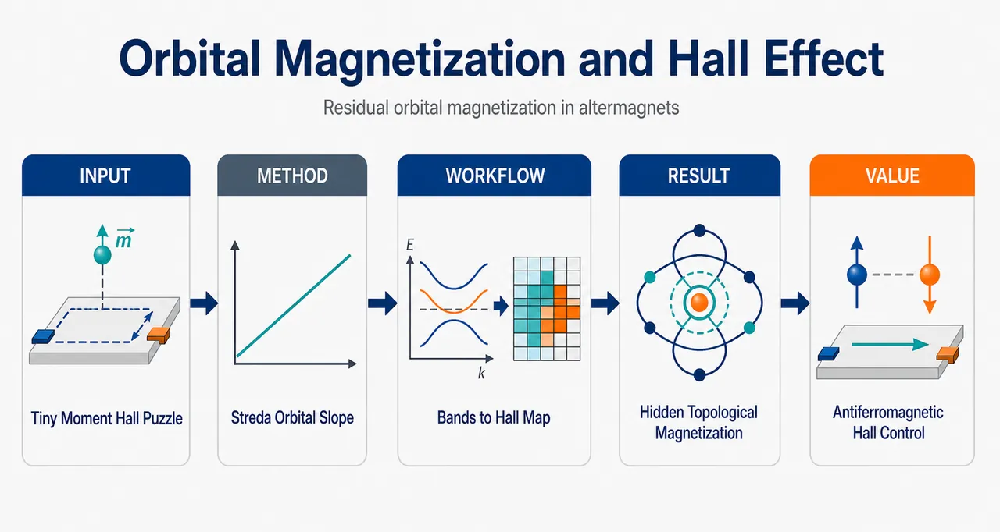
研究问题交替磁体中为何会同时出现“几乎补偿的微小剩磁”和“可观异常霍尔效应”？论文聚焦打破传统经验式“霍尔响应随磁化强度大小变化”的直觉，追问真正支配 AHE 的是否不是残余磁矩本身，而是隐藏在轨道磁化中的拓扑成分及其对化学势的敏感斜率。创新方法核心 Aha 点是把残余轨道磁化从“可忽略副产物”提升为 AHE 的热力学控制量：通过广义 Středa 关系 σxy=-e∂Mz^topo/∂μ，证明内禀异常霍尔电导由拓扑轨道磁化对化学势的导数决定，而非总磁矩大小。并进一步用 MnTe6 局域八面体模型揭示晶场–SOC–交换场即可诱导面外轨道磁矩和自旋倾斜，无需 Dzyaloshinskii–Moriya 相互作用。工作流程输入为 MnTe 型交替磁体的面内 Néel 磁序、六角晶格四带 g-wave 模型和局域 MnTe6 八面体晶场模型；先计算能带、SOC 开隙、Berry 曲率和轨道磁化分解 Mz=Mz^tri+Mz^topo；再用 Berry 曲率积分得到 σxy，并用 -e∂Mz^topo/∂μ 交叉验证；最后在局域模型中加入晶场、面内交换场和 SOC，得到 Mz(φ)、Sz(φ) 的 sin(3φ) 面外磁化图像。关键结果总轨道磁矩可小到约 10⁻⁵ μB/单胞，但平庸轨道项和拓扑轨道项各自可达约 10⁻³ μB，并因强烈抵消而留下微小剩磁；异常霍尔电导与 Berry 曲率积分结果严格等于 -e∂Mz^topo/∂μ。即使 Mz 或 Mz^topo 在能带边附近偶然过零，σxy 仍可出现峰值。局域模型给出 Mz(φ)=A3sin(3φ)，且 A3∝λ³Δcf³Δex⁻⁶，说明弱面外磁化是三阶 SOC 与晶场锁定共同产生的内禀效应。应用价值该研究为 MnTe、FeS、Mn5Si3 以及 Mn3Sn/Mn3Ge 等非常规反铁磁体中的“小剩磁 + 大 AHE”现象提供统一解释；提示实验应关注轨道磁化随化学势的变化率，而非只测剩磁大小；同时揭示残余面外磁化可参与 Néel 矢量翻转和磁滞回控制，为低杂散场、可电荷输运读出的反铁磁自旋电子器件提供设计依据。第一部分：核心概览 (Overview)
这项研究把交替磁体 anomalous Hall effect（AHE）与长期被低估的残余轨道磁化直接联系起来：内禀异常霍尔电导并不由残余磁矩大小决定，而由拓扑轨道磁化对化学势的导数决定，即广义 Středa relation：(σₓy=-epartial M_zm̊ topo/partialμ)。通过四带 (g)-wave 交替磁体模型和局域 (MnTe₆) 八面体模型，研究揭示了 SOC–晶场耦合可在单个局域磁性环境中诱导面外轨道/自旋磁矩，无需 Dzyaloshinskii–Moriya 相互作用。该工作把弱铁磁残余磁化从“副产物”提升为理解非常规反铁磁输运的核心热力学量。
---
第二部分：结构化快速回顾
《Residual orbital magnetization governs the anomalous Hall effect in altermagnets》（None，）
背景
交替磁体兼具补偿磁性、动量依赖自旋劈裂和异常霍尔效应。代表材料 (α)-MnTe 存在约 (10⁻⁵μ_B)/Mn 的残余磁矩，但传统经验公式 (h̊o_H=R₀H+RₛM) 导致该小磁矩常被视为与 AHE 无关。
方法
采用两条互补路线：
- 基于四带 (g)-wave 六角晶格交替磁体模型，计算 Berry 曲率、轨道磁化分解、异常霍尔电导；
- 构造局域 (MnTe₆) 八面体晶场模型，分析 晶场、交换场、SOC 如何诱导面外轨道磁矩和自旋倾斜。
结果
总轨道磁矩可小至 (sim10⁻⁵μ_B)/unit cell，但其平庸项 (M_zm̊ trⁱ) 与拓扑项 (M_zm̊ topo) 可达 (sim10⁻³μ_B)，二者强烈抵消。异常霍尔电导严格由 (-epartial M_zm̊ topo/partialμ) 给出。局域模型给出 (M_z(φ)=A₃sin(3φ))，且 (A₃proptołambda³Δcf³Δₑₓ⁻⁶)。
讨论
残余磁化并非外禀杂质或高阶微扰残留，而是 AHE 交替磁体的基态热力学性质。面外轨道磁矩与自旋倾斜由局域晶场–SOC 机制产生，而真正的 Hall 响应需要晶格跃迁产生的拓扑轨道磁化。
局限
数值示例依赖有效模型而非完整第一性原理材料计算；关键模型参数被置于补充材料中；局域分子模型只能解释 (M_zm̊ trⁱ) 类在位轨道磁矩，不能单独产生 AHE；实验对 (partial M_z/partialμ) 的直接测量仍缺失。
结论
交替磁体和非共线反铁磁体中的弱残余轨道/自旋磁化是理解 AHE、Néel 矢量翻转和弱铁磁滞回行为的核心变量。AHE 的决定量是轨道磁化对化学势的敏感性，而不是磁矩绝对大小。
---
第三部分：逐章节冷凝解析 (Section-by-Section Condensing)
Abstract
Residual magnetization is small but physically decisive
交替磁体中伴随 AHE 的小剩磁过去常被视为过小而无关紧要，但这种判断遗漏了轨道磁化与 Hall 响应之间的热力学关系。摘要明确给出问题核心：*"In altermagnets that exhibit anomalous Hall effect, the small remanent magnetization exists but has been treated as too small to be relevant to the Hall response."* 关键转折在于 generalized Středa relation，即 (σₓy=-epartial M_z/partialμ)，其中 (M_z) 指现代轨道磁化理论中的拓扑成分。原文直接给出：*"the generalized Středa relation ties the intrinsic anomalous Hall conductivity ((σₓy)) to the orbital magnetization ((M_z), the topological component from the modern orbital magnetization) by (σₓy=-efracpartial M_zpartialμ)."*
A microscopic mechanism exists without intersite exchange
(MnTe)-型交替磁体的净轨道磁矩可以由局域晶场与自旋–轨道耦合 SOC共同产生，不需要调用相邻自旋之间的 Dzyaloshinskii–Moriya 相互作用。摘要中的关键机制表述为：*"We reveal a microscopic mechanism to generate net orbital moment from the interplay of local crystal field and spin-orbit coupling for MnTe-type altermagnets"*，并进一步限定其独立于邻近自旋交换：*"without invoking exchange between neighboring spins (e.g., Dzyaloshinskii-Moriya interaction)."*
Residual orbital and spin magnetization become intrinsic thermodynamic observables
残余轨道磁化和残余自旋磁化被重新定位为非常规反铁磁体中的内禀热力学性质，而不是外禀污染、样品偏差或可忽略背景。摘要结论为：*"residual orbital and spin magnetization is an intrinsic thermodynamic property that governs anomalous transport in unconventional antiferromagnets, including altermagnets and noncollinear antiferromagnets."*
---
Introduction / background section
> 原始正文在摘要后直接进入背景论述，未单独标注 “Introduction”。
Altermagnets combine compensated magnetism and momentum-dependent spin splitting
交替磁体是一类新近确立的共线补偿磁体，同时具有零净磁化、动量依赖自旋劈裂和 AHE 潜力。核心定义为：*"Altermagnets are a recently identified class of collinear compensated magnets that combine vanishing net magnetization with momentum-dependent spin splitting and can support the anomalous Hall effect (AHE)."* 这一区分使其不同于普通铁磁体和传统共线反铁磁体：净磁矩可接近零，但能带仍具有自旋劈裂和 Berry 曲率响应。
MnTe shows both AHE and extremely small remanent magnetization
代表材料 (α)-MnTe 同时显示清晰 AHE 与约 (10⁻⁵μ_B)/Mn 的剩磁。关键数值直接给出：*"Representative members such as (α)-MnTe exhibit a clear anomalous Hall response together with a remanent magnetization ((sim 10⁻⁵~μ_B) per Mn atom)."* 该量级远小于典型铁磁体磁矩，但并不自动意味着其与 Hall 响应无关。
The same puzzle appears in noncollinear antiferromagnets
(Mn₃Sn) 和 (Mn₃Ge) 等非共线反铁磁体也呈现“大 AHE + 小净磁矩”的组合。背景类比为：*"This echoes the older non-collinear antiferromagnet family Mn(₃)Sn and Mn(₃)Ge in which a sizable AHE was observed with a tiny net magnetization."* 因而问题并非 MnTe 个例，而是非常规反铁磁体中的普遍结构。
The empirical Hall formula misleads interpretation of tiny magnetization
传统经验公式 (h̊o_H=R₀H+RₛM) 容易诱导“磁矩太小则 Hall 响应无关”的判断。原文指出：*"Across both classes the remanent magnetization is small enough that it has been routinely treated as too tiny to be relevant to the Hall response according to the empirical formula"*，并给出公式：*"(h̊o_H=R₀H+RₛM)."* 该经验式适用于许多铁磁金属现象学拟合，但无法捕捉 Berry 曲率与轨道磁化导数的现代关系。
Three prevailing interpretations of MnTe remanence remain incomplete
关于 (α)-MnTe 的剩磁解释主要分三类。第一类视为材料相关或外禀背景，原文为：*"The first treats it as a materials-specific or extrinsic background tied to stoichiometry and sample conditions."* 第二类认为起源内禀但只是 SOC 或 DMI 引起的高阶自旋倾斜残余：*"The second keeps the origin intrinsic but views the moment as a higher-order spin-canting residue induced by spin-orbit coupling or Dzyaloshinskii-Moriya interaction, again secondary to the Hall mechanism."* 第三类承认轨道成分重要，但尚未把它提升为承载 Hall 响应的体观测量：*"The third, identifies the orbital component as the nonnegligible contribution to the net moment but does not yet promote it to the bulk observable that carries the Hall response."*
Weak ferromagnetism appears in multiple altermagnets
弱铁磁剩磁伴随 AHE 不限于 MnTe。其他交替磁体候选包括 FeS 与 (Mn₅Si₃)。给定数值为：*"the weak ferromagnetization was reported together with AHE in many other altermagnet materials such as FeS ((10⁻⁴~μ_B)) and (Mn₅Si₃) ((10⁻²~μ_B))."* 这些数值覆盖 (10⁻⁵) 到 (10⁻²μ_B) 量级，显示“弱但可重复”的残余磁化是一个跨材料问题。
The decisive variable is the chemical-potential derivative, not magnetization magnitude
现代 Berry 相轨道磁化理论给出核心判断：AHE 由轨道磁化对化学势的导数支配，而非 (M_z) 的绝对大小。关键句为：*"So the decisive quantity is the derivative of orbital magnetization to the chemical potential ((μ)) but not its magnitude."* 这一点直接反驳经验式中简单依赖 (M) 的直觉。
A tiny orbital moment can generate experimentally relevant AHC if it varies rapidly with (μ)
即便轨道磁矩仅 (10⁻⁵μ_B)，只要随化学势略微变化，也能对应可观 AHC。定量估算为：*"If an orbital moment of (10⁻⁵~μ_B) varies slightly, e.g., by (1%) over (1) meV, it corresponds to (σₓyapprox 0.1) S/cm (assume the unit cell volume about 100 Å(³)) on the experimentally relevant scale (e.g., (0.01sim 0.1) S/cm for MnTe)."* 这说明“小磁矩”与“可测 Hall 响应”并不矛盾。
AHE can persist when orbital magnetization accidentally vanishes
AHE 与轨道磁化绝对值不是一一对应。研究命题明确为：*"Here, AHE persists even when the orbital magnetization accidentally reaches zero."* 数学上原因是 (σₓy) 与 (partial M_zm̊ topo/partialμ) 成正比；函数值为零时导数仍可非零甚至很大。
Residual magnetization has a fixed relation to spin order and SOC
面外轨道磁矩与自旋磁矩在固定自旋序和 SOC 下具有确定大小与符号。引言末段给出：*"The unique crystal field - spin sublattice locking leads to the same spin canting effect among two spin sublattices, generating a net magnetization."* 这意味着交替磁体中两个反平行自旋子晶格的面外倾斜并非相互抵消，而是因晶场–子晶格锁定而同向叠加。
---
Středa relation
Modern orbital magnetization separates into trivial and topological parts
轨道磁化在现代理论中分解为波包自旋转导致的平庸项和 Berry 曲率相关的拓扑项：*"The orbital magnetization has the modern formulation, (M_z(μ)=M_zm̊ trⁱ(μ)+M_zm̊ topo(μ))."* 其中 (M_zm̊ trⁱ) 的表达式含速度矩阵元与能级差倒数，(M_zm̊ topo) 含 ((ǎrepsilonₙ₋μ)Ømegaₙxy)。二者物理含义被清楚区分：*"The first contribution, (M_zm̊ trⁱ), is the conventional “trivial” part due to wave-packet self rotation, while the second, (M_zm̊ topo), is the topological part from the Berry curvature related to the mass center motion."*
The magnetization normalization is a density, but figures use moment per unit cell
公式中的 (M_z) 是体密度，因为 (k)-空间积分归一化为 (int d³k/(2π)³)。原文说明：*"In Eqs. (4)–(5), (M_z) is an orbital magnetization density (moment per unit volume), as fixed by the (int d³k/(2π)³) normalization."* 为便于比较实验，数值换算成单胞磁矩：*"the figures and quoted values express it as a moment per unit cell, (Vₘ̊ cₑₗₗM_z), with (Vₘ̊ cₑₗₗapprox 100~ų) for (α)-MnTe (two Mn atoms per cell); experimental remanent moments are quoted per Mn atom, (Vₘ̊ cₑₗₗM_z/2)."*
Intrinsic AHC is computed from the Kubo–Berry-curvature formula
内禀异常霍尔电导使用 Berry 曲率积分：*"(σₓym̊ AH(μ)=-frace²hbarsumₙintfracd³k(2π)³fₙ₍ₖ₎Ømegaₙxy(k))."* Berry 曲率定义为：*"(Ømegaₙxy(k)=-2sumₘ≠ ₙIm[v^xₙₘv^yₘₙ]/[ǎrepsilonₙ₋ǎrepsilonₘ]²)."* 该形式说明近简并点或 SOC 开隙处会产生增强 Berry 曲率。
The zero-temperature Středa relation connects AHC only to (M_zm̊ topo)
在金属中，总轨道磁化包含平庸部分，但内禀 AHC 对应的是拓扑部分的化学势导数。核心公式为：*"we are going to demonstrate the zero-temperature Středa relation between (σₓym̊ AH) calculated by Eq. 6 and (M_zm̊ topo) by Eq. 5, (σₓym̊ AH=-efracpartial M_zm̊ topopartialμ)."* 这避免了把总 (M_z) 的绝对值直接代入经验公式的错误。
The four-band (g)-wave altermagnet Hamiltonian captures MnTe-like in-plane Néel order
模型为六角晶格上的四带 (g)-wave 交替磁体哈密顿量，包含子晶格 Pauli 矩阵 (τ)、自旋 Pauli 矩阵 (σ)、SOC 与交错 Néel 交换。原文定义：*"Without loss of generality, we evaluate the orbital magnetization and AHE using a four-band model for (g)-wave altermagnet on the hexagonal lattice."* 交换场选择 (J=(0,J,0))，对应 MnTe 的面内自旋序：*"We consider an in-plane spin orientation with (J=(0,J,0)), which mimics the in-plane spin order of MnTe."*
The band structure contains Néel-split doublets and SOC-induced Berry-curvature sources
四条能带分为两个 Néel 劈裂双重态，间隔约 (2J)：*"The four bands group into two Néel-split doublets separated by (sim 2J)."* 非 SOC 自旋劈裂沿 (Γ-L) 显示交替磁序：*"The non-SOC spin split along (Γ-L) indicates the altermagnetic order."* SOC 沿 (Γ-M) 和 (Γ-K) 打开小能隙，成为 Berry 曲率、AHE 与轨道磁化来源：*"Then SOC weakly gaps the degeneracy along (Γ-M) and (Γ-K). These SOC-induced gaps are sources of Berry curvature and generate the AHE and orbital magnetization."*
Total orbital magnetization is tiny because large components cancel
数值结果显示总 (M_zsim10⁻⁵μ_B)/unit cell，而 (M_zm̊ trⁱ) 和 (M_zm̊ topo) 各自可达 (sim10⁻³μ_B)。关键句为：*"Figure 1b shows a small but finite orbital moment (M_zsim10⁻⁵~μ_B) per unit cell while its (M_zm̊ trⁱ) and (M_zm̊ topo) components are much larger ((sim10⁻³~μ_B)) in magnitude than (M_z)."* 这意味着实验测到的小剩磁可能是大平庸项与大拓扑项抵消后的残差。
AHC from Berry curvature equals AHC from the Středa derivative
直接 Berry 曲率积分得到的 (σₓym̊ AH) 与 (-epartial M_zm̊ topo/partialμ) 一致。原文给出：*"We can extract the AHC from the Středa formula (Eq. 7) and find consistence with (σₓym̊ AH) directly calculated from Eq. 6."* 这为“轨道磁化导数支配 AHE”提供模型内验证。
Inside the gap, constant orbital magnetization gives zero AHC
能隙内 (M_z)、(M_zm̊ trⁱ)、(M_zm̊ topo) 均为常数，因此导数为零，AHE 消失。原文为：*"Inside the energy gap, (M_z), (M_zm̊ trⁱ) and (M_zm̊ topo) are constant and thus (σₓym̊ AH=0)."* 这与 Středa 关系完全一致：拓扑项不随 (μ) 变化时不产生 AHC。
Near band edges, AHC can peak even when (M_z) or (M_zm̊ topo) crosses zero
能带边缘附近，轨道磁化可偶然过零，但导数仍大，AHE 出现峰值。原文直接指出：*"Near band edges, (M_z) or (M_zm̊ topo) may accidentally turn zero while (σₓym̊ AH) does not vanish but exhibits peaks in these regions."* 结论是：*"It is clear that the orbital magnetization magnitude does not directly determine the AHE, contradicting the empirical relation in Eq. 1."*
Out-of-plane spin polarization accompanies orbital magnetization and scales nonlinearly with SOC
轨道磁化伴随面外自旋极化 (S_z)，对应 Mn 磁矩的弱面外自旋倾斜。原文为：*"The orbital magnetization comes together with an out-of-plane spin polarization ((S_z)), which indicates weak out-of-plane spin canting of Mn moments."* 其 SOC 依赖为三阶非线性：*"As shown in Fig. 1(c), (S_z) originates from SOC with a third-order nonlinear dependence."*
Weak out-of-plane ferromagnetism agrees with MnTe experiments
面外弱铁磁性与 MnTe 的磁化率、中子散射和磁成像观测一致。对应证据表述为：*"This weak out-of-plane ferromagnetism is consistent with the magnetic susceptibility and neutron scattering, and magnetic imaging in MnTe."* 这说明模型生成的 (S_z) 与 (M_z) 并非纯数学伪影。
Both (M_z) and (S_z) obey (sin(3φ)) angular dependence
当面内 Néel 向量旋转时，(M_z) 和 (S_z) 呈三重角谐波。原文给出：*"When rotating (J) in the (xy) plane, we find a (sin(3φ))-type angle dependence for (M_z) and (S_z)."* 这与先前 AHE 计算一致：*"consistent with previous AHE calculations."* 自旋翻转会改变 (M_z) 与 (S_z) 符号：*"Thus, signs of (M_z) and (S_z) reverse if the in-plane spins flip, to reduce the ground state energy."*
---
An altermagnet molecule
A local real-space mechanism is needed beyond momentum-space Berry curvature
此前对面外磁化的理解主要来自布里渊区 Berry 曲率积分，缺少局域原子结构图像。原文指出：*"So far, the out-of-plane magnetization in altermagnets has been accessed primarily from a momentum-space perspective, through the integration of Berry curvature over the Brillouin zone."* 关键缺口为：*"A complementary real-space understanding based on the local atomic structure is still lacking."*
The central question is whether canting requires intersite exchange
既有解释常调用 Dzyaloshinskii–Moriya 或类似交换相互作用。问题被明确设定为：*"An outstanding question is therefore whether the spin canting is intrinsically a collective phenomenon requiring intersite exchange, or whether it can already emerge from spin–orbit coupling within a single local atomic environment."* 局域模型的目标是证明面外磁矩可在孤立磁性位点上存在：*"the out-of-plane moment survives down to an isolated magnetic site, with spin canting spontaneously off the primary axis because of SOC."*
The MnTe local environment is modeled by a trigonalized octahedron
模型采用旋转到三方构型的八面体晶场，用来模拟 MnTe 中 (MnTe₆) 局域结构。原文为：*"We employ an octahedral crystal field model but rotate the octahedron to a trigonal configuration, which mimics the (MnTe₆) local atomic structure in the MnTe crystal."* 对称性从 (Oₕ) 降至 (D₃d)：*"In the trigonal case, the (Oₕ) point group reduces to (D₃d)."*
Crystal-field levels transform as (a₁gøplus e_g^π-e_g^σ)
八面体 (t₂g-e_g) 能级在 (D₃d) 表象下变为 (a₁gøplus e_g^π-e_g^σ)。原文为：*"the (t₂g-e_g) crystal field levels transform to (a₁gøplus e_g^π-e_g^σ) in the (D₃d) representation."* 其中 (a₁g) 是 (l_z=0) 单态，(e_g^π) 是 (łangle l_zångle=±1) 双态：*"Since (a₁g) is a singlet with (l_z=0) and (e_g^π) is a doublet with (łangle l_zångle=±1)."*
High-spin (d⁵) Mn has zero orbital moment without SOC
MnTe 的 Mn 高自旋 (d⁵) 构型为 ({}⁶S, L=0)，无 SOC 时总 (l_z) 抵消。原文为：*"the total (l_z) vanishes for the (d⁵) high-spin (({}⁶S), (L=0)) configuration of MnTe in the absence of SOC."* 这说明面外轨道磁矩并非来自未淬灭的一阶轨道角动量，而是 SOC 后的高阶重构。
The local Hamiltonian contains crystal field, in-plane exchange, and atomic SOC
局域哈密顿量为
[
H=Hcf-ΔₑₓJḑotboldsymbolσ+łambdaLḑotboldsymbolσ.
]
原文完整表述为：*"Then we introduce atomic SOC to this molecule model in the following Hamiltonian, (H=Hcf-ΔₑₓbmJḑotbmσ+łambdabmLḑotbmσ)."* 面内自旋方向为 (J=(o̧sφ,sinφ,0))：*"(J=(o̧sφ,sinφ,0)) represent the in-plane spin direction."*
Only (δ l_z=±3) crystal-field off-diagonals are symmetry-allowed
晶场矩阵 (Hcf^A) 在 ((|+2ångle,|+1ångle,|0ångle,|-1ångle,|-2ångle)) 基底中含三重旋转允许的非对角耦合。原文为：*"where only the (δ l_z=±3) off-diagonals are allowed by the three-fold rotational symmetry."* 第二子晶格 B 相对 A 旋转 (180ⁱ̧rc)，这些非对角项反号：*"For the second sublattice B that rotates by (180ⁱ̧rc) from A, these off-diagonals reverse sign in Eq. 10."*
Ideal octahedral field already supports spin canting
(HcfA,B) 对角化为 (0,0,0,Δcf,Δcf)，即低能三重态与高能双重态。原文为：*"(HcfA,B) diagonalizes to (0,0,0,Δcf,Δcf), namely the (a₁gøplus e_g^π) triplet at 0 and the (e_g^σ) doublet at (Δcf)."* 三方畸变可进一步劈裂低能三重态，但不是产生倾斜的必要条件：*"spin canting exists already in the ideal octahedral field. The trigonal distortion can modify the spin canting quantitatively in a perturbative manner."*
Exchange alone splits spin channels but gives zero out-of-plane moment
大面内交换 (Δₑₓ) 将晶场能级分成两个自旋通道，但不产生 (M_z) 或 (S_z)。原文为：*"The large in-plane exchange coupling ((Δₑₓ)) splits the crystal field levels into two spin channels while the out-of-plane orbital and spin moment remains zero."* 只有引入 SOC 后，自旋通道混合，诱导净面外磁化：*"Only after including SOC, two spin channels get mixed to induce net out-of-plane magnetization."*
The occupied (d⁵) trace gives a strict third harmonic
对 (d⁵) 占据态求和得到
[
M_z(φ)=sumₙᵢₙ ₒccłangle n|L_z|nångle=A₃sin(3φ).
]
原文为：*"Diagonalization of Eq. 9 at the in-plane spin angle (φ) followed by the (d⁵) occupied-state trace (M_z(φ)=sumₙᵢₙₒccłangle n|L_z|nångle) yields a strict third harmonic, (M_z(φ)=A₃sin(3φ))."* 该角依赖由三重旋转对称性强制。
The amplitude scales as (łambda³Δcf³Δₑₓ⁻⁶)
前导微扰标度为
[
A₃proptołambda³Δcf³Δₑₓ⁻⁶.
]
原文为：*"with the prefactor obeying the leading-order perturbative scaling confirmed numerically, (A₃proptołambda³Δcf,³Δₑₓ⁻⁶)."* 三阶 SOC 是最低非零阶：*"The (łambda³) onset is the lowest order at which the symmetric cancellation of the (d⁵) ground state is overcome: zeroth, first, and second order in SOC vanish after the occupied-state sum, so the moment first appears at third order."*
Two sublattices generate the same-sign orbital magnetization
A 与 B 子晶格的晶场和交换方向在 (C₂z) 下同时旋转，而 (M_z) 作为轴矢量 z 分量保持不变。原文为：*"Between A and B sublattices, crystal field and exchange direction rotate under the (C₂z) rotation while (M_z) is invariant since it is the (z) component of an axial vector."* 由此得到：*"(M_zA(φ)=M_zB(-φ))."* 这解释了为什么反铁磁的两个子晶格不会抵消面外轨道磁矩，而是形成净磁化。
Crystal field–sublattice locking distinguishes altermagnets from ordinary antiferromagnets
普通反铁磁体中两个自旋子晶格通常共享同一局域晶场；交替磁体中自旋子晶格与相反晶场锁定。关键句为：*"Different from an ordinary antiferromagnet where two spin sublattices share the same local crystal field, the altermagnet hosts two spin sublattices with opposite crystal fields."* 该锁定导致自发净磁化：*"Such a crystal field - sublattice locking leads to the unique properties including the spontaneous net magnetization for AHE altermagnets."*
Spin canting follows the same (sin(3φ)) dependence as orbital magnetization
由于 SOC，轨道磁化伴随面外自旋分量 (S_z)。原文为：*"Because of SOC, orbital magnetization (M_z) comes together with an out-of-plane spin component (S_z)."* 自旋倾斜角依赖同样为三重谐波：*"Such a spin canting follows the same (sin(3φ)) dependence as (M_z)."*
The local energy picture explains why certain spin directions cant up or down
当 (φ=0ⁱ̧rc) 时，面内自旋指向八面体边中点，向上/向下倾斜能量等价，因此保持面内。原文为：*"At (φ=0ⁱ̧rc), the in-plane spin points to the middle point of the octahedra edge (Te-Te bond). The spin canting up and down makes no difference in energy and therefore the spin remains in plane."* 当 (φ=±30ⁱ̧rc) 时，向上或向下倾斜分别指向 Te 原子角点或 Te–Te 边，能量不同，导致自发选择倾斜方向：*"at (φ=30ⁱ̧rc) or (-30ⁱ̧rc), the spin points to the octahedral corner (a Te atom) when canting up, while it points to the edge (Te-Te bond) when canting down, resulting in different energies."*
Magnetic anisotropy itself can induce weak net magnetization
局域模型说明 SOC 产生的磁各向异性足以诱导自旋倾斜与弱净磁化。原文结论为：*"In the molecular-field model, magnetic anisotropy itself induces spin canting and weak net magnetization due to SOC."* 这与 DMI 或邻近交换机制不同，后者不是必要条件。
The molecule model explains (M_zm̊ trⁱ), while the lattice model is needed for Hall response
局域八面体模型产生在位轨道磁矩和自旋倾斜，主要对应波包自旋转，即平庸轨道磁化 (M_zm̊ trⁱ)。原文明确区分：*"This on-site moment is, however, the wave-packet self-rotation contribution—essentially the trivial part (M_zm̊ trⁱ) of the orbital magnetization—and does not by itself produce a Hall response."* AHE 需要拓扑轨道磁化 (M_zm̊ topo)，其来自波包质心运动和分子能级之间的晶格跃迁：*"The anomalous Hall conductivity is fixed, through the Středa relation, by the topological part (M_zm̊ topo), which originates from the mass-center motion of the wave packet and therefore requires inter-site hopping between the molecular levels that only the lattice model retains."*
---
Summary
Weak out-of-plane ferromagnetism is a ground-state property of AHE altermagnets
总结部分将弱面外铁磁性定义为 AHE 交替磁体的基态属性，而非外禀偶然项。原文为：*"Our results indicate that the weak out-of-plane ferromagnetism is a ground state property of the AHE altermagnet."* 对 MnTe 而言，这一判断与中子散射等对交替磁序切换和面外磁化的实验观测相符。
The chemical-potential gradient of orbital magnetization governs AHC
残余磁化虽然小，但其化学势梯度决定 AHC。总结句为：*"Despite its small values, the chemical potential gradient of orbital magnetization governs the AHC via the Středa relation."* 这里的“gradient”不是空间梯度，而是 (partial M_zm̊ topo/partialμ)。
The (sin(3φ)) anisotropy enables field control of the Néel vector
在 (g)-wave 交替磁体中，自旋倾斜能量偏好服从 (sin(3φ)) 角依赖，因此外磁场可翻转面外磁化并诱导面内自旋自发旋转 (±60ⁱ̧rc)。原文为：*"because of the energetically favored (sin(3φ)) angle-dependence of spin canting, an external magnetic field can flip the out-of-plane magnetization and spontaneously rotate the spin by (±60ⁱ̧rc) in-plane."*
Residual ferromagnetization is essential for Néel switching and anomalous Hall response
最终结论为残余铁磁化是理解非常规反铁磁体中 Néel 矢量切换和 AHE 的必要变量。原文为：*"Therefore, the remanent ferromagnetization is essential to understand the Néel order switching and anomalous Hall response for unconventional antiferromagnets."*
---
Acknowledgements
The work is supported by discussions and NSF MRSEC funding
致谢列出与 Igor I. Mazin 和 Kirill D. Belashchenko 的讨论，以及 Penn State MRSEC 的 NSF DMR-2011839 支持。原文为：*"We thank helpful discussions with Igor I. Mazin and Kirill D. Belashchenko."* 资助信息为：*"financial support by the Penn State Materials Research Science and Engineering Center for Nanoscale Science (MRSEC) under National Science Foundation (NSF) award DMR-2011839."*
---
第四部分：深度理解与语言支持 (Understanding & Nuance)
1. 术语解析
Residual orbital magnetization
Residual orbital magnetization 指补偿磁体中剩余的净轨道磁化。这里的 “residual” 不是“误差残差”，而是指在反铁磁补偿后仍未抵消的微小净磁化。其学术微妙点在于：磁矩绝对值可以极小，但其对化学势的导数可以很大，因此仍能支配 AHE。
Generalized Středa relation
Generalized Středa relation 是连接 Hall 电导与热力学导数的关系：
[
σₓy=-ełeft(fracpartial M_zpartialμi̊ght)B,T.
]
在此语境中，金属内禀 AHE 对应的是 拓扑轨道磁化 (M_zm̊ topo) 的导数，而不是总轨道磁化。其微妙处在于它把输运量 (σₓy) 转化为热力学量 (M_z) 的化学势敏感性。
Topological component of orbital magnetization
Topological component 指由 Berry 曲率和波包质心运动贡献的轨道磁化。它不同于在位电子绕原子核“自转”式的局域轨道矩。这里的 “topological” 并不一定表示量子化拓扑不变量，而是强调其来源于 Berry 曲率结构，并与 AHE 直接相连。
Wave-packet self rotation
Wave-packet self rotation 指电子波包围绕自身质心旋转产生的轨道磁矩，对应 (M_zm̊ trⁱ)。它可贡献净磁化，但不直接决定 AHE。局域八面体分子模型主要解释这一部分。
Crystal field–sublattice locking
Crystal field–sublattice locking 指交替磁体中不同自旋子晶格不仅自旋方向相反，而且其局域晶场环境也以特定方式相反或旋转锁定。普通反铁磁体中两个子晶格常处于等价局域晶场，面外磁矩容易抵消；交替磁体中晶场与自旋的共同变换使两个子晶格产生同号 (M_z)。
---
2. 疑难查证
为什么小磁矩仍能产生可观 AHE？
AHE 不由 (M_z) 的数值直接决定，而由 (partial M_zm̊ topo/partialμ) 决定。可以把 (M_z(μ)) 想象成一条函数曲线：某点函数值可能接近零，但斜率很大。AHE 对应斜率，不对应高度。因此，当 (M_z) 在能带边附近穿零时，Berry 曲率快速变化，(σₓy) 反而可以出现峰值。
为什么总轨道磁化很小但两个分量很大？
总轨道磁化
[
M_z=M_zm̊ trⁱ+M_zm̊ topo
]
可能由两个 (sim10⁻³μ_B) 的大项相互抵消后得到 (sim10⁻⁵μ_B) 的小残余值。实验测到的小剩磁不能说明内部 Berry 曲率相关贡献也小。关键在于 (M_zm̊ topo) 的变化率，而非抵消后的总量。
为什么局域模型不能单独产生 AHE？
AHE 需要电子在晶格中运动时积累 Berry 曲率，相当于波包质心在动量空间中的异常速度响应。孤立分子没有布里渊区、没有 (k)-空间 Berry 曲率积分，也没有带结构中的反交叉和 SOC 开隙。因此局域模型只能解释“为什么一个 MnTe(₆) 环境中会出现面外轨道矩/自旋倾斜”，不能解释完整 AHE。AHE 必须由晶格模型中的 (M_zm̊ topo) 给出。
为什么两个反铁磁子晶格的面外磁矩不会抵消？
普通反铁磁中，如果 A、B 子晶格局域环境相同，自旋相反通常导致倾斜磁矩也相反，净值抵消。交替磁体中，A、B 子晶格的晶场也同时反转或旋转。自旋反转带来的符号变化与晶场反转带来的符号变化相乘，最终 (M_z^A) 与 (M_z^B) 同号。这就是 (M_z^A(φ)=M_z^B(-φ)) 的物理含义。
为什么出现 (sin(3φ)) 而不是 (sinφ)?
局域 (MnTe₆) 环境具有三重旋转对称性。面内自旋旋转 (120ⁱ̧rc) 后物理环境等价，因此允许的最低非平凡角依赖是三倍角。(M_z) 是面外轴矢量，其符号还要满足镜像/反演/时间反演相关约束，最终最低阶形式为 (sin(3φ))。
---
第五部分：创新评估与关联 (Synthesis & Novelty)
1. 创新性判断
From “tiny irrelevant moment” to thermodynamic control variable
过去 2–5 年交替磁体研究主要强调动量依赖自旋劈裂、晶体时间反演破缺、AHE 对称性允许性、Néel 矢量控制。弱剩磁常被解释为样品外禀背景、SOC 高阶自旋倾斜、DMI 诱导弱铁磁性，或只作为与 AHE 共存的副现象。该研究的新颖点在于把残余轨道磁化重新定义为支配 AHE 的热力学变量，并用 Středa 关系给出严格公式联系。
Clarifying that AHE depends on (partial M_zm̊ topo/partialμ), not (M_z)
前人常以经验式 (h̊o_H=R₀H+RₛM) 直觉判断小磁化不足以解释 AHE。该研究解决了这个概念误区：AHE 不是由磁化大小线性决定，而是由拓扑轨道磁化随化学势变化的速率决定。由此解释了“小剩磁 + 可观 AHE”并存的现象。
Separating trivial orbital moment from topological orbital magnetization
此前关于 MnTe 轨道磁化的研究已经指出轨道成分可能占主导，但尚未清晰区分：
- 在位局域轨道矩 / wave-packet self rotation：贡献 (M_zm̊ trⁱ)，解释残余磁化；
- Berry 曲率拓扑轨道磁化 / mass-center motion：贡献 (M_zm̊ topo)，决定 AHE。
该区分使“磁矩来源”和“Hall 响应来源”得到统一但不混淆的解释。
Providing a local single-site mechanism for weak ferromagnetism
近年弱铁磁解释常诉诸 DMI、交错 (g)-张量、相邻自旋交换或集体倾斜。该研究的新贡献是证明：即使在孤立 (MnTe₆) 局域环境中，晶场 + SOC + 面内交换场也能产生面外轨道磁矩和自旋倾斜。该机制不要求相邻磁矩之间的 DMI。
Identifying crystal field–sublattice locking as the key altermagnetic ingredient
普通反铁磁体与交替磁体的差异被归结为晶场和自旋子晶格的锁定关系。两个子晶格自旋相反，但局域晶场也相反，使面外轨道磁化同号叠加。这为交替磁体中弱净磁化的普遍性提供了微观解释。
Connecting AHE, weak ferromagnetism, and Néel-vector switching
该研究不仅解释 AHE，还把残余面外磁化与外场驱动 Néel 矢量滞回切换联系起来。由于 (M_z,S_zproptosin(3φ))，外磁场翻转 (M_z) 可触发面内自旋旋转 (±60ⁱ̧rc)。这为 MnTe 等交替磁体中的场控磁序切换提供了统一图景。
-
10
📊 含图深析
📄 摘要：针对 RuO2 交错磁性争议，实验显示 RuO2(100) 中交错磁自旋分裂是应变稳定的涌现态，而非固有体相性质。角分辨自旋力矩测量发现具有对称选择性的自旋霍尔响应，符合交错磁自旋分裂特征，并且该响应强烈依赖外延应变。
💡 亮点：RuO2(100) 薄膜的角分辨自旋力矩表明，交错磁自旋分裂由外延应变激活。该结果把 RuO2 体相近非磁与薄膜输运信号的矛盾归因于应变稳定的涌现磁态。
📖 展开分析 + 配图
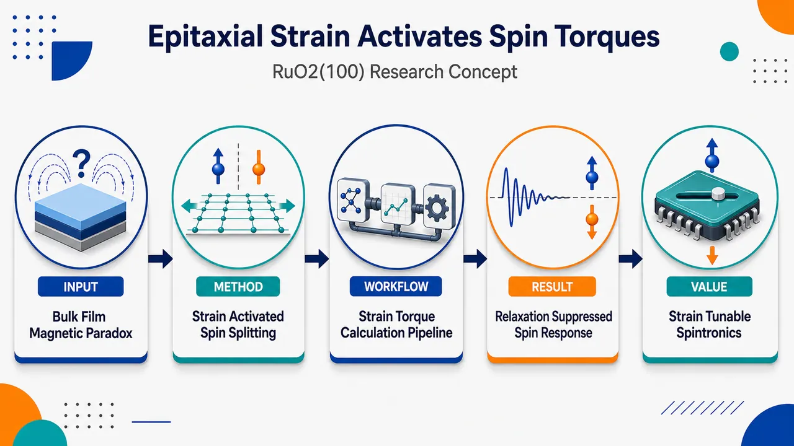
研究问题RuO₂为何在块体中近乎非磁，却在薄膜中出现类似交替磁性的对称性输运信号？核心问题是判定RuO₂的交替磁自旋劈裂究竟是块体本征性质，还是由薄膜外延应变激活的涌现磁性态。创新方法Aha点是把“RuO₂本征交替磁”改写为“外延应变稳定交替磁”。研究通过角分辨自旋力矩测量捕捉具有晶体对称性选择规则的自旋霍尔响应，并将其与晶格应变—弛豫状态直接关联；再用磁性测量中的增强矫顽力、交换偏置和第一性原理计算中的Néel序、自旋劈裂能带共同验证应变激活机制。工作流程以RuO₂(100)外延薄膜为对象，先制备处于应变保持与晶格弛豫不同状态的薄膜；再进行角分辨自旋力矩测量，观察电流诱导自旋霍尔响应的方向性和对称性；随后用磁性测量检查矫顽力增强和交换偏置是否只出现在应变薄膜中；最后用第一性原理计算模拟不同应变下Néel序和自旋劈裂电子结构，从实验信号追溯到应变调控的微观磁态。关键结果交替磁自旋劈裂相关的自旋霍尔响应在应变保持的RuO₂(100)薄膜中最强，随着晶格逐渐弛豫并接近块体结构，该响应被系统性抑制。增强矫顽力和交换偏置只在应变薄膜中出现。计算结果再现了应变驱动的Néel序与自旋劈裂电子结构演化，支持交替磁态由外延应变稳定而非块体天然存在。应用价值该研究为RuO₂块体与薄膜实验矛盾提供统一解释，并提示可通过外延应变、晶格畸变和薄膜弛豫控制交替磁自旋劈裂。其实际意义在于为无净磁化自旋电子器件、可调自旋霍尔源、应变工程磁性材料和低杂散场自旋力矩器件提供新的材料设计路线。第一部分：核心概览
RuO₂ 的交替磁性长期存在“块体近乎非磁”与“薄膜呈现对称性相关输运信号”的矛盾。该研究把矛盾归因于外延应变诱导的涌现态：RuO₂(100) 薄膜在应变保持时出现交替磁自旋劈裂、自旋霍尔响应、增强矫顽力与交换偏置；随晶格弛豫趋近块体极限，这些信号被抑制。实验角分辨自旋力矩与第一性原理计算共同支持“应变激活而非块体本征”的解释。
---
第二部分：结构化快速回顾
《Epitaxial Strain Activates Altermagnetic Spin-Splitting Torques in RuO2(100)》（None，）
背景
RuO₂ 的交替磁性本质仍有争议：块体实验显示其基态几乎非磁，而薄膜实验报告了与交替磁性一致的、受晶体对称性约束的输运特征。
方法
采用角分辨自旋力矩测量探测对称性选择的自旋霍尔响应；结合磁性测量评估矫顽力与交换偏置；使用第一性原理计算模拟应变下的 Néel 序与自旋劈裂电子结构演化。
结果
应变薄膜中出现最强的交替磁自旋劈裂相关自旋霍尔响应；随晶格弛豫接近块体极限，该响应逐渐减弱。增强的矫顽力和交换偏置仅在应变薄膜中出现。
讨论
RuO₂ 的交替磁自旋劈裂并非简单的块体内禀性质，而是由薄膜外延应变稳定的涌现磁性态。这一框架统一解释了块体与薄膜实验之间的长期不一致。
局限
可用材料仅含摘要与 arXiv 元数据，缺少正文、图表、样品结构、厚度序列、应变数值、统计误差、拟合参数、器件几何、测量温度、计算泛函与 U 值等细节，无法验证定量强度、重复性与模型依赖性。
结论
外延应变可激活 RuO₂(100) 中的交替磁自旋劈裂力矩，并伴随可测的磁性增强；晶格弛豫会使其向近乎非磁的块体极限回归。
---
第三部分：逐章节冷凝解析
可用原始内容仅包含 arXiv 页面信息与 Abstract，未包含完整 PDF 正文的章节标题、图表、实验方法、补充信息或参考文献。以下严格基于已提供文本，不虚构样本量、P 值、器件尺寸、材料厚度、应变百分比、温度、拟合参数或计算参数。
---
Abstract
#### RuO₂ 的交替磁性处于争议状态
RuO₂ 的核心科学问题是其是否具有真正的交替磁性。块体测量与薄膜测量给出相互张力很强的结论：块体更接近非磁基态，而薄膜中出现了符合交替磁性预期的对称性依赖输运信号。原文直接指出争议状态：*"The altermagnetic nature of rutile RuO2 remains under active debate"*；并明确矛盾两端：*"bulk measurements indicate a nearly nonmagnetic ground state, whereas thin-film studies have reported symmetry-dependent transport signatures consistent with altermagnetism."*
未给出块体测量类型、磁矩上限、薄膜厚度、输运信号幅值或统计显著性。
#### 核心命题是“应变稳定的涌现态”而非“块体内禀性质”
关键学术贡献在于把 RuO₂ 的交替磁自旋劈裂重新定义为应变稳定的涌现态。这一表述直接排除了“所有 RuO₂ 块体天然具有强交替磁性”的简单解释。原文给出中心判断：*"we provide experimental evidence that altermagnetic spin splitting in RuO2 is a strain-stabilized emergent state rather than an intrinsic bulk property."*
这里的逻辑重点是 strain-stabilized 与 emergent state：交替磁性并非无条件存在，而是在外延应变、薄膜结构或晶格畸变下被稳定下来。
#### 角分辨自旋力矩测量提供对称性选择证据
实验核心手段是角分辨自旋力矩测量，用于识别由交替磁自旋劈裂导致的对称性选择自旋霍尔响应。原文表述为：*"Angular-resolved spin-torque measurements reveal a symmetry-selected spin Hall response characteristic of altermagnetic spin splitting."*
该证据链的重要性在于：交替磁性不是简单依赖净磁化，而是依赖晶体对称性与动量空间自旋劈裂；因此角度依赖的力矩响应比单一电阻或磁化曲线更能区分普通自旋霍尔效应、界面 Rashba 效应与交替磁自旋劈裂效应。
未提供角度扫描范围、谐波霍尔测量公式、力矩分量分解、误差棒或样品数量。
#### 自旋霍尔响应随应变弛豫系统性减弱
交替磁相关信号在应变区域最强，并随晶格弛豫逐渐消失或减弱，这构成“应变激活”的关键因果证据。原文指出：*"which is strongest in the strained regime but progressively suppressed as the lattice relaxes toward the bulk limit."*
该结果说明，相关自旋信号不是由固定界面污染、常规金属自旋霍尔效应或不可控缺陷简单造成；若信号随晶格从应变态向块体态演化而系统性衰减，更符合结构调控电子磁态的解释。
未给出“strained regime”的定量定义，例如面内/面外晶格常数、弛豫比例、临界厚度或 XRD/RSM 数据。
#### 磁性测量显示应变薄膜具有增强矫顽力与交换偏置
除了自旋力矩响应，磁性测量还观察到只在应变薄膜中出现的增强矫顽力与交换偏置行为。原文表述为：*"Complementary magnetic measurements further reveal enhanced coercivity and exchange-bias behavior exclusively in strained films."*
这一结果强化了“应变稳定磁性态”的判断：coercivity 指磁滞回线中反转磁化所需场强，增强矫顽力通常意味着磁各向异性、畴壁钉扎或磁序增强；exchange bias 通常表现为磁滞回线沿磁场轴偏移，暗示铁磁/反铁磁或不同磁性相之间存在交换耦合。
未提供矫顽力数值、交换偏置场大小、测量温度、场冷条件、磁滞回线形状或训练效应。
#### 第一性原理计算复现实验观察的应变依赖演化
理论部分采用第一性原理计算，重现实验中应变调控的 Néel 序 与自旋劈裂电子结构变化。原文为：*"First-principles calculations reproduce the strain-dependent evolution of the Neel order and spin-split electronic structure, supporting the experimental observations."*
该句说明计算并非仅给出静态能带，而是关注应变如何改变反铁磁序参量或 Néel 构型，以及动量空间中的自旋劈裂。
未给出计算方法细节，包括 DFT 软件、交换关联泛函、SOC 设置、k 点网格、平面波截断能、U 值、磁构型能量差、局域磁矩大小或应变扫描范围。
#### 统一解释块体与薄膜观测差异
最终结论是 RuO₂ 中的交替磁自旋劈裂属于应变稳定的涌现现象，从而统一解释块体实验与薄膜实验之间的长期矛盾。原文总结为：*"Together, these results establish altermagnetic spin splitting in RuO2 as a strain-stabilized emergent state and provide a unified explanation for the long-standing discrepancy between bulk and thin-film observations."*
该框架具有较强领域意义：若成立，过去关于 RuO₂ 是否交替磁的争论需要从“材料本征属性”转向“结构边界条件、应变状态与薄膜弛豫路径”来重新评估。
---
第四部分：深度理解与语言支持
1. 术语解析
#### Altermagnetic spin splitting
Altermagnetic spin splitting 指交替磁体中在动量空间出现的自旋能带劈裂。它不同于铁磁体中的自旋劈裂，因为交替磁体通常可以具有零净磁化；也不同于普通共线反铁磁体，因为特定晶体对称性允许自旋上、下能带在 k 空间以交替方式分裂。语境中对应原文：*"altermagnetic spin splitting in RuO2"*。
#### Strain-stabilized emergent state
Strain-stabilized emergent state 的含义是：该磁性/电子态不是材料在无应变块体条件下必然存在的性质，而是在外延应变改变晶格常数、键角、轨道重叠和交换相互作用后被稳定下来。
emergent 强调由结构、界面或多体耦合产生的新态；stabilized 强调应变降低了该态的能量或提高其可观测性。
#### Symmetry-selected spin Hall response
Symmetry-selected spin Hall response 指自旋霍尔响应的方向、角度依赖或张量分量受到晶体磁对称性限制。普通自旋霍尔效应通常与强自旋轨道耦合和电流方向有关；这里的“symmetry-selected”暗示响应不是任意出现，而是符合交替磁 RuO₂ 的特定对称性选择规则。原文为：*"a symmetry-selected spin Hall response characteristic of altermagnetic spin splitting."*
#### Lattice relaxes toward the bulk limit
Lattice relaxes toward the bulk limit 指薄膜随厚度增加或外延约束减弱，晶格常数逐渐从受衬底强制匹配的应变态回到接近块体 RuO₂ 的自然晶格参数。这里不是指动态热弛豫，而是薄膜结构状态从“外延受限”向“块体-like”演化。原文为：*"as the lattice relaxes toward the bulk limit."*
#### Exchange-bias behavior
Exchange bias 通常指磁滞回线在磁场轴方向出现偏移，常见于铁磁/反铁磁界面或不同磁性相耦合体系。语境中其出现于应变 RuO₂ 薄膜，说明存在可产生单向各向异性或交换耦合的磁性组分。原文为：*"exchange-bias behavior exclusively in strained films."*
---
2. 疑难查证
#### 为什么“块体近乎非磁”与“薄膜交替磁”可以同时成立？
这两个结论不必互相排斥。交替磁性依赖晶体对称性、局域磁矩、交换相互作用和自旋轨道耦合共同决定。块体 RuO₂ 若处于能量上更稳定的近非磁态，就难以检测到强磁序；但薄膜外延在衬底上时，面内晶格常数被拉伸或压缩，Ru–O 键长、Ru–O–Ru 键角、d 轨道能级分裂和带宽都会改变。
如果应变增强了局域磁矩或改变了不同磁构型之间的能量差，原本不稳定或很弱的 Néel 序就可能被稳定。于是薄膜出现交替磁相关输运，块体仍显示近非磁行为。
#### 为什么角分辨自旋力矩比普通磁化测量更关键？
交替磁体的净磁化可能为零或极小，传统磁化测量可能难以直接识别其磁序。自旋力矩测量检测的是电流诱导自旋流或自旋极化对邻近磁层/磁矩施加的力矩；若这种力矩随晶体角度呈现特定对称性，就能反推出底层电子结构中的自旋劈裂与自旋霍尔张量特征。
换言之，磁化测量回答“有没有宏观磁性迹象”，角分辨自旋力矩回答“电流诱导自旋响应是否符合交替磁对称性”。
#### 为什么交换偏置能支持应变诱导磁性？
交换偏置通常需要某种稳定的磁性相互作用，例如反铁磁序与铁磁性组分之间的交换耦合。若只有非磁金属或普通顺磁态，通常不应出现清晰交换偏置。应变薄膜中专属出现交换偏置，说明应变可能诱导了磁有序、磁相分离、界面磁性或反铁磁背景中的非补偿磁矩。
但交换偏置本身并不能单独证明交替磁性；它只能支持“应变薄膜中存在磁性态”。交替磁性证据仍主要依赖对称性选择的自旋力矩与第一性原理能带结果。
#### 为什么“应变最强时信号最强，弛豫后信号减弱”是关键因果链？
如果信号来自测量伪影、器件几何或固定界面效应，那么它未必会随着晶格弛豫系统性衰减。若信号强度与应变状态相关，并在接近块体晶格时被抑制，就说明晶格结构是控制变量。
这一趋势把 RuO₂ 争议从“某些实验对、某些实验错”转化为“不同样品处于不同应变与弛豫状态，因此电子磁态不同”。
---
第五部分：创新评估与关联
1. 创新性判断
#### 从“本征交替磁”转向“应变诱导交替磁”
近年 RuO₂ 是交替磁体研究中的代表材料之一，但核心争议在于：块体实验往往未能确认强磁序，而薄膜输运实验却报告与交替磁性相符的信号。该研究的新颖性在于提出并验证中间图景：RuO₂ 的交替磁自旋劈裂不是简单的块体本征属性，而是由外延应变稳定的涌现态。
#### 把输运信号、磁性信号与晶格弛豫联系起来
过去薄膜研究容易面临一个问题：对称性相关输运信号可能来自界面效应、缺陷、普通自旋霍尔效应、磁性杂质或测量几何。这里的关键推进是把信号强度与应变—弛豫演化关联起来：应变区最强，趋近块体后被抑制。这种连续演化关系比单点样品测量更接近因果论证。
#### 角分辨自旋力矩提供更直接的自旋响应证据
相较于单纯电阻各向异性或异常霍尔类信号，角分辨自旋力矩更直接涉及电流诱导自旋流、自旋极化和力矩对称性。若响应张量符合交替磁自旋劈裂的选择规则，它对 RuO₂ 交替磁态的判别力更强。
#### 磁性测量补足“输运—磁序”之间的证据缺口
仅有输运异常并不能充分证明磁性态；增强矫顽力与交换偏置提供了独立磁性证据。尤其是交换偏置专属于应变薄膜，支持应变诱导磁性相或磁序增强，而不是块体 RuO₂ 普遍具有相同磁性。
#### 第一性原理计算连接结构调控与电子结构变化
第一性原理计算复现应变下 Néel 序 与自旋劈裂电子结构的演化，使实验现象获得微观机制支撑。创新点不只是“计算 RuO₂ 能带”，而是把应变作为控制参数，解释为何薄膜与块体观测不同。
#### 解决的前人未解问题
核心未解问题是：为什么 RuO₂ 在块体测量中接近非磁，却在薄膜中表现出交替磁相关输运特征？该研究给出的答案是：二者并非矛盾，而是对应不同结构边界条件；薄膜外延应变激活交替磁自旋劈裂，晶格弛豫后该态被削弱并回到近块体极限。
-
11
📊 含图深析
📄 摘要：使用尺度无关 Landau 势和预测性原子模拟，探索温度调制如何利用退极化场实现非电学极化。结果预言温度梯度可与应变耦合，诱导持久极性纹理，包括多畴态等。该策略把热驱动和静电边界条件结合，用于动态控制铁电态。
💡 亮点：温度调制可借助退极化场实现铁电非电极化，并在温度梯度与应变协同下稳定多畴极性纹理。该思路为铁电器件提供了不依赖外加电场的动态控制通道。
📖 展开分析 + 配图
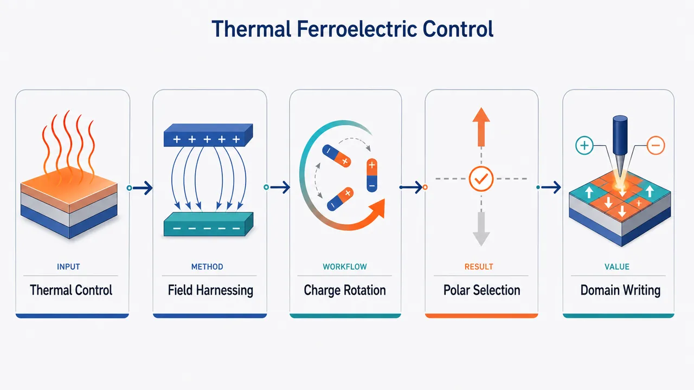
研究问题如何在不施加外电场的情况下，用空间温度调制控制铁电材料的极化方向、极轴选择和畴结构；核心物理是温度梯度是否能通过热释电极化梯度产生束缚电荷与退极化场，从而驱动偶极重构。创新方法把传统上需要抑制的退极化场转化为可编程驱动力：温度调制产生“冷热区极化差”，形成束缚电荷，退极化场惩罚平行于温度梯度的极化，迫使偶极旋转到垂直方向；若旋转受压缩应变限制，则诱导持久条纹畴。方法上用尺度无关 Landau 自由能模型与 PbTiO₃ 二次原理 Langevin 分子动力学交叉验证。工作流程输入为铁电 PbTiO₃ 或类钙钛矿铁电体，并施加一维冷热温度调制；热释电效应使冷热区自发极化大小不同，产生极化梯度；极化梯度形成束缚电荷 ρb = −∇·P 和内部退极化场；Landau 模型用 D∥ 连续条件计算电静力能，原子模拟用位置依赖 Langevin 温控验证；输出为偶极从 P∥ 旋转到 P⊥、冷却过 TC 时极轴被选中，或在压缩应变下形成可保留条纹畴。关键结果当 Tcold = 300 K 时，Thot 接近 700 K，即 ΔT 约 400 K，可触发平行极化失稳并旋转为垂直极化；Landau 相图与 10 × 10 × 20 超胞原子模拟相界几乎重合。冷却穿越 TC 时，ΔT = 50 K 使垂直极化选择概率达到 77%，ΔT = 100 K 提升到 97%；阶跃温度调制在 ΔT = 50 K 时可达 96%。在压缩应变 PbTiO₃ 中，Tcold = 100 K、Thot = 300 K 可生成温差撤去后仍存在的条纹畴。应用价值提供一种非电场、可逆、空间可编程的铁电控制路线，可用于热场写入极化方向、无电极极轴选择、畴纹理工程和低功耗铁电器件设计。由于机制主要依赖长程电静力相互作用，具有近似尺度无关性；结合 PbTiO₃ 较低热导率，约 50 nm 以上结构中 50 K 温差可维持数百皮秒，足以覆盖 20–50 ps 的偶极重构时间窗口。第一部分：核心概览（Overview）
温度空间调制被确立为一种非电场控制铁电态的机制：热释电效应产生极化梯度，极化梯度产生束缚电荷与退极化场，退极化场反过来驱动偶极旋转、极轴选择或畴结构形成。该工作用尺度无关的 Landau 模型与 PbTiO₃ 二次原理原子模拟相互验证，展示温度调制可实现非电极化写入，并可与压缩应变耦合生成持久条纹畴，为铁电动态调控提供了电场、应变之外的新路径。
---
第二部分：结构化快速回顾
《Harnessing electrostatics through temperature modulations to control ferroelectrics》（None，）
背景
铁电材料的动态控制通常依赖外电场或应变。温度调制提供另一种控制通道。由于所有铁电体都具有热释电性，空间温度梯度会诱导极化梯度，而极化梯度产生束缚电荷与退极化场，从而改变铁电极化取向。
方法
构建包含冷热两区的六阶 Landau 自由能模型，用 D∥ 连续条件引入电静力耦合；随后采用 PbTiO₃ 的二次原理原子势进行 Langevin 分子动力学模拟。模拟超胞为 10 × 10 × 20 个 5 原子钙钛矿单胞，时间步长 4 fs，每次运行 100 ps，丢弃前 50 ps 热化段。
结果
温度调制足够强时，平行于温度梯度的极化 P∥ 失稳并旋转为垂直极化 P⊥。在 Tcold = 300 K 时，接近 Thot ≈ 700 K、即 ΔT ≈ 400 K 可触发旋转。Landau 相图与原子模拟相界几乎一致。冷却穿越 TC 时，温度调制还能选择极轴方向：ΔT = 50 K 时选择垂直极化概率为 77%，ΔT = 100 K 时升至 97%。
讨论
该机制的核心不是局域热效应，而是长程电静力相互作用。即使原子模拟中的梯度高达约 100 K/nm，Landau 模型与纳米尺度模拟仍高度一致，说明效应近似尺度无关。PbTiO₃ 较低热导率约 4 W m⁻¹ K⁻¹ 有利于在纳米尺度维持足够长的温度差。
局限
模拟温度梯度远高于多数实验条件；热电效应未显式出现，可能与周期边界条件有关；Landau 模型使用的 PbTiO₃ 居里温度为 510 K，低于实验值 760 K；偶极重构需要温度调制至少维持 20–50 ps。
结论
温度调制可作为铁电非电控制手段，实现偶极旋转、极轴选择和持久极性纹理生成。该机制依赖温度诱导极化梯度产生的退极化场，只要温度调制持续时间足以允许电偶极重构，便可能在实验可达尺度上实现。
---
第三部分：逐章节冷凝解析（Section-by-Section Condensing）
Abstract
- Temperature modulation enables non-electrical ferroelectric control
温度调制被提出为动态控制铁电态的替代方法，不依赖外加电场直接翻转极化，而是通过热诱导电静力效应驱动铁电序参量改变。摘要直接给出核心定位：*"Temperature modulations provide an alternative method for dynamically controlling the ferroelectric state."* 该机制的学术价值在于将温度场从传统的均匀相变调参量提升为可空间编程的铁电控制变量。
- Depolarizing field is deliberately harnessed rather than avoided
传统铁电器件中，退极化场通常被视为削弱极化和稳定性的负面因素；该研究反向利用温度调制诱导的极化梯度，使退极化场成为驱动偶极旋转和极化重构的工具。摘要中的关键表述为：*"we use scale-independent Landau potentials and predictive atomistic simulations to explore how temperature modulation can harness the depolarizing field to obtain non-electrical poling."* 这里的 non-electrical poling 指无需外电场、仅通过温度空间分布实现铁电极化取向选择。
- Temperature gradients and strain can generate persistent polar textures
温度梯度不仅能控制单畴极化方向，还能与应变耦合生成稳定存在的多畴或极性纹理。摘要明确指出：*"temperature gradients can be combined with strain to induce persistent polar textures such as multidomain states."* 这一点把机制从瞬态偶极响应扩展到可保留的铁电结构写入。
---
Figure 1: Rotation of dipoles under a temperature modulation
- Pyroelectric gradients create destabilizing bound charges
图 1 给出机制图像：初始单畴铁电体中偶极等幅且沿竖直方向排列；施加同方向温度调制后，热释电效应导致极化大小随位置变化，从而产生束缚电荷。图注将该过程概括为：*"T-modulations and the pyroelectric effect leads to destabilising bound charges."* 物理关系由正文给出：ρb = −∇·P，即只要极化场存在散度，就产生束缚电荷。
- Dipole rotation removes the electrostatic penalty
若极化能够旋转，最自然的降低能量方式是使极化方向转为垂直于温度调制方向，使 ∇·P 贡献消失或显著减小。图注直接说明：*"Dipole rotation eliminates these bound charges."* 这意味着温度梯度并非简单削弱铁电性，而是通过退极化能选择更低电静力代价的极化方向。
- Compressive strain opens a domain-formation pathway
当偶极旋转被材料各向异性或外延约束禁止时，系统可通过形成畴来降低束缚电荷代价。图注指出：*"The inclusion of compressive strain promotes domain formation as another route to suppress the bound charge."* 因此机制存在两条分支：可旋转体系发生极化旋转；不可旋转或受限体系发生多畴化。
---
Main text
- Dynamic ferroelectric control is technologically and fundamentally important
铁电态动态控制具有基础物理与器件技术双重重要性。开篇明确指出：*"Dynamically controlling the state of ferroelectric materials is a challenge of fundamental and technological importance."* 已有主流控制方式包括外电场直接耦合极化，以及应变调控自由薄膜铁电体；相关表述为：*"The direct coupling of the polarization to an external electric field provides the most straightforward method for dynamical control, and even strain may offer a means for agile manipulation of freestanding ferroelectric membranes."*
- Spatial temperature modulation differs from homogeneous temperature tuning
温度通常作为均匀变量调节相变、极化强度或介电响应；该研究聚焦于空间温度调制。原句为：*"While temperature is usually varied homogeneously, there is promise for control via spatial temperature modulations (T-modulations), which will be our focus here."* 关键差别在于：均匀升温主要改变 Landau 势参数，空间调制额外引入 ∇P 与电静力代价。
- Pyroelectricity links temperature gradients to polarization gradients
铁电体普遍具有热释电性，因此温度梯度会导致极化梯度。正文表述为：*"The pyroelectric nature of all ferroelectrics means that a temperature gradient across a sample leads to an associated gradient in the polarization."* 这一因果链是整套机制的出发点：∇T → ∇P → ρb → depolarizing field → dipole reconfiguration。
- Earlier temperature-gradient experiments broadened ferroelectric phase transitions
1985 年对三甘氨酸硫酸盐晶体的温度梯度实验已观察到相变扩散化和介电峰展宽。具体历史证据为：*"This effect was first explored in 1985, when T-gradients were applied to ferroelectric triglycine sulfate crystals leading to a more diffuse phase transition and broader peak in the dielectric susceptibility."* 该研究将早期温度梯度效应从相变展宽推进到可设计的电静力控制。
- Compositionally graded ferroelectrics provide a related precedent
组成梯度同样可导致极化梯度，并产生内部电势与偏移滞回回线。正文指出：*"Similar effects have been obtained through compositional gradients, and various devices that make use of the internal potential (and shifted hysteresis loops) created by a polarization gradient, termed graded ferroelectric devices, have been proposed."* 与组成梯度相比，温度调制具有动态、可逆、外部可编程的优势。
- Laser-induced temperature gradients can write domains through thermoelectric effects
高强度移动激光可在 LiNbO₃ 中通过热电效应写入铁电畴。相关句子为：*"it has been shown that the T-gradient induced by a moving, high-intensity laser can write ferroelectric domains in LiNbO3 through a thermoelectric effect."* 当前机制与该路线不同：核心并非热电电压，而是由极化梯度自身产生的束缚电荷和退极化场。
- Polarization gradients inevitably produce bound charges and depolarizing fields
物理核心由电静力学约束给出：*"whenever there is a gradient in the polarization, bound charges (ρb = −∇·P) and the associated depolarizing field appear, suppressing polarization along the direction of the gradient."* 这说明沿温度梯度方向的极化分量 P∥ 会受到退极化场惩罚，而垂直分量 P⊥ 不产生同样的散度代价。
- Central hypothesis predicts rotation from parallel to perpendicular polarization
单畴铁电体初始极化沿竖直方向；若温度调制也沿竖直方向，极化大小沿调制方向变化，产生束缚电荷。正文描述为：*"When a T-modulation along the vertical direction is applied to the material, a polarization gradient emerges parallel to it, creating bound charges and a depolarizing field that penalizes the polarization oriented parallel to the gradient."* 因此可预期偶极转向垂直方向：*"Presumably, this should lead to a rotation of dipoles to be perpendicular to the T-modulation, so that the depolarizing field is eliminated."*
- Uniaxial ferroelectrics are expected to form domains instead of rotating
若材料为单轴铁电体，极化方向不可自由旋转，降低退极化能的途径变为畴化。正文表述为：*"If, on the other hand, we are dealing with a uniaxial ferroelectric, the dipole rotation is not a possibility and the material will presumably break into domains so the depolarizing field is reduced."* 这为后续压缩应变 PbTiO₃ 模拟中的条纹畴形成提供逻辑基础。
- The Landau model uses hot and cold regions with identical sixth-order potentials
概念验证从简化 Landau 模型开始，材料类比 PbTiO₃。体系由冷热两部分组成，每部分由六阶 Landau 势描述。原文说明：*"let us assume we work with a perovskite oxide like PbTiO3"*，以及样品包含：*"two identical parts essentially corresponding to the hot and cold regions."* 自由能包含二阶、四阶、各向异性交叉项和六阶项：
Fk = (A2 + A2′Tk)(Pk,⊥² + Pk,∥²) + A4(Pk,⊥² + Pk,∥²)² + A22Pk,⊥²Pk,∥² + A6(Pk,⊥² + Pk,∥²)³。
其中 k 区分冷热区域，Pk,⊥ 与 Pk,∥ 分别表示垂直和平行于温度调制方向的极化分量。
- Perpendicular and parallel components share coefficients before temperature modulation
模型假设无温度调制时两个极化方向由对称性等价，因此使用相同 Landau 系数。正文说明：*"These two components are identical by symmetry in the absence of a T-modulation, and so share the same Landau coefficients."* 各向异性选择不是预先写入模型，而是由温度调制诱导的电静力项自发产生。
- Electrostatic coupling enforces continuity of D∥ across the interface
冷热两区通过电位移平行分量连续性耦合。正文写道：*"We then couple the two parts with the requirement that D∥, the component of the electric displacement D parallel to the T-modulation, is continuous across the interface."* 对应电静力能为
Felec = xhot xcold / (2ε0) × (Phot,∥ − Pcold,∥)²。
该项只惩罚冷热区平行极化分量的差异，正是温度诱导束缚电荷的能量代价。
- The total free energy isolates electrostatics as the only coupling between hot and cold parts
总自由能为 F = xhot Fhot + xcold Fcold + 2Felec。正文强调：*"the two parts of our model system are coupled only through electrostatics."* 这使模型能够清楚检验单一机制：温度改变局域 Landau 势，冷热区极化差异再通过电静力场耦合。
- Boundary conditions correspond to perfect screening electrodes
模型沿温度调制方向采用周期边界条件。正文说明：*"Here we assume periodic boundary conditions along the T-modulation direction, which are equivalent to positioning the sample between two electrodes with perfect screening."* 该设定去除了宏观未屏蔽表面电荷的复杂性，使关注点集中在内部温度调制诱导的束缚电荷。
- PbTiO₃ Landau potential reproduces experiments but has a low modeled Curie temperature
Landau 参数来自 PbTiO₃ 的二次原理模拟。正文指出：*"This potential is derived from atomistic second-principles simulations and reproduces the experimental behavior of PbTiO3 very well except for a relatively low Curie temperature (510 K vs. the experimental value of 760 K) that is not critical for the present purposes."* 关键数值为模拟 TC = 510 K，实验 TC = 760 K。
- Landau phase diagram predicts paraelectric, perpendicular, and metastable parallel regimes
相图以 Tcold 和 ΔT = Thot − Tcold 为坐标。对于 Tcold > 510 K，体系为顺电态；对于 Tcold < 510 K，全局最低能量态为极化垂直温度梯度的 P⊥。正文表述为：*"For Tcold > 510 K our compound is in the paraelectric state. For Tcold < 510 K, the global minimum of the free energy corresponds to the state with the polarization perpendicular to the temperature gradient."* 平行态 P∥ 在小 ΔT 下仍是局域极小值：*"the state with the polarization parallel to the temperature modulation (P∥) is a local minimum of the free energy for sufficiently small values of ΔT."*
- A 300 K cold region requires approximately 400 K modulation to force rotation
具体示例中，若从 Tcold = Thot = 300 K 的竖直极化态出发，增加 Thot 后，平行极化在接近 Thot ≈ 700 K、即 ΔT ≈ 400 K 时被迫转向水平 P⊥。原文为：*"If we start from a configuration with a vertical polarization, e.g. for Tcold = Thot = 300 K, and then increase Thot, the polarization (P∥) is guaranteed to rotate toward the horizontal axis (P⊥) as we approach Thot ≈ 700 K (i.e., ΔT ≈ 400 K)."*
- Electrostatic coupling can maintain polarization above the local Curie temperature
在 P∥ 亚稳态中，热区即便 Thot > TC 仍可保持非零极化，因为冷区通过电静力耦合拉住热区极化。正文指出：*"the P∥ state involves a hot region that remains polarized even though Thot > TC, on account of the electrostatic coupling with the cold part."* 转换到 P⊥ 后，热区极化消失：*"Then, in the transformed state with P⊥, we have Phot = 0."*
- Rotation becomes easier near the bulk Curie temperature
当 Tcold 接近体相转变温度时，P⊥ 与 P∥ 边界向低 ΔT 倾斜，意味着更弱温度调制即可驱动旋转。正文表述为：*"the boundary between the regions with P⊥ and P∥ slopes downwards as Tcold approaches the bulk transition temperature and, consequently, the polarization rotation can be driven with a progressively weaker modulation."* 这显示临界软化会增强温度调控效率。
- Atomistic validation uses second-principles Langevin molecular dynamics
原子级检验采用与 Landau 势同源的二次原理 PbTiO₃ 势。正文写道：*"we use molecular dynamics (MD) simulations based on the atomistic second-principles potential from which our Landau model for PbTiO3 was derived."* 模拟类型为 Langevin MD，超胞为 10 × 10 × 20 个 5 原子钙钛矿单胞，极轴沿 z：*"we run Langevin MD in supercells that are a 10 × 10 × 20 repetition of the elemental 5-atom perovskite cell, and with the polar axis along the z direction."*
- Temperature modulation is implemented atom-by-atom in the Langevin thermostat
每个原子被赋予位置依赖温度 Ti，Langevin 方程写为
mi d²ri/dt² = ∇U(ri) − γ mi dri/dt + √(2miγkBTi) ηi(t)。
原文说明：*"To implement the temperature modulation, we adapt the Langevin equation of motion by assigning a temperature Ti to the ith atom."* 阻尼常数在图 3 中给出为 γ = 1000 fs⁻¹：*"using Langevin molecular dynamics with damping constant of γ = 1000 fs−1."*
- The imposed temperature profile is sinusoidal along z
温度调制为正弦形式，极小值和极大值位于超胞高度的四分之一与四分之三处。原文给出：*"We apply a sinusoidal modulation with extrema T(z = Lz/4) = Tcold and T(z = 3Lz/4) = Thot, where Lz is the vertical dimension of our simulation supercell."* 这保证周期边界条件下温度场连续。
- MD protocol uses 100 ps runs and 4 fs time steps
每个温度点先以 Thot = Tcold 运行，再逐步增加 Thot。具体数值为：*"running MD for 100 ps with a 4 fs timestep."* 数据处理为：*"We ignore the first 50 ps to account for thermalization, and extract the averages of the polarizations and strains from the remaining 50 ps."* 后续每次从上一轮最终结构继续，保持 Tcold 固定并增加 Thot。
- Sufficient temperature modulation destroys P∥ and simultaneously creates P⊥
MD 结果与 Landau 图像一致：每个 Tcold 下，足够大的 ΔT 都会使 P∥ 消失，同时 P⊥ 出现。正文写道：*"For each Tcold, a large enough modulation forces the rotation from P∥ to P⊥."* 图 3 的证据为：*"P⊥ appears as soon as P∥ vanishes, confirming the essential picture discussed above from our simple Landau model."*
- Landau and atomistic phase boundaries nearly coincide
从 MD 提取的 P⊥/P∥ 相界与 Landau 相图叠加后高度一致。正文表述为：*"Our nanoscale atomistic simulations are in near perfect agreement to the scale-independent Landau model."* 差异主要出现在高温区：*"differing only at high temperatures where increased thermal fluctuations allow rotation before the vanishing of the P∥ minimum."* 这说明热涨落可提前跨越 Landau 势垒。
- Atomistic simulations confirm polarized hot regions above TC
MD 同样验证了热区温度高于居里温度仍保持平行极化的可能性。正文指出：*"our atomistic simulations confirm the possibility of having states with P∥ ≠ 0 for Thot > TC, on account of the electrostatic coupling with the cold part."* 这是电静力长程耦合导致的非局域相稳定现象。
- Simulated gradients are large but the mechanism is argued to be scale-free
原子模拟中温度梯度约为 100 K/nm，实验上偏高。正文承认：*"the gradients considered in our atomistic simulations are very large to be of practical relevance, as they reach values of the order of 100 K/nm."* 但 Landau 模型与原子模拟一致说明电静力机制不依赖具体长度尺度：*"electrostatic effects like these can be expected to be scale free, and should apply for experimentally accessible T-modulations."*
- Cooling through TC under temperature modulation selects the polar axis
温度调制可用于相变过程中选择极轴方向。实验设计为：*"we cool down our system through TC while subject to a T-modulation"*，并预期：*"we should be able to favor the polar axis perpendicular to said modulation."* 操作上，降低 Tcold 穿越 TC，保持固定 ΔT，每次降温前允许平衡，在 475 K 处测量偶极取向：*"Once sufficiently below the transition temperature (at 475 K), we measure the orientation of the electric dipoles."*
- Statistical tests show strong non-electrical polar-axis selection
每个 ΔT 重复 100 次以获得统计意义。原文为：*"we repeat this experiment 100 times for each ΔT considered."* 结果显示 ΔT = 50 K 时，极化垂直温度调制的概率为 77%，高于随机预期 66%：*"for ΔT = 50 K, the probability to observe the polarization perpendicular the T-modulation is 77 %, significantly higher than 66 % expected from random chance."* 当 ΔT = 100 K 时概率升至 97%：*"This probability increases monotonically with increasing ΔT, reaching 97 % for ΔT = 100 K."*
- Sharper gradients enhance polar-axis selection
温度场形状也会影响选择效率。正文指出：*"T-modulations involving steeper gradients enhance this effect; in particular, a sharp step-like modulation yields a probability of 96 % for ΔT = 50 K."* 这表明在相同温差下，更大的局域 ∇T 能产生更强极化梯度和退极化场驱动力。
- Constrained PbTiO₃ mimics uniaxial or strained ferroelectrics
为测试不能旋转时的畴化路径，模拟中固定面内晶格矢量，强迫 PbTiO₃ 保持竖直极化。正文说明：*"we can mimic this situation by fixing the in-plane lattice vectors of the simulation supercell so that our simulated PbTiO3 is forced to present a vertical polarization."* 物理对应包括 LiNbO₃ 这类单轴材料，以及受面内压缩应变的 PbTiO₃ 薄膜：*"This could be the case of uniaxial materials like LiNbO3, and a similar situation pertains to ferroelectric perovskite thin films, e.g. of PbTiO3, subject to an in-plane compressive strain."*
- The chosen in-plane lattice constant corresponds to PbTiO₃ on SrTiO₃
面内晶格常数取模型中铁电 PbTiO₃ 体相值 3.94 Å。原文为：*"A natural choice is to use the in-plane lattice constants of bulk PbTiO3 in the ferroelectric phase (3.94 Å according to our model)."* 该约束近似对应实验上 PbTiO₃ 在 (001) SrTiO₃ 衬底上的外延生长：*"which corresponds approximately to the experimental case of growing a PbTiO3 thin film on a (001) SrTiO3 substrate."*
- Temperature modulation plus compressive strain creates persistent stripe domains
在面内约束下施加正弦温度调制，参数为 Tcold = 100 K、Thot = 300 K，观察到电条纹畴形成，并在温差降低后保持。正文写道：*"subject to a sinusoidal temperature modulation with Tcold = 100 K and Thot = 300 K: we observe the formation of electric stripe domains which persist as the temperature difference is reduced."* 图注强化该结果：*"The combination of compressive strain and T-modulations lead to formation of persistent stripe domains in PbTiO3."* 以及：*"they demonstrate that the stripe domains persist even when the temperature modulation vanishes."*
- Dipole reorientation requires the modulation to persist for tens of picoseconds
温度调制必须持续到偶极重构完成。正文给出时间尺度：*"the temperature modulation must be present for at least the amount of time it takes for the dipole reorientation to be complete - about 20-50 ps in our simulations."* 这为实验激光加热、热脉冲或纳米热场设计提供最低时间约束。
- Thermal diffusion estimates suggest nanoscale feasibility above 50 nm
使用 PbTiO₃ 热导率约 4 W m⁻¹ K⁻¹，一维热方程估算得到：线性尺寸大于 50 nm 时，约 50 K 温差可维持超过数百皮秒。正文表述为：*"Using the thermal conductivity of PbTiO3 (approximately 4 Wm−1K−1) and solving a one-dimensional heat equation, we estimate that a linear dimension greater than 50 nm is required for temperature differences of approximately 50 K to persist for longer than a few hundred picoseconds."* 因此在纳米尺度仍可行：*"thanks to the relatively low thermal conductivity of ferroelectric oxides, it seems viable to obtain the effects discussed here even in the nanoscale regime."*
- BaTiO₃ temperature-gradient experiments may already contain this physics
2023 年 BaTiO₃ 温度梯度相变实验中，ΔT = 10 K 的空间温度调制影响相变行为。正文指出：*"our calculations of temperature induced dipole rotation may shed light on recent results on how spatial temperature modulations (with a ΔT = 10 K) impact the ferroelectric phase transition in BaTiO3."* 实验中靠近热源处为顺电态，向冷端过渡到四方相且极化垂直温度调制：*"as the colder heat sink is approached, the structure transitions to a tetragonal phase with the polarization perpendicular to the T-modulation, which is clearly reminiscent of the phenomena described here."*
- Parallel alignment near the heat sink may reflect thermoelectric effects absent here
BaTiO₃ 实验还观察到靠近冷端的平行取向。该研究将其归因于可能的热电效应，而非当前模拟的退极化机制。正文表述为：*"the authors also find an alignment parallel to the T-modulation close to the heat sink. This probably reflects a thermoelectric effect that seems absent in our present simulations, potentially on account of our using periodic boundary conditions."* 这提示真实实验中退极化场机制可能与热电场机制竞争。
- Temperature modulation controls dipole orientation, polar-axis selection, and persistent textures
结论将三类结果统一：偶极重取向、极轴选择和持久纹理生成。原文总结为：*"temperature modulation can be an effective method to control the ferroelectric state, allowing for the reorientation of electric dipoles, the selection of a particular polar axis or the creation of persistent polar textures in simple systems."* 控制目标覆盖从单畴方向到多畴结构的多个层级。
- Long-range electrostatics makes the mechanism largely independent of sample size and modulation details
机制依赖长程电静力，而非特定纳米几何。结论指出：*"the results discussed here depend on long range electrostatic interactions and are largely independent of the size of the sample and details of the temperature modulation."* 成立条件是温度调制维持足够久：*"they should apply as long as the temperature modulation can be sustained for long enough time to allow for the reconfiguration of the electric order."*
- Data availability and funding are specified
数据公开可得，DOI 为 10.5281/zenodo.20826820。原文为：*"The data used in this work is publicly available and can be found at 10.5281/zenodo.20826820."* 经费来自 Luxembourg National Research Fund 的 INTER/ANR/24/18960894/TOPOTHERM 与 INTER/NSF/24/18804122/PIEZOHAFNIA。
---
References
- The conceptual lineage spans temperature gradients, graded ferroelectrics, strain, and laser domain writing
参考文献显示该研究连接四条已有脉络：温度梯度铁电相变实验、组成梯度铁电器件、应变调控铁电薄膜、激光热写入铁电畴。核心前史包括 Strukov 与 Davtian 1985 年 TGS 温度梯度研究，题名为 *"Study of dielectric, elastic and pyroelectric properties of tgs crystals placed in nonequilibrium conditions"*；组成调制工作包括 Choudhury 等 Nature 2011：*"Geometric frustration in compositionally modulated ferroelectrics"*；激光写畴包括 Xu 等 Nature 2022：*"Femtosecond laser writing of lithium niobate ferroelectric nanodomains."*
- The modeling foundation relies on second-principles and machine-learning Landau potentials
PbTiO₃ 的原子势与 Landau 势来自二次原理建模传统。关键参考包括 Wojdeł 等 2013：*"First-principles model potentials for lattice-dynamical studies: general methodology and example of application to ferroic perovskite oxides"*，以及 Pulzone 等 2025：*"Machine learning landau free-energy potentials for third-principles simulations."* 这说明模型不是经验性相图拟合，而是从原子级有效哈密顿量/势能面推导。
---
第四部分：深度理解与语言支持（Understanding & Nuance）
1. 术语解析
- Depolarizing field（退极化场）
指由未补偿束缚电荷产生、方向通常反对原有极化的内部电场。语境中不是表面电荷主导，而是温度调制诱导的内部极化梯度产生 ρb = −∇·P。微妙之处在于：退极化场通常被视为有害，但这里被“harnessed”，即被主动利用来控制铁电态。
- Bound charges（束缚电荷）
不是自由载流子，而是极化场空间变化造成的等效电荷。若极化沿 z 方向且大小随 z 改变，则 ∂Pz/∂z ≠ 0，出现体束缚电荷。若极化转到 x 或 y 方向，而温度只沿 z 变化，则 ∇·P 可显著降低，电静力能下降。
- Non-electrical poling（非电极化取向化 / 非电场极化写入）
“Poling” 通常指用外电场使铁电畴或极化方向排列。这里的 non-electrical poling 指不施加外电场，而用温度调制通过退极化场间接选择极化方向。它不是“没有电学效应”，而是“不靠外加电场”。
- Scale-independent Landau potentials（尺度无关 Landau 势）
Landau 自由能不显式依赖样品绝对尺寸，只依赖极化、温度和体积分数等变量。若主导项是长程电静力能，则从纳米模拟推得的相界可外推到更大尺度。需要注意：尺度无关不等于热扩散、缺陷、边界条件也无关；实际实验仍受热保持时间和电极屏蔽影响。
- Persistent polar textures（持久极性纹理）
指温度调制撤去后仍保留的空间极化结构，如条纹畴。这里的“persistent”强调不是温度梯度存在时的瞬态响应，而是经过热-电静力路径写入后可在低温或约束条件下稳定存在的畴结构。
2. 疑难查证
- 为什么温度梯度会让偶极旋转，而不是只让热区极化变小？
热区温度升高确实会使局域自发极化减小。若极化方向平行温度梯度，例如 P = Pz(z) ẑ，则 ∇·P = ∂Pz/∂z 不为零，产生束缚电荷和退极化场。退极化场能量可写成近似惩罚项 (Phot,∥ − Pcold,∥)² / 2ε0。若极化改为垂直温度梯度，例如 P = Px(z) x̂，即使极化大小仍随 z 变化，也有 ∇·P = ∂Px/∂x + ∂Py/∂y + ∂Pz/∂z；在理想一维调制中 Px 只随 z 变而不随 x 变，因此 ∂Px/∂x = 0，且 Pz = 0，束缚电荷大幅消失。旋转不是热效应本身，而是电静力能最小化的结果。
- 为什么热区温度高于 TC 还能有极化？
单独热区若 T > TC 应为顺电态。但冷热区通过 D∥ 连续性和退极化场耦合；若冷区仍有强极化，平行极化差异会产生巨大电静力代价。为了减少 Phot,∥ − Pcold,∥，热区被迫保留一部分极化。这类似近邻铁电区通过长程电场“拖拽”顺电区出现诱导极化，而非热区自身仍处于稳定铁电相。
- 为什么压缩应变会导致条纹畴，而不是旋转到垂直方向？
PbTiO₃ 在面内压缩应变下通常偏好 out-of-plane 极化，即垂直薄膜面的 c 相。面内晶格被固定后，极化旋转到面内方向需要付出较大弹性能和晶体各向异性能。此时系统无法通过整体旋转消除束缚电荷，只能让上/下极化或不同畴区域交替排列，使宏观散度和退极化场降低。条纹畴是受限极化体系的电静力妥协解。
- 为什么随机选择垂直极化的概率是 66%？
在立方/近似各向同性相变进入四方铁电相时，可能极轴有三个等价笛卡尔方向：x、y、z。若温度调制沿 z，则垂直方向有两个选择 x 和 y，平行方向有一个选择 z。因此随机概率为 2/3 ≈ 66%。观察到 77% 或 97% 表明温度调制显著偏置了极轴选择。
---
第五部分：创新评估与关联（Synthesis & Novelty）
1. 创新性判断
- 从“温度影响铁电相变”推进到“温度空间调制可主动控制极化方向”
过去 2–5 年内，铁电温度梯度研究更多关注相变位置、局部结构、热电响应或激光热写入。该研究的新增点是把 ∇T 诱导 ∇P，再由退极化场驱动极化重构 建立为明确、可计算、可预测的控制机制。
- 把退极化场从负面约束转化为功能性驱动力
传统铁电器件设计常通过电极屏蔽、畴结构或几何设计抑制退极化场。该研究反其道而行，把温度诱导的退极化场作为可编程驱动力，用于非电极化写入、极轴选择和畴纹理生成。这是概念层面的关键创新。
- Landau 模型与原子模拟跨尺度闭合验证
简化 Landau 模型预测的相界与 10 × 10 × 20 超胞二次原理 MD 几乎一致，说明机制并非小体系数值伪影。尤其是原子模拟梯度约 100 K/nm，仍与尺度无关模型吻合，为实验尺度外推提供了理论支撑。
- 提出非电场极轴选择的统计证据
冷却穿越 TC 时，温度调制显著偏置极化方向：ΔT = 50 K 时垂直极化概率 77%，ΔT = 100 K 时 97%，阶跃调制 ΔT = 50 K 时 96%。这解决了前人较少处理的问题：如何在不施加外电场的情况下，在相变过程中选择铁电极轴。
- 温度调制与应变耦合生成可保留畴结构
对压缩应变 PbTiO₃ 的模拟显示，Tcold = 100 K、Thot = 300 K 的温度调制可产生条纹畴，并在温度调制消失后保持。相较于瞬态热响应或激光诱导局部翻转，这提供了一条“热场写入—应变锁定—纹理保留”的新路线。
- 明确实验可行性的时间-长度窗口
偶极重构时间约 20–50 ps；热导率约 4 W m⁻¹ K⁻¹；线性尺寸大于 50 nm 时，50 K 温差可维持数百皮秒。这些估算把机制从概念模拟推进到可实验设计的参数区间。
- 未完全解决的问题
实验中真实温度梯度可能同时诱导热电场、载流子迁移、缺陷重排和非理想边界屏蔽。周期边界条件下热电效应缺失，导致与 BaTiO₃ 温度梯度实验中靠近热沉的平行取向尚不能统一解释。未来关键问题是区分并耦合 退极化场机制 与 热电机制，以及在真实薄膜、电极、衬底和缺陷环境中验证可重复写入。
-
12
📄 摘要：在铁电绝缘体中通过多谐波锁相热成像测量交流电场下的温度变化，发现由束缚电荷而非移动载流子导致的热电效应。温度梯度随场诱导位移电流变化，表现为介电材料中的 Peltier 效应；在铁电-顺电相变附近，系数超过 100 V。
💡 亮点：铁电绝缘体中束缚电荷位移电流可产生类 Peltier 热电响应，相变附近系数超过 100 V。该结果把热电效应从导电载流子体系扩展到极化动力学主导的介电材料。
📖 展开分析 + 配图
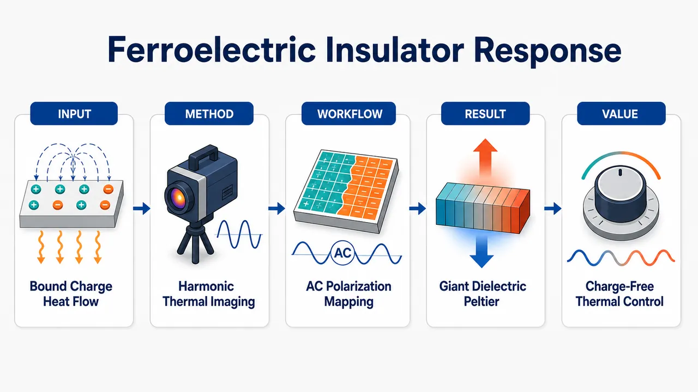
研究问题绝缘铁电体中没有可移动电子/离子传导时，交流电场驱动的极化翻转与束缚电荷位移电流是否能像导体中的 Peltier 效应一样产生定向热流和空间温度梯度。创新方法用多谐波锁相热成像把两种热信号拆开：一阶谐波显示左右电极边缘一热一冷的介电 Peltier 温度梯度，二阶谐波显示全表面均匀的电热效应；再同步 Sawyer–Tower 测量极化与位移电流，证明热流跟随 ∂tP 而非泄漏电流。工作流程制备高绝缘 Ba₀.₈Sr₀.₂Ti₀.₉₉₈Mn₀.₀₀₂O₃ 铁电矩形电容器 → 两侧 Au 电极施加 0–60 Hz 交流电场并周期性翻转极化 → 红外锁相热成像采集 1f/2f 温度图 → Sawyer–Tower 电路同步记录 P–E 回线和位移电流 → 用一维热扩散模型拟合边缘温度剖面 → 提取 Peltier 热流和复数介电 Peltier 系数 Πp。关键结果一阶热图在两侧电极边缘呈相反符号，形成吸热/放热对；二阶热图在样品表面近似均匀。低频极限边缘温差消失且电导率低于 10⁻⁸ S/m，排除移动载流子热电效应。室温 Πp ≈ −28.3 + 9.4i V，相变附近 Tm ≈ 340 K 时 |Πp| 超过 100 V，比金属/半导体典型 Peltier 系数高约三个数量级。应用价值证明动态铁电极化、畴壁运动或软模涨落可作为绝缘体中的能量输运载体，为无需移动电荷的定向热管理、交流驱动热泵、铁电热控制器和电热制冷性能评估提供新物理机制。第一部分：核心概览
这项研究首次用多谐波锁相热成像在铁电绝缘体 Ba₀.₈Sr₀.₂Ti₀.₉₉₈Mn₀.₀₀₂O₃ 中清晰观测到由束缚电荷/极化位移电流驱动的介电 Peltier 效应，将热电效应从传统的可移动电子、离子和自旋输运扩展到铁电极化动力学。实验通过一阶谐波分离 Peltier 温度梯度、二阶谐波分离电热效应，证明热流与 ∂ₜP 相关而非泄漏电流相关。提取的 Peltier 系数在相变附近超过 100 V，比金属/半导体典型值高约三个数量级，提示铁电畴壁运动或软模涨落可成为绝缘体能量输运的新载体。
---
第二部分：结构化快速回顾
《Thermoelectric response of a ferroelectric insulator》（None，）
背景
传统热电效应依赖可移动电荷；自旋 Seebeck 效应已证明绝缘磁体中也可发生热-电/自旋转换。核心问题转向：电极化运动是否也能驱动定向热流。理论曾预测介电热电效应，但缺乏决定性实验证据。
方法
采用 Sr 掺杂 BaTiO₃ 铁电陶瓷，制成平面电容器，在 300–390 K、0–60 Hz 交流电场下反复翻转极化。使用多谐波锁相热成像区分一阶谐波 Peltier 响应与二阶谐波电热效应，并同步用 Sawyer–Tower 电路测量极化和位移电流。
结果
一阶谐波温度信号集中于两侧电极边缘且符号相反，显示一侧吸热、一侧放热；二阶谐波信号在样品表面近似均匀，符合电热效应。室温下提取 Πₚ ≈ −28.3 + 9.4i V；相变温度 Tₘ ≈ 340 K 附近 |Πₚ| > 100 V。
讨论
低频极限温度梯度消失、样品电导率低于 10⁻⁸ S/m，排除传统载流子热电效应。Peltier 响应在相变附近增强，说明介电涨落、软声子/ ferron 模式、畴壁动力学可能参与热流生成。
局限
微观机制尚未建立；实验处于非线性驱动区，Peltier 系数依赖电场幅值；线性 Onsager 分析只在接近临界温度和小极化扰动时严格适用。
结论
铁电绝缘体中的动态极化可作为能量输运载体，产生巨大的介电 Peltier 响应，为不依赖移动电荷的热管理器件提供新物理机制。
---
第三部分：逐章节冷凝解析
Abstract
Bound charges produce thermoelectricity in an insulator
核心发现是束缚电荷而非移动载流子可产生热电响应。传统热电效应依赖电子或离子输运，但该体系中热电信号来自铁电极化变化，即位移电流。摘要明确指出：*"we report thermoelectricity caused by bound charges in the form of temperature changes measured by multi-harmonic lock-in thermography of a ferroelectric under an ac electric field."* 这一定义将热电效应的载体从mobile charges扩展到bound charges。
Temperature gradient tracks displacement current
观测到的温度梯度与电场诱导的位移电流相关，而非与直流导电电流相关。关键表述为：*"The observed temperature gradient depends on the field-induced displacement current, a Peltier effect in a dielectric material."* 这说明热流由 ∂ₜP 驱动，是介电材料中的 Peltier 效应。
Peltier coefficient exceeds conductor values by orders of magnitude
相变附近的介电 Peltier 系数超过 100 V，远大于普通导体热电材料的毫伏量级。摘要给出量级判断：*"Its coefficient exceeds 100 V around the ferroelectric-paraelectric phase transition, which is several orders of magnitude greater than reported values in conductors."* 这一数值是论文最强的定量创新点。
Functional implication is directional heat transport in ferroelectrics
铁电材料不仅能通过电热效应产生整体温度变化，还能通过极化动力学产生定向热输运。摘要结论为：*"Our findings uncover previously hidden functionalities of ferroelectric materials for thermal management by directional heat transport in ferroelectrics."* 这使铁电绝缘体成为热管理材料的新候选体系。
---
Main text
Thermoelectricity no longer requires mobile charges
热电效应通常由 Seebeck 和 Peltier 效应定义：温度梯度产生电压，电荷流携带热流。开篇强调传统认识：*"Thermoelectric effects are fundamental transport phenomena that enable the interconversion between heat and electricity by the Seebeck and Peltier effects"*，并指出该认识长期与可移动电荷绑定：*"The belief that thermoelectric effects depend on mobile charges was overturned by the discovery of the spin Seebeck effect."* 自旋 Seebeck 效应证明磁绝缘体中无需移动电子也能发生热-自旋转换，为介电热电效应提供概念先例。
Spin caloritronics motivates polarization caloritronics
自旋 Seebeck 效应通过集体磁化动力学产生自旋流：*"a temperature gradient drives a spin current via the collective magnetization dynamics that does not require mobile electrons."* 这一突破催生 spin caloritronics：*"This breakthrough launched the field of “spin caloritronics” and the use of magnetic insulators for thermal engineering."* 类比问题自然转向铁电材料：磁化动力学能输运热，那么电极化动力学是否也能输运热。
Central question is whether polarization motion drives heat flow
核心科学问题被明确表述为：*"can the motion of electric polarization also drive a directed heat flow?"* 过去已有理论预测，但缺少决定性实验：*"thermoelectric consequences of the polarization dynamics in dielectrics have been predicted, but never conclusively observed."* 因此，这项工作的定位是填补介电极化动力学热输运实验验证的空白。
Electrocaloric and pyroelectric effects are equilibrium-like but distinct
外电场可诱导或调制绝缘体中的宏观极化 P，导致电热效应：*"An electric field E applied to electric insulators generates or modulates a macroscopic polarization P by inducing or aligning electric dipoles, giving rise to a uniform temperature change through the electrocaloric effect."* 其倒易过程是热释电效应：*"the pyroelectric effect, refers to changes in the temperature T due to modulation of P."* 这里强调 ECE 主要导致均匀温度变化，不同于 Peltier 效应导致的空间温度梯度。
Non-equilibrium Onsager framework defines dielectric thermoelectricity
研究对象是非平衡输运：*"we address non-equilibrium transport phenomena, such as charge and heat currents under electric fields and temperature gradients in a planar ferroelectric capacitor."* 线性响应矩阵写为电流密度和热流密度对有效电场与温度梯度的响应，其中 jc = ∂ₜP。原文定义：*"where jc = ∂tP, the time derivative of the polarization P, is the displacement or shift charge current density."* 这将极化动力学形式化为电流源。
Onsager reciprocity links dielectric Peltier and thermopolarization
理论框架要求交叉响应系数满足 Onsager 倒易关系：*"Onsager reciprocity demands equal thermoelectric coefficients L12 = L21."* 介电 Peltier 热流定义为：*"jq|∂xT=0 = jq(Π) = Πpjc = Πp ∂tP is the heat current driven by the displacement current or “dielectric Peltier effect”."* 倒易效应是热极化：*"its reciprocal is the rate of change of the thermopolarization P = χT ∂xT|Eeff=0."* 因而 Πₚ 与传统导体 Peltier 系数 Πc 同单位，均为伏特。
Experimental strategy separates Peltier and electrocaloric harmonics
实验采用多谐波锁相热成像，在交流电场下把不同热效应分离到不同频率通道：*"multi-harmonic lock-in thermography (LIT) ... enables clear separation of Peltier and ECE signals at different harmonic frequencies under an alternating electric field."* 一阶谐波对应 Peltier 温度梯度，二阶谐波对应电热效应均匀温升/降温。
Material choice tunes phase transition into accessible temperature range
母体材料选择 BaTiO₃，因其铁电性质清楚：*"We chose the well-understood material BaTiO3 as a parent compound."* 通过 Sr 合金化调节相变温度：*"Its phase transition can be tuned into the temperature range accessible to our equipment (300–390 K) by alloying it with Sr (Ba0.8Sr0.2TiO3)."* 同时加入小浓度补偿施主/掺杂以改善绝缘性。
Planar capacitor geometry enables spatial thermal imaging
样品制成矩形条，两侧边面沉积 Au 电极：*"We fabricated a planar capacitor by depositing Au electrodes on the edge faces of rectangular bars."* 施加低频交流电场：*"Eext(t) = E0 sin(2πft) with f ∈ [0, 60] Hz"*，电场幅值足以在每个周期完全翻转极化：*"with amplitude E0 that is large enough to fully revert the polarization P during each cycle."*
First harmonic identifies dielectric Peltier response
电热效应不区分极化方向，因此出现在 2f：*"The ECE is sensitive to the magnitude but not the direction of P and therefore oscillates with frequency 2f."* Peltier 热流与有效电场/位移电流方向相关，因此贡献到 1f：*"the heat current and the resultant temperature gradient generated by the dielectric Peltier effect is proportional to Eeff(t) and contributes to the first harmonic (1f)."* 这是整个实验设计的判别基础。
Electrocaloric signal is spatially uniform whereas Peltier signal is edge-localized
电热效应导致整体均匀温度变化：*"the ECE only causes uniform temperature changes."* 介电 Peltier 效应因热流在电极边界处散度有限，在边缘产生热源/热汇：*"the sample edges are heat sinks and sources due to the finite divergence of the Peltier heat current."* 由此形成非均匀温度分布，而非全样品同步温变。
Room-temperature LIT images show opposite edge heating and cooling
在 E₀ = 1 kV/mm、f = 10 Hz、T = 300 K 下，一阶谐波信号出现在左右边缘：*"Figures 2E and F expose the thermal LIT profiles at the first (1f) and second (2f) harmonic under E0 = 1 kV/mm, f = 10 Hz, and T = 300 K."* 一阶谐波两边符号相反：*"Their opposite sign indicates heating of one edge and cooling of the other—the hallmark of the Peltier effect."* 这直接支持定向热流解释。
Second harmonic confirms electrocaloric origin
二阶谐波响应在整个表面均匀：*"the second harmonic (2f) response caused by the electrocaloric effect (ECE) is uniform across the entire surface as expected."* 这与一阶谐波边缘局域响应形成强对照，说明两种热效应被频域和空间分布同时分离。
Sawyer–Tower measurement confirms ferroelectricity and low coercivity
同步极化测量显示 300 K 下材料为铁电体：*"The observed P-E hysteresis in Fig. 2G proves that the material is ferroelectric at 300 K."* 矫顽场较小，为 0.11 kV/mm：*"with a small coercivity of 0.11 kV/mm."* P-E 回线关于原点点对称，排除残余极化污染一阶谐波：*"Its point symmetry with respect to the origin indicates that the 1f signals are not contaminated by residual poling effects."*
Polarization dynamics are dominantly first harmonic
极化随时间主要以一阶频率振荡：*"P(t) oscillates mainly at frequency 1f."* 高次谐波分量低于 0.1%：*"with higher harmonic components accounting for less than 0.1%."* 热图像中三阶及更高谐波也很弱：*"the third and higher harmonic components in the LIT signals are very weak."* 这支持用一阶位移电流解释一阶温度梯度。
Frequency dependence rules out leakage-current thermoelectricity
低频 f < 1 Hz 时边缘温差趋零：*"ΔTedge(1f) → 0 at low frequencies (f < 1 Hz) signals the absence of leakage currents due to doping or thermally excited carriers."* 若是传统导电 Peltier 效应，直流或低频下不应消失。该现象强烈排除移动电荷贡献。
Low-frequency temperature response scales with frequency
P-E 回线几乎不随频率变化：*"the P-E hysteresis loop in Fig. 3C does not depend on frequency."* 因此低频温差随 f 线性增加被归因于位移电流增强：*"we attribute the linear increase of the temperature with f at low frequencies to the Peltier effect ΔTedge(1f) ~ f."* 这与金属直流 Peltier 效应不同：*"very different from the dc Peltier effect in metals."*
Thermal diffusion explains edge localization and saturation
随着频率升高，一阶 Peltier 温度信号更局域于边缘：*"the Peltier effect increases and becomes more localized at the edges with increasing f."* 高频 f > 30 Hz 时响应趋于饱和：*"saturation for f > 30 Hz can be understood by thermal diffusion."* 因热扩散长度随频率升高而缩短，热量更难从边缘热源扩散到样品内部。
Heat diffusion fitting extracts Peltier heat current
通过一维热扩散方程拟合一阶温度分布，提取热流密度幅值 qΠ 与相位 φΠ：*"We derive the magnitude (qΠ) and phase (φΠ) of the induced heat current density jq(Π) by a two-parameters fit to the first harmonic of the observed temperature changes via the one-dimensional heat diffusion equation."* 热源设定为界面处 delta 函数：*"The heat sources −∂jq(Π) are delta functions at the interfaces to the contacts."*
Fit validates Peltier interpretation
实验的一阶温度剖面和热扩散模型在所有频率上吻合：*"The fitted profile and the experimental data of both the in- and out-of-phase components ... agree for all frequencies."* 该吻合支持热源/热汇位于电极边缘且由 Peltier 热流产生：*"validating our interpretation and the accuracy of the extracted qΠ and φΠ values."*
Room-temperature complex Peltier coefficient is tens of volts
复数 Peltier 系数定义为热流与位移电流之比：*"the complex Peltier coefficient in frequency space Πp = (qΠ/jc(1f)) exp(−i[φΠ − φc(1f)])."* 在 f ≥ 10 Hz 下得到：*"we find Πp ≈ −28.3 + 9.4i V."* 实部为负意味着热流方向与位移电流相反：*"Re(Πp) < 0 indicates that the heat flows in the opposite direction of the charge current jc."*
Magnitude far exceeds metallic Peltier coefficients
室温下 |Πₚ| ~ O(10 V)，比金属和半导体典型 Πc ~ O(10 mV) 大约三个数量级：*"|Πp| ~ O(10 V) is three orders of magnitude larger than the typical Peltier coefficients Πc ~ O(10 mV) for metals and semiconductors."* 这说明束缚电荷热电转换效率的系数量级可远超传统电子热电体系。
Imaginary component indicates delayed internal dynamics
复数 Peltier 系数的虚部表示热流相对于位移电流存在相位延迟：*"The imaginary part indicates that the heat current is significantly phase-delayed relative to the displacement current by ~16 degrees."* 延迟暗示参与热转换的自由度较慢：*"indicating the role of a slower degree of freedom such as the motion of domain walls in the conversion process."* 这为畴壁机制提供实验线索。
Thermoelectric response is enhanced near the diffuse phase transition
温度扫描跨越弥散铁电-顺电相变，介电响应最大温度为 Tₘ ≈ 340 K：*"the diffuse ferroelectric-to-paraelectric phase transition ... is characterized by the temperature that maximizes the dielectric response at Tm ≈ 340 K."* 原始 LIT 图像显示接近 Tₘ 时一阶 Peltier 和二阶 ECE 信号均增强：*"The raw LIT images reveal strongly enhanced 1f (Peltier) and 2f (ECE) signals near Tm."*
Peltier peak is broader than electrocaloric peak
一阶边缘温差和二阶平均温变都在 Tₘ 附近出现峰值：*"The pronounced peaks near Tm confirm the pivotal role of critically enhanced dielectric fluctuations near the phase transition on the thermoelectric properties."* 但 Peltier 峰更宽：*"The ΔTedge(1f) peak is significantly broader than the sharp ΔTavg(2f) peak."* Peltier 响应持续温区更大：*"the Peltier response ... persists over a larger temperature range than the ECE."*
P-E hysteresis vanishes above Tm but displacement current peaks near Tm
高于 Tₘ 后 P-E 回线滞后消失、极化响应减弱：*"Above Tm, the hysteresis of the P-E curves vanishes with reduced susceptibility."* 位移电流在 Tₘ 附近呈宽峰：*"consistent with the broad cusp of jc(1f) = ∂tP at Tm."* 热流也在 Tₘ 附近增强：*"The enhanced heat current around Tm indicates the critical enhancement of the transport dielectric Peltier coefficient Πp."*
Bulk origin is supported by electrode and probe controls
为排除电极界面或探针材料伪影，系统考察了电极和探针材料依赖性，未发现显著差异：*"we systematically investigated its dependence on electrode and probe materials and found no significant differences."* 这支持信号不是金属接触的普通热电效应。
Rotated-sample measurements show heat current generated through the bulk
旋转样品并进行空间分辨探测后，仍观察到对应热响应：*"Rotated-sample measurements with spatially resolved detection further demonstrated that the thermoelectric heat current is generated throughout the bulk of the material."* 这一控制实验把热流来源定位为铁电体内部，而不是单一表面或电极界面。
Response has history-dependent hysteresis below Tm
低于 Tₘ 时介电 Peltier 响应存在测量历史依赖：*"a history-dependent hysteresis in the dielectric Peltier response was observed below (Tm)."* 响应在重复测量后增加并稳定：*"with the response increasing and stabilizing after repeated measurements."* 这与铁电畴结构重排、畴壁状态训练效应相容。
Conducting-ferroelectric thermoelectricity is excluded
该响应不同于导电铁电体中的普通热电效应：*"The observed thermoelectric response differs from that observed in conducting ferroelectrics."* 样品高度绝缘，电导率低于 10⁻⁸ S/m：*"Our sample is highly insulating, with an electrical conductivity less than 10−8 S/m."* 直流极限温度梯度消失进一步证明与移动电荷无关：*"the vanishing temperature gradient in the dc limit demonstrates the irrelevance to the conventional thermoelectric response due to mobile charges."*
Previous insulating-ferroelectric reports differ in size, sign, and temperature behavior
早期 PMN 单晶实验在顺电相 T = 270–320 K、E ~ 1 kV/mm 下报道 Πₚ ~ 0.9 V：*"In Pb(Mg1/3Nb2/3)O3 (PMN) single crystals with Tm ~ 263 K, Πp ~ 0.9 V at E ~ 1 kV/mm was found in the paraelectric phase T = 270–320 K."* 本研究的系数超过百伏，且符号相反：*"in those experiments the electrode in contact with the positive end of the polarization grew hot during charging ... while we observe cooling."*
Thermopolarization sign agrees but magnitude is much larger
热极化文献的符号与此处结果一致：*"a reported thermopolarization agrees in terms of the sign."* 但传统报道数值约 χT ~ 10⁻¹² C/m/K，本研究约 χT ~ 10⁻⁸ C/m/K：*"the reported values are very small (χT ~ 10−12 C/m/K) compared with χT ~ 10−8 C/m/K reported here."* 差异可能来自过去研究集中于无外场顺电相，错过 Tₘ 附近临界增强：*"therefore missed a possible critical enhancement near Tm."*
Linearized Landau–Tani–Khalatnikov model captures displacement current scaling
在小极化振幅、接近平衡值时，过阻尼 Landau–Tani–Khalatnikov 方程可线性化：*"For small polarization amplitudes |P(t) − P0| from the equilibrium value |P0|, the overdamped Landau-Tani-Khalatnikov equation can be linearized."* 位移电流表达式为频率相关形式，且实验中 jc(t) ~ f、无饱和，说明 fτ ≪ 1：*"jc(t) ~ f without observable saturation in the experiments ... implies that fτ ≪ 1."*
Fast intrinsic polarization relaxation is consistent with known ferroelectrics
由 fτ ≪ 1 推断极化本征弛豫很快，与铁电体纳秒至皮秒量级相符：*"This result is consistent with relaxation times in ferroelectrics of the order of nano- to picoseconds."* 因此，实验频段下的相位延迟更可能来自较慢的介观结构动力学，如畴壁传播，而非本征软模弛豫本身。
Ideal temperature-gradient expression gives order-of-magnitude only
忽略热扩散且取 fτ ≪ 1，理论温度梯度为：*"the calculated temperature gradient is constant over the sample."* 但该表达只给量级估计：*"Equation (4) only governs the order of magnitude of the temperature changes."* 实际温度变化会因频率依赖热扩散长度而局域在边缘：*"they are localized to the edges on the scale of the frequency-dependent heat diffusion length."*
Susceptibility explains ECE peak but not full Peltier enhancement
极化率 χp = P/Eext 可解释 ECE 在 Tₘ 附近的临界增强：*"The susceptibility χp = P/Eext ... explains the critically enhanced ECE effect ~∂Tχp."* 但一阶 Peltier 峰不能只由位移电流增强解释，因为 Πₚ 本身也强烈变化：*"but only partly the peak ... since Πp also strongly varies."* 热导率主要由声学声子支配，不是主要峰值来源：*"in contrast to the thermal conductivity κ that is dominated by acoustic phonons."*
Microscopic mechanism remains unresolved
尽管宏观响应清楚，微观机制尚未建立：*"The microscopic mechanism for the ac dielectric Peltier effect is presently not established."* 极性材料中位移电流可与热流耦合，但尚无模型解释观测到的巨大 Πₚ：*"we are not aware of models that explain the order of magnitude of the observed Πp."*
Critical enhancement does not require broken inversion symmetry
从顺电相接近相变时也出现增强，说明破缺反演对称性不是必要条件：*"The critical enhancement when approaching the phase transition from the paraelectric phase shows that broken inversion symmetry is not required."* 更关键的是铁电软模或 ferron 模式的大涨落：*"it rather reflects importance of the large fluctuations unique to the soft phonon or ferron modes in ferroelectrics."*
Nonlinear regime requires caution
Peltier 系数依赖驱动场幅值 E₀，说明实验并非严格线性响应：*"Πp depends on the driving field amplitude E0 ... indicating that we operate in a non-linear regime while the above analysis assumes linear response."* 因此 Onsager 线性框架用于参数提取和现象组织，但不能完全等同于微观线性响应定律。
Domain-wall motion is a plausible mechanism
铁电相中极化翻转通过新畴成核和畴壁传播完成：*"polarization is reversed by the nucleation and subsequent propagation of domain walls to grow domains with polarization aligned to the electric field."* 理论预测平面铁电体中畴壁会逆温度梯度运动：*"The domain walls in a planar ferroelectric are predicted to move against an applied temperature gradient."* 倒易效应要求运动畴壁产生热流：*"The reciprocal effect demands that moving domain walls generate heat currents."*
Observed sign and phase delay are compatible with domain-wall propagation times
观测到的 Πₚ 符号与热流延迟均与畴壁图像相容：*"The observed sign of Πp and the phase delay of the thermoelectric response appears to be consistent with this picture."* 典型畴壁穿过 1 mm 厚样品所需时间为 1 ms–1 μs：*"the domain walls require 1 ms to 1 µs to propagate through a 1 mm thick sample."* 这与实验中约 16° 的热流相位延迟量级相符。
Application implication is new thermoelectric control without mobile carriers
第一项意义是提供热电控制的新自由度：*"the Peltier response in ferroelectric insulators offers an additional degree of freedom for the design of thermoelectric controllers."* 传统热电控制依赖移动电荷和自旋：*"which conventionally rely on mobile charges and spins."* 介电 Peltier 效应可与已有交流整流热管理方案结合：*"There are many solutions to rectify an ac response for steady state heating and cooling applications."*
Energy transport in ferroelectrics depends on polarization-reversal dynamics
第二项意义是极化翻转动力学参与绝缘体热流：*"the dynamics involved in polarization reversal plays an important role in the heat flow in dielectric insulators."* 这类似磁体中自旋激发影响热输运：*"much like dynamics of elementary spin and polarization excitation affects the thermal properties of magnets and ferroelectrics."* 因而该结果有助于理解铁电材料中的能量输运。
Past electrocaloric studies may contain hidden Peltier-like contributions
第三项意义是重新审视电热实验：*"we suggest revisiting prior electrocaloric studies in capacitor samples."* Peltier 类响应可能与 ECE 的体温变纠缠：*"the Peltier-like response is intertwined with the ECE's bulk temperature change."* 区分可逆与不可逆贡献对评估 ECE 性能很关键：*"Disentangling the reversible and irreversible contributions should be crucial for assessing ECE performance."*
Final conclusion identifies dynamic polarization as an energy carrier
结论明确指出发现了一种此前被忽视的铁电热电响应：*"our study reveals a previously overlooked thermoelectric response intrinsic to ferroelectric polarization dynamics."* 介电 Peltier 效应在铁电相变温度最大，并呈非线性外参依赖：*"The dielectric Peltier effect is largest at the ferroelectric transition temperature and exhibits nonlinear dependencies on external parameters."* 动态极化被确立为绝缘体能量输运载体：*"Our findings establish the dynamic polarization of ferroelectric materials as a key carrier of energy transport in insulators."*
---
Materials and Methods
Material
#### Sr-substituted BaTiO₃ was prepared by solid-state reaction and tape casting
材料为 Sr 取代 BaTiO₃，采用固相反应和流延法制备：*"The Sr-substituted BaTiO3 was prepared through solid-state reaction and conventional tape casting methods."* 原料包括高纯 BaCO₃、SrCO₃、TiO₂、MnCO₃，名义组成 Ba₀.₈Sr₀.₂Ti₀.₉₉₈O₃：*"A mixture of high-purity BaCO3, SrCO3, TiO2, and MnCO3 powders with nominal composition of Ba0.8Sr0.2Ti0.998O3 was milled."*
#### Mn substitution improves insulation resistance
为提升绝缘电阻，用 Mn 替代 0.2% Ti：*"To improve insulation resistance, we substituted 0.2% of Ti by Mn."* 这一步对排除泄漏电流至关重要，因为热电响应必须来自极化位移电流而非导电电流。
#### Processing conditions are explicitly controlled
粉末在蒸馏水中用部分稳定氧化锆球球磨 16 h：*"was milled in distilled water using partially stabilized zirconia balls for 16 hours."* 干燥后在 1150℃、2 h 煅烧：*"calcined at 1150℃ for 2 hours."* 随后有机溶剂中加粘结剂再球磨 16 h，流延成绿片；粘结剂在 500℃、24 h 去除，最终在空气中 1350℃、4 h 烧结：*"finally sintered at 1350℃ for 4 hours in air atmosphere."*
#### Structural and electrical characterization confirm high insulation
样品通过 SEM、XRD 和阻抗分析表征：*"characterized using a scanning electron microscope ... X-ray diffraction ... and impedance analyzer."* 电阻测量显示锁相热成像样品在 300–400 K 范围内电阻超过 200 GΩ：*"the resistance of the sample used in the lock-in thermography measurements exceeds 200 GΩ for the measurement temperature range of 300 to 400 K."* 对应电阻率大于 6 × 10⁸ Ω m：*"corresponding to a resistivity greater than > 6 × 10⁸ Ωm."*
---
Lock-in thermography
#### Rectangular bar capacitor geometry defines the measurement platform
锁相热成像样品为 1.0 × 1.5 × 2.0 mm³ 矩形条：*"the sample was fabricated as a rectangular bar (1.0 × 1.5 × 2.0 mm3)."* 在 1.5 × 2.0 mm² 边面溅射约 100 nm Au 电极：*"a gold electrode with a thickness of about 100 nm were sputter coated."*
#### Weak thermal contact approximates isolated thermal conditions
样品放置在双面聚酰亚胺胶带上，以减弱与变温台的热接触：*"The sample was placed on top of double-sided polyimide tape to ensure only weak thermal contact with the variable temperature stage."* 这样样品可近似视为孤立系统：*"thus allowing the sample to be treated as an isolated system."*
#### Electric field drives cyclic polarization reversal
外电场通过细弹簧探针加在电极之间：*"An electric field, Eext(t), was applied across these electrodes via thin spring probes."* 目的在于驱动周期性极化翻转：*"to drive cyclic polarization reversals."* 热成像记录两电极之间裸露表面的温度分布：*"The LIT measurements imaged the resulting temperature distribution on the bare surface between the electrodes."*
#### Infrared camera provides high-frame-rate multi-harmonic imaging
红外相机型号为 InfraTec VarioCAM HD 800，配显微 1× lens，探测波段 7.5–14 µm：*"with a 7.5–14 µm detection band."* 空间分辨率为 17 µm/pixel：*"a spatial resolution of 17 µm per pixel."* 相机以 240 Hz 连续发送 1024 × 96 pixels 温度分布：*"continuously sent the temperature distribution of 1024 × 96 pixels at a rate of 240 Hz."*
#### Maximum lock-in frequency is set by camera frame rate
为可靠提取同相和正交分量，最大锁相频率限制为相机频率的四分之一：*"the maximum lock-in frequency is limited to the one fourth of the camera frequency to reliably extract in-phase and out-of-phase components."* 由于相机帧率 240 Hz，主实验频率上限 60 Hz 与该限制一致。
#### Image correction and calibration ensure quantitative temperature extraction
主文热图经过裁剪和旋转校正：*"The LIT images shown in the main text are obtained by cropping and correcting the rotation of the sample."* 旋转角基于边缘检测确定，并对同相/正交分量分别双线性插值：*"the images were realigned by applying bilinear interpolation separately to the in-phase and out-of-phase components."* 裸表面相机读数用实际温度依赖和时间常数校准：*"calibrated using the actual temperature dependence of the camera values ... as well as the time constant calibration."*
---
Polarization measurements
#### Sawyer–Tower circuit measures polarization dynamics simultaneously
极化动力学通过 Sawyer–Tower 电路测量：*"The temporal evolution of polarization dynamics was measured using a reference capacitor of 0.1 µF and a reference resistor of 10 MΩ."* 该电路与 LIT 同步工作，使热响应和极化响应可一一对应。
#### Reference circuit impedance converts voltage into P and jc
参考电路电压与电场同步触发信号一起采集：*"The voltage across the reference circuit was monitored with a data acquisition unit, together with a trigger signal synchronized to the electric field."* 极化 P 和位移电流 jc 通过频率相关阻抗和样品尺寸计算：*"The values of the polarization P and the displacement current jc values were obtained by calculating the impedance of the reference circuit at each frequency and considering the sample dimensions."*
---
Extraction of thermoelectric parameters
#### Peltier heat current is extracted from first-harmonic spatial profiles
为提取 Peltier 热流幅值 qΠ 与相位 φΠ，拟合一阶 LIT 图像沿电极方向的温度剖面：*"To extract the amplitude qΠ and phase φΠ of the Peltier-induced heat current jq(Π), we fit the profile of the first harmonic LIT image."* 剖面通过垂直于电极方向的样品高度平均得到：*"The profile is obtained by averaging the image over the sample along the direction perpendicular to the T-axis."*
#### Thermal diffusion model uses fixed thermal parameters and two free Peltier parameters
拟合函数包含热导率 κ 和热扩散长度 λ，其中 λ = √(α/πf)：*"λ = √α/πf is the thermal diffusion length, where α is the thermal diffusivity."* 拟合中 κ 和 α 固定为实验数据样条插值得到的值，而 qΠ 与 φΠ 为自由参数：*"κ and α are fixed to the values obtained by spline interpolation of the experimental data, while qΠ and φΠ are treated as free parameters."*
---
Figure captions
Fig. 1
#### Conductors have dc Peltier heat current, dielectrics require ac polarization motion
导体中外电场产生导电电流和 Peltier 热流：*"In conductors, the application of Eext induces both charge (jc = σEext) and Peltier heat currents for ac and dc electric fields."* 绝缘介电体中静电场只产生静态极化，位移电流和 Peltier 热流为零：*"a static external electric field causes a static polarization (P) but vanishing displacement ... and Peltier heat currents."* 只有交流电场下极化、位移电流和热流才以有限幅度振荡：*"under an ac electric field, the polarization as well as displacement (jc) and heat currents oscillate with finite amplitude."*
Fig. 2
#### Experimental setup directly images thermally modulated ferroelectric capacitor
图 2 展示交流电场下用多谐波 LIT 观察铁电电容温度变化：*"Experimental setup for observing the temperature changes in a ferroelectric capacitor induced under an oscillating electric field Eext(t) by multi-harmonic lock-in thermography."* 图中同时包含电场时间波形、热成像快照、一阶/二阶谐波分解和 Sawyer–Tower 得到的 P-E 回线。
Fig. 3
#### Frequency dependence establishes Peltier heat-source model
图 3 比较不同激励频率的一阶热图和边缘温差：*"First harmonic LIT images at different excitation frequencies."* 拟合假设边缘存在 Peltier 型热源和热汇：*"The yellow dotted lines are the best-fit curves, assuming Peltier-type heat sinks and sources at sample edges."* 还给出提取的热流、位移电流和复 Peltier 系数：*"Fitted complex Peltier coefficient Πp(f)."*
Fig. 4
#### Temperature dependence links Peltier response to ferroelectric transition
图 4 展示 300、320、340、360、380 K 下的一阶和二阶 LIT 图像：*"1f and 2f components of the LIT images at T ~ 300, 320, 340, 360, and 380 K and f = 10 Hz."* 一阶图像为 Peltier 温度梯度，二阶图像为 ECE 均匀温变：*"The 1f images display the Peltier induced temperature gradients, while the 2f images show the uniform temperature change induced by the electrocaloric effect."*
Fig. 5
#### Rotated coated sample supports bulk heat-current generation
旋转样品实验测量接触区域上方的 Peltier 温度变化：*"Schematic to measure the Peltier-induced temperature changes over the contact."* 尽管热泄漏和顶层涂层抑制温度幅值，温度依赖趋势保持一致：*"Its values are reduced due to the heat leakage to the mount and suppressed thermal diffusion through the top coating. However, the overall as a function of temperature is the same in both configurations."*
Fig. 6
#### Drive amplitude dependence reveals nonlinear response
图 6 比较不同驱动幅值 E₀ 下边缘温差和相位的温度依赖：*"Effect of drive amplitude on the Peltier response."* 这一结果支撑主文中的非线性判断，即 Πₚ 依赖 E₀，不能完全由线性响应理论解释。
---
第四部分：深度理解与语言支持
1. 术语解析
Displacement current / shift charge current
语境中指 jc = ∂ₜP，不是自由电子穿过样品形成的传导电流，而是极化随时间变化对应的电流密度。英文表述为：*"the time derivative of the polarization P, is the displacement or shift charge current density."*
微妙点：displacement current 在电磁学中可指介质中极化变化和真空位移项；这里专指铁电极化变化产生的有效电流。
Dielectric Peltier effect
指绝缘介质中由位移电流驱动热流的 Peltier 倒易响应。关键表达为：*"the heat current driven by the displacement current or “dielectric Peltier effect”."*
微妙点：它不是金属接触处的普通 Peltier 效应，也不要求电荷穿过样品；热流与极化动力学相关。
Electrocaloric effect
电场改变极化有序度导致样品温度整体变化。文中表述为：*"giving rise to a uniform temperature change through the electrocaloric effect."*
微妙点：ECE 通常表现为体温变，在该实验中主要位于 2f；Peltier 响应表现为温度梯度，主要位于 1f。
Thermopolarization
温度梯度诱导极化，是介电 Peltier 效应的 Onsager 倒易过程。文中写作：*"its reciprocal is the rate of change of the thermopolarization P = χT ∂xT."*
微妙点：它不同于普通热释电；热释电通常是温度变化导致极化变化，而 thermopolarization 是空间温度梯度诱导极化。
Ferron modes
ferron 是铁电序参量的集体激发，类比磁体中的 magnon。文中将其与软声子并列：*"soft phonon or ferron modes in ferroelectrics."*
微妙点：ferron 不是标准教科书中最常见术语，强调铁电极化序的准粒子化集体动力学。
---
2. 疑难查证
为什么一阶谐波是 Peltier，二阶谐波是 ECE？
交流电场为 E(t)=E₀ sin(2πft)。铁电极化在每个周期随电场翻转，位移电流 ∂ₜP 对电场方向敏感，因此改变符号；对应热流也改变方向，于是温度梯度随 f 振荡，进入一阶谐波。
ECE 更接近“电场改变极化有序程度导致熵变”。在对称双极性驱动下，正电场和负电场都会增强或改变极化强度，温度变化主要取决于电场/极化的大小而非方向，因此一个周期内出现两次相似温度响应，进入 2f。文中总结为：*"The ECE is sensitive to the magnitude but not the direction of P and therefore oscillates with frequency 2f."*
为什么低频极限温度梯度消失能排除泄漏电流？
若样品中存在显著导电电流，普通 Peltier 效应在直流或低频下仍应存在，因为 jc = σE 不随频率消失。
但位移电流 jc = ∂ₜP 对缓慢变化电场近似正比于频率 f；当 f → 0 时，极化几乎准静态变化，位移电流趋零，Peltier 热流也趋零。实验观察到：*"ΔTedge(1f) → 0 at low frequencies (f < 1 Hz)"*，因此更符合位移电流机制。
为什么 Πₚ 的单位是伏特？
Peltier 系数定义为热流密度除以电流密度：
[
Πₚ = fracj_qj_c
]
其中 (j_q) 单位为 W/m²，(j_c) 单位为 A/m²，因此：
[
fracW/m²A/m²= fracWA=V
]
所以介电 Peltier 系数和金属 Peltier 系数同单位。文中明确说：*"Πp has the same voltage unit V as the conventional Peltier coefficient Πc in electric conductors."*
为什么相变附近响应最大？
铁电-顺电相变附近，极化对电场最敏感，介电极化率和极化涨落增强。位移电流 ∂ₜP 增大，热电交叉系数 Πₚ 也被临界涨落增强。文中指出：*"The pronounced peaks near Tm confirm the pivotal role of critically enhanced dielectric fluctuations near the phase transition on the thermoelectric properties."*
为什么畴壁运动可能产生热流？
铁电极化翻转不是所有偶极同时旋转，而通常通过畴成核和畴壁推进完成。畴壁是携带能量、熵和极化纹理的介观对象。如果温度梯度能推动畴壁运动，那么根据 Onsager 倒易关系，电场驱动畴壁运动也应产生热流。文中逻辑为：*"The domain walls ... are predicted to move against an applied temperature gradient"*，因此：*"The reciprocal effect demands that moving domain walls generate heat currents."*
---
第五部分：创新评估与关联
1. 创新性判断
从“移动载流子热电”推进到“束缚电荷热电”
过去 2–5 年热电材料研究主要集中于电子、离子、声子工程、低维结构、拓扑材料、导电氧化物、有机/离子热电，以及自旋热电。该工作的新颖性在于证明绝缘铁电体中束缚电荷的极化动力学本身可产生 Peltier 热流。这不是提高已有热电材料 ZT 的工作，而是扩展了热电效应的基本载体类别。
首次用多谐波热成像实现决定性分离
过去关于介电 Peltier 或 thermopolarization 的实验存在信号混叠、界面伪影、顺电相范围有限、符号和量级不一致等问题。这里利用 1f/2f 谐波分离 + 空间分布差异 同时区分 Peltier 和 ECE：一阶为边缘反号温差，二阶为均匀体温变。这解决了前人难以排除 ECE 背景和接触热效应的问题。
证明响应与位移电流而非泄漏电流相关
关键判据是低频极限温度梯度消失、样品电导率低于 10⁻⁸ S/m、P-E 回线频率独立且温差随频率增长。这些证据共同排除导电铁电体或掺杂载流子热电效应，解决了“绝缘体中是否真的存在 Peltier 效应”的核心争议。
发现巨大 Peltier 系数和相变临界增强
PMN 早期报道约 0.9 V，而该工作在相变附近达到 >100 V，室温也有 Πₚ ≈ −28.3 + 9.4i V。这不仅是量级提升，也表明铁电相变附近的软模/涨落可显著增强热电交叉响应，为寻找高响应介电热管理材料提供明确方向。
提出畴壁动力学作为热流载体的新方向
过去 2–5 年铁电热输运研究关注电场调控声子谱、热导率和电热制冷。该工作进一步提出：极化翻转过程中的畴壁运动可能直接携带或泵浦热流。若成立，将把铁电畴结构工程与热管理连接起来，形成类似 spin caloritronics 的 polarization caloritronics 研究路径。
对电热制冷评估提出方法学修正
传统 ECE 实验若只测一个表面或忽略空间温度梯度，可能把 Peltier-like 边缘/界面热流混入体电热响应。该工作提示必须分离均匀 ECE与非均匀 Peltier 温度梯度，否则会误判电热材料性能和器件效率。
-
13
📄 摘要：发展用于捕捉纳米尺度超快自旋和电荷光电流的太赫兹发射近场显微方法。目标是在飞秒与纳米原生尺度同时探测由电子能量、线动量和角动量变化驱动的动力学。近场探测被用于突破常规远场时空分辨限制，服务自旋轨道电子器件研究。
💡 亮点：太赫兹发射近场显微用于在飞秒-纳米尺度成像自旋电子光电流。该技术面向自旋轨道器件中超快角动量与电荷输运的直接时空解析。
📖 展开分析 + 配图
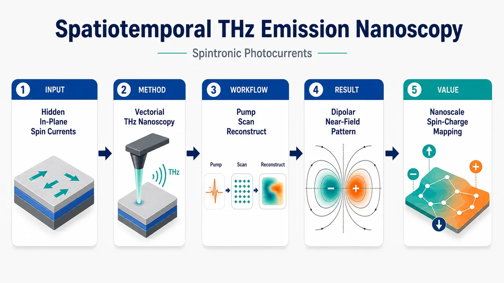
研究问题如何在同一实验中同时看清自旋电子太赫兹发射器内“飞秒时间尺度、纳米空间尺度”的超快自旋驱动光电流？尤其是：近场太赫兹探针主要敏感面外电场，但STE中的关键自旋—电荷转换电流多沿样品面内流动，TEN为何仍能探测这些面内电流？创新方法将太赫兹发射纳米显微术TEN用于光激发、光纤耦合的自旋电子太赫兹发射器，并用扫描探针读取局域THz近场波形。Aha点在于：TEN不是直接“看见”面内电流，而是捕获面内自旋驱动电荷流诱导出的面外THz电场；这种面内源—面外场转换产生了反直觉的偶极型近场图像。工作流程飞秒激光泵浦STE异质结构 → 产生超快自旋流与自旋—电荷转换 → 形成面内瞬态电荷流 → 面内电流在近场中激发面外THz电场 → 扫描探针逐点采集THz发射近场波形 → 重建纳米空间分布与飞秒时间演化 → 解析偶极型空间演化及其电流来源。关键结果实验观察到近场THz信号呈现双瓣/正负极性式的偶极型空间演化，而非简单跟随泵浦光斑的单峰强度分布。研究证明该信号源自面内自旋驱动电荷流产生的面外电场，从而解释了TEN对面内超快自旋电流的高灵敏响应机制。应用价值该研究为纳米尺度成像自旋—电荷转换、二维材料超快自旋输运、STE局域发射机制和片上THz自旋电子器件提供了新工具。TEN有望从面外场探测技术发展为全矢量纳米探针，用于绘制局域电场、电荷流和自旋动力学的耦合时空图。第一部分：核心概览 (Overview)
该研究将太赫兹发射纳米显微术（TEN）用于光激发自旋电子太赫兹发射器（STE），实现对飞秒—纳米尺度自旋驱动光电流的时空探测。核心贡献在于解释了近场TEN为何能感知通常难以直接探测的面内自旋驱动电荷流：面内电流会诱导可被近场探针高灵敏捕获的面外电场，并产生反直觉的偶极型空间演化。该工作把TEN从传统面外场探测推进到潜在的全矢量纳米级自旋—电荷动力学成像平台。
---
第二部分：结构化快速回顾
《Spatiotemporal Terahertz Emission Nanoscopy of Spintronic Photocurrents》（None，）
背景
超快自旋与电荷光电流的直接观测需要同时达到飞秒时间分辨率与纳米空间分辨率。现有实验方案稀缺且仪器复杂，尤其对面内耦合自旋—电荷流的近场探测仍不充分。
方法
采用扫描探针显微镜对一个光激发、光纤耦合的自旋电子太赫兹发射器（STE）进行时空太赫兹发射纳米显微术（TEN）测量，记录近场THz信号的空间与时间演化。
结果
观测到一种反直觉的偶极型近场THz空间演化。该信号并非简单来自局域面内电流本身，而是源于面内自旋驱动电荷流激发出的面外电场分量。
讨论
TEN对面内超快自旋驱动电荷流具有灵敏度的物理原因得到澄清：近场探针通常强烈响应面外电场，而面内电流的电磁边界条件与近场辐射会生成可探测的面外场。
局限
可用材料未给出完整PDF正文、样品结构参数、扫描步长、时间分辨率、空间分辨率、泵浦条件、探针几何、仿真方法、误差分析和统计检验，因此无法可靠评估实验重复性、信噪比、模型唯一性与定量不确定度。
结论
TEN可用于纳米尺度、飞秒尺度的自旋驱动面内电荷流成像，并有望发展为映射耦合THz电荷与自旋动力学的全矢量探针。
---
第三部分：逐章节冷凝解析 (Section-by-Section Condensing)
可用材料仅包含标题、作者、arXiv元数据、摘要与学科分类；未包含PDF正文中的原始章节标题、图表、实验细节、补充材料或参考文献列表。因此，严格逐章解析只能覆盖当前可见的原始条目：Title / Abstract / Bibliographic metadata。未给出的章节标题、数值、图注和方法细节不作推断。
---
Title: Spatiotemporal Terahertz Emission Nanoscopy of Spintronic Photocurrents
- Spatiotemporal mapping is the central technical target
标题中的Spatiotemporal明确指向同时解析空间结构与时间动力学，对应摘要中对“原生尺度”的强调：*"requires probing at its native spatiotemporal scales: femtoseconds and nanometers."* 研究对象不是静态电流分布，而是飞秒级瞬态光电流在纳米尺度上的演化。
- Terahertz emission nanoscopy defines the detection modality
Terahertz emission nanoscopy（TEN）表明探测对象是样品被光激发后主动发射的THz近场信号，不是外加THz透射/反射成像。摘要中给出具体实现：*"performing spatiotemporal terahertz (THz) emission nanoscopy (TEN) of a photoexcited fiber-coupled STE using a scanning-probe microscope."*
- Spintronic photocurrents specify coupled spin-charge physics
Spintronic photocurrents指由光激发触发、与自旋输运、自旋—电荷转换、角动量转移相关的瞬态电流。摘要将其物理驱动力概括为：*"changes in electronic energy, linear momentum, and angular momentum."* 这表明研究关注的不是普通光电导电流，而是含有自旋轨道耦合与自旋驱动电荷流成分的超快过程。
---
Abstract
- Native femtosecond–nanometer access is the motivating bottleneck
超快自旋与电荷光电流的核心难点在于必须同时达到飞秒时间尺度与纳米空间尺度。摘要直接给出尺度要求：*"Accessing the fundamental dynamics driven by changes in electronic energy, linear momentum, and angular momentum requires probing at its native spatiotemporal scales: femtoseconds and nanometers."* 这一路径把研究定位在超快光电子学、近场光学、自旋电子学交叉处。
- Existing simultaneous-resolution methods are scarce and demanding
同时具备纳米空间分辨与飞秒时间分辨的实验方案仍很少，并且仪器门槛高。摘要中的判断是：*"experimental approaches achieving this simultaneous resolution remain scarce and instrumentally demanding."* 该问题构成TEN方案的技术必要性：需要一种可在纳米近场中读取THz瞬态电磁响应的方法。
- Near-field probing is promising but field-component biased
近场探测天然适合突破衍射极限，并可与超快时间门控结合，但通常对面外电场更敏感。摘要表述为：*"Near-field probing offers promising platforms to combine ultrafast and nanometer resolution typically with high sensitivity to out-of-plane electric fields."* 这一点非常关键，因为目标电流是面内的，而探针偏好响应的是面外场，二者之间存在表观不匹配。
- In-plane coupled spin-charge currents remain underexplored
面内超快耦合自旋—电荷流的近场THz探测尚未充分发展。摘要指出：*"applying this technique to in-plane ultrafast coupled spin and charge currents is largely unexplored."* 这里的“largely unexplored”不是泛泛而谈，而是与应用场景直接相连，包括二维材料中的超快自旋输运和自旋电子THz发射器中的自旋—电荷转换。
- Application relevance spans 2D spin transport and STEs
该问题具有明确应用价值：*"from ultrafast spin transport in 2D materials to spin-to-charge conversion in spintronic terahertz emitters (STEs)."* 这说明TEN若能解析面内自旋驱动电荷流，将不仅服务于单一器件表征，还可能成为研究二维自旋输运、自旋霍尔/逆自旋霍尔过程、THz自旋电子源设计的通用工具。
- Experimental platform uses a photoexcited fiber-coupled STE and scanning-probe microscope
实验对象是一个光激发、光纤耦合STE，检测平台为扫描探针显微镜。摘要中的具体方法为：*"performing spatiotemporal terahertz (THz) emission nanoscopy (TEN) of a photoexcited fiber-coupled STE using a scanning-probe microscope."* 可见实验不是远场THz探测，而是通过扫描探针获取局域THz发射近场。
- A counterintuitive dipolar spatial evolution is observed
关键实验现象是近场THz信号呈现反直觉的偶极型空间演化：*"We uncover a counterintuitive, dipolar spatial evolution of the near-field THz signal."* “dipolar”意味着空间分布可能包含正负极性或双瓣结构，而非简单跟随泵浦光斑、发射强度或电流密度的单峰分布。
- The dipolar THz near-field originates from out-of-plane fields generated by in-plane currents
机理解释是：面内自旋驱动电荷流产生了可被TEN探测到的面外电场。摘要原句为：*"which we show originates from the out-of-plane electric fields emerging from the in-plane spin-driven charge currents."* 这是该研究最重要的物理澄清：TEN不是直接“看见”面内电流，而是读取由面内电流辐射或近场边界条件产生的面外THz电场分量。
- TEN sensitivity to in-plane spin-driven currents is explained
研究解释了TEN为何对面内超快自旋驱动电荷流敏感：*"Our findings explain why TEN is sensitive to ultrafast spin-driven in-plane charge currents."* 这使TEN从一个经验性近场成像工具变成了可物理解释、可推广设计的自旋电子动力学探针。
- Future direction is fully vectorial nanoscale THz charge-spin mapping
最终愿景是将TEN发展为全矢量探针，映射纳米尺度THz电荷与自旋动力学：*"paving the way for TEN to become a fully vectorial probe for the spatiotemporal mapping of coupled nanoscale THz charge and spin dynamics."* “fully vectorial”暗示未来不仅测量某一单一场分量，还要重建电磁场、电流方向、自旋极化方向之间的矢量关系。
---
Bibliographic metadata
- arXiv classification places the work in optics while bridging spintronics
学科分类为Physics > Optics，条目标注：*"Subjects: Optics (physics.optics)."* 虽然主题涉及spintronic photocurrents与spin-to-charge conversion，但核心方法属于太赫兹近场光学/纳米光学，因此归入光学类别。
- Version history indicates rapid revision after initial submission
arXiv记录显示初稿提交于2026年2月24日，v2为2026年2月28日，v3为2026年6月24日：*"[v1] Tue, 24 Feb 2026 14:39:55 UTC"*, *"[v2] Sat, 28 Feb 2026 07:02:42 UTC"*, *"[v3] Wed, 24 Jun 2026 08:02:07 UTC."* 当前可见版本为v3，对应条目：*"last revised 24 Jun 2026 (this version, v3)."*
- The work is an arXiv preprint with DOI-linked access
条目给出引用方式：*"Cite as: arXiv:2602.20960 [physics.optics]"*，并提供DOI：*"https://doi.org/10.48550/arXiv.2602.20960."* 因此当前证据级别为预印本，正式期刊同行评审状态未在可用材料中显示。
- Authorship indicates a multi-institutional experimental collaboration
作者列表包含F. Paries, R. Rouzegar, J. Cai, M. Dai, F. Selz, J. Koelbel, G. Lezier, D. Molter, D. M. Mittleman, G. von Freymann, X. Wu, T. S. Seifert。从研究内容看，所需能力覆盖自旋电子THz发射器制备、扫描探针近场THz实验、超快光学、理论/电磁解释等多个方向。
---
第四部分：深度理解与语言支持 (Understanding & Nuance)
1. 术语解析
- Spatiotemporal
直译为“时空的”，但在超快纳米光学语境中不是泛指时间和空间，而是强调同时解析飞秒时间演化与纳米空间分布。摘要中的关键搭配是 *"native spatiotemporal scales: femtoseconds and nanometers"*，即动力学发生在哪个尺度，就要在哪个尺度测量。
- Terahertz emission nanoscopy (TEN)
太赫兹发射纳米显微术。与传统THz时域光谱不同，TEN关注样品被激发后自身发出的THz近场，并通过纳米探针扫描获得超越衍射极限的空间信息。“emission”强调信号源来自样品内部瞬态电流，而不是外部THz照射后的散射响应。
- Spin-driven in-plane charge currents
自旋驱动的面内电荷流。这类电流通常由超快自旋流经过自旋—轨道耦合转化而来，例如逆自旋霍尔效应等机制。微妙之处在于：它是“charge current”，但其起源是“spin-driven”；它在几何方向上是“in-plane”，但TEN主要敏感的是“out-of-plane electric fields”。
- Out-of-plane electric fields
面外电场，即垂直于样品平面的电场分量。近场探针，尤其是尖端增强类扫描探针，常对垂直电场分量更敏感。因此，面内电流若不能产生面外场，TEN就难以探测；该研究的核心正是证明面内电流确实会诱导可测面外THz场。
- Fully vectorial probe
全矢量探针不是只测量信号强度，而是有能力解析场、电流或自旋相关量的方向信息。这里的“fully vectorial”意味着TEN未来可能不仅记录一个标量THz波形，还能重建电场矢量分量、面内/面外耦合、局域电流方向与自旋—电荷转换几何关系。
---
2. 疑难查证
#### 为什么面内电流会被对面外电场敏感的近场探针探测到？
一个无限大、均匀、纯面内的电流片，在理想化远场直觉中可能主要产生与电流方向相关的辐射场。但真实STE具有有限尺寸、局域光激发区域、材料界面、边界条件与近场电磁耦合。飞秒电流脉冲在面内流动时，会产生瞬态电荷积累、边缘场和近场散度结构。这些结构可将部分电磁响应转换为垂直于表面的电场分量。
TEN探针位于样品近场区，探测的不是远场辐射的简单投影，而是局域电磁场分布。因而，一个面内电流源可通过近场边界条件产生可观测的面外THz电场。摘要中的机制句 *"out-of-plane electric fields emerging from the in-plane spin-driven charge currents"* 正是在描述这种“面内源—面外探测量”的转换。
#### “偶极型空间演化”为何反直觉？
如果把THz信号简单理解为局域发射强度，人们可能预期扫描图像跟随泵浦光斑或电流密度，呈现单峰高斯状分布。但偶极型分布通常包含两个极性相反或空间相对的瓣，反映的是场的梯度、边界、极化方向或源项散度，而非单纯能量密度。
因此，观察到偶极型近场THz信号意味着TEN测得的不是“哪里发射最强”这么简单，而是记录了面内电流产生的复杂近场电磁结构。这也解释了为什么单靠远场THz波形难以反推出纳米尺度电流分布。
#### 为什么这对自旋电子THz发射器重要？
STE通常依赖飞秒激光激发磁性/非磁性异质结构，先产生超快自旋流，再经自旋—电荷转换形成横向瞬态电荷流，进而辐射THz脉冲。远场测量可告诉THz脉冲强度和频谱，但很难看到局域电流如何在纳米尺度形成、传播或受界面缺陷影响。
TEN若能映射局域THz近场，就可能直接研究STE内部的局域自旋—电荷转换效率、边界效应、纳米结构调控、二维材料自旋输运等问题。
---
第五部分：创新评估与关联 (Synthesis & Novelty)
1. 创新性判断
- 从远场STE表征推进到近场纳米时空成像
过去几年中，自旋电子THz发射器研究多集中于远场THz强度、带宽、偏振、材料堆叠优化和自旋—电荷转换效率。该研究的新增价值在于把观测尺度推进到纳米近场，并保留THz/飞秒时间信息。
- 解决TEN与面内自旋电流之间的“探测几何矛盾”
近场THz探针通常更敏感于面外电场，而自旋电子THz发射器中的关键电流多为面内电荷流。该研究明确给出连接机制：面内自旋驱动电流会产生可测的面外THz电场，从而解释TEN为何能够读取面内自旋电子动力学。
- 发现并解释反直觉的偶极型近场空间演化
关键新现象是dipolar spatial evolution。这不是常规强度成像，而是揭示了局域THz近场与电流源之间的复杂矢量关系。该发现有助于避免把TEN图像误读为简单电流密度图。
- 将TEN推向“全矢量自旋—电荷动力学探针”
研究目标不止于一次成像演示，而是为TEN建立面向耦合电荷流、自旋流、THz电场矢量的物理基础。摘要中的目标是 *"a fully vectorial probe for the spatiotemporal mapping of coupled nanoscale THz charge and spin dynamics."*
- 拓展潜在应用范围
对二维材料超快自旋输运、自旋—电荷转换器件、纳米结构化STE、片上THz源和自旋轨道电子器件均有方法学意义。尤其在器件工程中，局域缺陷、边缘、界面粗糙度和纳米图案化会显著影响自旋—电荷转换；TEN提供了直接观察这些影响的可能路径。
-
14
📊 含图深析
📄 摘要：讨论具有双稳态和磁有序的自旋交叉系统中形成动态耗散结构的可能性，重点是磁化自振荡。文章将此类体系置于 Benard 元胞、激光、BZ 反应等自组织耗散结构背景下，分析自旋态转换与磁有序耦合如何产生时空有序动力学。
💡 亮点：双稳态磁性自旋交叉体系被提出可出现磁化自振荡的耗散结构。该问题连接分子磁性相变与非平衡自组织，为可振荡磁材料提供理论场景。
📖 展开分析 + 配图
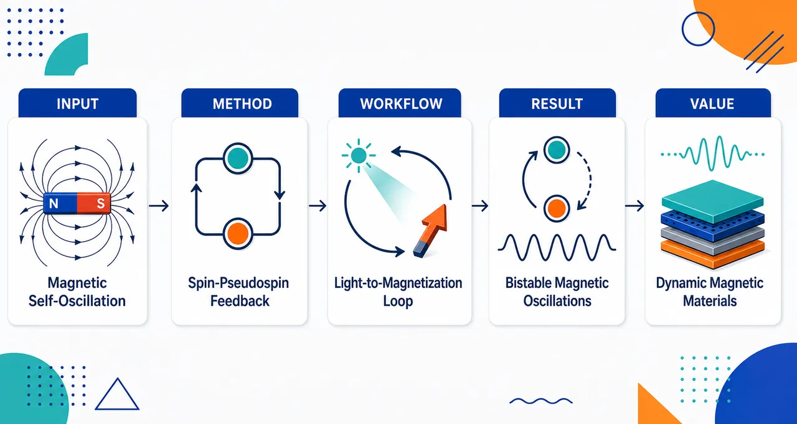
研究问题在远离平衡的开放光热条件下，磁有序自旋交叉双稳体系是否会自组织形成耗散结构，并产生 HS/LS 布居与磁化强度的自发周期振荡；核心画面是一个可在高自旋磁有序态与低自旋抗磁态之间来回跳变的晶格。创新方法将 HS/LS 两能级伪自旋、真实自旋反铁磁交换、晶格弹性协同、光吸收加热、热浴冷却与相变焓反馈统一进同一非线性动力学框架；Aha 点是把磁化 m 放入热反馈回路，使磁化不只是结果，而成为驱动自振荡的反馈序参量。工作流程输入晶场差、弹性交互、磁交换、光照强度与热浴温度；先用伪自旋 Hamiltonian 表示 HS/LS 布居，再经电子-声子耦合与 Lang–Firsov 变换得到有效弹性交互，加入 HS 态间 Heisenberg 反铁磁交换；随后用两子晶格平均场求 HS 分数、伪自旋与亚晶格磁化，最后耦合温度方程和 Glauber 主方程，输出相图、亚稳区、HS/LS 布居振荡与磁化自振荡。关键结果弹性交互可把平滑自旋交叉变成低温一阶相变，并产生亚稳边界与临界点；磁交换可稳定 AFM-HS 基态，使临界晶场从 Δ0 推高到 ΔC，并在相图中形成三临界点；在光热加热、热浴耗散和相变焓反馈共同作用下，模型预测 HS/LS 布居和磁化强度可出现类似 BZ 反应的自催化振荡。应用价值为设计可被光、温度和磁相变共同调控的自振荡磁性材料提供理论基础，可用于概念性磁开关、动态信息存储、非线性传感、光热响应材料和类神经振荡器；画面重点是无需外加交变磁场也能周期性改变磁化的智能晶体。第一部分：核心概览 (Overview)
磁有序自旋交叉体系被置于远离平衡的开放条件下，出现由 HS/LS 布居、晶格弹性、反铁磁交换、光热加热与相变焓反馈耦合驱动的非线性动力学。核心贡献在于把传统弱磁性自旋交叉耗散结构问题推进到磁有序双稳体系，建立含伪自旋、真实自旋、弹性相互作用与 Glauber 动力学的理论框架，预测磁化强度自振荡及 HS/LS 布居振荡。其领域地位在于填补“磁有序自旋交叉体系中时空耗散结构形成机制”这一开放问题。
---
第二部分：结构化快速回顾
《Dynamic dissipative structures in bistable magnetic ordered spin crossover systems: self-oscillations of magnetization》（None，）
背景
自旋交叉体系可在 high-spin (HS) 与 low-spin (LS) 态之间切换，并伴随磁性、光学、结构性质显著变化。已有开放 SC 体系中非线性与耗散结构研究，但磁有序 SC 体系，特别是接近自旋双稳区的体系，仍缺少系统理论处理。
方法
建立两能级 伪自旋 Hamiltonian，以 (τᵢ^z=frac12(XᵢHS,HS-XᵢLS,LS)) 描述 HS/LS 布居；引入电子-声子耦合、Lang–Firsov 变换得到有效弹性交互；进一步加入 HS 态之间的 Heisenberg 型交换 (J_S)。在两子晶格平均场下求解 (nHS)、(τ)、亚晶格磁化 (m)，再以热平衡方程与 Glauber 主方程描述非平衡动力学。
结果
弹性交互 (J_τ) 可将平滑自旋交叉转化为低温一阶相变，并产生亚稳区与临界点；交换相互作用 (J_S) 可稳定 AFM-HS 基态，使临界晶场 (Δ_C>Δ₀)，并产生三临界点。光热加热、热浴耦合与相变焓反馈共同为 HS/LS 布居与磁化自振荡提供动力学机制。
讨论
SC 耗散结构并非依靠真实物质扩散，而是依靠 LS/HS 多电子态布居的有效扩散或动力学重分布。磁有序体系中，真实自旋交换使磁化成为参与非线性反馈的序参量，因此可能产生类似 Belousov–Zhabotinsky 反应的磁化自催化振荡。
局限
可见文本主要为理论模型与平均场计算；缺少实验样品、样本量、统计检验、直接实验验证。模型只保留两个低能电子项，平均场忽略涨落与空间关联；声子软化项 (g₂) 被设为 0；后续动力学结果部分在所给文本中截断，无法完整确认具体振荡周期、振幅或相图参数。
结论
磁有序 SC 双稳体系在强非平衡开放条件下可形成时间与空间上的耗散结构，表现为 HS/LS 布居与磁化强度的相干振荡。理论框架把自旋交叉、弹性协同、磁交换和热反馈统一到一个非线性动力学模型中。
---
第三部分：逐章节冷凝解析 (Section-by-Section Condensing)
Abstract
Dissipative systems span chaos and spontaneous order
耗散系统可表现出从复杂确定性混沌到自发有序结构的多种行为模式，典型例子包括 Bénard cells、激光、液滴团簇、Belousov–Zhabotinsky 反应与生命系统。原文以 *"Dissipative systems can exhibit a variety of behavioral modes, ranging from complex deterministic chaos to the spontaneous emergence of ordered structures"* 概括研究对象的物理背景，并以 *"A simple example of the latter is Benard cells"* 指出自组织有序结构的经典范式。
Spin-crossover bistability is positioned as a platform for spatiotemporal dissipative structures
自旋交叉双稳体系被定位为研究时空耗散结构形成的关键平台。摘要直接指出 *"Of particular interest in the context of the formation of spatiotemporal dissipative structures are bistable systems with spin crossover"*，说明双稳性与 HS/LS 态转换为非线性反馈和自组织提供物理基础。
Magnetization self-oscillation is the central theoretical target
核心问题是磁有序 SC 系统中是否可观察到磁化强度自振荡。摘要明确写出 *"This paper discusses the possibility of observing self-oscillations of magnetization in magnetically ordered systems with spin crossover"*。研究类型为理论计算，原文表述为 *"The results of theoretical calculations of the nonlinear dynamics of bistable magnetic systems under nonequilibrium conditions are presented"*。
---
I Introduction
Spin crossover involves HS–LS switching in transition-metal coordination compounds
自旋交叉指分子在 HS 与 LS 态之间切换，典型存在于 (d⁴⁻d⁷) 电子构型的过渡金属配位化合物中。关键原文为 *"The phenomenon of spin transition, also known as spin crossover (SC), involves switching between the high-spin (HS) and low-spin (LS) states of a molecule and is observed in coordination compounds of transition metal ions with (d⁴–d⁷) electron configurations"*。
SC strongly changes magnetic, electronic, optical, and structural properties
SC 过程伴随磁性、电子/光学与结构性质显著变化，因而具有信息存储、开关、传感、显示等技术潜力。证据为 *"Spin crossover is accompanied by significant changes in the magnetic, electronic (optical), and structural properties of coordination compounds"*，并进一步指出这种性质变化 *"underpins their high-tech potential in information storage and processing devices, switches, sensors, indicators, and displays"*。
The field has a long history and broad material scope
SC 效应发现已超过 90 年，已有大量单核与多核复合物在固态、液态和凝胶态中被合成和研究。原文写道 *"More than 90 years have passed since the discovery of the spin crossover effect by Cambi et al."*，并说明 *"hundreds of mono- and polynuclear complexes exhibiting spin crossover have been synthesized and studied in solid, liquid, and gel states"*。
SC systems cover organic, inorganic, crystalline, amorphous, polymeric, and glassy substances
SC 体系横跨有机/无机、晶态/非晶态、聚合物和玻璃态材料，并吸引物理、化学、生物、地球物理和医学研究。关键引述为 *"SC systems comprise a vast class of substances, including organic and inorganic, crystalline and non-crystalline (amorphous, polymeric, glassy) compounds"*，并列举研究领域 *"physics, chemistry, biology, geophysics, and medicine"*。
Modern experimental capabilities motivate renewed SC research
超强磁场、超高压、高时间分辨泵浦-探测光谱、纳米结构化、电子束外延与光刻等技术推动 SC 研究。原文指出研究热度主要源于 *"the development and emergence of new experimental capabilities, such as the generation of ultra-strong magnetic fields and ultra-high pressures, the advancement of pump-probe spectroscopy with high temporal resolution, nanostructuring, and progress in electron-beam epitaxy and lithography"*。
Open SC systems already show nonlinear phenomena and autocatalytic oscillations
开放 SC 系统已有非线性理论与实验研究，甚至已有耗散结构和自催化振荡观测。原文写道 *"The literature contains theoretical and experimental studies on nonlinear phenomena in open SC systems"*，并进一步指出 *"Experimental studies of dissipative structures and observations of autocatalytic oscillations in SC systems can be found"*。
SC dissipative structures differ from Turing structures because they rely on effective population diffusion
SC 体系的关键特殊性在于耗散结构并非来自真实物质扩散，而来自 LS/HS 多电子态布居浓度的有效扩散。原文强调 *"the spontaneous formation of dissipative structures in them does not result from true diffusion of matter"*，而是来自 *"the effective diffusion of concentrations (populations) of the LS and HS multielectron states of the transition metal ion"*。这一点构成模型创新的物理基础。
Magnetically ordered SC systems near bistability remain an open question
既有非平衡研究主要集中在弱磁性配位化合物；磁有序体系中接近自旋双稳性的时空耗散结构尚未被处理。关键原文为 *"Most studies of supercritical systems under nonequilibrium conditions focus on weakly magnetic coordination compounds"*，以及 *"The formation of spatiotemporal dissipative structures in magnetically ordered systems ... near spin bistability has not yet been addressed in the literature and remains an open question"*。
The target phenomenon is supramolecular coherent behavior producing oscillations of magnetization and electronic-term populations
理论建模揭示大量过渡金属离子的超分子相干行为，可导致物质磁化强度与不同多重度电子项布居的时间和空间振荡。原文写道 *"These results reveal a form of supramolecular coherent behavior of a large number of transition metal ions"*，其结果是 *"temporal and spatial oscillations of both the magnetization of the substance and the populations of electronic terms with different multiplicities"*。
Belousov–Zhabotinsky-type autocatalytic magnetization oscillations are the conceptual analogue
开放 SC 双稳体系中的非线性现象被类比为 BZ 反应型磁化自催化振荡。原文总结为 *"Nonlinear phenomena of the Belousov–Zhabotinsky reaction type (autocatalytic oscillations of magnetization) are considered in open systems with spin crossover near bistability"*。
---
II Effective Hamiltonian
The microscopic model retains two low-energy electronic terms
晶格每个位点放置一个处于配体晶场中的过渡金属阳离子，完整 (3d) 多电子项被截断为两个低能项，即可发生交叉的 HS 与 LS 态。原文为 *"Instead of the full set of multielectron terms of (3d)-ions, we will restrict ourselves to only two low-energy terms, between which crossover is possible with increasing crystal field (Δ=10Dq)"*。
The concrete reference ion is (3d⁶), with HS ({}⁵T₂g) and LS ({}¹A₁g)
对 (3d⁶) 离子，Tanabe–Sugano 图给出基态可为 HS 项 ({}⁵T₂g)，自旋 (S=2)，或 LS 项 ({}¹A₁g)，自旋 (S=0)。原文写道 *"we will focus on transition metal ions with a (3d⁶) electron configuration"*，并给出 *"the ground electron term ... can be either the HS term ({}⁵T₂g) with spin (S=2), or the LS term ({}¹A₁g) with spin (S=0)"*。
Pseudospin (τ^z) encodes HS/LS occupation
HS/LS 量子态用 Hubbard (X)-算符构造伪自旋：
[
hatτᵢ^z=frac12(XᵢHS,HS-XᵢLS,LS)
]
其本征值 (σ=±1/2) 对应 HS 与 LS。原文定义为 *"The pseudospin projection operator reads (hatτzᵢ=frac12(XHS,HSᵢ-XLS,LSᵢ))"*，并说明 *"The operator ... has two eigenvalues (σ=±frac12) corresponding to the HS and LS states"*。
Occupation operators follow directly from pseudospin
布居算符写为
[
hat nᵢLS=-hatτᵢ^z+frac12,quad
hat nᵢHS=hatτᵢ^z+frac12
]
并自动满足 (hat nᵢLS+hat nᵢHS=1)。原文为 *"the occupation number operators can be written as (hatnLSᵢ=-hatτzᵢ+frac12) and (hatnHSᵢ=hatτzᵢ+frac12)"*，以及 *"(hatnLSᵢ+hatnHSᵢ=1) holds by construction"*。
Pseudospin raising and lowering operators convert LS into HS and HS into LS
(hatτᵢ⁺⁼|HSånglełangle LS|)，(hatτᵢ⁻⁼|LSånglełangle HS|)，分别执行 LS→HS 与 HS→LS 转换。原文写道 *"(hatτ⁺ᵢ=XHS,LSᵢ=|HSånglełangle LS|)"*，*"(hatτ⁻ᵢ=XLS,HSᵢ=|LSånglełangle HS|)"*，并明确 *"(hatτ⁺ᵢ|LSångle=|HSångle)"*、*"(hatτ⁻ᵢ|HSångle=|LSångle)"*。
The noninteracting two-level Hamiltonian is controlled by HS–LS free-energy difference
非相互作用 SC 复合物的两能级 Hamiltonian 为
[
hat H_τ=Δ_τsumᵢhatτᵢ^z
]
其中 (Δ_τ=FHS-FLS)。原文为 *"The Hamiltonian of the two-level model for non-interacting cation-anion complexes ... can be written ... as (hatHτ=Δτsumᵢhatτᵢz)"*，并定义 *"Here (Δτ=FHS-FLS) is the difference between the free energies of the ion in the HS and LS states"*。
The spin gap depends on crystal field and Racah parameters
HS 与 LS 能量近似为
[
EHS=-4Dq-21B,quad ELSapprox-24Dq-16B+8C
]
Racah 参数取 (B=1065,cm⁻¹=0.132,eV)，(γ=4.8)，且 (B=γ C)。原文给出 *"(EHS=-4Dq-21B), (ELSapprox-24Dq-16B+8C)"*，以及 *"The characteristic values ... (B=1065 cm⁻¹=0.132 eV), (γ=4.8)"*。
The crossover point occurs at (Δ=Δ₀)
自旋能隙 (Δ_S=EHS-ELS=2(Δ-Δ₀₎)，交叉点满足 (Δ_S=0)，即 (Δ=Δ₀)。原文为 *"(ΔS=EHS-ELS=2(Δ-Δ₀)) is the spin gap"*，以及 *"At the crossover point, (ΔS=0) when (Δ=Δ₀)"*。
Degeneracy contains orbital and spin factors
总简并比 (g=g_τ g_S)，其中 (g_S=gS,HS/gS,LS)。对 (3d⁶) 中 LS 与 HS，(gS,LS=1)，(gS,HS=5)。原文为 *"The degeneracy multiplicity of each of the two spin states can be written as the product ... orbital and spin degeneracy multiplicities"*，并给出 *"for the LS and HS states of the (3d⁶) ion, (gS,LS=1) and (gS,HS=5)"*。
Electron–phonon coupling is essential because SC couples magnetic, thermal, and optical properties
SC 化合物中磁、热、电子/光学性质相互耦合，因此 Hamiltonian 需要引入不同自由度间相互作用。原文写道 *"In spin crossover compounds, the interplay between magnetic, thermal, and electronic (optical) properties is clearly manifested"*，并指出 *"their description requires taking into account the interaction between different degrees of freedom"*。
Only the breathing (A₁g) mode is retained because it couples most strongly to spin multiplicity fluctuations
电子-声子 Hamiltonian 只保留配体的全对称呼吸模 (A₁g)，因其与 (3d) 离子自旋多重度涨落耦合最强。原文为 *"Among all the vibrational modes of the SC complex, we consider only the breathing (A₁g) mode, since it is most strongly coupled to the spin multiplicity fluctuations of the (3d) ions"*。
Linear vibronic coupling produces different metal–ligand bond lengths in HS and LS states
线性项 (g₁hat uᵢhatτᵢ^z) 导致 LS 与 HS 态金属-配体键长不同；增大 (u) 降低晶场并稳定 HS，减小 (u) 稳定 LS。原文写道 *"The contribution ... linear in the displacement operator (hatu) leads to a difference in the metal-ligand bond lengths in the LS and HS states"*，并说明 *"An increase (decrease) in (u) leads to a decrease (increase) in the crystal field and stabilization of the HS (LS) state"*。
Numerical bond-length estimate gives a large HS–LS displacement difference
用 (g₁₌₀.8,eV/Å)、(k₀₌₇.5,eV/Ų) 估算，得到 (uLS⁰⁼⁻⁰.09,Å)，(uHS⁰⁼⁰.13,Å)，差值 (Δ u₀₌₀.22,Å)。相对于 (T=0) 下约 (2,Å) 的键长，约为 10%。原文为 *"Using the estimated values (g₁₌₀.8) eV/Å and (k₀₌₇.5) eV/Å(²), we obtain (uLS⁰=-0.09) Å, (uHS⁰=0.13) Å and thus (Δ u₀=0.22) Å"*，以及 *"(Δ u₀) is 10% of this value"*。
Quadratic vibronic coupling changes local phonon frequencies
二次耦合 (g₂hat uᵢ²hatτᵢ^z) 使 HS 与 LS 态局域振动频率不同：
[
kHS=k₀₋₂g₂,quad kLS=k₀₊₂g₂,quad ømegaHS<ømegaLS
]
原文为 *"the frequencies of local oscillations are (ømegaHS₍LS₎=sqrtkHS₍LS₎/M)"*，并给出 *"(kHS=k₀₋₂g₂) and (kLS=k₀₊₂g₂)"*，结论为 *"the frequencies in the HS ... and LS ... states are different, with (ømegaHS<ømegaLS)"*。
The phonon dispersion for a simple cubic lattice is explicitly specified
简单立方晶格沿 ([1,1,1]) 方向，声子色散为
[
ømegaₘₐₜₕbf q=sqrt{ømega²łeft[1-fracVᵤ3k₀(o̧s qₓ₊ₒ̧s q_y+o̧s q_z)i̊ght]}
]
原文为 *"For a simple cubic lattice along the ([1,1,1]) direction, the phonon dispersion is given by..."*，并写出上述公式。
Quadratic coupling (g₂) is discarded because phonon softening is not relevant to the chosen topic
由式 (9) 可见 (g₂) 描述声子谱软化，但该效应被认为与当前主题无关，后续设 (g₂₌₀)。原文为 *"the contribution ... quadratic in the displacement (hat u), describes the softening of the phonon spectrum"*，紧接着说明 *"For the topic discussed in this paper, this effect is of no relevance, so we set (g₂₌₀) henceforth"*。
Lang–Firsov transformation yields an effective Ising-like elastic interaction between pseudospins
经 Lang–Firsov 幺正变换，电子-声子耦合被消去，得到有效 Hamiltonian：
[
hat Heff=Δ_τsumᵢhatτᵢ^z-frac12sumᵢⱼJ_τ(i,j)hatτᵢ^zhatτⱼ^z
]
原文为 *"Using the Lang–Firsov unitary transformation ... the Hamiltonian ... is transformed into the effective Hamiltonian"*，并说明其 *"describes the elastic interaction (J_τ(i,j)) between (3d) ions at different sites of the crystal lattice"*。
Magnetically ordered SC systems require explicit exchange interaction (J_S)
多数磁有序 SC 体系为反铁磁体，因此除弹性交互 (J_τ) 外，还必须加入真实自旋交换 (J_S)。原文写道 *"For magnetically ordered SC systems, most of which are antiferromagnets, in addition to the interatomic elastic interaction (J_τ), the exchange interaction (J_S) must be taken into account"*。
The final effective Hamiltonian combines spin crossover, elastic cooperativity, and HS-state exchange
磁有序情形的有效 Hamiltonian 为
[
hat Heff=Δ_τsumᵢhatτᵢ^z-frac12J_τsumłₐₙgₗₑ ᵢ,ⱼåₙgₗₑhatτᵢ^zhatτⱼ^z
+frac12J_Ssumłₐₙgₗₑ ᵢ,ⱼåₙgₗₑhat nHS,ᵢhat nHS,ⱼhatmathbf Sᵢḑothatmathbf Sⱼ
]
交换项只在两个相邻离子均处于 HS 态时起作用。原文指出最后一项 *"describes the exchange interaction between transition metal ions in the HS state and is analogous to the Heisenberg Hamiltonian for binary alloys"*。
When spin degrees are explicit, the entropy factor in (Δ_τ) changes
由于真实自旋自由度已在 Hamiltonian 中显式处理，当 (J_S≠0) 时，(Δ_τ=Δ_S-k_BTłn g_τ)，而不再包含自旋简并 (g_S)。原文为 *"in contrast to (10), the spin degrees of freedom in (14) are taken into account explicitly, so (Δ_τ=Δ_S-k_BTłn g_τ), if (J_S≠0)"*。
---
III Mean-field approximation
Two-sublattice mean-field theory uses a combined spin–pseudospin vector
定义向量算符
[
hatboldsymbolØmegaᵢ₌
beginpmatrix
hat nHS,ᵢhat Sᵢ^z
hatτᵢ^z
endpmatrix
]
用于同时处理 HS 态真实自旋磁化与 HS/LS 伪自旋布居。原文为 *"Let us introduce the vector operator (hatbmØmegaᵢ=(hat nHS,ᵢhat Sᵢ^z,hatτᵢ^z))"*。
The mean-field Hamiltonian is written for two sublattices (A) and (B)
在两子晶格平均场近似下，归一化到磁胞数 (N_C=N/2)，Hamiltonian 写为
[
hat HMFeff=sum_Chat H_Cⁱoⁿ+H₀
]
其中 (C=A,B)。原文为 *"in the mean-field (MF) approximation for two sublattices (A) and (B) normalized to the number of magnetic cells (N_C=N/2), the Hamiltonian ... takes the form"*。
Each ion feels a mean field from the opposite sublattice
单离子能量为
[
hat H_Cⁱoⁿ=mathbf Dbₐᵣ CḑothatboldsymbolØmega_C
]
即 (C) 子晶格离子感受到来自 (bar C) 子晶格的平均场。原文为 *"(hat H_Cⁱoⁿ=bm Dbₐᵣ CḑothatbmØmega_C) is the energy of an ion in the resulting mean field"*。
Mean fields depend on exchange, elastic interaction, HS population, magnetization, and pseudospin
平均场分量为
[
DS,C=zJ_S nHS,Cm_C,quad
Dτ,C=Δ_τ-zJ_ττ_C
]
其中 (m_C=łangle hat S^zᵢ_Cångle)，(τ_C=łanglehatτ^zᵢ_Cångle)，(nHS,C=τ_C+frac12)。原文为 *"Here (DS,C=zJ_S nHS,Cm_C), (Dτ,C=Δ_τ-zJ_ττ_C)"*，并定义 *"(m_C=łanglehat S^zᵢ_Cångle) is the sublattice magnetization, and (τ_C=łanglehatτ^zᵢ_Cångle)"*。
The double-counting correction contains magnetic and elastic contributions
平均场常数项为
[
H₀₌₋zJ_S nHS,AnHS,Bm_Am_B-zJ_ττ_Aτ_B
]
原文直接给出 *"The last term in (15) is (H₀₌₋zJ_S nHS,AnHS,Bm_A m_B-zJ_ττ_Aτ_B)"*。
Self-consistency is obtained from an eigenvalue problem and Boltzmann averages
求解
[
hat H_Cⁱoⁿ|ǎrphiₖ,Cångle=Eₖ|ǎrphiₖ,Cångle
]
并通过配分函数 (Z_C) 计算 (m_C) 与 (τ_C)。原文为 *"By solving the self-consistent eigenvalue problem for two sublattices ... one can find the quantities of interest, namely the averages (m_C) and (τ_C)"*。
The partition function includes HS spin multiplicity through (θ_C)
子晶格配分函数为
[
Z_C=e⁻β Dτ,C/²(eβ Dτ,C+θ_C)
]
其中
[
θ_C=fracsinh[(2S+1)β DS,C/2]sinh(β DS,C/2)
]
原文给出 *"(Z_C=sumₖ e⁻Eₖβ=e⁻βfrac¹²Dτ,C(eβ Dτ,C+θ_C))"*，并定义 *"(θ_C=fracsinh[(2S+1)β DS,C/2]sinh(β DS,C/2))"*。
Physical solutions are selected by local and global free-energy minima
平均场方程可能存在多个解，选择对应自由能局部极小和全局极小的解。自由能为
[
F=-β⁻¹łn Z+H₀,quad Z=Z_AZ_B
]
原文为 *"In the calculation process, we select the solutions that correspond to the local and global minima of the free energy (F=-β⁻¹łn Z+H₀)"*。
The local basis combines LS singlet and HS spin multiplet states
单离子态写作
[
|ǎrphiₖ,Cångle=CLS|LSångle_C+sumₛ₌₋S⁺SCHSσ|HS,sångle_C
]
其中 (|HS,sångle=|HSångle|sångle)，(s=-S,dots,+S)。原文为 *"The states (|ǎrphiₖ,Cångle) can in turn be represented as a linear combination"*，并说明 *"The basis states (|sångle) are eigenstates of the spin projection operator (hat S^z)"*。
For (J_τ>0) and (J_S>0), HS population is uniform while magnetization is antiferromagnetic
数值计算给出 (τ_C=τbₐᵣ C=τ)，即两子晶格 HS 布居相同；同时 (m_C=-mbₐᵣ C)，即反铁磁排列。原文为 *"Numerical calculations for the case (J_τ>0) and (J_S>0), lead to the following results: (τ_C=τbₐᵣ C=τ) ... and (m_C=-mbₐᵣ C)"*。
Elastic interaction alone converts smooth crossover into a first-order phase transition
当 (J_S=J_τ=0) 时，(Δ-T) 图中 (nHS) 表现为平滑交叉；当 (J_S=0)、(J_τ=152,K) 时，低温区域变为一阶相变，并出现亚稳边界与临界点 ((Δ^*,T^*))。原文写道 *"the elastic interaction transforms the smooth spin crossover ... into a first-order phase transition at low temperatures"*，并说明 *"The black solid lines ... indicate the boundaries of the region of metastable states"*，以及 *"The first-order phase transition line ends at the critical point ((Δ^*,T^*))"*。计算参数为 *"The calculations were performed with (g=15)"*。
The SC transition resembles liquid–gas continuity around a critical point
绕过临界点 ((Δ^*,T^*)) 可实现 HS 与 LS 间连续转化，类似液气相变。原文类比为 *"As in the case of a liquid and gas, the SC system can be continuously converted from the HS to LS state and vice versa by going around the point ((Δ^*,T^*))"*。
Exchange interaction (J_S) stabilizes the HS ground state beyond the single-ion crossover field
在 (J_S=112,K)、(J_τ=0) 下，即使单离子图像中 (Δ>Δ₀) 时 LS 为基态，交换相互作用仍可使 HS 保持基态直到 (Δ<Δ_C)。原文指出 *"due to the cooperative interaction (J_S), the HS state remains the ground state even for (Δ>Δ₀), but for (Δ<Δ_C)"*，并解释 *"The exchange interaction (J_S) stabilizes the HS state by lowering its energy, hence (Δ_C>Δ₀)"*。
The ground state changes from AFM-HS to diamagnetic LS at (Δ_C)
当 (Δ>Δ_C)，反铁磁 HS 基态被抗磁 LS 态替代。原文为 *"For (Δ>Δ_C) the antiferromagnetic (AFM) HS ground state is replaced by the diamagnetic (DM) LS state"*。
Elastic and exchange interactions shift the critical field differently
弹性交互 (J_τ) 不提高临界晶场，仍有 (Δ_C=Δ₀)；交换 (J_S) 则使 (Δ_C>Δ₀)。原文为 *"The elastic interaction (J_τ), in contrast to the exchange interaction (J_S), does not lead to an increase in the critical value of the crystal field ((Δ_C=Δ₀₎)"*。
Exchange-driven phase diagrams contain a tricritical point
在 (J_S=112,K)、(J_τ=0)、(g_τ=3) 的计算中，(Δ-T) 相图存在三临界点 ((Δ^ødot,T^ødot))，一阶相变线在此连续转变为二阶相变线。原文为 *"The phase diagrams ... show the existence of a special tricritical point ((Δ^ødot,T^ødot)), where the first-order phase transition line continuously changes into a second-order phase transition line"*，并补充 *"The calculations were performed with (g_τ=3)"*。
The metastability boundary has an inflection point near the tricritical point
图 2b 插图显示三临界点附近亚稳区右边界存在拐点 ((Δ^×,T^×))。原文为 *"The inset to Fig. 2b shows an enlarged view of the metastable region boundaries near the tricritical point ... where the inflection point ((Δ^×,T^×)) of the right boundary is clearly visible"*。
---
IV Self-oscillations of HS/LS state populations and magnetization
The nonequilibrium setup combines thermal bath and external radiation
考虑 SC 系统与温度为 (T_R) 的热浴接触，同时受到强度 (I₀) 的外部辐射照射，辐射导致光热加热。原文为 *"Consider an SC system in thermal contact with a thermostat at temperature (T_R) and exposed to external radiation of intensity (I₀), which leads to its photothermal heating"*。
The temperature dynamics includes cooling to thermostat, optical absorption, and enthalpy feedback
系统温度演化方程为
[
fracpartial Tpartial t
=-α(T-T_R)
+Iłeft[1+(h̊o-1)łeft(τ+frac12i̊ght)i̊ght]
-fracΔ HCₚfracpartialκpartial t
]
其中第一项为热浴耦合，第二项为辐射吸收，第三项为相变焓导致的温度变化。原文解释为 *"the first term on the right-hand side describes the coupling to the thermostat"*，* "The second term arises from the absorption of external radiation"*，以及 *"The last term ... describes the temperature change due to the change in enthalpy (Δ H) resulting from a first-order phase transition"*。
Optical heating depends on HS population through absorption contrast
吸收项中 (I=I₀σₐ)，(h̊o=aHS/aLS)，并通过 (τ+frac12=nHS) 体现 HS 态布居对吸收强度的调制。原文为 *"(I=I₀σₐ), where (σₐ) is the absorption cross-section; (h̊o=aHS/aLS), with (aHS₍LS₎) being the absorption coefficients in the HS (LS) state"*。
The enthalpy feedback variable switches from pseudospin to magnetization depending on magnetic exchange
相变焓项中的 (κ) 在非磁交换情形取 (κ=τ)，在磁交换存在时取 (κ=m)。原文明确写出 *"where (κ=τ) if (J_S=0) and (κ=m) if (J_S≠0)"*。这意味着磁有序体系中磁化强度变化直接进入热反馈回路。
The transition enthalpy is tied to entropy change and equilibrium spin-transition temperature
相变焓为
[
Δ H=TₑqΔ S
]
其中
[
Tₑq=fracΔ_Sk_Błn g
]
对应 (nHS=nLS=1/2) 或 (τ=0) 的自旋转变温度。原文为 *"Here, (Δ H=TₑqΔ S), with (Tₑq=fracΔ_Sk_Błn g) being the spin transition temperature at which (nHS=nLS=1/2) or (τ=0)"*。
The entropy change decomposes into orbital and spin contributions
总熵变为
[
Δ S=SHS-SLS=Rłn(g_τ)+Rłn(g_S)=Δ S_τ+Δ S_S
]
因此焓变也分为轨道熵贡献 (Δ H_τ=TₑqΔ S_τ) 与自旋熵贡献 (Δ H_S=TₑqΔ S_S)。原文为 *"(Δ S=Rłn(g_τ)+Rłn(g_S)=Δ S_τ+Δ S_S)"*，并进一步写道 *"the total enthalpy change (Δ H) can be represented as the sum of two contributions, (Δ H_τ) ... and (Δ H_S)"*。
Glauber formalism supplies the stochastic dynamics of pseudospins and spins
采用 Glauber 形式写出 (N) 个伪自旋和 (N) 个真实自旋的构型概率主方程。原文为 *"Following the Glauber formalism, we write the equation of motion for the probability (p[(σ₁,s₁₎,łdots,(σ_N,s_N);t]) of finding a system of (N) pseudospins and (N) spins in the state with configuration..."*。
Single-site transition rates define local HS/LS and spin-state updates
转移率 (Wᵢ[(σᵢ,sᵢ₎→(σ'ᵢ,s'ᵢ₎]) 表示单位时间内单个位点 (i) 从一种局域状态变为另一种局域状态，而其他位点保持不变。原文为 *"the coefficients (Wᵢ[(σᵢ,sᵢ₎→(σ'ᵢ,s'ᵢ₎]) are the transition probabilities per unit time"*，并强调构型 *"differs from the original one only in the state of a single site (i)"*。
The local state notation separates HS spin multiplet and LS singlet
当 (σᵢ₌₁/2) 时处于 HS 态，(sᵢ₌₋S,-S+1,łdots,S)；当 (σᵢ₌₋₁/2) 时处于 LS 态，(sᵢ₌₀)。原文写道 *"we use the notation ((σᵢ,sᵢ₎), where (sᵢ₌₋S,-S+1,łdots,S) if (σᵢ₌₁/2) (HS state), and (sᵢ₌₀) if (σᵢ₌₋₁/2) (LS state)"*。
Detailed balance constrains transition rates
转移率满足细致平衡，正反转移率之比等于对应构型概率之比。原文为 *"According to the detailed balance principle"*，并给出
[
fracWᵢ[(σᵢ,sᵢ₎→(σ'ᵢ,s'ᵢ₎]
Wᵢ[(σ'ᵢ,s'ᵢ₎→(σᵢ,sᵢ₎]
=
fracp[łdots,(σ'ᵢ,s'ᵢ₎,łdots;t]
p[łdots,(σᵢ,sᵢ₎,łdots;t]
]
随后用 Boltzmann 权重 (p[σ,s]sim e⁻β Eσ,ₛ) 建立动力学与能量差之间的联系。原文为 *"Taking into account that (p[σ,s]sim e⁻β Eσ,ₛ)"*。
所给文本在动力学转移率推导处截断
IV 节在 *"we obtain (Wᵢ[(σᵢ)"* 之后中断，无法从可见内容确认后续自振荡数值结果、周期、振幅、稳定极限环条件、参数扫描或图示结论。
---
第四部分：深度理解与语言支持 (Understanding & Nuance)
1. 术语解析
#### Spin crossover
Spin crossover 不是普通自旋翻转，而是分子或离子在两个不同电子组态/多重度之间切换，例如 (3d⁶) 中 (S=0) 的 LS ({}¹A₁g) 与 (S=2) 的 HS ({}⁵T₂g)。语境中它同时改变磁矩、键长、熵、光吸收和晶格体积，因此是多自由度耦合的相变或交叉现象。
#### Bistable systems
Bistable 指同一组外参下存在两个可稳定或亚稳定的宏观态，例如 HS-rich 与 LS-rich 态。这里的双稳性来自弹性相互作用 (J_τ)、交换相互作用 (J_S)、熵项与晶场能之间的竞争。双稳是自振荡的重要前提，因为系统可在两个吸收、焓、磁性不同的状态之间往返。
#### Dissipative structures
Dissipative structures 指远离热平衡、依靠能量/物质/信息通量维持的有序时空结构。这里不是静态晶体有序，而是由光照输入、热浴耗散、相变潜热反馈和 HS/LS 动力学共同维持的时间或空间模式。
#### Autocatalytic oscillations
Autocatalytic oscillations 在 BZ 反应中指反应产物反过来促进后续反应并导致周期振荡。对应到 SC 磁体系中，HS 布居或磁化改变吸收、温度和相稳定性，温度变化又推动 HS/LS 转换和磁化变化，形成反馈回路。
#### Metastable states
Metastable states 是局部自由能极小但非全局最低的态。平均场计算中通过自由能 (F=-β⁻¹łn Z+H₀) 选择局部和全局极小。亚稳边界对应自旋态突变、滞后和非线性响应的区域。
---
2. 疑难查证
#### 为什么 SC 耗散结构不依靠真实扩散？
Turing 结构通常依赖两种化学物质以不同扩散系数在空间中扩散，反应-扩散耦合产生图案。SC 固体中金属离子和配体并不发生长距离物质迁移；真正变化的是每个位点处于 HS 或 LS 的概率。若相邻位点通过弹性场、热场或光吸收场耦合，一个位点 HS 化引发局部膨胀、改变周围晶场并影响邻近位点的 HS/LS 稳定性，这在连续介质描述中表现为“布居浓度”的有效扩散。
#### 为什么磁交换 (J_S) 能稳定 HS 态？
LS 态 (S=0)，没有可形成磁交换能降低的自旋自由度；HS 态 (S=2)，相邻 HS 离子可通过反铁磁交换降低能量。因此即使单离子晶场倾向 LS，即 (Δ>Δ₀)，只要 HS-HS 交换能收益足够大，系统仍可选择 AFM-HS 基态。于是临界晶场从 (Δ₀) 推高到 (Δ_C>Δ₀)。
#### 为什么自振荡需要热反馈和相变焓？
单纯的热浴冷却会把系统拉回 (T_R)，单纯光照会把系统加热到稳态；二者线性叠加一般只产生固定点。SC 相变提供强非线性：HS/LS 状态吸收不同，状态转变伴随焓变，温度又改变 HS/LS 平衡。当升温触发相变、相变吸/放热改变温度、温度再反向驱动相态回跳时，就可能形成极限环。磁有序情形下，(κ=m) 使磁化变化直接参与热方程，因此磁化可自振荡。
#### 三临界点的物理含义
三临界点 ((Δ^ødot,T^ødot)) 是一阶相变线与二阶相变线相接的位置。低温下系统可能在 AFM-HS 与 DM-LS 之间突变；较高温下磁有序连续消失或 HS 布居连续变化。三临界点标志两种相变机制的边界：不连续布居/磁化跳变与连续序参量消失。
---
第五部分：创新评估与关联 (Synthesis & Novelty)
1. 创新性判断
#### 从弱磁性 SC 开放体系推进到磁有序 SC 双稳体系
过去开放 SC 系统的非线性、光诱导转变和耗散结构研究主要集中在弱磁性配位化合物。这里的关键推进是把磁有序纳入自旋交叉非平衡自组织框架，引入真实自旋交换 (J_S)，使磁化 (m) 成为动力学变量和热反馈变量。
#### 把 HS/LS 布居振荡与磁化自振荡统一起来
既有 SC 自振荡通常关注颜色、反射率、温度或 HS 分数振荡；这里进一步预测磁化强度自振荡。这种振荡不是外加交变磁场驱动，而是由光热输入、热浴耗散、焓变反馈和 AFM-HS/DM-LS 竞争内生地产生。
#### 明确区分弹性协同与磁交换协同的作用
弹性交互 (J_τ) 可使平滑 crossover 变为低温一阶相变，但不提高 (Δ_C)；磁交换 (J_S) 则可稳定 HS 基态并使 (Δ_C>Δ₀)。这一分辨为理解磁有序 SC 材料中的双稳性来源提供了清晰机制。
#### 提供开放磁性 SC 体系的可计算动力学框架
模型链条从伪自旋 Hamiltonian、电子-声子耦合、Lang–Firsov 有效相互作用、两子晶格平均场、热平衡方程到 Glauber 主方程，形成可用于预测相图、亚稳区和非平衡振荡的统一框架。
#### 解决的前人空白
直接针对“磁有序体系在自旋双稳附近能否形成时空耗散结构”这一未解决问题。核心空白可概括为：非平衡 SC 耗散结构已有研究，磁有序 SC 相图也可独立研究，但磁有序 + 自旋双稳 + 开放光热驱动 + 磁化自振荡的耦合机制此前缺少系统理论处理。
-
15
📄 摘要：研究半导体范德华反铁磁体 CrPS4 的近红外光学响应，识别此前未报道的自旋纠缠光学共振。共振随磁场呈强烈各向异性演化，反映底层磁序并确认 CrPS4 的双轴反铁磁性质。由光学跃迁提取自旋翻转场约 0.9 T、自旋饱和场约 8 T 等磁参数。
💡 亮点：CrPS4 近红外谱中发现自旋翻转相关光学共振，并从磁场演化读出 0.9 T 自旋翻转与 8 T 饱和场。该光谱通道可直接表征二维反铁磁的各向异性磁相。
📖 展开分析 + 配图
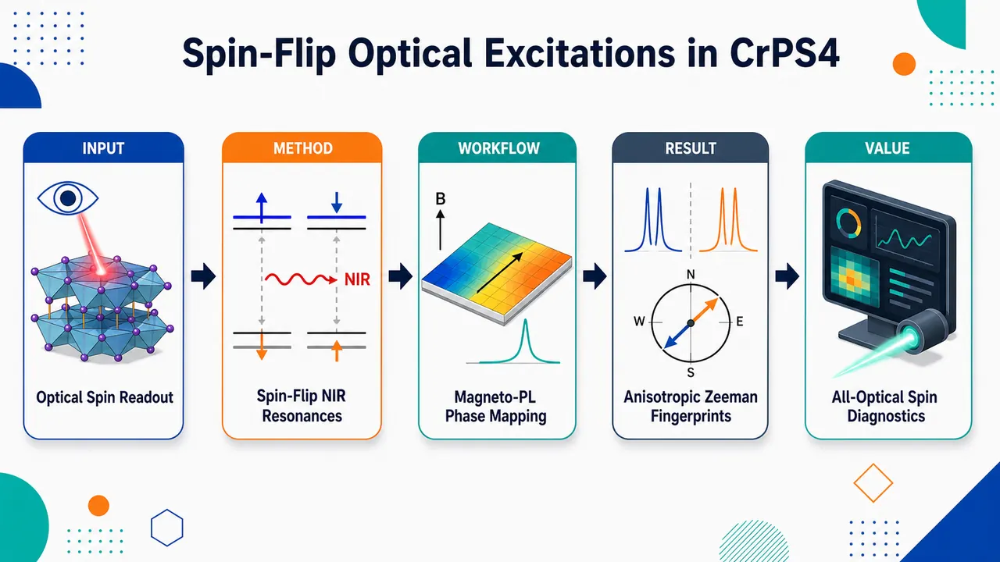
研究问题半导体范德华反铁磁体 CrPS₄ 中，近红外亚带隙窄光学共振是否能作为“光学窗口”直接读取反铁磁自旋序、spin-flop、canted 与饱和相，并揭示自旋取向如何调控跃迁能量、强度和选择定则。创新方法利用此前未报道的超窄近红外共振 X₁≈1.35 eV 与 X₂≈1.38 eV 作为自旋相探针：通过低温磁光 PL 与吸收，在 B∥c/a/b 三个晶轴方向追踪峰分裂、塌缩、蓝移和强度各向异性；Aha 点是把传统难以光学看到的 Cr³⁺ spin-flip d–d 跃迁转化为高灵敏“自旋纠缠光学指纹”。工作流程输入为厚 CrPS₄ 晶体、5–300 K 温度扫描、±9 T 磁场和线/圆偏振近红外光谱；先在 T<Tₙ=38 K 识别 X₁、X₂ 窄峰，再分别施加 B∥c、B∥a、B∥b，记录峰位、线宽、偏振和强度变化；用双 Lorentzian 拟合 X₁ 分裂，用自旋敏感 Zeeman 公式提取 g 因子、spin-flop 场和 spin-saturation 场；输出为 CrPS₄ 不同磁相的全光学光谱地图。关键结果X₁、X₂ 只在 Néel 温度 38 K 以下出现，证明其与反铁磁有序绑定；B∥c 时 X₁ 低场线性分裂，在约 0.9 T 处塌缩并强度骤降，对应 spin-flop；超过约 8 T 后 X₁/X₂ 线性蓝移，得到有效 g=−1.97；B∥a 使 X₁ 强度增强，而 B∥b 使其减弱，显示强烈面内各向异性和自旋取向依赖选择定则；X₂ 被归因于 Cr³⁺ 的 ⁴A₂→²E 零声子 spin-flip 跃迁，X₁ 可能是其约 31.3 meV 声子复制线。应用价值提供一种非接触、微区、全光学读取范德华反铁磁自旋相的方法，可用近红外谱线直接标记反铁磁、spin-flop、canted 和饱和状态；有助于二维磁体器件中的局域磁参数诊断、选择性光操控反铁磁序，以及设计自旋敏感光电和磁光器件。第一部分：核心概览 (Overview)
CrPS₄ 作为半导体范德华反铁磁体，在近红外区呈现此前未报道的超窄光学共振 X₁ 与 X₂；这些共振只在 Néel 温度以下出现，并随磁场方向、强度和自旋相发生显著能量与强度调制，构成自旋纠缠光学激发。磁光 PL 与吸收实验直接给出 spin-flop 场约 0.9 T、spin-saturation 场约 8 T、有效 g 因子约 −1.97，并揭示与晶轴相关的选择定则松弛。该工作把 CrPS₄ 纳入 MnPS₃、NiPS₃ 等层状反铁磁体的自旋纠缠激子谱系，为全光学读取反铁磁自旋相提供了高灵敏路径。
---
第二部分：结构化快速回顾
《Spin-flip optical excitations in van der Waals antiferromagnet CrPS₄》（None，）
背景
半导体范德华反铁磁体可用于研究二维极限磁有序，并服务于自旋电子学、磁振子学和 THz 器件。传统磁光研究多关注 GHz–THz 低能磁振子；CrPS₄ 的近红外光学响应显示，电子 d–d 跃迁也可被反铁磁自旋序强烈调制。
方法
使用低温近红外 photoluminescence (PL) 与 absorption，结合线偏振、圆偏振、温度依赖和 ±9 T 磁场依赖测量。磁场分别沿 c 轴、a 轴、b 轴施加，以追踪不同自旋相和各向异性选择定则。
结果
识别出两个核心窄共振：X₁ ≈ 1.35 eV，仅在 PL 中明显；X₂ ≈ 1.38 eV，同时出现在 PL 与吸收中。二者仅在 T < Tₙ = 38 K 反铁磁相出现。B∥c 时 X₁ 在低场线性分裂，约 0.9 T 附近塌缩，超过 8 T 后线性蓝移；高场拟合得到 g = −1.97。
讨论
X₁ 与 X₂ 的磁场演化与自旋取向强相关，符合自旋敏感 Zeeman 型公式。强度在 spin-flop 相中急剧下降，并随 B∥a 与 B∥b 呈相反趋势，说明 CrPS₄ 存在明显面内各向异性和自旋取向依赖选择定则。X₂ 被归因于 Cr³⁺ 离子 ⁴A₂ → ²E 零声子跃迁，X₁ 可能是其声子复制线。
局限
中间 canted 相中 X₁ 能量位移小于简单模型预期，且线宽增大，说明非共线自旋与自旋无序使解析复杂化。X₁、X₂ 以及卫星峰的微观归属仍带有推测性，缺少统一理论框架。
结论
CrPS₄ 的近红外窄共振是可全光学读取的自旋纠缠激发，能够标记反铁磁、spin-flop、canted 和饱和相。该机制为非接触式微区自旋态诊断、选择性光操控反铁磁序和自旋敏感光电器件提供了基础。
---
第三部分：逐章节冷凝解析
Abstract
- Previously unreported spin-entangled near-infrared resonances
CrPS₄ 的近红外响应中出现此前未报道的自旋纠缠光学共振，核心对象是半导体范德华反铁磁体中的低能亚带隙光学跃迁。摘要直接界定发现对象为 *"previously unreported spin-entangled optical resonances"*，并明确材料体系为 *"the semiconducting van der Waals antiferromagnet CrPS₄"*。这些共振不是普通缺陷发光或带边发光，而是与磁有序耦合的近红外窄峰。
- Magnetic-field dependence confirms biaxial antiferromagnetism
共振的磁场响应具有强烈各向异性，反映底层磁序并确认 CrPS₄ 的双轴反铁磁性质。关键证据来自摘要中的表述：*"The strong and anisotropic magnetic-field dependence of these resonances reflects the underlying magnetic order and confirms the biaxial antiferromagnetic nature of CrPS₄."* 这里的 biaxial 指磁各向异性不只区分面内/面外，而是在晶体 a、b、c 轴之间存在可分辨的各向异性响应。
- Optical extraction of spin-flop and spin-saturation fields
通过光学跃迁随磁场演化，可直接抽取关键磁参数：spin-flop field ≈ 0.9 T 与 spin-saturation field ≈ 8 T。摘要明确写道：*"we extract key magnetic parameters, including the spin-flop (≈ 0.9 T) and spin-saturation (≈ 8 T) fields."* 这一点的意义在于，反铁磁相变参数不必依赖传统磁化率或中子散射，也可由近红外光谱非接触获得。
- All-optical probing of spin states
近红外自旋纠缠共振提供了全光学读取反铁磁自旋态的路径，并具备器件相关性。摘要中的核心定位为 *"a potential pathway for all-optical probing of spin states in van der Waals antiferromagnets"*，应用方向包括 *"spin-sensitive optoelectronic and magneto-optical devices."*
---
Introduction
- Van der Waals magnets enable low-dimensional spin physics and devices
范德华磁性材料为二维极限磁有序研究和新型器件提供平台。开篇给出的领域背景是：*"Van der Waals materials hosting magnetically ordered phases provide a suitable platform to explore magnetism, ultimately in the two-dimensional limit"*，并指向 spintronics、magnonics、THz technologies，即 *"enable the development of novel devices in the areas of spintronics, magnonics, and THz technologies."*
- Conventional magneto-optics mainly tracks low-energy magnons
半导体范德华反铁磁体的磁性质常通过低能磁振子研究，典型谱区为 GHz–THz。原文指出：*"The magnetic properties of these materials are often studied with magneto-optical methods, primarily by tracing the characteristic magnon excitations that appear in the low-energy (GHz-THz) spectral range."* 这构成该工作的切入点：高能光学跃迁也能携带磁序信息。
- Spin order can couple to higher-energy optical transitions
自旋序不仅影响低能磁振子，也会影响电子结构，使离子自旋与高能光学跃迁耦合。关键句为：*"Spin order is, however, also known to affect the electronic properties, resulting in the coupling of ions’ spins to higher-energy optical transitions."* 这里的 spin-entangled optical transitions 指光学激发态能量、强度或选择定则随自旋取向改变而改变。
- Sharp optical resonances are a hallmark of spin coupling in S-vdW-AFs
半导体范德华反铁磁体中，自旋纠缠跃迁常表现为异常尖锐的光学共振。原文写道：*"Such spin-entangled optical transitions are of particular interest in S-vdW-AFs in which they frequently appear in the form of surprisingly sharp optical resonances."* 这些共振只在反铁磁相出现，是最直接的自旋耦合证据：*"Their presence only in the antiferromagnetic phase, as traced with temperature-dependent studies, is the very first signature of the spin-coupling effect."*
- Magnetic field modifies spin order and reveals entanglement
外磁场能够改变反铁磁体自旋序，因此磁场演化是判定光学跃迁是否与自旋纠缠的关键手段。原文表述为：*"More can be learned with inspection of their evolution when applying the magnetic field, which effectively modifies the character of spin order in antiferromagnets."* 这说明实验核心不是仅观察峰，而是观察峰如何响应自旋相变化。
- Near-infrared CrPS₄ study identifies two central resonances
CrPS₄ 近红外响应中聚焦两个此前未观察到的跃迁：X₁ ≈ 1.35 eV 与 X₂ ≈ 1.38 eV。原文给出精确描述：*"the ultra-narrow photoluminescence (PL) transition spotted at the energy of ≈ 1.35 eV and another relatively narrow transition observed at ≈ 1.38 eV in PL and absorption spectra."* X₁ 是超窄 PL 线，X₂ 在 PL 与吸收中均可见。
- Low-temperature-only appearance ties X₁ and X₂ to antiferromagnetism
X₁ 和 X₂ 仅在低温反铁磁相出现，并对磁场改变的自旋序敏感。原文写道：*"These transitions, which appear only at low temperatures, in the antiferromagnetic phase of CrPS₄, are shown to be critically dependent on the character of the spin order that is altered by applying the magnetic field."* 这排除了普通热激活发光作为主因。
- Optical method determines magnetic parameters and g-factor
近红外光谱被建立为读取 CrPS₄ 磁参数的方法。原文直接说明：*"We establish an optical method to determine its characteristic parameters, such as the spin-flop, spin-saturation fields, and g-factor."* 这些量通常来自磁化、磁输运或中子散射，此处由 PL/吸收峰位和强度获得。
- CrPS₄ belongs to transition metal phosphorus chalcogenides
CrPS₄ 属于 transition metal phosphorus chalcogenides (TMPC)，其中多种成员是半导体范德华反铁磁体。原文为：*"CrPS₄ belongs to a broad class of transition metal phosphorus chalcogenides (TMPC), many of which, including CrPS₄, have been identified as S-vdW-AFs."* TMPC 中磁序由金属离子与配体共同决定。
- Crystal structure and A-type antiferromagnetic order
CrPS₄ 具有 monoclinic C2 晶体结构，Néel 温度 Tₙ = 38 K。原文写道：*"It has a monoclinic structure with the C2 space group"*，磁有序 *"emerges below the Néel temperature, Tₙ = 38 K."* Cr³⁺ 磁矩层内沿 c 轴铁磁排列，并沿 a 轴倾斜约 12.5°：*"Cr³⁺ magnetic moments are aligned ferromagnetically within each layer along the crystal’s c-axis, albeit with a slight tilt of approximately 12.5° along the a-axis."* 相邻层反铁磁耦合形成 A-type antiferromagnetic ordering：*"The adjacent layers are antiferromagnetically coupled, resulting in an A-type antiferromagnetic ordering."*
---
Results and discussion
Optical response of CrPS₄ near low energy absorption threshold
- Low-temperature PL contains broad emission plus narrow resonances
5 K 附近的 CrPS₄ 低能吸收边附近 PL 由宽发光带与多个窄谱线叠加而成。原文描述为：*"At low temperatures, the PL spectrum consists of a broad emission band on top of which several relatively narrow spectral features are superimposed."* 其中 F₀ 为显著峰，早先被解释为 Fano 型共振：*"a prominent feature labeled F₀ is clearly visible. This feature has previously been discussed in terms of a Fano-type resonance."*
- X₁ and X₂ are the key newly analyzed transitions
核心分析对象为两个分辨清晰的窄跃迁 X₁ 和 X₂。原文写道：*"we concentrate on the properties of the additional narrow spectral features, in particular on two well-resolved transitions labeled X₁ and X₂."* X₁ 位于低能端且只在 PL 中出现：*"The lower-energy X₁ resonance is observed exclusively in the PL spectra"*；X₂ 位于 PL 高能尾部，并在吸收谱中有明确对应：*"the X₂ transition, appearing in the high-energy tail of the PL emission, has a clear counterpart in the absorption spectrum."*
- Observation requires strict polarization and excitation conditions
X₁、X₂ 检测并不简单，需要精确控制实验条件。原文强调：*"Detecting the X₁ and X₂ transitions is nontrivial and requires carefully controlled experimental conditions."* 零磁场下二者在线偏振 E∥b 时最容易观察：*"At zero magnetic field, both transitions are most readily observed when selecting linear polarization of the emitted light aligned along the crystal b-axis (E∥b)."* X₁ 需要低功率激发，而 X₂ 在较高激发功率下出现在发光中：*"the low-power excitation is crucial for detecting the X₁ emission, while the X₂ transition appears in emission at higher excitation powers."*
- Weak oscillator strength of X₂ requires thick samples for absorption
X₂ 更适合通过吸收测量追踪，但振子强度很低，因此需要厚样品。原文为：*"the X₂ transition can be more suitably traced via absorption measurements; however, its very low oscillator strength necessitates the use of a thick sample."* 后续实验使用厚度约 200–500 μm 晶体，有助于增强弱亚带隙共振的光学响应。
- X₁ and X₂ persist only below Néel temperature
温度依赖 PL 和吸收显示，X₁ 与 X₂ 只在 Tₙ = 38 K 以下反铁磁相中持续存在。原文指出：*"we observe that the X₁ and X₂ transitions persist below the Néel temperature."* 这被解释为自旋耦合的首要证据：*"This is a primary indication that the X₁ and X₂ resonances are coupled to spins, as they emerge only in the spin-ordered antiferromagnetic phase."*
- Additional low-temperature spectral features complicate the spectrum
除 X₁、X₂ 外，低温还出现多个峰状结构，随温度升高逐渐消失。原文写道：*"We also observe the emergence of several other peak-like features at low temperatures, which gradually diminish into smoother spectra as the temperature increases."* X₁ 可能并非单条 PL 线：*"the X₁ emission does not necessarily correspond to a single PL line."* X₂ 两侧还可分辨 X′₂ 与 X″₂：*"two well-resolved transitions (X′₂ and X″₂) are discernible on the high- and low-energy sides of the X₂ resonance."*
- Low-temperature absorption onset is non-monotonic
低温吸收边不是简单单调边缘，而在 X₂ 以下呈现宽峰状结构。原文描述为：*"the absorption onset at low temperatures is not a simple monotonic edge. It exhibits a relatively broad, peak-like structure located below the X₂ resonance."* 该结构在中间温度尤其明显：*"especially pronounced at intermediate temperatures."*
---
Spin-entangled transitions in an external magnetic field
- Magnetic field provides compelling evidence of spin entanglement
外磁场通过改变自旋排列来检验 X₁、X₂ 是否自旋纠缠。原文开宗明义：*"Compelling evidence for the spin entanglement of the X₁ and X₂ transitions arises from experiments where the application of an external magnetic field, B, is used to alter the alignment of the spins."* 数据主要围绕 X₁，但 X₂ 行为大体镜像 X₁：*"The majority of the collected data concerns the behavior of the X₁ transition, which is, however, largely mirrored in the behavior of the X₂ resonance."*
- B∥c low-field splitting of X₁
当磁场沿 c 轴即层外方向施加时，X₁ 随磁场升至约 0.9 T 逐渐分裂为两个分量。原文写道：*"The X₁ transition splits progressively into two components as the magnetic field increases up to ≈ 0.9 T."* 圆偏振分辨 PL 更清楚显示两个分量具有相反手性的部分圆偏振：*"the two components exhibit partial circular polarization with opposite helicity."*
- Intensity suppression near 1 T and merging above spin-flop
X₁ 发光在约 1 T 附近显著被抑制，超过 1 T 后两个分量重新并为单线。原文记录为：*"A notable suppression of the X₁ emission occurs around 1 T."* 以及 *"As the magnetic field increases beyond 1 T, the two X₁ components merge into a single PL line."* 这对应 spin-flop 后自旋转向近似垂直于磁场的构型。
- High-field blue shift above 8 T
当 B ≥ 8 T 时，X₁ 单峰强度增强并向高能线性蓝移。原文为：*"shifts linearly towards higher energy (blue shift) at B ≥ 8 T."* X₂ 在吸收谱中也表现出 1 T 附近强度抑制和 B ≥ 8 T 线性磁场依赖：*"it shows a pronounced intensity suppression at 1 T and a linear magnetic field dependence for B ≥ 8 T, similar to those of the X₁ transition."*
- Lorentzian modeling quantifies X₁ evolution
X₁ 的磁场演化用两个 Lorentzian 函数模拟，二者半宽和强度相等。原文详细说明：*"we modeled the X₁ transition using two Lorentzian functions with equal half-width and intensity."* 两个分量在 B = 0 T 完全重合，并在 B > 1 T 再次重合：*"These Lorentzian components overlap perfectly at B = 0 T and again when B > 1 T."* 模型重现了低场初始分裂、1 T 附近塌缩和高场蓝移：*"we retrieve the initial splitting of the X₁ transition, its collapse into a single line around 1 T, and its progressive blue-shift at higher fields."*
- Spin-sensitive Zeeman formula describes the transition
B∥c 时 X₁ 能量由自旋相对磁场角度控制：
[
EX_₁p̆arrow,dowⁿarrow(B)=EX_₁-gμ_BBo̧sΨp̆arrow,dowⁿarrow(B)
]
原文定义为：*"where Ψ↑,↓ are the apparent angles between the spin’s direction and the applied magnetic field for the two spin sublattices, μB is the Bohr magneton, and g stands for the effective g-factor."* 低场反铁磁相中一个子晶格平行 B，另一个反平行 B：*"spins from one sublattice oriented parallel to B (Ψ↑ = 0°), while those from the second sublattice are oriented antiparallel to B (Ψ↓ = 180°)."*
- Low-field splitting gives |g| ≈ 1.7
低场反铁磁相中公式预言 X₁ 分裂：
[
ΔE(B)=2|g|μ_BB
]
原文说明：*"The splitting value between the two components, Δℰ(B)=2|g|μBB is linear with the magnetic field."* 实验确实观察到线性分裂，并估算 |g| ≈ 1.7：*"from which we estimate |g| ≈ 1.7."*
- Spin-flop field is Bflop = 0.9 ± 0.1 T
当两个子晶格自旋均满足 Ψ↑ = Ψ↓ = 90° 时，X₁ 分裂塌缩为单线。原文解释为：*"the two-component X₁ transition merges into a single line when Ψ↑ = Ψ↓ = 90°."* 这在超过 spin-flop field 后实现：*"Above Bflop, the magnetic moments switch to another equilibrium configuration in which the magnetic moments are aligned perpendicular to the magnetic field."* CrPS₄ 的值被定为 Bflop = 0.9 ± 0.1 T：*"the value of Bflop = 0.9 ± 0.1 T is derived for the CrPS₄ antiferromagnet."*
- Spin saturation occurs at Bsat ≈ 8 T
继续增大磁场后，系统进入 canted phase，两子晶格自旋逐渐转向磁场，最终在 Bsat 以上完全铁磁对齐。原文为：*"the system enters a canted phase in which spins in both sublattices progressively rotate toward the field direction, eventually reaching a fully ferromagnetic alignment above a characteristic spin-saturation field."* 实验估计 Bs = 8 T：*"Such a linear behavior is indeed observed experimentally for fields exceeding the estimated Bs = 8 T."*
- High-field effective g-factor is g = −1.97
在 B > Bsat 中，Ψ↑ 与 Ψ↓ 接近 0°，公式给出与 −gμBB 成比例的线性磁场依赖。原文写道：*"For B > Bsat, both angles Ψ↑ and Ψ↓ approach 0° and Eq. 1 yields a linear magnetic-field dependence of the X₁ transition energy, proportional to −gμBB."* 高场数据提取出 g = −1.97：*"In this regime, we extract an effective g-factor of g = −1.97."* 负号反映跃迁能量随磁场升高而蓝移：*"the negative sign reflects the experimentally observed increase of the transition energy with magnetic field."*
- Difference between low-field and high-field g is attributed to limited splitting precision
低场分裂得到的 |g| ≈ 1.7 与高场 |g| = 1.97 有轻微差异。原文解释为：*"This discrepancy is most likely due to the limited precision in determining the separation between the X₁ components at low magnetic fields."* 这意味着高场线性蓝移给出的 g 更可靠。
- Negative g sign distinguishes CrPS₄ from MnPS₃
CrPS₄ 的有效 g 因子负号与 MnPS₃ 中报道的自旋纠缠跃迁相反。原文强调：*"the extracted negative sign of the effective g factor, which is opposite to that reported for spin-entangled transitions in the antiferromagnet MnPS₃, constitutes a differentiating signature of the CrPS₄ crystals."* 这说明不同 S-vdW-AF 的自旋纠缠光学跃迁虽形式相似，但微观能级结构不同。
- Canted phase energy shift deviates from simple model
在 Bflop < B < Bsat 的 spin-canted 相，简单模型预期 X₁ 能量对磁场呈二次依赖。原文给出近似：*"cos(Ψ↑,↓)=gμBB/gμBBsat"*，并指出 *"Eq. 1 implies a quadratic dependence of the X₁ transition energy on the magnetic field."* 但实验蓝移显著小于估算值；模型预期 Δℰ(Bsat)=gμBBsat=0.92 meV，原文指出：*"the shift is considerably smaller than the estimated value (Δℰ(Bsat)=gμBBsat=0.92 meV) based on Eq. 1."*
- Canted phase broadening indicates spin disorder
中间相的非共线自旋导致解析复杂，且 X₁ 线宽增大。原文写道：*"The spin-canted phase introduces additional complexity due to the noncollinear arrangement of spins."* 线宽证据为：*"This phase likely involves a finite degree of spin disorder in the spin-canted phase, as evidenced by the noticeable broadening of the X₁ transition when Bflop < B < Bsat."*
- Intensity tracks magnetic phases
X₁ 与 X₂ 强度也是识别磁相的参数。B∥c 时，X₁ 强度在 Bflop 处骤降，canted 相内线性上升，在 Bsat 处达到最大，之后逐渐下降。原文完整描述为：*"an abrupt drop in X₁ intensity at Bflop is followed by a linear increase in intensity within the spin-canted phase, reaching a maximum at Bsat, and then gradually decreasing as the magnetic field increases beyond the saturation threshold."*
- Spin-flop intensity suppression implies selection-rule changes
X₁、X₂ 在 spin-flop 相中的强度急剧抑制是意外现象，说明自旋构型显著改变光学选择定则。原文评价为：*"The drastic suppression of the intensity of X₁ and X₂ transitions in the spin-flop phase is a remarkable and unexpected effect."* 其物理含义为：*"the spin alignment in the spin-flop phase significantly modifies the selection rules, which govern the oscillator strength of X₁ and X₂ transitions."*
- In-plane fields reveal axis-dependent intensity anisotropy
B∥a 与 B∥b 实验揭示强烈的面内各向异性。两种构型中，X₁ 在 B ≤ Bsat 时能量几乎不变：*"In both configurations, the energy of the X₁ transition is practically field-independent in the range B ≤ Bsat."* 当磁场超过 Bsat，自旋分别沿 a 或 b 轴排列，X₁ 以与 B∥c 相同斜率线性蓝移，给出 |g| = 1.97：*"the X₁ transition blueshifts linearly with B above Bsat with a slope (|g| = 1.97) identical to the case of B∥c configuration."*
- B∥a enhances X₁ intensity while B∥b suppresses it
面内两个方向的强度响应相反：*"When B∥a-axis, the X₁ intensity smoothly increases with the applied field."* 相比之下，*"when B∥b-axis, the X₁ intensity weakens under the influence of the magnetic field."* 当自旋沿 b 轴排列时，下降更高效：*"with enhanced efficiency of the decrease observable at fields above Bsat, i.e., when spins are aligned parallel to the crystallographic b-axis."*
- b-axis is the intermediate anisotropy axis
B∥c 中 spin-flop 后 X₁ 强度下降，与 B∥b 高场相似，说明 spin-flop 后自旋沿 b 轴排列。原文指出：*"As the crystallographic b-axis corresponds to the intermediate anisotropy axis"*，并进一步说明 *"the spins align along the b-axis once the spin-flop threshold is exceeded."* 这支撑 CrPS₄ 的双轴反铁磁判据。
- Spin-flip transition is normally forbidden but enabled by magnetic order
这种局域 spin-flip transition 在常规自旋和宇称选择定则下是光学禁戒的。原文为：*"Such an on-site spin-flip transition is optically forbidden under spin and parity selection rules."* 但在磁有序相中，选择定则部分松弛，使跃迁获得有限强度：*"In the magnetically ordered phase, however, these selection rules are partially relaxed, enabling the transition to acquire finite intensity."*
- Selection-rule relaxation is highly anisotropic
选择定则松弛程度取决于自旋相对于晶轴的取向，构成 CrPS₄ 中独特的磁序耦合选择定则。原文总结为：*"the degree of selection-rule relaxation exhibits highly anisotropic characteristics determined by the spin orientation with respect to the crystallographic axes."* 以及 *"This constitutes a unique type of selection rule in CrPS₄ crystals inherently coupled to the magnetic order."*
---
Origin of NIR optical response and spin entangled transitions
- Sub-bandgap NIR response originates from Cr³⁺ 3d³ localized transitions
CrPS₄ 的基本带隙约 2.4 eV，而 X₁、X₂ 位于约 1.35–1.38 eV，因此属于低于带隙的局域跃迁。原文指出：*"With the fundamental band gap of CrPS₄ located at relatively high energy, around 2.4 eV, its optical response at lower energies is commonly attributed to localized optical transitions within the 3d³ electronic configuration of the Cr³⁺ ions."*
- Tanabe–Sugano crystal-field framework provides reference
Cr³⁺ 的 3d³ 跃迁通常由晶场理论与 Tanabe–Sugano 能级图解释。原文写道：*"Their interpretation is typically based on crystal-field theory, employing configurational diagrams following the Tanabe–Sugano energy-level scheme."* 典型体系为 ruby：*"the archetypal example being ruby (α-Al₂O₃:Cr³⁺)."*
- Cr³⁺ transitions include quartet and doublet excited states
Cr³⁺ 基态为 ⁴A₂，激发态包括 ²E、²T₁、⁴T₂、⁴T₁。原文列出：*"transitions from the ground-state quartet ⁴A₂ to excited states, including the ²E and ²T₁ doublets, as well as the ⁴T₂ and ⁴T₁ quartets."* 自旋多重度守恒的 quartet-to-quartet 跃迁通常强而宽：*"Transitions conserving spin multiplicity (quartet-to-quartet) typically give rise to relatively strong and broad absorption and photoluminescence features."*
- Quartet-to-doublet transitions are weak and sharp
⁴A₂ → ²E/²T₁ 这类 quartet-to-doublet 跃迁改变自旋多重度，因而强度弱、谱线尖锐。原文为：*"In contrast, quartet-to-doublet transitions are much weaker and appear as sharp spectral lines."* 它们的光学强度来自自旋–轨道耦合或局域对称性降低：*"Their optical response is stimulated by spin–orbit coupling and/or by lowering the local symmetry of the Cr³⁺ sites."*
- Isolated-ion model may not fully apply to CrPS₄
CrPS₄ 中 Cr³⁺ 是晶格组成部分，而非稀释掺杂中心，因此孤立离子分子场模型可能不足。原文提醒：*"The molecular-field model well functional for isolated Cr³⁺ centers may not strictly apply when Cr³⁺ ions form an integral part of the crystal lattice, as in CrPS₄."* 这解释了为何微观归属仍有不确定性。
- Cr₂O₃ analogy suggests Frenkel-type excitons and exchange effects
另一个 Cr 基反铁磁体 Cr₂O₃ 中，光学响应曾用源自单离子 ⁴A₂ → ²E 跃迁的 Frenkel-type excitons 解释，并且受交换相互作用强烈影响。原文写道：*"the formation of Frenkel-type excitons originating from single-ion ⁴A₂ → ²E transitions, and strongly influenced by exchange interactions, are invoked to account for the experimental observations."* 这为 CrPS₄ 中自旋纠缠窄峰提供类比。
- Unambiguous microscopic interpretation remains elusive
Cr³⁺ 的 ²E、²T₁、⁴T₂ 激发态能量接近且排序复杂，使 CrPS₄ 近红外响应难以唯一解释。原文表述为：*"the close energetic proximity and ordering of the excited ²E, ²T₁, and ⁴T₂ states of Cr³⁺ ions significantly influence the spectral characteristics."* 因此，*"an unambiguous interpretation of the near-infrared optical response of CrPS₄ remains elusive."*
- Broad PL and absorption bands are assigned to ⁴A₂ → ⁴T₂
低温下从约 1.375 eV 向低能和高能延伸的宽 PL/吸收带，与孤立 Cr³⁺ 的 ⁴A₂ → ⁴T₂ 跃迁相似。原文给出：*"the broad photoluminescence and absorption bands extending toward lower and higher energies, respectively, from approximately 1.375 eV at low temperatures closely resemble the spectra associated with the ⁴A₂ → ⁴T₂ transitions of isolated Cr³⁺ ions."*
- Narrow resonances are linked to ⁴A₂ → ²E and ⁴A₂ → ²T₁ transitions
叠加在宽谱上的窄共振可归因于直接光学跃迁或其声子复制线，对应 ⁴A₂ → ²E 与 ⁴A₂ → ²T₁ 单离子跃迁。原文写道：*"The narrower resonances superimposed on the broad spectral response can thus be naturally attributed to direct optical transitions and/or their phonon replicas associated with the ⁴A₂ → ²E and ⁴A₂ → ²T₁ single-ion transitions."*
- X₂ is proposed as the zero-phonon ⁴A₂ → ²E transition
X₂ 被提出为类似 Cr³⁺ 单离子 ⁴A₂ → ²E 的零声子直接跃迁，且具有 ΔmS = ±1 的自旋翻转特征。原文明确表示：*"we propose that X₂ resonance is associated with the zero-phonon transition, resembling the ⁴A₂ → ²E direct transitions with ΔmS = ±1 observed in single Cr³⁺ ions."* 这类跃迁的 Zeeman 位移取决于磁场与自旋方向的相对取向：*"This ΔmS = ±1 transition exhibits a Zeeman shift that depends on the orientation of the applied magnetic field relative to the spin direction."*
- X₁ and X₂ satellites are assigned to phonon replicas
X₁、X′₂、X″₂ 被归属为 X₂ 的声子复制线，分布在零声子共振两侧。原文为：*"X₁, X′₂, and X″₂ can be assigned as the phonon replica of the X₂ transition, manifested symmetrically on both the high- and low-energy sides of the fundamental resonance."* X₂ 与 X₁ 的能量间隔为 Δℰ ≈ 31.3 meV ≈ 250 cm⁻¹；X₂ 与 X′₂ 的间隔为 Δℰ′ ≈ 2.5 meV ≈ 20 cm⁻¹。原文给出：*"The energy separation between the X₂ and X₁ resonances is Δℰ ≈ 31.3 meV (≈ 250 cm⁻¹) while the separation between the X₂ and X′₂ resonances is Δℰ′ ≈ 2.5 meV (≈ 20 cm⁻¹)."*
- Matching phonons are not Raman-active but may exist at Γ
与上述间隔匹配的声子未在 Raman 中观测到，但 CrPS₄ 复杂晶胞带来丰富 Γ 点声子模式，尤其在 50–400 cm⁻¹ 范围内模式密集。原文写道：*"Phonons with matching energy are not observed to be Raman active."* 但 *"CrPS₄, due to a relatively complex unit cell configuration, exhibits a rich spectrum of Γ-point (k = 0) phonon modes, which is particularly dense in the 50–400 cm⁻¹ range."* 因此，约 250 cm⁻¹ 的 optical-like phonon 可解释 X₁：*"an optical-like phonon with energies close to 250 cm⁻¹ at k = 0 can be identified, accounting for the X₁ phonon replica of the X₂ zero-phonon resonance."*
- Magnon-continuum replicas remain an alternative explanation
X′₂ 与 X″₂ 也可能不是声子复制线，而是 X₂ 的磁振子连续谱复制线。原文保留替代解释：*"An alternative interpretation of X′₂ and X″₂ is their attribution to magnon-continuum replicas of the X₂ resonance."* X′₁ 也可能来自相邻声子支：*"the X′₁ transition that appears just above the X₁ resonance can be attributed to a replica of the X₂ resonance arising from an adjacent phonon branch."*
---
Conclusions
- Ultra-narrow NIR transitions are newly identified and comprehensively characterized
CrPS₄ 中此前未报道的超窄近红外跃迁被识别并系统表征。结论首句为：*"we have identified and comprehensively characterized previously unreported ultra-narrow near-infrared optical transitions in the van der Waals antiferromagnet CrPS₄."* 这些跃迁是低能亚带隙光学响应中的新谱线，不是常规带边激子。
- Magneto-PL and magneto-absorption prove intrinsic spin entanglement
磁光 PL 与磁吸收共同证明这些共振是内禀自旋纠缠激发。原文写道：*"Through combined magneto-photoluminescence and magneto-absorption measurements, we demonstrate that these resonances are intrinsically spin-entangled excitations."* 其能量与强度由磁有序支配：*"whose energies and intensities are governed by the underlying magnetic order."*
- Optical fingerprints distinguish spin phases
X₁、X₂ 的磁场演化为 CrPS₄ 不同自旋相提供直接光学指纹。原文指出：*"Their magnetic-field evolution provides direct optical fingerprints of the distinct spin phases of CrPS₄."* 具体包括低场共线反铁磁相、spin-flop 相、canted 相和高场饱和相。
- Linear Zeeman splitting extracts effective g-factor
层外磁场中的线性 Zeeman 分裂反映共线反铁磁构型，并用于提取有效 g 因子。原文为：*"The linear Zeeman splitting in out-of-plane fields reflects the collinear antiferromagnetic configuration and enables the extraction of the effective g-factor."* 实验给出的关键数值包括低场 |g| ≈ 1.7 与高场 g = −1.97。
- Spin-flop and saturation fields are determined entirely optically
分裂在 spin-flop 处塌缩，高场饱和后线性位移，使 Bflop = 0.9 T 与 Bsat = 8 T 可完全由光谱确定。结论中明确写道：*"The collapse of the splitting at the spin-flop transition and the high-field linear shift above the spin-saturation threshold allow us to determine the key magnetic parameters, Bflop = 0.9 T and Bsat = 8 T, entirely optically."*
- Anisotropic intensity modulation confirms biaxial antiferromagnetic character
强烈且高度各向异性的强度调制揭示自旋取向依赖选择定则，并证明 CrPS₄ 具有有限面内各向异性。原文总结为：*"the pronounced and highly anisotropic modulation of the transition intensity reveals spin-orientation-dependent selection rules."* 这进一步提供 *"compelling evidence for finite in-plane anisotropy and confirming the biaxial antiferromagnetic character of CrPS₄."*
- Unified theory is still needed
CrPS₄、NiPS₃、MnPS₃ 中均存在自旋纠缠光学共振，呼唤统一微观理论。原文写道：*"The emergence of spin-entangled optical resonances in CrPS₄, alongside their presence in other layered antiferromagnets (e.g., NiPS₃ and MnPS₃), calls for a unified theoretical framework to elucidate their microscopic origin."* 这直接点出当前理论缺口。
- Applications include non-contact spin diagnostics and spin-sensitive devices
纯光学区分磁相为微区非接触诊断和器件设计提供路径。原文结尾指出：*"The demonstrated ability to access and distinguish magnetic phases purely optically opens a pathway toward non-contact diagnostics of spin order at the microscale, selective optical manipulation of spin configurations, and the design of novel spin-sensitive optoelectronic devices."*
---
Experimental
Preparation of the samples
- Two sources of bulk CrPS₄ crystals ensure reproducibility
实验使用两类块体 CrPS₄ 晶体：商业 HQ Graphene 晶体和 CVT 生长晶体。原文为：*"Bulk CrPS₄ crystals from two different sources were investigated: commercially available crystals obtained from HQ Graphene and crystals grown by the chemical vapor transport (CVT) method."* 双来源样品降低了单一生长批次或供应商带来的偶然性。
- Thick samples suppress interference and enhance weak resonances
样品厚度约 200–500 μm，用胶固定在硅衬底上。原文写道：*"Thick samples with thicknesses of approximately 200–500 μm were mounted on silicon substrates using adhesive."* 该厚度兼顾两点：抑制多重内反射干涉，同时保证弱亚带隙共振足够强：*"This thickness range was chosen to suppress interference effects arising from multiple internal reflections within the crystal while ensuring sufficient optical response from the weak sub-bandgap resonances."*
PL and absorption measurements
- Micro-PL uses 515.5 nm continuous-wave excitation
PL 采用微区光学系统，激发光为 515.5 nm 连续波激光，通过 50× 显微物镜聚焦，光斑约 1 μm。原文详细说明：*"the sample was excited using a continuous-wave 515.5 nm laser focused on the sample surface through a 50× microscope objective, resulting in an excitation spot size of approximately 1 μm."*
- Emission detection uses 0.7 m monochromator and cooled Si CCD
发光由同一物镜收集，经 0.7 m 单色仪色散，并由冷却到 120 K 的硅 CCD 探测。原文为：*"The emitted luminescence was collected by the same objective, spectrally dispersed using a 0.7 m monochromator, and detected with a silicon-based charge-coupled device (CCD) camera cooled to 120 K."*
- Absorption uses double-pass transmission geometry
吸收采用双程透射几何，宽带光源替代激发激光。原文写道：*"Absorption measurements were carried out in a double-pass transmission geometry using the same micro-optical setup as for PL, with the excitation laser replaced by a broadband light source."* 光源为石英–钨–卤素灯：*"Light from a quartz–tungsten–halogen lamp was focused onto the Si substrate."*
- Absorption calculation uses reference-normalized logarithm
透过样品并由硅衬底反射后的光再次穿过样品，得到 Itrans；无样品硅衬底反射信号作为 Iref。吸收计算公式为：
[
Iₐbₛ=-łog(Iₜᵣₐₙₛ/Iᵣₑf)
]
原文给出：*"The absorption was then calculated as Iabs = −log(Itrans/Iref)."*
- Temperature and magnetic-field ranges cover AF transition and spin phases
温度依赖实验覆盖 5–300 K，磁光实验最高 ±9 T。原文为：*"the sample was placed either on the cold finger of the liquid helium flow cryostat (5 K to 300 K) or inside a homemade setup for magneto-optical investigations (±9 T)."* 这覆盖了 Tₙ = 38 K 以下反铁磁相和 Bflop ≈ 0.9 T、Bsat ≈ 8 T 所需磁场范围。
---
第四部分：深度理解与语言支持
1. 术语解析
- Spin-entangled optical resonance
字面是“自旋纠缠光学共振”，但这里的 entangled 不一定指量子信息意义上的可验证多体纠缠，而是指光学跃迁的能量、强度、偏振选择定则与自旋构型不可分离。X₁、X₂ 只在反铁磁相出现，且随 spin-flop、canted、saturation 相改变而改变，因此属于 spin-entangled excitations。
- Spin-flop field
Spin-flop field 是反铁磁体在外场沿易轴或近易轴方向施加时，自旋从反平行共线构型突然转入近似垂直于磁场构型的临界场。CrPS₄ 中该值约 0.9 ± 0.1 T。光谱表现为 X₁ 低场两分量分裂突然塌缩，强度急剧下降。
- Spin-saturation field
Spin-saturation field 是反铁磁子晶格自旋在高场下完全转向磁场方向、形成饱和铁磁排列的阈值。CrPS₄ 中约 8 T。超过该场后，X₁、X₂ 进入线性 Zeeman 蓝移区，斜率给出 g = −1.97。
- Oscillator strength
Oscillator strength 表示某一光学跃迁吸收或发射光的强弱，本质上与跃迁偶极矩平方相关。X₂ 的 oscillator strength 很弱，所以吸收测量需要厚样品；X₁、X₂ 在 spin-flop 相强度骤降，意味着自旋方向改变了有效跃迁偶极矩或选择定则松弛程度。
- Zero-phonon transition / phonon replica
Zero-phonon transition 是电子态之间不伴随声子产生或湮灭的直接跃迁；phonon replica 是同一电子跃迁伴随一个或多个声子的旁带。X₂ 被归为 ⁴A₂ → ²E 零声子线，X₁ 可能是其相隔 31.3 meV / 250 cm⁻¹ 的声子复制线。
2. 疑难查证
为什么一个“自旋禁戒”的 d–d 跃迁还能被光学看到？
Cr³⁺ 的 3d³ 构型中，基态 ⁴A₂ 自旋为 S = 3/2，而 ²E 激发态自旋为 S = 1/2。从 ⁴A₂ → ²E 改变自旋多重度，按理说是 spin-forbidden。同时 d–d 跃迁还常受宇称选择定则限制，因此非常弱。
但真实晶体中存在三种“放松机制”：
- 自旋–轨道耦合把不同自旋态轻微混合，使自旋不再是绝对好量子数；
- 局域对称性降低使 d 态与其他轨道成分混合，放松宇称禁戒；
- 反铁磁有序与交换场使电子激发感受到局域自旋背景，跃迁强度取决于自旋排列。
因此 X₂ 这类 spin-flip 跃迁虽然本征很弱，但在磁有序相中可获得有限 oscillator strength，并且强度会随自旋方向强烈变化。
为什么 B∥c 时 X₁ 低场会分裂，而 spin-flop 后又合并？
低场反铁磁相中，两层或两个子晶格的自旋方向相反。若磁场沿 c 轴，近似一组自旋与 B 平行，另一组与 B 反平行。自旋敏感跃迁能量含有项：
[
-gμ_BBo̧sΨ
]
平行时 (o̧sΨ = 1)，反平行时 (o̧sΨ = -1)，因此两个子晶格给出两个不同跃迁能量，X₁ 分裂。
达到 spin-flop 场后，自旋转到近似垂直于磁场，两个子晶格都满足 (Ψ approx 90ⁱ̧rc)，(o̧sΨ approx 0)。两个子晶格的 Zeeman 项相同，因此分裂塌缩为单峰。
为什么高场蓝移对应负 g 因子？
公式为：
[
E(B)=E₀₋gμ_BBo̧sΨ
]
饱和相中自旋沿磁场，(o̧sΨ approx 1)。如果 g > 0，能量应随 B 增大而降低，即红移；实验观察为蓝移，能量升高。因此按该符号约定得到 g = −1.97。负号不是说电子自由 g 因子为负，而是说明该光学跃迁涉及的初末态 Zeeman 能级差具有相反符号。
为什么强度的晶轴依赖能证明 biaxial antiferromagnetism？
单轴反铁磁体通常只区分“沿易轴”和“垂直易轴”，面内两个方向近似等价。CrPS₄ 中 B∥a 使 X₁ 强度增强，而 B∥b 使 X₁ 强度减弱；B∥c spin-flop 后自旋沿 b 轴排列时也出现强度抑制。这说明 a、b、c 三个方向在磁能和光学选择定则中不等价，存在有限面内各向异性，因此支持 biaxial antiferromagnetic character。
---
第五部分：创新评估与关联
1. 创新性判断
- 从低能磁振子读出转向近红外电子跃迁读出
过去几年 S-vdW-AF 的磁光研究主要依赖 GHz–THz 磁振子、Raman magnon 或 Kerr/Faraday 响应。该工作把近红外 d–d / excitonic-like 窄共振作为反铁磁自旋相探针，展示高能光学跃迁也能解析 spin-flop、canted、saturation 等磁相。
- CrPS₄ 中首次识别 X₁、X₂ 自旋纠缠窄共振
CrPS₄ 近红外谱已有宽带发光、吸收边和 Fano 型特征研究，但 X₁ ≈ 1.35 eV 与 X₂ ≈ 1.38 eV 的自旋纠缠性质、偏振选择、温度阈值和磁场演化此前未系统建立。新颖点不只是发现两个峰，而是证明这些峰受自旋相控制。
- 全光学提取反铁磁关键参数
通过峰分裂、峰塌缩和高场线性蓝移，直接获得 Bflop = 0.9 T、Bsat = 8 T、g = −1.97。这解决了微区、薄片或器件构型中传统磁测量灵敏度不足的问题，为局域非接触磁参数读出提供方法。
- 揭示自旋取向依赖的选择定则
B∥a 与 B∥b 下强度响应相反，spin-flop 后强度抑制与 b 轴自旋排列关联，说明 CrPS₄ 的 spin-flip 光学跃迁不仅有能量 Zeeman 响应，还有 axis-dependent oscillator strength。这一点比单纯观察 Zeeman 分裂更深，因为它触及光学跃迁矩阵元如何由磁序调控。
- 为层状反铁磁体统一理论提出新约束
MnPS₃、NiPS₃、CrPS₄ 均出现自旋纠缠窄光学共振，但 CrPS₄ 的有效 g 符号、双轴各向异性和 Cr³⁺ 3d³ 多重态结构不同。该工作为未来统一理论提供了三个硬约束：
- 必须解释 ⁴A₂ → ²E 型 spin-flip 跃迁如何获得强度；
- 必须解释强度为何随 a/b/c 轴自旋方向显著改变；
- 必须解释零声子线、声子复制线和可能 magnon-continuum replica 的共存。
-
16
📄 摘要：建立反铁轴交错磁性机制：反铁轴态中的反向旋转畸变可诱导交错磁性，并构成普遍的多铁耦合途径。论文给出微观基础，将反铁轴铁性序与动量空间自旋劈裂联系起来，说明此类结构畸变可作为材料中生成和调控交错磁序的通用设计原则。
💡 亮点：反铁轴反向旋转畸变被证明可诱导交错磁性，形成结构铁性序与自旋劈裂的多铁耦合机制。该 PRL 为寻找交错磁体提供了从晶格畸变出发的材料设计规则。
📖 展开分析 + 配图
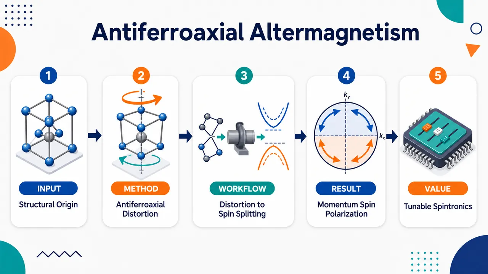
研究问题交替磁性中的动量依赖自旋劈裂究竟能否由非传统磁对称性以外的结构因素驱动？论文聚焦于“反铁轴”结构畸变，追问相邻结构单元的反向旋转轴性畸变如何在晶体中生成交替分布的自旋极化图案，并把反铁轴态、交替磁性和多铁序参量放入同一物理图景中理解。创新方法提出“反铁轴反向旋转畸变诱导交替磁性”的统一机制：把晶格中的轴性旋转畸变视为产生交替磁自旋劈裂的源头，将真实空间中相邻单元反向扭转的结构手性，与动量空间中交替变化的自旋极化直接对应起来。Aha 点是：交替磁性不只可由磁结构对称性解释，也可由可调控的反铁轴结构畸变作为开关来激发。工作流程从具有反铁轴反向旋转畸变的晶体结构出发，识别相邻结构单元中相反方向的轴性旋转；再分析这种结构畸变如何改变电子能带中的自旋相关项；随后建立结构轴性畸变与动量依赖自旋极化之间的对应关系；最终得到交替磁自旋劈裂，并将其与多铁序参量耦合成一个统一机制。关键结果论文表明，反铁轴反向旋转畸变能够诱导交替磁自旋劈裂；反铁轴态与交替磁性可通过同一结构-自旋耦合机制连接；结构中的轴性旋转图案可以映射为动量空间中的交替自旋极化纹理；该机制被提出为一种普遍的多铁途径，但摘要未给出具体材料、劈裂数值或实验验证细节。应用价值该研究为设计交替磁多铁材料提供新的结构调控路线：通过调节晶格中的反铁轴旋转畸变，可能实现对动量空间自旋极化和交替磁自旋劈裂的控制。它可用于构想新型自旋电子器件、结构可控磁性材料，以及把晶格畸变、磁序和多铁响应耦合在一起的功能材料平台。核心概览
本文属于凝聚态物理/磁性材料方向，提出“反铁轴序—交替磁性”的统一机制，说明反铁轴反向旋转畸变可诱导无净磁化的交替磁自旋劈裂，并可与多铁性序参量耦合。
方法要点
- 从概念与机制层面，将反铁轴态定义为凝聚态中一种普遍铁性序。
- 建立反铁轴反向旋转畸变与交替磁自旋劈裂之间的关联。
- 讨论结构手性或旋转畸变如何驱动无净磁化条件下的自旋分裂。
- 将反铁轴序与多铁性序参量耦合纳入统一框架。
- 摘要称给出微观基础与材料层面的通用性，但具体模型、计算方法和材料实例摘要未详述。
关键结果
- 反铁轴序可作为交替磁性的结构起源之一。
- 反铁轴反向旋转畸变能够诱导交替磁自旋劈裂。
- 该机制不需要净磁化即可产生自旋分裂。
- 反铁轴序可与多铁性序参量发生耦合。
- 论文声称该机制具有材料层面的普适性，但具体适用材料和验证细节摘要未详述。
创新性判断
- 可能的新颖点在于把“反铁轴序”与“交替磁性”统一到同一物理机制中，而不只是分别讨论结构畸变或磁性自旋劈裂。
- 相比常规以磁对称性或交换相互作用解释交替磁性的工作，本文强调结构手性/旋转畸变作为驱动源，这可能拓展了交替磁材料的设计原则。
- 将反铁轴序提升为一种普遍铁性序，并讨论其与多铁性序参量耦合，可能为多功能磁电材料设计提供新框架。
- 以上创新性判断基于摘要推断；具体理论深度、与已有工作的差异、材料验证强度摘要未详述。
-
17
📊 含图深析
📄 摘要：研究滑移双层交错磁体中由铁谷态产生的本征反铁磁半金属和拓扑相。题目表明层间滑移调控谷自由度与交错磁序耦合，可在无净铁磁化的反铁磁背景下实现半金属性，并诱导拓扑电子相，面向二维可调自旋-谷电子学。
💡 亮点：滑移双层交错磁体把铁谷态、反铁磁半金属和拓扑相连接起来，层间位移成为调控电子拓扑与自旋极化的旋钮。该方向突出二维交错磁体在自旋-谷器件中的可重构性。
📖 展开分析 + 配图
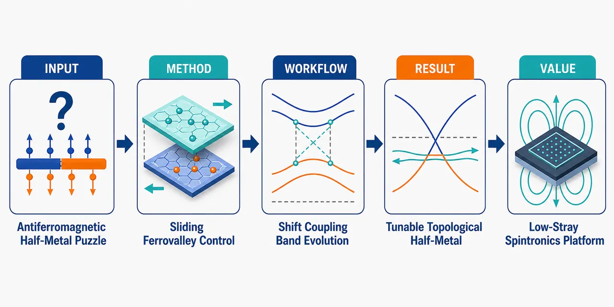
研究问题如何在没有净磁化的反铁磁/交替磁体背景中，利用双层材料的层间滑移调控谷自由度、磁序和能带拓扑耦合，从而产生本征反铁磁半金属态与可切换拓扑相。创新方法提出“滑移双层交替磁体”机制：把层间相对滑移作为可视化的结构旋钮，驱动铁谷态重排，使不同谷、自旋与磁序发生耦合改变，在反铁磁无净磁矩条件下实现半金属性，并同步调控拓扑电子结构。工作流程输入为双层交替磁体结构；通过改变上下层的相对滑移位移，重构层间耦合；进一步改变谷能级、自旋分裂与磁序对称性；诱导铁谷态；最终输出反铁磁半金属态以及随滑移构型变化的拓扑相。关键结果层间滑移可显著改变谷自由度、磁序和能带拓扑之间的耦合关系；铁谷态能够诱导本征反铁磁半金属，使体系在无净磁化背景下仍表现出半金属性；滑移双层结构还提供了可调拓扑电子相的平台。应用价值为低杂散场自旋电子器件提供新材料设计思路：可在反铁磁体系中获得半金属自旋输运，同时通过机械滑移或层间位移实现谷、自旋和拓扑态的可控切换，适用于谷电子学、拓扑自旋电子学和可重构二维器件。核心概览
该论文属于二维磁性材料/自旋电子学与拓扑量子材料方向，研究滑移双层交替磁体中的 ferrovalley 态，并讨论其诱导的本征反铁磁半金属与拓扑相。
方法要点
- 研究对象为“滑移双层交替磁体”，核心调控手段是层间相对滑移。
- 关注交替磁序、谷极化 ferrovalley 态与能带拓扑之间的耦合关系。
- 论文应涉及反铁磁半金属性与拓扑相的判定，但具体计算方法、模型或判据摘要未详述。
- 可能分析滑移对能带、谷自由度和拓扑性质的影响；具体材料体系、参数与计算细节摘要未详述。
关键结果
- 滑移双层交替磁体可形成 ferrovalley 态。
- ferrovalley 态可进一步产生本征反铁磁半金属行为。
- 该体系还可出现拓扑相。
- 摘要明确指出层间滑移、谷极化与交替磁序共同调控能带拓扑。
- 具体材料、能隙大小、滑移距离、拓扑不变量数值等摘要未提供。
创新性判断
- 可能的新颖点在于把“交替磁体 altermagnetism”“ferrovalley 谷极化”和“层间滑移调控”结合起来，用于实现反铁磁半金属和拓扑相。
- 相比常见铁磁或反铁磁谷电子体系，该工作可能强调交替磁序带来的无净磁化或特殊自旋劈裂优势，但摘要未详述机制。
- “本征反铁磁半金属”若无需外场、掺杂或强关联调控即可实现，可能具有材料设计价值；但是否真正无外场、是否实验可实现，摘要未详述。
- 拓扑相的具体类型及其新颖程度无法判断，因为摘要未给出拓扑不变量、边界态或相变机制等信息。
-
18
📊 含图深析
📄 摘要：构建用于分子动力学模拟红外与拉曼光谱的基础深度学习力场。题目表明模型面向光谱响应而非仅结构能量，需在动力学轨迹中同时支撑振动频率、强度相关的势能面与响应量预测。适用于以深度势替代昂贵第一性原理动力学来生成 IR/Raman 谱。
💡 亮点：该工作把基础深度学习力场用于红外和拉曼谱的分子动力学生成，目标是降低第一性原理光谱模拟成本。若具备跨体系泛化能力，将推动材料与分子振动谱的高通量可解释模拟。
📖 展开分析 + 配图
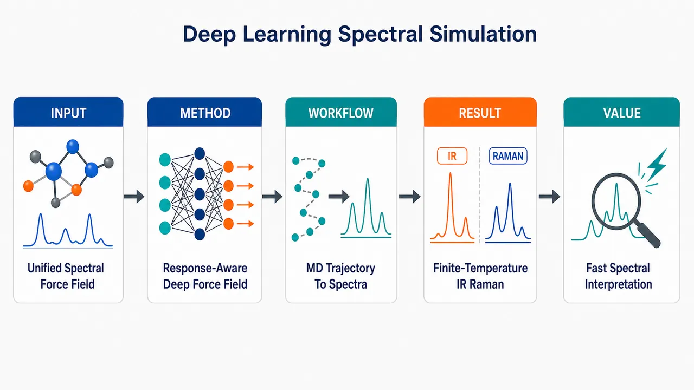
研究问题如何用一个通用深度学习力场，在分子动力学中同时描述分子运动的势能面和光谱响应量，从而直接模拟有限温度下的红外 IR 与拉曼 Raman 光谱。创新方法提出“基础型”深度学习力场：不只学习能量与原子力，还把生成 IR/Raman 光谱所需的响应量纳入同一模型框架，使分子动力学轨迹像一条连续光谱传送带，从原子振动直接转化为红外和拉曼信号。工作流程输入分子或凝聚相体系结构；深度学习力场预测势能面、原子力及光谱相关响应量；运行有限温度分子动力学得到原子振动轨迹；从轨迹中的响应量时间变化计算相关函数；输出 IR 与 Raman 光谱曲线。关键结果论文展示了一种可用于有限温度动力学光谱模拟的基础深度学习力场，能够面向分子体系和凝聚相体系生成红外与拉曼光谱；摘要未给出具体定量精度、加速倍数或与实验/量子化学的详细对比。应用价值为复杂分子和凝聚相材料的振动光谱解析提供更高效的计算工具，可减少昂贵从头算分子动力学的成本，帮助研究者从模拟中解释实验 IR/Raman 谱峰、结构变化和分子相互作用。核心概览
该论文构建面向分子动力学模拟红外与拉曼光谱的基础深度学习力场，属于机器学习势能面与计算振动光谱方向。
方法要点
- 使用深度学习力场来描述分子动力学所需的势能面。
- 力场不仅预测能量/力相关性质，还面向红外与拉曼光谱所需的响应性质。
- 通过分子动力学轨迹计算振动光谱，服务于 IR 与 Raman 谱模拟。
- 目标是建立较通用的“基础”力场框架，而非仅针对单一体系；具体适用范围摘要未详述。
- 训练集规模、模型结构、训练策略、基准方法和误差指标摘要未详述。
关键结果
- 论文声称构建了一个用于分子动力学红外与拉曼光谱模拟的基础深度学习力场。
- 该力场旨在同时提供可靠的势能面和与光谱相关的响应性质。
- 工作面向由动力学轨迹计算振动谱的通用模拟框架。
- 摘要未给出具体数值结果、误差水平、测试体系、光谱吻合度或与传统方法的定量比较。
创新性判断
- 可能的新颖点在于将深度学习力场与 IR/Raman 光谱响应性质统一建模，使其不仅能跑分子动力学，还能直接服务于振动光谱模拟；这一判断基于摘要，具体实现摘要未详述。
- “foundational”表明其可能追求跨体系通用性，而非专用模型；但训练数据覆盖范围和泛化能力摘要未详述，无法确认其实际通用程度。
- 相比常规机器学习势能面，若该工作确实同时学习谱学响应，则在光谱模拟应用上具有更强针对性；但与已有同类模型的差异和优势摘要未给出。
-
19
📊 含图深析
📄 摘要：研究 PINN 在编码物理参数错误时的静默失效。作者在训练前扰动 PDE 参数，称为物理参数投毒或参数错设，得到训练损失很低但解答错误的模型。结论指出仅用损失函数验证 PINN 物理正确性并不可靠，需外部数据、参数校准或鲁棒性诊断。
💡 亮点：该文证明 PINN 可在错误 PDE 参数下收敛到低损失却错误的解，暴露损失驱动验证的盲区。对 AI for science，参数可信度与独立验证应成为物理神经求解器的基本要求。
📖 展开分析 + 配图
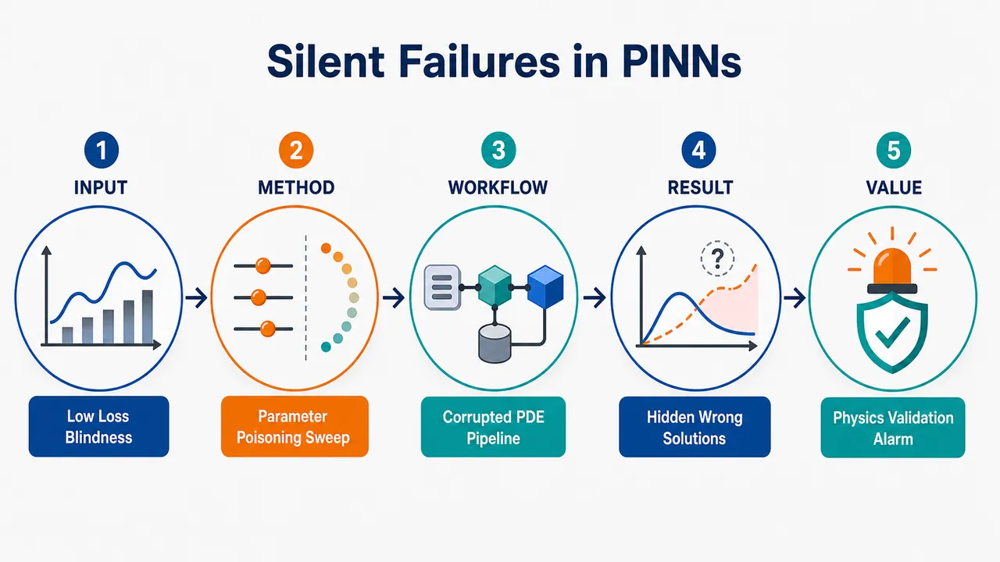
研究问题PINN 将 PDE 残差损失当作“物理正确性仪表盘”，但如果训练时写入的物理参数如黏性系数、雷诺数、扩散系数被误设或篡改，模型是否仍会显示低损失、却生成严重错误的流场/解场，从而形成无报警的静默失败？创新方法提出“物理参数投毒 / 参数误设”框架：在训练前把真实 PDE 参数 λ 改成 λ′=λ(1+δ)，让网络忠实学习错误方程；核心 Aha 点是训练后冻结 PINN，不重训、不用外部真值，只在参数空间扫描 PDE residual loss 曲线，观察损失谷底位置，像物理指纹一样反推出模型实际学到的被污染参数。工作流程输入真实 PDE、边界/初始条件与声明参数 → 将 PDE 参数按比例扰动为错误参数 → 用错误方程训练 PINN 并记录低训练损失 → 与 clean PINN 或 benchmark 比较相对 L2 解误差、检测困难比 R → 测试 residual、ensemble、jitter、inverse recovery 等六种防御 → 冻结模型，在候选参数网格上重新计算残差损失 → 以 loss minimum 是否偏离声明参数来标记污染。关键结果低损失无法区分正确解和错误解：Re=400 方腔流在参数加倍时，poisoned loss 为 0.0071±0.0005，低于 clean baseline 0.0088±0.0003，但解误差达 70.6%；Re=100 对抗搜索在 δ=-60% 时 loss 仅 0.004，L2 误差达 128%；10% Re 降低即可产生 62.5% 误差且损失几乎不变。六种常规防御均不稳定，而 post-hoc loss sweep 在 Burgers、Navier–Stokes cavity、convection-diffusion 中都能恢复实际训练参数。应用价值警示科学计算和工程数字孪生中，低 PINN loss 不能作为物理认证；自动仿真管线、共享 PDE 库、燃气轮机监测、心脏建模、涡轮机械流场重建等场景若参数漂移，可能产生自信但错误的预测。该研究提供一种低成本后验诊断：无需外部数据、无需重训，只需扫描参数-损失地形即可发现隐藏的方程参数错误。第一部分：核心概览 (Overview)
PINN 训练损失长期被视为物理正确性的代理指标；该研究系统证明，只要 PDE 参数被错误编码，模型仍可达到极低残差损失，却输出大幅错误解，形成 silent failure。贡献在于提出 physics parameter poisoning / parameter misspecification 框架，跨 Burgers、Navier–Stokes cavity、convection-diffusion 三类 PDE 验证损失验证的失效，评估六种防御均不可靠，并提出无需重训、无需外部数据的 post-hoc parameter-space loss sweep，可恢复真实训练参数。其地位在于把 PINN 鲁棒性问题从输入扰动推进到“物理方程本身被污染”的训练时失效机制。
---
第二部分：结构化快速回顾
《Silent Failures in Physics-Informed Neural Networks: Parameter Poisoning and the Limits of Loss-Based Validation》（None，）
背景
PINN 通过把 PDE 残差写入损失函数来求解偏微分方程，通常把低训练损失视为物理正确性的证据。但当编码进损失函数的 物理参数错误时，低残差只说明模型很好地满足了错误方程。
方法
构造 physics parameter poisoning：训练前将真实参数 (łambda) 改为 (łambda'=łambda(1+δ))。测试 Burgers 方程、Navier–Stokes 方腔流、convection-diffusion 三类系统；比较 clean PINN 与 poisoned PINN 的训练损失、相对 (L²) 解误差和 detection difficulty ratio (R)。
结果
poisoned 模型常达到与 clean 模型相当甚至更低的训练损失，却产生显著错误解。Re=400 方腔流在 (δ=100%) 时训练损失为 (0.0071±0.0005)，低于 clean baseline (0.0088±0.0003)，但解误差达 (70.6%)。对 Re=100 的 adversarial search 找到 (δ=-60%) 时 (L²) 误差达 (128%)。
讨论
损失函数只能验证模型是否满足“给定方程”，不能验证方程是否正确。不同 PDE 的脆弱性受 方程结构、非线性耦合、PINN spectral bias、损失尺度共同影响。跨 PDE 比较 (R) 时需谨慎，因为极小损失会放大比值。
局限
多数实验种子数较少，cavity 与 Burgers 为 (n=3)，部分 convection-diffusion 和 bidirectional 结果为 single-seed。未测试 Bayesian PINNs、自适应损失权重、Fourier neural operators、PirateNet；adversarial search 是粗网格搜索而非全局最优搜索。
结论
低训练损失不能认证物理正确性。参数污染导致系统性、双向、PDE 依赖、架构无关的 silent failures。六种简单防御均不充分；post-hoc loss landscape sweep 可在不重训、不用外部数据的条件下揭示真实训练参数。
---
第三部分：逐章节冷凝解析 (Section-by-Section Condensing)
Abstract
Low residual loss fails as physical validation
PINN 的核心假设是 低训练损失等价于物理解正确，但在 PDE 参数错误时该假设崩溃。摘要明确指出：*"Low training loss is treated as evidence that the learned solution is physically correct. This paper shows that assumption breaks down when encoded physics are incorrect."* 关键机制不是模型无法优化，而是模型成功优化了错误物理。
Parameter poisoning is both threat model and sensitivity analysis
physics parameter poisoning 指训练前扰动 PDE 参数；该扰动既可表示安全攻击，也可表示普通误配置或敏感性分析。摘要给出定义：*"By perturbing PDE parameters before training, a setting we describe as physics parameter poisoning or parameter misspecification"*，并限定解释边界：*"none of our claims requires an adversary."*
Poisoned models can match or outperform clean loss
核心实证发现是 poisoned loss 无法区分正确解与错误解：*"Achieving low residual loss does not discriminate accurate from inaccurate solutions: poisoned models reach losses at or below the clean baseline yet differ by large margins."* 这直接否定了基于同一损失函数的训练后验证逻辑。
Large errors occur across three PDE systems
跨三类 PDE 的错误幅度很大：Burgers equation、Navier–Stokes cavity、convection-diffusion。摘要量化为：*"poisoned models match or beat the clean-model training loss while their solutions differ by up to 71% in the fixed sweep and up to 128% under adversarial search."* 在 Cavity Re=400，甚至出现：*"the poisoned loss falls below the clean baseline."*
Post-hoc loss sweep detects corrupted parameters
提出的防御不依赖外部数据或重训，而是固定模型、扫描参数值下的 PDE residual loss。摘要强调：*"sweeping the PDE residual loss across parameter values without retraining"*，并声称：*"The loss minimum recovers the true training parameter without external data, and generalizes across all three PDE systems."*
---
1 Introduction
PINNs encode PDEs directly into the loss
PINN 的基本工作流是把控制方程直接嵌入训练目标：*"Physics-informed neural networks (PINNs) solve partial differential equations by embedding the governing PDE directly into the training loss."* 其吸引力来自 mesh-free、无需标注数据、适用于流体、热传导、固体力学和反问题：*"PINNs do not require labeled data or mesh generation, and have been applied widely across fluid dynamics, heat transfer, solid mechanics, and inverse problems."*
The central assumption is residual correctness
PINN 实践中的关键假设是 低 PDE residual loss 代表物理解正确：*"A critical assumption in PINN workflows is that successful training (measured by low PDE residual loss) implies that the learned solution is physically correct."* 该假设尤其影响科学发现场景，例如 Navier–Stokes 正则性相关奇异性研究。
Incorrect encoded physics create silent failures
当损失函数中的 PDE 参数错误时，模型仍可低损失收敛，但输出错误解：*"If the PDE parameters encoded in the loss function are incorrect... the trained model can still reach low loss while producing a solution that is physically incorrect."* 这种现象被定义为 silent failure：训练诊断正常，但实际解错误。
Parameter poisoning differs from input-space attacks
该失效模式发生在训练阶段，污染的是方程本身，而非推理阶段输入坐标。关键区别为：*"Unlike prior work on adversarial input perturbations... physics parameter poisoning operates at training time by corrupting the equations themselves."* 因此任何使用同一错误方程的损失监控都会失效：*"making it invisible to any loss-based monitoring that uses the same corrupted equations."*
Five explicit contributions define the study
贡献包括：形式化 PINN 参数污染威胁模型；跨三类 PDE 展示 silent failures；提出 detection difficulty ratio；评估六种防御；提出 post-hoc loss landscape sweep。原文列出：*"We formalize the physics parameter poisoning threat model for PINNs"*，*"We demonstrate silent failures across three PDE systems"*，以及 *"We propose a post-hoc loss landscape sweep that detects poisoning."*
---
2 Related Work
PINN robustness work has focused on different perturbations
已有 PINN 鲁棒性研究包括边界/初始条件错误、对抗机器学习扩展等，但未系统处理物理参数污染。原文区分为：*"Several works have examined the reliability of PINNs under perturbation... Our work characterizes a different failure mode: corruption of the physics itself."*
Data poisoning analogy shifts the attack surface
传统监督学习中的 poisoning attack 操作训练数据；PINN 中对应的攻击面是 PDE coefficients、boundary conditions、domain geometry。原文明确：*"In the PINN setting, the analogous attack surface is the physics itself: the PDE coefficients, boundary conditions, and domain geometry that define the loss function."*
Known PINN failure modes do not cover parameter corruption
PINN 已知失效包括 spectral bias、时间问题中的 causality violations、超参数敏感性。参数污染此前未被系统刻画：*"Parameter corruption has not been systematically characterized in this setting."*
Scientific discovery pipelines still rely partly on residuals
科学发现型 PINN 管线会结合残差、自相似性、特征值检查等验证，但仍部分依赖 residual correctness。原文指出：*"pipelines of this kind still rest in part on the assumption that low residuals indicate correctness."*
Post-hoc sweep differs from inverse PINNs
inverse PINNs 把参数当成可学习变量，与解一起用梯度下降恢复；该研究的 sweep 固定网络、离散扫描参数，避免过参数化吸收信号。原文比较：*"Inverse PINNs treat PDE parameters as learnable variables"*，但 *"Our sweep instead evaluates the residual of a frozen network over a discrete parameter grid."*
---
3 Threat Model
PINN solves a boundary value problem with parameterized PDE
问题形式为 (N[u;łambda]=0) on (Ømega)，边界条件 (B[u]=g)，初始条件 (u(ḑot,0)=u₀)。变量定义为：*"where (u) is the solution, (N) is the differential operator, (B) is the boundary operator, and (łambda) denotes the physical parameters."*
Loss combines residual, boundary, and initial terms equally
PINN 损失包含 PDE residual、boundary loss、initial loss，且无自适应加权：*"All loss terms are weighted equally; no adaptive weighting is used."* 这意味着参数污染主要通过 interior equation 项进入训练目标，而非通过边界或初始条件。
Attacker modifies physical parameters before training
攻击能力被形式化为 (łambda→łambda'=łambda(1+δ))，其中 (δ) 是 fractional perturbation。原文定义：*"The attacker modifies (łambda → łambda'=łambda(1+δ)) before training."* 现实解释包括自动管线误配置、共享库参数漂移、协作环境中蓄意篡改：*"misconfiguration in automated pipelines, parameter drift in shared PINN libraries, or intentional tampering."*
Defender has only model and training loss
防御者无法访问真实解或外部验证数据，只能看到训练后模型和损失：*"The defender observes only the trained model and its training loss (L(łambda')). The defender does not have access to ground truth solutions or external validation data."* 这使得问题集中于 loss-based validation 的极限。
Silent failure has explicit loss and error thresholds
silent failure 定义为训练损失低于 (τₗₒₛₛ)，同时 poisoned 与 clean PINN 解的相对 (L²) 差异高于 (τₑᵣᵣₒᵣ)。阈值为 (τₗₒₛₛ=0.01)，(τₑᵣᵣₒᵣ=0.05)。原文说明：*"(τₗₒₛₛ=0.01)... and (τₑᵣᵣₒᵣ=0.05)."* 但损失阈值只是启发式：*"This threshold is a heuristic anchored to the cavity baseline rather than normalized across PDEs."*
Detection difficulty ratio measures invisibility
定义 (R=(relative L² error)/L(łambda'))。高 (R) 表示解误差相对于训练损失很大。原文说明：*"A high (R) indicates that solution error is large relative to training loss."* 但跨 PDE 比较需谨慎：*"direct comparison across PDEs should be interpreted with care."*
---
4 Experimental Setup
Three PDE systems span increasing complexity
实验覆盖三类系统：Burgers 方程、Navier–Stokes lid-driven cavity、convection-diffusion。具体参数为：*"Burgers’ equation (1D, time-dependent, (ν=0.01/π)); Navier-Stokes lid-driven cavity (2D, steady, Re=100 and Re=400); Convection-diffusion (2D, time-dependent, (D=0.01), Pe (approx 33.5))."*
Poisoned parameter enters only the interior equation
每个 PDE 的污染参数分别为 (ν)、Re、(D)，且只影响 PDE 内部残差项：*"For each PDE, the poisoned parameter ((ν), Re, or (D)) enters only the interior equation."* 这保证边界条件和初始条件不是主要混淆因素。
Ground truths differ by PDE type
Burgers 与 convection-diffusion 使用 finite-difference 解；cavity 使用 Ghia et al. benchmark。原文说明：*"Ground truths are finite-difference solutions (Burgers, conv-diff... ) and the Ghia et al. benchmark (cavity)."* Burgers 虽有 Cole–Hopf 解析解，但为了流程一致使用 FD：*"an analytical Cole-Hopf solution exists for Burgers but we use FD for pipeline consistency."*
Cavity baseline contains known modeling complications
方腔流设置中 pressure 未做 gauge fixing，角点未 smoothing，导致 clean baseline 对 Ghia 的 (v)-velocity error 达 19.7%。原文给出：*"pressure is unconstrained (no gauge fixing) and no corner smoothing is applied, contributing to the clean baseline’s 19.7% (v)-velocity error against Ghia."*
Training uses standard DeepXDE PINN pipeline
所有 PINN 为全连接网络，激活函数 tanh，Glorot uniform 初始化，DeepXDE + PyTorch backend，float32。训练使用 Adam 与 L-BFGS-B：*"Adam ((lr=10⁻³)) with L-BFGS-B refinement ((ftol=2.2×10⁻¹⁵), (gtol=10⁻⁵), (maxiter=15,000))."* 总计算约 300 GPU-hours，硬件为 NVIDIA T4 与 RTX 4000 Ada。
Attack sweep uses fixed perturbation levels
固定扰动为 (δin0.05,0.10,0.20,0.50,1.0)，Burgers 和 convection-diffusion 额外测试 (δ=2.0)。原文说明：*"then train poisoned models with (δin0.05,0.10,0.20,0.50,1.0) (and (δ=2.0) for Burgers and conv-diff)."*
Solution error is relative to clean PINN unless stated otherwise
核心误差不是相对解析真值，而是 poisoned PINN 与 intended-parameter clean PINN 的相对 (L²) 差异。原文强调：*"Unless otherwise stated, solution error is measured relative to the clean PINN trained with the intended parameter, not directly against an analytical or numerical ground truth."*
---
5 Results
5.1 Parameter Poisoning Produces Silent Failures
Poisoned models consistently reach low loss with wrong solutions
实验表明，参数污染模型低损失收敛但解错误：*"Poisoned models consistently reach low training loss while producing incorrect solutions."* 这不是优化失败，而是诊断失灵。
Re=400 cavity is the most severe fixed-sweep case
Navier–Stokes cavity Re=400 的所有五个扰动均产生 (0.26)–(0.71) 的 (L²) 解误差，且 poisoned loss 不高于 clean baseline。关键数据：(δ=1.0) 时，训练损失 (0.0071±0.0005)，clean baseline (0.0088±0.0003)，误差 (71%)。原文写明：*"At (δ=1.0) (Re doubled from 400 to 800), the poisoned model’s training loss... is below the clean baseline... yet the solution is 71% incorrect."*
Burgers is comparatively resistant
Burgers 在 (δ=+200%) 时误差仅 (8%)，且双向扰动都未产生 silent failure。原文总结：*"Burgers is the most resistant: error reaches only 8% even at (δ=+200%), and no perturbation in either direction produces a silent failure."* 解释与 spectral bias 一致：更高黏性产生更平滑解，更易拟合。
Convection-diffusion shows extremely large raw R
convection-diffusion 的 (R) 可超过 (10⁴)，但主要受极小训练损失分母影响。原文警告：*"Training losses in the (10⁻⁵) to (10⁻⁶) range approach the float32 precision floor; the large (R) values for conv-diff are partly driven by small denominators."*
Seed variance affects losses more than L2 errors
Table 1 指出 cavity 与 Burgers 为 (n=3) seeds；训练损失跨 seed 高变异，有时 (σ≥μ)，而 (L²) 误差更稳定。原文说明：*"Training losses are highly variable across seeds... reflecting the stochasticity of PINN optimization rather than Gaussian sampling; L2 errors are more stable."*
---
5.2 Adversarial Search
Worst-case search finds 128% L2 error
对 Re=100 cavity 在 (δin[-65%,+100%]) 上粗搜索，并约束 (L<0.01)。最坏情况为 (δ=-60%)，即 Re=40，loss (0.004)，(L²) 误差 (128%)。原文给出：*"The worst case is (δ=-60%) (Re=40): the model achieves loss 0.004... while producing 128% L2 error."*
Negative perturbations are more silently dangerous
所有负向扰动均满足 silent failure 条件，而正向扰动超过 +5% 后经常超过阈值。原文写明：*"All negative perturbations produce feasible silent failures... while positive perturbations above +5% frequently exceed (τ)."* 解释为 PINN spectral bias：低 Re 更平滑，网络更易低损失拟合。
L2 greater than 1 indicates severe qualitative failure
(δ=-60%) 下 (L²>1)，意味着预测比零预测还差，流动状态已经定性不同。原文解释：*"L2 >> 1 indicates the prediction is worse than predicting zero."*
---
5.3 Six Defenses: None Suffices
Residual monitoring provides only partial signal
用 stated PDE 即 Re=100 评估 poisoned model 可产生 (3.3×) residual elevation，数值为 0.0112 vs 0.0034。原文指出：*"evaluating it against the stated PDE (Re=100) produces a (3.3×) residual elevation (0.0112 vs 0.0034)."* 但高 Re 时训练方差增大，信号减弱。
Same-parameter ensemble fails under training stochasticity
三个独立 poisoned 模型之间的差异比它们与 clean baseline 的偏差更大：ensemble std 0.470 vs error 0.175。原文总结：*"Same-parameter ensemble... fails: members disagree with each other more than they deviate from the clean baseline."* pressure 因 gauge ambiguity 被排除，只比较 velocity ((u,v))。
Parameter-jitter ensemble is overwhelmed by PINN variance
在 stated Re 附近做 (±2%,±5%,±10%) jitter，poisoned model 与 ensemble 的差异小于 ensemble 内部差异，比例为 (0.81×,0.44×,0.57×)。原文结论：*"PINN training variance at nearby Reynolds numbers exceeds the systematic shift from poisoning."*
Inverse parameter recovery tracks initialization
冻结网络、学习 (łambda) 的 inverse recovery 失败，恢复 Re 受初始化控制而不指向真实参数。原文写明：*"recovered Re tracks initialization, not truth."* 原因是网络权重吸收数据拟合信号：*"The network absorbs data-fitting through its weights, leaving the parameter with negligible gradient pressure."*
Incompressibility checking is not reliable
(nablaḑotu=0) 检查依赖 Re：Re=100/150 时 poisoned divergence 更高，Re=400/800 时反而更低。原文总结：*"poisoned models show higher divergence at Re=100/150 but lower divergence at Re=400/800."*
Loss elevation is regime- and architecture-dependent
Re=100 下可见 (2.7×) elevation，但 Re=400 下 poisoned loss 低于 clean baseline。原文指出：*"detectable at Cavity Re=100... but the poisoned loss falls below the clean baseline at Re=400."* 架构实验中 elevation 从 (1.03×) 到 (2.0×)，表明该信号不稳定。
---
5.4 Post-Hoc Loss Landscape Defense
Parameter-space loss sweep is self-contained
防御思路是固定训练好的模型，对一系列参数值计算 PDE residual loss，不重训。原文定义：*"evaluate the PDE residual loss at a range of parameter values (łambdain[łambdaₘᵢₙ,łambdaₘₐₓ]) without retraining."* 若模型真实训练于 stated parameter，loss minimum 应在 stated parameter 附近。
Loss minimum reveals the actual training parameter
clean 模型均值最小点在 Re=100，poisoned 模型均值最小点在 Re=150。原文数据：*"The clean model’s mean loss minimum falls at Re=100... while the poisoned model’s mean minimum falls at Re=150."* 单 seed 最小点范围 clean 为 Re=100–105，poisoned 为 Re=145–155，零重叠：*"with zero overlap."*
A ±25% rule separates clean and poisoned cavity models
若检查 loss minimum 是否落在 stated parameter 的 (±25%) 内，所有 clean 通过、所有 poisoned 被标记。原文给出：*"A defender checking whether the loss minimum falls within (±25%) of the stated parameter would clear every clean model and flag every poisoned model."*
Defense generalizes across PDE systems
Burgers (δ=+100%) 时恢复 doubled viscosity；convection-diffusion (δ=+200%) 时恢复 tripled diffusivity。原文说明：*"For Burgers... the sweep recovers the exact training viscosity. For convection-diffusion... the sweep again recovers the exact training diffusivity."*
Supporting diagnostics show local loss geometry and spectrum changes
poisoned model 在 stated Re=100 处 (partialL/partial Re) 梯度比 clean 陡 (5.9×)，说明远离 loss minimum。原文：*"The gradient (partialL/partial Re) at stated Re=100 is (5.9×) steeper for the poisoned model."* velocity 高/低频能量比为 clean 的 (6.9×)，但 mean kinetic energy 几乎相同，ratio 0.989。
Computational cost is linear in sweep points
该防御只需残差 evaluator 前向计算，复杂度 (O(k))，实验使用 (k=31)。原文写明：*"The cost is (O(k)) forward passes through the residual evaluator, where (k) is the number of sweep points (we used (k=31))."* 主要限制是必须知道可能被污染的参数和合理扫描范围。
---
5.5 Bidirectional Poisoning
Poisoning works above and below the true parameter
Re=100 cavity 的双向扰动中，8 个非平凡扰动有 6 个产生 silent failures。原文总结：*"Poisoning works in both directions"*，并在表注中写明：*"Six of the eight non-trivial perturbations are silent."*
A 10% Re reduction can be extremely damaging
Re=90，即 (-10%) 扰动，训练损失 0.00324，与 clean baseline 0.00334 几乎不可区分，但 (L²) 误差达 62.5%。原文强调：*"The clearest case is Re=90, where a 10% reduction yields 62.5% L2 error at a training loss (0.00324) indistinguishable from the clean baseline (0.00334)."*
Some high-loss cases are not silent
Re=105 与 Re=200 是两个 non-silent cases，训练损失分别为 0.01066 与 0.01113，超过 (τₗₒₛₛ=0.01)。原文说明：*"The two non-silent cases, Re=105 and Re=200, carry the highest training losses in the sweep."*
Burgers remains resistant bidirectionally
Burgers 负向扰动比正向扰动略高误差和训练损失，但仍未产生 silent failure。原文：*"No Burgers perturbation in either direction produces a silent failure, confirming resistance regardless of direction."*
---
5.6 External Validation
External benchmark detects what loss monitoring misses
将 Re=150 poisoned cavity 模型与 Ghia benchmark 比较后，(u)-velocity 精度退化约 (2×)，(v)-velocity 精度退化约 (1.7×)。原文给出：*"The poisoned model shows approximately (2×) degradation in (u)-velocity accuracy and (1.7×) in (v)-velocity accuracy relative to the clean baseline."*
Clean baseline already has non-trivial cavity error
clean baseline 对 Ghia 的误差为 (u) 方向 4.8%、(v) 方向 19.7%。原文说明：*"The clean baseline itself carries non-trivial error against Ghia (4.8% in (u), 19.7% in (v))."* 这反映标准 PINN 对 cavity flow 的已知局限。
External validation exposes loss-based blindness
poisoning 造成的相对退化可被 benchmark 发现，而训练损失完全漏检。原文总结：*"the external benchmark reveals a discrepancy that loss monitoring misses entirely."*
---
5.7 Architecture Independence and Multi-Seed Validation
Five architectures all show large poisoned errors
测试 5 种架构，参数量从 8.7K 到 133K，激活包括 tanh 与 sinusoidal。原文概括：*"Five architectures (8.7K to 133K parameters, tanh and sinusoidal activations) all produce large solution errors under identical poisoning."*
Loss elevation varies strongly by architecture
loss elevation 从 (1.03×) 到 (2.0×)。原文说明：*"Loss elevation varies from (1.03×)... to (2.0×)."* 这意味着某些架构产生可见信号，另一些架构几乎完全隐形。
Small [64]×3 tanh network is both severe and invisible
([64]×3) tanh 网络参数量 8.7K，clean loss (0.0147±0.0005)，poison loss (0.0151±0.0004)，(L²) error (1.302±0.410)，(R=87±29)。原文强调：*"The [64]×3 network shows the largest L2 error... with negligible loss elevation; the poisoning is both severe and invisible to loss monitoring."*
Single-seed architecture conclusions can be misleading
sinusoidal network 单 seed 曾显得 uniquely silent，但三 seed 后显示 (1.6×) elevation。原文写明：*"The single-seed result was not representative."*
Re=400 multi-seed confirms true silent failures
Table 1 中 cavity Re=400 (δ=100%) 的 (L²) error 为 (0.706±0.123)，poisoned loss 低于 clean baseline。原文总结：*"At Re=400, the multi-seed poisoned loss is below the clean baseline, confirming genuine silent failures."*
---
6 Discussion
PINN loss certifies only the given equations
训练损失只能证明模型满足输入给它的方程，而非证明方程正确。原文核心句为：*"The PINN loss measures only how well the model satisfies the equations it was given."* 当方程错误时，低损失只代表：*"the model has learned the incorrect physics well."*
Silent failure mechanism is diagnostic self-reference
优化器忠实拟合 corrupted target，而诊断指标又用同一 corrupted target 计算。原文解释：*"the optimizer is faithful to a corrupted target, and the diagnostic the practitioner trusts is computed against that same corrupted target."* 这是一种闭环验证失败。
Raw R should be interpreted within PDE systems
(R) 跨 PDE 有四个数量级差异，但主要受 absolute loss scale 影响。原文警告：*"The detection difficulty ratio (R) should be read within each PDE system rather than across them."* convection-diffusion 的 (10⁻⁵)–(10⁻⁶) 小损失导致 (R) 被放大。
Normalized R′ reverses cross-PDE vulnerability ranking
定义 (R'=(relative L² error)/(Lₚₒᵢₛₒₙₑd/Lcₗₑₐₙ))。在 (δ=100%) 时，Re=400 cavity (R'=0.88)，Re=100 cavity (R'=0.17)，convection-diffusion (R'=0.07)。原文指出：*"the cross-PDE ordering inverts."* 这暗示 cavity 可能比 convection-diffusion 更脆弱。
Parameter poisoning also represents ordinary misspecification
虽然使用 poisoning 术语连接安全文献，但同一现象可解释为普通模型误设。原文明确：*"the same results describe ordinary model misspecification."* 实践风险相同：*"a PINN user cannot distinguish correct from incorrect physics through training loss alone."*
Applied domains amplify risk
涉及 gas turbine monitoring、cardiac modeling、turbomachinery flow reconstruction 等应用时，参数错误会带来 confident but incorrect predictions。原文警示：*"parameter corruption, even accidental, could produce confident but incorrect predictions with no diagnostic warning."*
PDE-specific vulnerability reflects structure and spectral bias
Burgers 中提高黏性产生更平滑解且 (L²) 距离小；convection-diffusion 线性算子使参数变化产生近似比例变化；cavity 的非线性速度耦合导致结构变化大。原文总结：*"The variation in detection difficulty across PDE types reflects both equation structure and PINN spectral bias."*
---
7 Limitations
Seed count is limited
cavity 和 Burgers 的 Table 1 为 (n=3)，其他表多为 single-seed；理想情况应 (n≥5)。原文承认：*"Ideally (n≥5) seeds would be used."*
Defense set remains incomplete
六种防御虽然覆盖从简单到较复杂的方案，但仍属 naive formulations。未测试 Bayesian PINNs 和 adaptive loss weighting。原文：*"Bayesian PINNs and adaptive loss weighting were not tested."*
Architecture coverage excludes major neural operator families
所有架构都是标准 feedforward networks，未测试 Fourier neural operators 和 PirateNet。原文写明：*"Fourier neural operators and PirateNet are untested."*
Adversarial search is not guaranteed globally optimal
固定 sweep 加粗 adversarial search 范围为 (δin[-65%,+100%])，找到最坏 (δ=-60%)、Re=40、(L2=1.28)，但可能不是全局最优。原文说明：*"may not be the global optimum."*
Post-hoc defense validation is promising but bounded
post-hoc loss landscape defense 已跨三类 PDE 验证，cavity 三个随机种子零 false positives/false negatives。原文给出：*"validated across all three PDE systems and across three random seeds for the cavity case, with zero false positives or false negatives."* 但这仍不是大规模统计验证。
---
8 Conclusion
Corrupted coefficients cause low-loss wrong PINNs
结论直接指出：*"Corrupted PDE coefficients produce PINNs that converge to low training loss while giving incorrect solutions."* 这是对 PINN loss validation 的核心反例。
Failure is systematic, bidirectional, PDE-dependent, and architecture-independent
参数污染不是孤立个例，而是跨方向、跨 PDE、跨架构存在。原文总结：*"This failure mode... is systematic, bidirectional, PDE-dependent, and architecture-independent."*
Six naive defenses are insufficient
六种候选防御只给出局部信号，无法跨 regime 稳定检测。原文：*"Six naive defenses provide only partial signals; none works across all regimes."*
Post-hoc loss landscape analysis is the strongest defense tested
扫描参数空间中的 PDE residual loss 可揭示真实训练参数，且无需外部数据、重训或修改训练流程。原文总结：*"Post-hoc loss landscape analysis... successfully reveals the true training parameter across all three PDE systems tested."*
Low loss is not physical certification
最终命题是：*"Low training loss does not certify physical correctness."* 这句话概括了整项工作的理论和实践警示。
---
第四部分：深度理解与语言支持 (Understanding & Nuance)
1. 术语解析
Silent failure
字面是“静默失败”。在该语境中不是模型崩溃、loss 爆炸或训练不收敛，而是训练指标正常甚至优秀，但输出解物理错误。关键微妙点在于 failure is hidden from standard diagnostics。这里的 silent 来自监控系统没有报警，而不是误差小。
Physics parameter poisoning
指训练前篡改或误设 PDE 参数，如 (ν)、Re、(D)。poisoning 一词来自安全领域，但该研究反复强调不需要真实攻击者；普通误配置也属于同一数学形式。比 “parameter error” 更强的含义是：错误参数被写入损失函数后，会污染整个训练目标。
Parameter misspecification
比 poisoning 更中性的统计/建模术语，表示模型中指定的参数与真实物理参数不一致。misspecification 强调“模型设定错误”，不暗示恶意。该研究把 poisoning 与 misspecification 并列，是为了兼容安全解释与科学建模解释。
Loss-based validation
指用训练损失或 PDE residual loss 作为模型正确性的验证依据。微妙点是：loss-based validation 在 clean equations 下可能有用，但在 equations 本身错误时会自我循环，因为验证指标与训练目标共享同一错误物理。
Post-hoc loss landscape sweep
post-hoc 表示训练完成后执行；loss landscape sweep 表示在参数空间中扫描 residual loss 曲线。关键不是重新优化网络，而是冻结网络，只改变 residual evaluator 中的参数值，观察 loss minimum 的位置是否与 stated parameter 一致。
---
2. 疑难查证
为什么 poisoned 模型可以低损失但错误？
PINN 的 residual loss 形式是 (N[hat u;łambda'])。如果 (łambda') 错了，优化器只会寻找满足 (N[hat u;łambda']=0) 的函数。只要神经网络容量足够、优化成功，loss 就会低；但真实目标应是 (N[hat u;łambda]=0)。因此低 loss 只证明“满足错误方程”，不证明“满足真实物理”。
为什么同一个模型扫参数会恢复真实训练参数？
训练好的 poisoned 模型 (hat ułₐₘbdₐ') 已经学成了与 (łambda') 相容的解。固定这个 (hat ułₐₘbdₐ') 后，计算不同 (łambda) 下的 residual loss：
[
L(łambda)=|N[hat ułₐₘbdₐ';łambda]|².
]
当 (łambda) 接近训练时使用的 (łambda') 时，(hat ułₐₘbdₐ') 最能满足该 PDE，残差最小；当 (łambda) 回到 stated but untrained 的 (łambda₀) 时，残差变大。因此 loss minimum 的位置像“指纹”一样暴露模型实际学到的物理参数。
为什么 inverse parameter recovery 会失败而 sweep 成功？
inverse recovery 通常同时或间接让网络权重与参数参与优化。过参数化网络可以通过改变权重来吸收误差，使参数梯度变弱或依赖初始化。该研究中的 sweep 固定网络权重，只让 PDE residual evaluator 中的参数变化，因此不会被网络重新拟合掩盖。换言之，inverse recovery 是“边改模型边找参数”，sweep 是“模型不动，只问它最像哪个参数的解”。
为什么 raw R 跨 PDE 比较不可靠？
(R=error/loss)。如果某 PDE 的 loss 天然非常小，例如 (10⁻⁶)，即使 error 只有 0.02，(R) 也会达到 20000。另一个 PDE 的 loss 为 (10⁻²)、error 为 0.7，(R) 只有 70。raw R 会把“损失尺度小”误读成“更危险”。因此跨 PDE 更适合用相对 clean loss 归一化后的 (R')。
---
第五部分：创新评估与关联 (Synthesis & Novelty)
1. 创新性判断
从输入扰动转向方程污染
过去 2–5 年 PINN 鲁棒性研究多关注边界/初始数据噪声、训练不稳定、causality、spectral bias、对抗输入扰动等。该研究的新颖点在于把攻击面或误差源移动到 PDE 参数本身。这比输入扰动更根本，因为 PINN 的物理约束不是外部验证项，而是训练目标本身。
明确证明低 residual loss 不能验证物理正确性
已有工作常承认 PINN 可能难训练，但该研究展示的是更危险的相反情况：训练很成功，loss 很低，结果仍错。Re=400 中 poisoned loss 低于 clean baseline 是关键反例，直接击穿“loss 越低越可信”的实践直觉。
把安全 poisoning 与科学 misspecification 统一起来
“parameter poisoning” 连接机器学习安全，“parameter misspecification” 连接科学建模误差。该统一视角使问题不局限于恶意攻击，也覆盖自动化仿真管线、共享 PINN 库、数字孪生系统中的普通参数漂移。
提出 detection difficulty ratio 并揭示其尺度陷阱
(R) 提供了量化“错误有多隐形”的第一步；进一步讨论 (R) 与 (R') 的差异，说明跨 PDE 比较必须处理 loss scale。这一点比单纯报告误差更细致，也避免把 convection-diffusion 的小分母误判为最高脆弱性。
系统评估多种看似合理但失败的防御
六种防御覆盖 residual monitoring、ensemble、parameter jitter、inverse recovery、incompressibility、loss elevation。创新性不只在提出新防御，也在实证否定常见直觉：多 seed ensemble 可能只测到训练随机性；inverse recovery 可能被网络过参数化破坏；物理一致性检查可能 regime-dependent。
Post-hoc loss sweep 是实用且低成本的核心方法贡献
最有应用价值的创新是 冻结模型、扫描参数、看 residual minimum。该方法无需 ground truth、无需 clean baseline、无需重训，只需 PINN 框架本来就能计算的 PDE residual。相对于 inverse PINNs，它规避了梯度恢复中的参数-权重耦合问题；相对于外部 benchmark，它不需要昂贵数值解或实验数据。
解决的前人未解决问题
前人主要回答“PINN 如何更好训练、如何抗数据噪声、如何处理边界/初值误差、如何恢复未知参数”；该研究回答的是更基础的问题：当 PINN 的物理方程本身被错误指定时，训练损失还能不能作为验证标准？ 答案是否定的，并给出一个可操作的后验诊断方案。
-
20
📊 含图深析
📄 摘要：使用 MMS 任务数据训练监督机器学习模型，自动分类五类等离子体环境：太阳风、磁鞘、内磁层、等离子体片和磁尾瓣。输入包括离子能谱、总磁场、总离子温度、离子速度分量、离子密度和航天器位置；框架结合 CNN 处理离子能谱图并融合辅助物理量。
💡 亮点：该方法用 CNN 与多物理量特征自动标注 MMS 磁层区域，覆盖五类空间等离子体环境。对空间物理大数据，监督学习可替代大量人工事件筛选。
📖 展开分析 + 配图
研究问题海量 MMS 空间等离子体观测中，如何自动判断航天器正处于太阳风、磁鞘、内磁层、等离子体片或尾瓣，并减少 Scientist-in-the-Loop 人工浏览低分辨率数据、筛选高分辨率下传区间的负担；核心难点是不同磁层区域既有能谱图纹理差异，又有磁场、密度、温度、速度和位置等物理参数边界，传统人工阈值法难以在大规模数据、复杂轨道和多种空间天气条件下稳定泛化。创新方法提出“离子能谱图 CNN + 标量等离子体参数 Random Forest”的轻量级混合监督学习框架：CNN 把 32 个能量通道 × 40 个时间点的 3 分钟离子能谱当作图像，识别时间—能量纹理；Random Forest 读取 3 分钟平均的总磁场、离子温度、密度、GSE-X 速度和 GSE-X 位置，补充物理阈值与空间位置判断；两路模型输出五类概率后做平均融合。Aha 点在于：不直接训练高度多变的边界类别，而是先稳定识别主区域，再用标签转变 MSH↔MSP、MSH↔SW、PS↔LOBE 自动生成磁层顶、弓激波和等离子体片边界层。工作流程输入 MMS1 2017 年观测数据，将每段 3 分钟切成含 40 个 4.5 秒采样点的样本；一路把离子能谱整理成 1×32×40 的二维能谱图，归一化后送入 VGG 风格 CNN，提取能量—时间条纹、通量亮带和区域能谱形态；另一路把总磁场、温度、密度、速度、位置在 3 分钟内求平均，归一化后送入 30 棵树的 Random Forest；两路分别输出太阳风、磁鞘、内磁层、等离子体片、尾瓣的概率分布，概率平均后取最大值作为区域标签；最后扫描相邻时间片标签变化，把区域交界转化为 6 分钟边界穿越事件。关键结果在 8979 个专家核验的 3 分钟标注样本上，按 60/20/20 分为训练、验证和测试集；CNN 验证准确率达到 98%，Random Forest 验证准确率达到 98%；混合模型在 1796 个独立测试标签中仅错 14 个，整体测试准确率 99%，平均 F1 为 0.99。相比 Breuillard 2020 使用 34159 个标签、10 类区域、89% 准确率的方法，该框架用更少样本获得更高精度；案例测试覆盖 dayside、flank magnetopause 和 magnetotail，并能识别频繁磁层顶、弓激波及等离子体片边界层转变。应用价值可作为 MMS SITL 数据筛选的自动化前端工具，在 3 分钟尺度快速标注航天器所在磁层区域，帮助优先选择值得下传或深入分析的高分辨率区间，降低每周人工扫描低分辨率数据的运行成本；也可服务磁层动力学、空间天气、磁重联和亚暴研究中的事件检索与统计建库。由于模型轻量、标注需求低、输入数据产品常见，未来有潜力迁移到 THEMIS、Cluster 或其他磁层任务，但跨任务应用仍需验证或重训练。第一部分：核心概览 (Overview)
提出一种面向 MMS 观测的轻量级监督学习框架，将离子能谱图 CNN与标量等离子体参数 Random Forest融合，自动识别太阳风、磁鞘、内磁层、等离子体片、尾瓣五类磁层区域，并通过区域转变检测磁层顶、弓激波、等离子体片边界层。仅用 8979 个 3 分钟标注样本，测试集达到 99% accuracy、0.99 F1，在区域覆盖、精度与训练数据需求之间取得突出平衡，具备 MMS SITL 数据筛选自动化和跨任务迁移潜力。
---
第二部分：结构化快速回顾
《Automatic Identification of Magnetospheric Regions using Supervised Machine Learning Models》（None，）
背景
空间等离子体任务产生海量观测数据，磁层区域识别是研究磁层动力学、空间天气和高分辨率数据筛选的前置步骤。MMS 高分辨率数据仅下传约 4%，依赖 Scientist-in-the-Loop 人工筛选，存在明显运行瓶颈。
方法
使用 MMS1 2017 年公开数据，构建 3 分钟片段，每段含 40 个 4.5 s 采样点。输入包括离子能谱、总磁场、总离子温度、离子密度、GSE-X 离子速度、GSE-X 位置。CNN 处理 32×40 能谱图，Random Forest 处理区间平均标量参数，两者类别概率平均融合。
结果
五类区域总样本 8979，按 60/20/20 分为训练、验证、测试集。CNN 验证精度 98%，Random Forest 验证精度 98%，混合模型测试集 1796 个标签中仅 14 个错误，整体 99% accuracy、0.99 averaged F1。
讨论
相较 Breuillard 2020 的 34,159 labels、89% accuracy、10 regions，该方法用更少样本实现更高准确率；相较只覆盖 dayside 或三类区域的方法，覆盖五个主要磁层环境，并天然支持边界检测。
局限
跨任务泛化仍需验证或重训练；训练集虽小而有效，但对极端空间天气和罕见条件的鲁棒性可能受限；边界未作为独立标签训练，而是通过区域转变后处理得到。
结论
CNN+Random Forest 融合框架可在 3 分钟分辨率下高精度、低计算成本识别 MMS 磁层区域，并可作为未来磁层任务自动化数据处理和下传优先级筛选工具。
---
第三部分：逐章节冷凝解析 (Section-by-Section Condensing)
Abstract
- Hybrid supervised architecture for five-region classification
核心任务是用监督机器学习自动识别五类磁层等离子体环境：solar wind、magnetosheath、inner magnetosphere、plasma sheet、lobe regions。输入特征覆盖粒子、场、矩和轨道位置数据，包括离子能谱、总磁场、总离子温度、GSE-X 离子速度、离子密度、航天器位置；原始表述为 *"ion energy spectra, total magnetic field, total ion temperature, ion velocity component, ion density and spacecraft position data to classify five distinct plasma environments: solar wind, magnetosheath, inner magnetosphere, plasma sheet, and lobe regions."*
- Complementary CNN and Random Forest division of labor
模型结构将非结构化二维能谱图模式识别与标量物理参数分类分离处理：CNN 用于离子能谱图，Random Forest 用于平均磁场、温度、速度、密度和位置参数。机制描述为 *"The approach combines a convolutional neural network (CNN) for analyzing ion energy spectrogram data with a Random Forest classifier for scalar plasma parameters."* CNN 把能谱视为图像式数据，使用二维卷积提取时空模式：*"The CNN method employs 2D convolution to identify spatial and temporal patterns in the ion energy spectrogram treated as image-like data."*
- High accuracy at operational temporal resolution
混合模型在测试数据上达到99% accuracy 与 0.99 F1 score，区域识别分辨率为 3 minutes。关键结果为 *"Our hybrid model achieves 99% accuracy on test dataset with an F1 score of 0.99, providing reliable automated region identification at 3-minute temporal resolution."*
- Lightweight and transferable operational claim
方法强调低人工标注需求与跨任务适配性，适合类似数据产品的磁层任务。证据表述为 *"This lightweight approach requires minimal manual data labeling and can be readily applied to other magnetospheric missions with similar data products."*
Plain Language Summary
- Scientific motivation: region identity enables space weather interpretation
磁层区域识别用于解析不同空间等离子体区域的动力学及其对空间天气的影响；简明表达为 *"Identifying magnetospheric regions in space plasmas around Earth helps us to study the dynamics of each region and how it impacts Earth’s space weather."*
- Automation replaces time-consuming visual inspection
自动程序判断航天器所在磁层区域，减少人工浏览与判读负担。直接描述为 *"We developed a computer program that can automatically identify which region of space around Earth a spacecraft is located in, eliminating the need for time-consuming manual analysis."*
- Two-method fusion mirrors human visual and physical-parameter judgment
一个方法把粒子能量数据当作图像识别模式，另一个方法处理磁场、温度等仪器量测。原始解释为 *"It uses two different methods working together: one treats particle energy data like images to spot patterns, while another processes instrument measurements like magnetic field and temperature."*
- Low-power, low-label, 3-minute automatic identification
系统以较低计算资源每 3 minutes 输出一次区域判断，准确率 99%。关键表述为 *"The automated system achieves 99% accuracy and can make identifications every 3 minutes without requiring much computer power or extensive manual training data."*
1 Introduction
- Region identification is prerequisite for magnetospheric science
大型空间等离子体任务产生海量数据，理解磁层动力学和空间天气现象需要系统分析；不同等离子体环境的准确识别是基础步骤。原始依据为 *"Space plasma missions generate vast quantities of data requiring systematic analysis to understand magnetospheric dynamics and space weather phenomena."* 以及 *"Accurate identification of distinct plasma environments including the magnetosphere, magnetosheath, solar wind, plasma sheet, and lobe regions represents a fundamental prerequisite for scientific analysis."*
- Five physical regions have distinct plasma and magnetic properties
Solar wind 是从太阳向外流动的连续带电粒子流，速度 300–800 km/s，携带行星际磁场并驱动磁层动力学；定义为 *"Solar wind is a continuous stream of charged particles flowing outward from the Sun at speeds of 300-800 km/s."*
Magnetosheath 位于弓激波与磁层顶之间，太阳风经过弓激波后被减速、加热、压缩；描述为 *"the turbulent region between the bow shock and magnetopause where the solar wind has been slowed, heated, and compressed after passing through the bow shock."*
Inner magnetosphere 靠近地球，从高层大气延伸至约 6–10 Earth radii，由地球偶极磁场主导；表述为 *"extending from the upper atmosphere to about 6-10 Earth radii, dominated by Earth’s dipolar magnetic field."*
Plasma Sheet 是磁尾中心热等离子体薄电流层，通常从下游约 10 到 100+ Earth radii，是亚暴期间磁重联和粒子加速关键区；依据为 *"typically extending from about 10 to 100+ Earth radii downstream"* 和 *"a key site for magnetic reconnection and particle acceleration during substorms."*
Lobe 位于等离子体片上下方，低温且磁力线向尾部拉伸；定义为 *"characterized by low temperature and magnetic field lines that are stretched tailward."*
- Manual classification is expert-dependent and labor intensive
有经验研究者可通过等离子体参数和粒子能谱图目视区分区域，但对大数据集和统计研究成本高。证据为 *"Experienced researchers can visually distinguish these regions through inspection of plasma parameters and particle energy spectrogram data but the task can be labor intensive for large datasets and statistical studies."*
- MMS, THEMIS, and Cluster motivate scalable classification
多个大型磁层任务持续积累观测数据，包括 MMS launched in 2015、THEMIS launched in 2007、Cluster operational from 2000 to 2024。原始表述为 *"Multiple large-scale magnetospheric missions currently orbit Earth, collecting substantial volumes of observational data."* 以及 *"MMS mission launched in 2015 ... THEMIS mission launched in 2007 ... Cluster mission operational from 2000 to 2024."*
- Data downlink bottleneck creates operational urgency
MMS 由于深空网联系时间和星上存储有限，仅下传约 4% 高分辨率数据；当前 SITL 自 2015 年发射以来由训练科学家人工扫描低分辨率数据并选择高分辨率下传区间，每周需要志愿科学家。关键证据为 *"the MMS mission downlinks only approximately 4% of its recorded high-resolution data"*，以及 *"trained scientists manually scan low resolution data to select intervals for high resolution downlink."* 运行负担被明确为 *"This labor intensive process requires a volunteer scientist weekly."*
- Threshold methods lack generalization and require oversight
传统方法依赖目视检查和经验阈值，dayside 区域已有阈值分类，磁尾识别常结合阈值与背景参数统计；但需要大量人工监督，跨空间天气条件或任务构型泛化不足。证据为 *"Traditional region identification approaches rely on visual inspection and empirically determined thresholds applied to plasma parameters."* 以及 *"these approaches require significant manual oversight and may not generalize effectively across different space weather conditions or mission configurations."*
- Existing machine-learning methods show progress but remain incomplete
Breuillard et al. 2020 用 FCN、12 plasma parameters、3-minute resolution 识别 10 regions，准确率 89%；Argall et al. 2020 用 LSTM 和 123 parameters 以 4.5-second resolution 检测磁层顶穿越；Olshevsky et al. 2021 用 3D particle energy distributions 分类 dayside 区域，准确率 >98%；Nguyen et al. 2022 用轻量级 gradient boosting 基于磁场与等离子体矩识别 three magnetospheric regions 并支持多任务。原始依据包括 *"Breuillard et al. (2020) developed a fully convolutional network (FCN) achieving 89% accuracy in identifying 10 magnetospheric regions using 12 plasma parameters at 3-minute resolution from MMS data"*，以及 *"Olshevsky et al. (2021) utilized 3D particle energy distributions for dayside region classification, achieving greater than 98% accuracy."*
- Identified methodological gap: large-scale, comprehensive, high-accuracy classification
现有自动分类方法仍缺少同时满足大数据系统处理、全面区域覆盖、高精度的能力。核心问题表述为 *"current automated classification methodologies lack the capability to systematically process large datasets with both comprehensive regional coverage and high accuracy."*
- Proposed contribution: lightweight high-accuracy supervised model
研究目标是用 MMS 数据识别所有主要磁层区域，采用 CNN 处理离子能谱、Random Forest 处理标量参数。创新定位为 *"a lightweight, high-accuracy supervised learning model specifically designed to identify all primary magnetospheric regions using MMS data."* 方法优势概括为 *"This hybrid methodology achieves superior performance while maintaining computational efficiency and minimal training data requirements."*
2 Data and Methodology
2.1 The MMS Mission
- MMS mission architecture supports reconnection-focused sampling
MMS 使用四颗相同航天器构成受控四面体编队，主要研究地球磁层内磁重联过程；轨道为高椭圆轨道，以最大化重联区域观测时间。证据为 *"The MMS mission employs four identical spacecraft in a controlled tetrahedral formation to study magnetic reconnection processes throughout Earth’s magnetosphere"*，以及 *"The mission’s highly elliptical orbit maximizes observational time in regions where magnetic reconnection occurs."*
- Only MMS1 is used because spacecraft are identical at chosen resolution
数据仅来自 MMS1，理由是四颗航天器相同，且在所用时间分辨率下可视为等价。直接依据为 *"We only use MMS1 for our data collection since all spacecraft are identical."*
- Instrument sources and native resolutions are specified
FPI 提供离子能谱、离子密度、离子速度、离子温度，survey mode 时间分辨率 4.5 seconds；FGM/FIELDS 提供磁场数据，分辨率 0.1 second；MEC 提供航天器位置。原文依据为 *"Ion energy spectra measurement, ion density, ion velocity and ion temperature are provided by the Fast Plasma Investigation (FPI) instrument ... at 4.5 second temporal resolution in survey mode."* 以及 *"Magnetic field data are obtained from the Fluxgate Magnetometer (FGM) ... at 0.1 second resolution."*
- 3-minute segment construction defines model temporal resolution
每个样本为 3-minute data segment，对应 40 data points at 4.5 second resolution。主要测量包括离子能谱、总磁场、总离子温度、离子密度、GSE-X 离子速度、GSE-X 位置。每个 3 分钟片段赋予单一区域标签，形成 3 分钟区域识别。证据为 *"we construct 3-minute data segments (40 data points at 4.5 second resolution)"* 和 *"Each 3-minute segment receives a single region label, providing 3-minute temporal resolution for region identification."*
2.2 Training Data Generation and Labeling
- Five target labels cover main magnetospheric environments
目标标签包括 SW、MSH、MSP、PS、LOBE，对应太阳风、磁鞘、内磁层、等离子体片和尾瓣。原始表述为 *"We identify five primary magnetospheric regions: solar wind (SW), magnetosheath (MSH), inner magnetosphere (MSP), plasma sheet (PS), and lobe (LOBE)."*
- Training data are drawn from one full year of MMS coverage
标注数据来自 2017 年公开 MMS 数据，覆盖全年轨道。证据为 *"using one year (year 2017) of publicly available MMS data for a comprehensive coverage of all orbits."*
- Manual expert verification increases label reliability
数据集经过有经验空间等离子体研究者人工核验，并在质量控制后选择代表性样本。依据为 *"The dataset has undergone manual verification by experienced space plasma researchers."* 与 *"Following quality control, representative samples per region class are selected."*
- Class-balanced dataset contains 8979 samples
训练集总体较平衡，总样本 8979。各类计数为 SW 2285、MSH 1541、MSP 1616、PS 1749、LOBE 1788。表格信息对应 *"Number of occurrences for each label/region in dataset (8979 total count)."* 类别不平衡被指出为常见问题：*"Data imbalance is a common issue in space physics."*
- Stratified 60/20/20 split preserves class distribution
数据集按 60% training、20% validation、20% test 分层抽样划分，分别为 5387、1796、1796 个样本。证据为 *"The dataset was partitioned into training (60%), validation (20%), and test (20%) subsets using stratified sampling"*，目标是 *"ensure each subset maintained the same class label distribution as the original dataset."*
- Small dataset is sufficient because main-region patterns are consistent
由于只识别主要磁层区域，不把边界作为深度模型标签，较小数据集即可表现良好；边界变化较大，若纳入标签则需要显著更大样本。依据为 *"Since we are identifying the main magnetospheric regions, a small dataset will perform well with deep learning models since the patterns are very similar for each region."* 对比 Breuillard 2020 的边界/多类需求为 *"the model developed by Breuillard et al (2020) with 34,159 labels."*
2.3 Data Preprocessing
- Ion spectra and scalar parameters have distinct tensor structures
离子能谱包含三维：time series 40 points、energy bins 32 bins、flux magnitude；等离子体参数为二维：时间序列与参数值。原文为 *"Ion energy spectra possess three dimensions: time series (40 points), energy bins (32 bins), and flux magnitude."* 以及 *"Plasma parameters ... are two-dimensional with time series and parameter values."*
- Positive quantities use min-max normalization to [0, 1]
对能谱、磁场强度、总离子温度、离子密度等正值变量采用 min-max 归一化至 0–1。证据为 *"All positive quantities ... undergo min-max normalization to values between 0 and 1."*
- Velocity and position use asymmetric-preserving normalization to [-1, 1]
离子速度和位置通过分段线性变换归一化到 -1 到 1，因为原始范围不关于零对称；这样保留方向信息，如 dayside/nightside 和 earthward/tailward。原文为 *"Ion velocity and position data are normalized between -1 and 1 using a piecewise linear transformation"*，目的为 *"to preserve directional information, for example distinguishing dayside (positive X) from nightside (negative X) locations or earthward flows (negative velocity) from tailward flows (positive velocity)."*
3 Hybrid Model Design
- Hybrid design addresses data-type heterogeneity
架构将两类机器学习方法组合：CNN 适合能谱图，Random Forest 适合标量参数。该组合被定义为 *"a novel hybrid architecture combining two complementary machine learning techniques optimized for different data characteristics."*
- CNN alone is insufficient for visually similar regions
内磁层和等离子体片在离子能谱图上可能相似，仅 CNN 难以可靠区分；二者差异更多体现在磁场、离子矩和位置。依据为 *"the CNN model is not solely enough to identify all regions since regions like inner magnetosphere and plasma sheet could have similar patterns in ion energy spectrogram"*，以及 *"These regions have different values in magnetic field, ion moments and their locations."*
- Random Forest supplies physical scalar discrimination
Random Forest 使用磁场、等离子体矩和位置等参数区分能谱相似区域，从而提升整体可分性。功能描述为 *"we use the random forest model on plasma parameters so we are able to clearly distinguish all the regions."*
- Model goal balances accuracy and lightweight computation
混合模型被设计为高准确率同时保持轻量。原文为 *"A hybrid model like this will result in high accuracy while keeping the model lightweight."*
3.1 Convolutional Neural Network for Flux Data
- Spectrogram input is image-like with shape (1, 32, 40)
离子能谱图作为图像式数据输入，维度为 channels=1、energy bins=32、timeseries=40，对应 3-minute resolution。原始表述为 *"Ion energy spectrograms are treated as image-like data with dimensions (1, 32, 40) representing channels, energy bins, and timeseries (3-minute resolution), respectively."*
- VGG-style CNN uses small 3×3 convolutional filters
CNN 采用基于 Visual Geometry Group (VGG) 的深层结构，使用 3×3 convolutional filters。依据为 *"We employ a CNN architecture based on the Visual Geometry Group (VGG) design, characterized by deep structure utilizing small 3×3 convolutional filters."*
- CNN extracts temporal-energy spectral signatures
多个卷积层跨时间和能量维度识别模式，用以捕获不同等离子体环境的特征能谱签名。证据为 *"The CNN processes the ion energy spectra data through multiple convolutional layers, enabling pattern recognition across both temporal and energy dimensions."* 以及 *"This approach captures the characteristic spectral signatures that distinguish different plasma environments."*
- Architecture contains three convolutional blocks with two convolutional layers each
CNN 包含 three convolutional blocks，每个 block 有 two convolutional layers，输出为 5 labels 的多分类。原文为 *"The model includes three convolutional blocks with two convolutional layers each. It is designed for multi-class classification with 5 output labels."*
- ReLU, dropout, Adam, and early stopping define training protocol
激活函数为 ReLU，训练中随机丢弃 50% neurons 以防过拟合；优化器为 Adam；学习率写作 5−5 / 5⁻⁵，语义上应指极小学习率但排版存在不清晰；早停规则为验证准确率连续 5 epochs 无提升即停止并恢复最佳权重。证据为 *"It uses Rectified Linear Unit (RELU) activation function"*，*"randomly drops 50% of neurons during training to prevent overfitting"*，*"We use optimizer Adam in our model"*，以及 *"If there are no improvement in validation accuracy for 5 consecutive epochs, the model stops training and restore the best model weights."*
- CNN validation accuracy reaches 98% by step 38
CNN 共训练 43 steps，最佳验证准确率在 step 38 达到 98%。原文为 *"This CNN model is trained for 43 steps ... using early stopping method"* 和 *"We achieve the accuracy of 98% on the validation data in the CNN model at step 38."*
- Cross-entropy loss indicates rapid convergence
损失函数为交叉熵，训练和验证损失在前几个 epoch 快速下降，约 epoch 5 后降至 0.1 or lower 并趋平，说明模型几乎收敛。证据为 *"The loss ... is calculated using cross entropy function"*，*"both training loss (blue) and validation loss (orange) decrease quickly in the first few epochs"*，以及 *"After about epoch 5, both losses flatten near 0.1 or lower, indicating the model has almost converged."*
3.2 Random Forest for Scalar Parameters
- Scalar parameters are averaged over each 3-minute interval
Random Forest 输入为总磁场、离子密度、GSE-X 离子速度、总离子温度、GSE-X 位置，每个 3 分钟标签区间内有 40 个 4.5 秒采样点，并对每个参数取平均后输入模型。依据为 *"Plasma parameters ... with dimensions (1, 40) are processed using a Random Forest classifier"*，以及 *"These parameters are averaged in each labeled interval and are inputs into Random Forest model as scalar values."*
- Random Forest uses 30 decision trees
模型构建 30 decision trees，使用 bootstrap aggregation 和随机特征选择。证据为 *"This ensemble method constructs 30 decision trees using bootstrap aggregation and random feature selection at each split."*
- Ensemble randomness reduces overfitting and improves generalization
随机特征与自助采样提升泛化，优于单棵决策树。原文为 *"This randomness helps reduce overfitting and improves generalization."* 和 *"random forests achieve higher accuracy and robustness compared to single decision trees."*
- Random Forest captures region-specific parameter ranges
决策树基于平均量学习不同磁层区域的典型参数范围，适合处理离散参数边界。依据为 *"capturing the characteristic parameter ranges associated with each magnetospheric region"*，以及 *"particularly effective for the discrete parameter boundaries that often distinguish plasma environments."*
- Random Forest validation accuracy is 98%
标量参数模型在验证集上达到 98% accuracy。直接证据为 *"This model achieves 98% accuracy on the validation data."*
3.3 Model Integration and Prediction
- Final prediction uses probability averaging
CNN 和 Random Forest 各自输出五类区域的概率分布，最终通过概率求和并平均得到融合概率，最大概率类别为最终标签。原文为 *"The final classification combines outputs from both models through probability averaging"*，以及 *"These probabilities are simply summed and averaged to produce the final prediction, with the maximum probability determining the predicted region label."*
- Ensemble reduces single-model failure modes
融合利用 CNN 的复杂能谱模式识别能力和 Random Forest 的离散物理参数边界处理能力，使预测对单模型局限不敏感。证据为 *"This ensemble approach leverages the complementary strengths of both methods"*，并且 *"The integration provides robust predictions that are less susceptible to individual model limitations."*
4 Results
4.1 Model Performance Metrics
- Evaluation uses unseen test data and standard classification metrics
性能评价基于模型未见过的独立测试集，指标包括 accuracy、precision、recall、F1 score。依据为 *"We evaluate model performance using standard machine learning metrics including accuracy, precision, recall, F1 score on a separate test data that the model has not seen."*
- Confusion matrix shows only 14 errors among 1796 test labels
测试集共有 1796 labels，混合模型仅 14 incorrect prediction。关键证据为 *"the hybrid model has 14 incorrect prediction out of 1796 labels."*
- Overall test performance is 99% accuracy and 0.99 averaged F1
混合模型测试集准确率 99%，平均 F1 score = 0.99，说明 precision 与 recall 均衡，误报和漏报均较少。原文为 *"Our hybrid model achieves 99% accuracy on the test dataset with an averaged F1 score of 0.99"*，以及 *"The high F1 score indicates balanced precision and recall, suggesting the model effectively minimizes both false positive and false negative classifications."*
- Reported performance exceeds several prior automated approaches
性能对比表列出：Breuillard 2020 FCN、12 params、89%、10 regions、large dataset；Olshevsky 2021 CNN、3D PSD、98%、3 regions、large；Nguyen 2022 GBoost、8 params、99%、3 regions、light；Toy-Edens 2024 Clustering、line spectra、98%、4 regions、light；该方法 spectra + 5 params、99%、5 regions、light。表题证据为 *"Comparison of different machine learning models for automatic identification of magnetospheric regions."* 方法优势表述为 *"This performance significantly exceeds previous automated classification approaches while requiring substantially less training data."*
4.2 Boundary Identification
- Boundaries are detected through class transitions rather than direct boundary labels
磁层顶、弓激波、等离子体片边界层通过相邻区域标签变化识别：MSH ↔ MSP 表示 magnetopause (MP)，MSH ↔ SW 表示 bow shock (BS)，PS ↔ LOBE 表示 plasma sheet boundary layer (PSBL)。原始规则为 *"Magnetopause (MP) crossings are identified through MSH ↔ MSP transitions, bow shock (BS) crossings through MSH ↔ SW transitions, and plasma sheet boundary layer (PSBL) crossings through PS ↔ LOBE transitions."*
- Boundary intervals use 6-minute duration
边界区间被赋予 6-minute duration，以覆盖过渡特征；主区域维持 3-minute resolution。依据为 *"Boundary intervals are assigned 6-minute duration to capture transitional characteristics, while main region intervals maintain 3-minute resolution."*
- Temporal resolution is adjustable
边界与区域分辨率可按分析需求或任务约束调整。证据为 *"This temporal resolution can be easily adjusted based on specific analysis requirements or mission constraints."*
4.3 Operational Application
- Applicability is shown across dayside, flank, and magnetotail orbits
模型在 dayside、flank magnetopause 和 magnetotail 等不同轨道构型中展示可用性，并在不同等离子体条件和几何构型下保持一致表现。依据为 *"We demonstrate model applicability across diverse orbital configurations including dayside, flank magnetopause and magnetotail regions."* 以及 *"providing consistent performance across varying plasma conditions and geometric configurations."*
- Dayside case on April 17, 2023 captures complex boundary crossings
MMS1 在 April 17, 2023 dayside 观测中，经历太阳风、短暂弓激波、返回太阳风、穿越弓激波进入磁鞘、多次磁层顶穿越、进入内磁层。证据为 *"Figure 7 presents MMS1 observations from the dayside region on April 17, 2023."* 轨迹描述为 *"Initially positioned in solar wind, MMS1 encounters a brief bow shock crossing before returning to solar wind conditions."* 以及 *"followed by multiple magnetopause crossings before entering the inner magnetosphere."*
- Dayside model identifies fine-scale boundary dynamics
混合模型可识别细尺度磁层顶和弓激波转变。原文为 *"The hybrid model successfully identifies fine-scale boundary dynamics, including individual magnetopause and bow shock transitions."*
- Nightside case on August 31, 2021 validates magnetotail classification
August 31, 2021 全天 nightside 磁尾穿越中，模型识别 lobe regions、many plasma sheet boundary layers、plasma sheet。依据为 *"showing MMS1 data from the complete day of August 31, 2021"*，以及 *"including lobe regions, many plasma sheet boundary layers, and plasma sheet."*
- Flank case on September 19, 2015 tests complex frequent crossings
September 19, 2015 flank magnetopause 案例包含许多边界穿越，模型识别内磁层、磁鞘和频繁磁层顶穿越。证据为 *"showing MMS1 data from the complete day of September 19, 2015"*，以及 *"including inner magnetosphere regions, magnetosheath, and many frequent magnetopause crossings."*
- Hybrid integration corrects CNN-only misclassification in flank case
在 flank 案例中，CNN 将部分区间误判为太阳风，而 Random Forest 正确预测，使融合模型输出正确区域。关键证据为 *"the CNN model misclassified some intervals as solar wind but random forest model had the correct predictions which helps the combined model to correctly identify the regions."*
- Case studies support operational workflow relevance
三个案例与定量指标相互支撑，显示模型适用于 MMS 轨道上的多数等离子体区域分类，并可嵌入运行数据分析流程。证据为 *"These three case studies corroborate the quantitative performance metrics"*，以及 *"validate the model’s practical applicability to operational data analysis workflows."*
5 Discussion and Future Directions
- Main result: lightweight supervised MMS region classifier
方法是轻量级监督学习框架，融合 CNN 能谱分析与 Random Forest 标量参数分类，达到 99% accuracy，并只需较少训练数据。原文为 *"We present a lightweight supervised machine learning approach for automated identification of magnetospheric regions using MMS mission data."* 以及 *"achieving 99% accuracy with minimal training data requirements."*
- Five-region identification at 3-minute resolution
自动识别五个主要区域：solar wind、magnetosheath、magnetosphere/inner magnetosphere、plasma sheet、lobe，时间分辨率为 3 minutes。证据为 *"The approach successfully identifies five primary magnetospheric regions ... at 3-minute temporal resolution."*
- Boundary detection is inherent through region transitions
边界检测覆盖磁层顶、弓激波、等离子体片边界层，通过区域转变实现，不需要独立边界模型。依据为 *"Beyond region classification, we detect the boundaries ... through identification of region transitions."* 以及 *"as an inherent capability through region transition identification, eliminating the need for separate boundary detection models."*
- Substantial improvement over Breuillard et al. 2020 in sample efficiency and accuracy
Breuillard 2020 使用 34,159 training samples 和 12 plasma parameters，FCN 准确率 89%；该混合 CNN-Random Forest 使用 8979 training samples 达到 99% accuracy。原文为 *"While Breuillard et al. (2020) achieved 89% accuracy using a fully convolutional network with 12 plasma parameters and 34,159 training samples, our hybrid CNN-Random Forest architecture achieves 99% accuracy with only 8979 training samples."*
- Comprehensive dayside and nightside coverage distinguishes this approach
与 Olshevsky 2021、Wang 2025 等主要聚焦 dayside 的方法不同，该方法覆盖 dayside 和 nightside 的五个主要磁层区域。证据为 *"Unlike domain specific approaches such as Olshevsky et al. (2021) and Wang et al. (2025), which focus exclusively on dayside regions, our method provides comprehensive coverage across all five primary magnetospheric regions spanning both dayside and nightside environments."*
- Generalization to other missions remains unproven
尽管 MMS 数据表现优秀，推广到其他任务仍需验证和可能重训练。局限表述为 *"While our model demonstrates excellent performance on MMS data, generalization to other missions requires validation and potential retraining."*
- Small training set may limit robustness under extreme conditions
当前小样本足以支撑已展示性能，但扩展训练集可能提升对极端和变化条件的鲁棒性。原文为 *"The relatively small training dataset, while sufficient for current performance, may benefit from expansion to improve robustness across extreme and varying conditions."*
- Future extensions include richer parameters, higher resolution, multi-spacecraft, and physics integration
未来方向包括加入更多等离子体参数、提高时间分辨率、利用多航天器协同观测，并与物理模型融合以解释边界与转变过程。证据为 *"Future developments may extend the approach to include additional plasma parameters, higher temporal resolution analysis, or multi-spacecraft coordinated observations."* 以及 *"Integration with physics based models could provide enhanced understanding of the physical processes governing region boundaries and transitions."*
- Broader significance: automating fundamental space-physics preprocessing
方法展示机器学习可自动化空间物理基础数据处理任务，提高当前和未来磁层任务海量观测数据分析效率。原文为 *"This work demonstrates the potential for machine learning approaches to automate fundamental data processing tasks in space physics."*
Data Availability
- MMS data are publicly available
所用 MMS 数据可通过 MMS 数据中心获取。原始说明为 *"All the MMS data used in this work are available at the MMS data center at https://lasp.colorado.edu/mms/sdc/public/about/browse-wrapper/."*
- Analysis workflow uses PYSPEDAS
数据载入、分析和绘图使用 PYSPEDAS。证据为 *"The data have been loaded, analyzed, and plotted using the PYSPEDAS software."*
- Model implementation uses PyTorch and scikit-learn
CNN 使用 PyTorch，Random Forest 使用 scikit-learn。原文为 *"We used PyTorch and scikit-learn packages in developing our machine learning models."* 以及 *"PyTorch is used for developing the CNN model and the scikit-learn is used for Random Forest model."*
- Code and examples are hosted on GitHub
完整模型实现和示例应用公开于 GitHub。证据为 *"Complete model implementation and example applications are available in the GitHub repository (https://github.com/nargesahmadi/Magnetospheric-Regions)."*
Acknowledgments
- Funding and instrument support are NASA MMS related
研究获得 NASA MMS mission funding 支持，并感谢 MMS 仪器团队提供高质量数据。原文为 *"This work was supported by NASA MMS mission funding."* 以及 *"The authors thank the MMS instrument teams for providing high-quality data products."*
- Software stack includes matplotlib, PyTorch 2.2, and scikit-learn
图像使用 matplotlib，机器学习模型使用 PyTorch 2.2 和 scikit-learn。证据为 *"Figures were produced using matplotlib"*，以及 *"Machine learning models were implemented using PyTorch 2.2 and scikit-learn."*
---
第四部分：深度理解与语言支持 (Understanding & Nuance)
1. 术语解析
- Magnetosheath（磁鞘）
指弓激波之后、磁层顶之前的湍流等离子体区域。关键词不是“磁层内部”，而是太阳风受弓激波作用后形成的缓冲层。文中定义为 *"the turbulent region between the bow shock and magnetopause where the solar wind has been slowed, heated, and compressed."* 学术上常用于区分未激波化的 solar wind 与地球磁场主导的 magnetosphere。
- Ion energy spectrogram（离子能谱图）
是时间—能量—通量三维信息的二维可视化表达，本文输入尺寸为 32 energy bins × 40 time points。它不是单个标量，而是反映粒子能量分布随时间变化的模式图，因此适合 CNN。文中称其可被 *"treated as image-like data"*。
- Scalar plasma parameters（标量等离子体参数）
指每个时间区间可压缩成单个或少量数值的物理量，如总磁场、总温度、密度、速度分量、位置。与能谱图不同，它们不主要依赖二维纹理，而依赖区域典型范围和阈值边界，因此适合 Random Forest。文中描述为 *"averaged magnetic field, temperature, velocity, density and position parameters."*
- Boundary crossings（边界穿越）
指航天器穿过不同等离子体区域交界面，如磁层顶、弓激波、等离子体片边界层。这里不是直接训练“边界类”，而是先识别主区域，再把 MSH ↔ MSP、MSH ↔ SW、PS ↔ LOBE 的标签转变解释为边界。学术差别在于：这是后处理边界检测，不是独立边界分类器。
- Lightweight model（轻量级模型）
不仅表示计算量小，也表示训练样本少、人工标注需求低、可操作部署。本文的“lightweight”由 8979 total samples、30-tree Random Forest、3-minute resolution、minimal manual labeling 共同支撑，而不是单纯模型参数量少。
2. 疑难查证
- 为什么 CNN 和 Random Forest 需要同时存在？
离子能谱图类似“医生看片”：某些区域有明显图像模式，CNN 很擅长识别这些模式。但空间等离子体区域不是只由能谱形状决定。内磁层和等离子体片可能有相似离子能谱，单看图像容易混淆；二者在位置、磁场强度、密度、温度、流速方向上通常差异更稳定。Random Forest 相当于补充“物理量阈值和组合规则”。因此混合模型不是简单堆叠，而是把形态信息与物理上下文信息结合。
- 为什么边界不用独立标签训练？
边界位置高度动态，受太阳风压力、IMF、磁层活动水平等影响。同一类边界在不同轨道、不同事件中可呈现不同能谱和参数形态。如果把边界作为单独类别，模型需要大量样本覆盖各种形态。本文选择只训练相对稳定的主区域，再通过标签转变识别边界，可显著降低标注需求。这也是 8979 samples 能工作的关键原因。
- 3 分钟分辨率意味着什么？
每个样本覆盖 3 分钟，内部含 40 个 4.5 秒 FPI 采样点。模型输出的是“这 3 分钟主要属于哪个区域”。若真实边界穿越只持续几十秒，3 分钟标签可能会平滑掉细节；因此边界被赋予 6 分钟窗口，以覆盖过渡性。但代价是边界定位精度不会等同于 4.5 秒级事件检测模型。
- 为什么测试集 99% 仍需谨慎解释？
测试集来自同一年 MMS1 数据的分层划分，说明模型对同源 MMS 分布表现极佳。但跨年份极端事件、跨任务仪器差异、不同轨道覆盖、不同数据校准方式都可能造成分布漂移。文中明确指出 *"generalization to other missions requires validation and potential retraining."* 因此 99% 更准确地表示 MMS 数据条件下的强表现，而不是所有磁层任务的无条件保证。
---
第五部分：创新评估与关联 (Synthesis & Novelty)
1. 创新性判断
- 从单一数据形态走向能谱图 + 物理标量的互补融合
近年方法常偏向单类输入：Breuillard 2020 使用 12 plasma parameters 的 FCN，Olshevsky 2021 使用 3D particle energy distributions，Nguyen 2022 使用磁场和等离子体矩，Toy-Edens 2024 使用谱线聚类。该方法将离子能谱图的二维模式与磁场/矩/位置的物理判别信息在概率层融合，解决单一输入在相似区域上的混淆问题。
- 以少量样本实现高精度五区域覆盖
关键新颖性不是单纯 99% 准确率，而是 8979 samples 覆盖五个主要区域，并达到 99% accuracy、0.99 F1。与 Breuillard 2020 的 34,159 labels、89% accuracy、10 regions 相比，样本效率显著提升；与 Nguyen 2022 的 99%、3 regions 相比，区域覆盖更广；与 Olshevsky 2021 的 >98%、3 dayside regions 相比，覆盖 dayside 与 nightside。
- 通过主区域转变实现边界检测，降低边界标注负担
过去边界检测常使用专门模型或特定边界数据库。该方法不把边界作为训练类别，而通过 MSH↔MSP、MSH↔SW、PS↔LOBE 自动生成 MP、BS、PSBL，使区域分类器同时服务于边界识别。该设计解决了边界位置变化大、边界样本标注成本高的问题。
- 面向 MMS SITL 与运行数据选择的实用设计
创新不只体现在算法，而在于目标对准 MMS 的实际运行瓶颈：高分辨率数据仅约 4% 下传，人工 SITL 每周需要科学家扫描低分辨率数据。3 分钟分辨率、轻量模型、低计算需求，使其适合自动预筛选和未来任务 onboard/ground-loop 辅助。
- 相比过去 2–5 年相关工作的定位
2021–2025 年相关研究包括：Olshevsky 2021 的 dayside 3D PSD CNN、Nguyen 2022 的多任务三类 GBoost、Toy-Edens 2024 的 MMS dayside 无监督聚类、Wang 2025 的 wavelet-decision tree dayside 检测。该方法的差异化贡献在于同时满足：
(1) 五个主区域；
(2) dayside、flank、nightside 案例覆盖；
(3) 99% 测试准确率；
(4) 小训练集；
(5) 天然边界识别；
(6) 可操作的轻量级部署路径。
2. 解决的前人未充分解决问题
- 综合覆盖不足问题：许多模型仅识别 dayside 或少数区域，该方法覆盖五个主要磁层区域。
- 样本需求过高问题：通过不直接训练边界类并融合物理参数，减少对大规模标注的依赖。
- 单模态混淆问题：CNN 处理能谱相似区域时可能误判，Random Forest 利用磁场、矩和位置纠正。
- 运行瓶颈问题：直接服务 MMS SITL 类数据筛选流程，减少人工扫描低分辨率数据的负担。
- 边界检测模型分离问题：通过区域转变自动识别 MP、BS、PSBL，避免额外边界模型。
-
21
📄 摘要：研究磁场下 Weyl 半金属的光伏效应，重点为位移电流。对零温、洁净理想 Weyl 节点用 Kubo 形式导出适用于任意光频、费米能和磁场强度的解析表达式，并识别一系列可实验探测的磁共振；半经典 Boltzmann 方法进一步引入有限散射。
💡 亮点：Weyl 节点在磁场中产生带磁共振结构的强位移电流。解析 Kubo 结果与含散射 Boltzmann 图像共同给出可测频率、费米能和磁场依赖。
-
22
📄 摘要：构造 Lorentz 型二维循环神经网络量子态，并在 N×N 二维横场 Ising 模型上与欧氏二维循环网络比较，尺寸最高 N=12、横场取多组数值。结果显示在相变点双曲 Lorentz 网络明显优于欧氏网络，适合刻画临界量子关联。
💡 亮点：双曲几何被嵌入二维循环神经量子态，在二维横场 Ising 临界点优于欧氏网络。该结果提示负曲率表征有利于压缩临界纠缠结构。
-
23
📄 摘要：在超导 transmon 与双腔色散耦合平台上改进轴子/暗光子微波探测协议，通过量子非破坏测量读取寿命较短存储腔的光子数。增强量子比特—腔耦合使 Stark 位移达 4.6 MHz，并用机器学习优化脉冲缩短实验周期、提高灵敏度。
💡 亮点：强色散双腔 transmon 探测器结合机器学习脉冲优化，实现 4.6 MHz Stark 位移下的快速奇偶校验。该量子传感协议直接服务轴子和暗光子微波搜索。
-
24
📄 摘要：面向掺杂 ZrO2 热障涂层缺陷构型搜索，使用 MACE-MPA-0 能量数据拟合 24 变量 QUBO，包含 8 个阳离子占位和 16 个氧空位变量，并施加恰有 2 个稀土替位和 1 个氧空位约束，共 448 个可行构型。比较 XY 混合器 QAOA 与 Grover 自适应搜索。
💡 亮点：ZrO2 掺杂—氧空位组合被转化为带化学计量约束的 24 变量 QUBO。该流程把机器学习势能面和量子优化连接到热障涂层缺陷设计。
-
25
📄 摘要：研究层状 MoS2 中氢和氘的层间扩散，显式考虑零点运动与隧穿等核量子效应。作者以 r2SCAN+rVV10 密度泛函数据训练机器学习原子间势，并结合路径积分模拟描述同位素输运，面向储氢、燃料电池和同位素分离中二维层状材料的量子扩散问题。
💡 亮点：r2SCAN+rVV10 训练的机器学习势与路径积分模拟结合，用于 MoS2 中 H/D 扩散。该工作把核量子效应纳入二维层状材料氢输运预测。
-
26
📄 摘要：提出自调制量子快权重编程器，在新生成的快权重更新与历史快权重记忆上同时加入自适应调制。不同量子比特数与模型设置下的数值结果显示，该机制提升收敛稳定性和预测性能，面向高效自适应序列学习。
💡 亮点：自调制机制同时控制当前快权重与历史记忆，使量子快权重模型训练更稳定。它为量子机器学习中的在线序列预测提供了更灵活的记忆更新方式。
-
27
📄 摘要：提出两阶段表面码解码器：预训练图神经网络先对探测器图进行残差预解码，再由全局最小权完美匹配清理剩余错误。该框架试图保留 MWPM 可靠性，同时降低大规模实例解码时间，并减少码距或噪声模型变化时的重训成本。
💡 亮点：图神经网络负责局部残差预处理，MWPM 负责全局校正。该混合解码策略瞄准表面码容错计算中速度、可靠性与泛化性的折中。
-
28
📄 摘要：VesNet 是二维 Stokes 流中可变形囊泡悬浮液的混合加速框架，用神经网络近似囊泡自相互作用、背景流耦合和短程润滑力，同时保留边界重参数化与远场流体力学的传统模块。GPU 实现用于缓解非线性流固耦合、演化界面和多尺度水动力带来的计算开销。
💡 亮点：VesNet 以神经近似替代囊泡局域自相互作用，同时保留远场水动力求解。该混合策略适合加速软物质 Stokes 悬浮液的大规模模拟。
-
29
📄 摘要：用自旋流密度泛函理论修正半局域交换关联泛函缺乏交换关联自旋力矩的问题，并在 VASP 中实现 U(1)×SU(2) 规范不变、含 2×2 交换关联势的泛函。该版本基于 Becke-Roussel 交换与 Colle-Salvetti 相关，可推广到其他泛函。
💡 亮点：VASP 中实现的 SU(2) 规范不变自旋流泛函让半局域 DFT 具有交换关联自旋力矩。它为非共线磁性和自旋动力学的一阶原理计算补上关键项。
-
30
📄 摘要：基于含赝能隙相和部分平带的精确可解强关联模型，自洽计算 d 波超导。相较 Hatsugai-Kohmoto 模型中 s 波超导稳定性研究，该工作考察关联诱导的谱重构如何形成 d 波超导穹顶，强调赝能隙与配对强度的竞争。
💡 亮点：强关联赝能隙谱重构可在自洽计算中生成 d 波超导穹顶。该模型为铜氧化物式赝能隙与超导竞争提供可解框架。
- 31
-
32
📄 摘要：研究铁基超导体 LiFeAs 中非弹性隧穿对准粒子干涉的影响。实验 QPI 图和提取的色散中均观察到复制特征，归因于电子经自旋涨落发生非弹性隧穿，提示用 QPI 判定超导序参量对称性时需纳入非弹性通道。
💡 亮点：LiFeAs 的 QPI 中出现由自旋涨落非弹性隧穿导致的复制色散。该结果提醒铁基超导配对对称性分析不能只采用弹性隧穿图像。
-
33
📄 摘要：围绕二次哈密顿量多模玻色高斯干涉仪，建立基于 Sp(2N,R) 对称性的量子计量与量子控制理论。分析显示最大化灵敏度的最优控制需在辛群结构中对齐生成元和测量方向，为多模高斯计量和玻色量子计算提供统一框架。
💡 亮点：Sp(2N,R) 对称性被用来系统描述任意 N 模高斯干涉。该理论给出多模压缩、旋转与测量如何协同达到最优灵敏度。
-
34
📄 摘要：用密度矩阵重整化群研究开边界一维排斥 Rashba-Hubbard 链。均匀自旋轨道耦合在哈密顿量上可由位置依赖 SU(2) 旋转换为普通 Hubbard 链，重整化跳跃为 tλ=√(t²+λ²)，但实验室系自旋关联仍保留空间调制。
💡 亮点：Rashba 耦合可在哈密顿量中规约为跳跃重整化，却在实验室系自旋关联中留下可观测螺旋调制。DMRG 清楚分离了规范等价与实际自旋纹理。
-
35
📄 摘要：在铅卤钙钛矿纳米晶中用飞秒相干多维光谱探测电子激发。结果显示软极性半导体中电子激发与晶格振动之间存在量子反作用，光激发瞬间可访问的激子流形并非预先固定，而会被晶格耦合动态扩展，突破先建激子哈密顿量再加入声子重整化的图像。
💡 亮点：铅卤钙钛矿纳米晶中，晶格对电子激发的量子反作用会动态扩展激子希尔伯特空间。该现象要求重新审视软极性半导体的激子—声子层级模型。
-
36
📄 摘要：利用广义量子几何嵌套框架，在具有非对易磁平移对称性的拓扑平带中构造精确可解的配对密度波模型。所得基态中 Cooper 对具有有限质心动量，给出拓扑能带内精确 PDW 基态的显式实现。
💡 亮点：非对易磁平移对称性被用来严格构造拓扑平带中的配对密度波基态。它把有限动量配对与量子几何嵌套联系到可精确求解模型。
-
37
📄 摘要：讨论电子、光子和冷原子浅晶格中 Bloch 态相邻动量的希尔伯特空间距离，即量子几何。非平带中量子几何效应常被能带色散掩盖；该工作在连续浅晶格框架下分析孤子行为，以分离几何贡献和群速度色散的影响。
💡 亮点：浅晶格连续极限为观察非平带量子几何效应提供了干净场景。孤子动力学可作为区分量子度量与普通色散贡献的探针。
-
38
📄 摘要：在石墨烯量子霍尔体系中使用扫描隧道谱成像单个准粒子。在不可压缩量子霍尔态内，Landau 能级能量的空间起伏来自带电缺陷产生的静电势，可据此分辨局域准粒子及其电荷环境，连接输运平均信号与实空间图像。
💡 亮点：扫描隧道谱在石墨烯中直接成像量子霍尔准粒子的实空间分布。该方法把分数量子霍尔准粒子的局域电势纹理从输运间接证据中分离出来。
-
39
📄 摘要：提出用两个门控量子反点探测非阿贝尔任意子基本交换的干涉方案。区别于传统 Fabry-Pérot 干涉只能访问完整编织，独立调谐两个反点可实现不同协同隧穿过程，对应非阿贝尔任意子的不同编织；未分辨局域融合道情形也被纳入讨论。
💡 亮点：双量子反点干涉仪可把非阿贝尔任意子的 π 交换映射为可调协同隧穿过程。该设计瞄准超越完整编织的任意子基本交换测量。
-
40
📄 摘要：围绕谷电子学所需的可控谷极化与反常谷霍尔效应，作者研究二维全补偿亚铁磁体。该类体系净磁化为零、杂散场弱且具超快自旋动力学，同时因破坏常规共线反铁磁的 PT 对称限制，可产生自发自旋劈裂与可调谷极化，避免传统铁磁谷材料的净磁矩问题。
💡 亮点：二维全补偿亚铁磁体在零净磁化条件下实现自发自旋劈裂和谷极化。它为无杂散场反常谷霍尔器件提供了比铁磁材料更适合的对称性平台。
-
41
📄 摘要：以 MgO(001) 上外延 Co0.125Fe2.875O4(001) 薄膜为模型，考察氧等离子体后氧化退火对反相边界的影响。后氧化显著降低界面附近磁性死层厚度，并提高饱和磁化强度；机制归因于价态变化驱动反相边界减少，从而缓解尖晶石铁氧体薄膜界面磁性退化。
💡 亮点：氧等离子体后退火通过价态调节减少 Co0.125Fe2.875O4 外延膜反相边界。磁性死层被明显压缩，说明界面缺陷可由后氧化化学途径重构。
-
42
📄 摘要：面向共面波导透射谱中的自旋动力学、铁磁共振和复电导测量，作者把样品耦合与导体损耗的共同几何标度映射到光谱学 Beer-Lambert 优化。固定样品体积与浓度时，CPW 灵敏度设计化为普适单参数问题，其解仅依赖样品相关参数，用于选择宽带几何以最大化测量响应。
💡 亮点：CPW 磁共振灵敏度被重写为 Beer-Lambert 型一参数优化问题。该框架把几何、样品耦合与导体损耗统一起来，可指导固定样品量下的宽带自旋谱设计。
-
43
📄 摘要：针对 II 型超导体临界电流受缺陷钉扎控制的问题，构建可迁移的第一性原理框架：缺陷分辨 DFT/Wannier 电子结构与涡旋芯 Caroli-de Gennes-Matricon 态的谱重组相联系，用量子力学计算初等钉扎力。核心结论是缺陷诱导的芯态能谱变化可直接量化为涡旋钉扎微观输入。
💡 亮点：DFT/Wannier 与涡旋芯 CdGM 态谱函数被整合为初等钉扎力计算流程。它把扫描隧道谱观测到的缺陷谱重组转化为可用于超导临界电流预测的微观量。
-
44
📄 摘要：针对自旋三重态超导候选 UTe2 的压力依赖磁性与超导性质，作者结合 DFT+U 和随机相位近似研究磁涨落各向异性。在每个压力下，对多组库仑相互作用 U 执行 GGA+U 计算并构建 72 轨道周期 Anderson 型模型，用于解析环境压力和加压条件下的多轨道磁响应。
💡 亮点：UTe2 被纳入 72 轨道 DFT+U/RPA 框架以追踪压力下磁涨落各向异性。该多轨道处理为理解其自旋三重态超导候选行为提供微观输入。
-
45
📄 摘要：在含 Su-Schrieffer-Heeger 自旋-声子耦合的 Kitaev 蜂窝模型中，作者通过数值与理论分析展示分数化量子临界点处可涌现时空超对称。相较以往多聚焦对称性破缺临界点的方案，该工作把超对称扩展到分数化临界性，涉及 Majorana 自旋液体、声子耦合和临界玻色/费米自由度匹配。
💡 亮点：Kitaev-SSH 自旋-声子模型被提出作为二维分数化量子临界点的涌现超对称平台。它把凝聚态超对称从传统对称性破缺临界推广到分数化自旋液体临界。
-
46
📄 摘要：面向灾害和常规场景下多无人机按需高容量连接，作者提出速率感知量子退火图凝聚方案。方法结合速率感知图抽象与分布式强化学习，在干扰受限环境中降低轨迹优化的维数灾难，实现可扩展、干扰感知的实时协同轨迹决策。
💡 亮点：速率感知图凝聚与量子退火启发搜索被结合到多无人机轨迹学习。该算法瞄准干扰受限网络中的实时协同和维数灾难问题。
-
47
📄 摘要：针对半导体量子点自旋难以同时兼容光学控制与单次读出的问题，作者利用轻空穴混合形成循环光学跃迁。该方案保留量子点优良光学相干性、高收集效率和长寿命自旋记忆特性，使固态自旋在量子通信中可兼具相干操控与读出能力。
💡 亮点：轻空穴混合被用于在量子点中实现循环光学跃迁。该机制缓解了光学自旋控制与单次读出的冲突，有利于量子点自旋—光子接口。
-
48
📄 摘要：研究一维磁化螺旋边缘态与 s 波超导近邻耦合中的电子相互作用。通过玻色化与重整化群分析，比较磁场主导的部分混合螺旋区和超导主导的超螺旋区；结果显示，在部分混合螺旋区，超导配对会增强自旋密度波关联，而单粒子与配对关联受相互作用重整化。
💡 亮点：玻色化/RG 揭示相互作用会重排磁化螺旋边缘态的主导关联。在磁场占优区，s 波近邻配对反而促进自旋密度波关联，影响拓扑边缘超导设计。
-
49
📄 摘要：提出递归量子长短期记忆模型，以元核心递归结构扩展 QLSTM。数值测试比较输入序列长度、元核心设计和递归规则，筛选最佳结构，并给出其性能来源的理论论证，用于量子序列建模与可变线路适配。
💡 亮点：递归元核心把 QLSTM 扩展为可动态适配的序列模型。不同递归规则的系统比较为量子时序学习架构选择提供了基准。
-
50
📄 摘要：针对无净磁化但具动量空间自旋劈裂的交替磁体，提出由反铁弹性晶格畸变控制自旋态的方案。应变可在不同反铁弹变体间切换，从而重构交替磁自旋劈裂方向，实现非易失调控，面向无需外磁场的自旋电子器件。
💡 亮点：反铁弹性畸变被用作交替磁体的非易失开关，自旋劈裂可随应变变体翻转。晶格自由度由此成为控制交替磁自旋态的直接旋钮。
-
51
📄 摘要：从两子晶格所受有效交换场不等出发，理论分析交替磁体中的自旋转移力矩。动量依赖且各向异性的能带自旋劈裂导致子晶格力矩不对称，进而可驱动 Néel 矢量确定性翻转，为电流控制交替磁序提供机制。
💡 亮点：交替磁能带的各向异性自旋劈裂可产生子晶格非对称自旋转移力矩。该机制允许电流确定性切换 Néel 矢量，补足交替磁存储的写入物理。
-
52
📄 摘要：针对量子、电化学和软物质系统中的图案形成 PDE，作者构建统一可微框架，在真实几何上学习并控制自由能驱动动力学。该方法把自由能结构、PDE 演化和控制目标纳入可微计算流程，可用于从数据拟合模型参数并优化外部控制。
💡 亮点：自由能驱动的图案形成 PDE 被纳入统一可微学习与控制框架。它适用于复杂几何中的量子、电化学和软物质相分离/图案动力学建模。
-
53
📄 摘要：针对语言模型强化学习中 token 级优势估计需要大量情节采样且轨迹前缀易分叉的问题，作者提出蒙特卡罗 Pass@k 评判器。方法试图在单次 rollout 条件下改善信用分配，缓解 GRPO 等只依赖稀疏结果奖励、难以把成功或失败归因到中间推理步骤的限制。
💡 亮点：蒙特卡罗 Pass@k 评判器面向单次轨迹估计语言模型动作优势。它针对推理前缀分叉和稀疏奖励归因困难，降低 RL 采样成本。
-
54
📄 摘要：提出面向极紫外掩模的梯度型反演光刻框架，把可微波导方法与波导神经算子作为端到端物理引擎。通过全前向衍射模型的自动微分反演吸收层介电常数，在 TaBN、La、U 等真实二维和三维掩模吸收体、波长 11.2 nm 条件下进行数值实验，实现可微 ILT 优化。
💡 亮点：可微波导求解器和波导神经算子被用于 EUV 掩模介电常数反演。该端到端自动微分流程把物理衍射模型直接嵌入梯度反演光刻。
-
55
📄 摘要：面向科学机器学习和连续时间强化学习中的未知系数高维全非线性抛物 PDE，作者提出零阶深度学习求解法。相比依赖反复自动微分评估微分算子的神经 PDE 求解器，该方法避免高维导数误差放大；相比随机表示法，也不要求显式知道数据生成动力学系数。
💡 亮点：未知系数高维非线性抛物 PDE 可用零阶深度学习绕开导数算子估计。该思路适合连续时间强化学习等只掌握数据而非显式动力学的场景。
-
56
📄 摘要：针对从头分子设计中强化学习把性质评分函数视作确定性预言机的缺陷，作者提出不确定性感知化学语言模型训练框架。该方法在优化目标分子性质时显式考虑预测不确定性，减少模型偏向高分但高不确定化学空间区域的倾向，使生成分子更受可靠性约束。
💡 亮点：分子生成强化学习被加入性质预测不确定性约束。它避免化学语言模型追逐高分但不可信的候选分子，提升 AI 分子设计的可靠性。
-
57
📄 摘要：端侧语言模型智能体依靠检索记忆积累经验而非更新权重，但记忆受 RAM、能耗、窄上行链路和可写攻击面限制。作者提出预算策划记忆机制，把成功率、资源预算和投毒风险纳入记忆治理，选择性遗忘低价值或高风险条目，使端侧智能体持续学习不再依赖无界记忆增长。
💡 亮点：端侧 LLM 智能体的持续学习被表述为有限预算下的记忆治理问题。选择性遗忘同时处理 RAM/能耗约束和记忆投毒风险。
-
58
📄 摘要：面向不可压 Boussinesq 流-传热模型在自然对流中的精度不足，作者采用 Fourier 神经算子构建神经替代模型。训练数据由低成本但较粗略的 Boussinesq 模拟与高成本、更准确的可压缩流模拟配对生成，二者均基于隐式单体并行代码，用于校正自然对流预测。
💡 亮点：Fourier 神经算子学习 Boussinesq 与可压缩自然对流模拟之间的映射。该替代模型以高保真数据校正低成本流热计算，适合多保真科学计算。
-
59
📄 摘要：提出流匹配马尔可夫链蒙特卡罗算法，用于估计直接成像系外行星系统的轨道参数，尤其适合单行星系统。相较贝叶斯框架下传统随机采样，该方法利用神经网络学习更高效的采样流，以改进轨道后验参数估计。
💡 亮点：流匹配 MCMC 将神经生成流引入直接成像系外行星轨道反演。它以学习型采样替代低效随机游走，提高单行星轨道参数估计效率。
-
60
📄 摘要：作者把伊斯兰几何图案的精确旋转对称与构造规则形式化为几何领域知识，并嵌入神经图补全框架。方法在按旋转轨道组织的候选格点上预测边和有界曲线细化，通过轨道绑定结构或推理时轨道投影强制满足对称性，避免仅视觉合理但结构无效的补全。
💡 亮点：旋转轨道候选格点把几何构造规则嵌入神经图补全。该方法用结构约束保证伊斯兰几何图案补全的对称有效性。